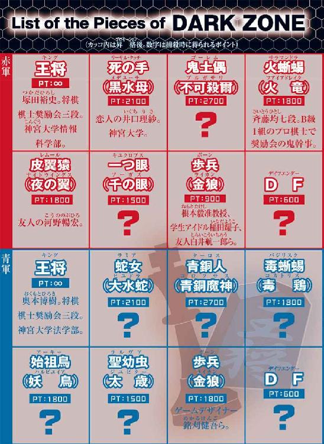

| ダークゾーン | |
| 貴志祐介 | |
| 祥伝社 (2013) | |
ダークゾーン
長編小説
貴志祐介

暗い部屋の中に、男女とり混ぜて十八人――あるいは十八体の影が佇んでいた。
新月の夜なのか、窓の外に見えるのは混沌とした無明の闇である。幽かな星明かりさえ射し込んでこないが、全員が炎のような深紅のオーラに包まれており、サイズも形状もまちまちなシルエットが、ぼんやりと浮き上がっていた。
掌を目の前にかざしてみた。オーラは心臓の鼓動に同調しているらしく、太陽の火焔のように脈動しながら、燃え上がっている。
俺は、いつから、ここにいるのだろう。
なぜ、ここにいるのか。
ここは、どこなんだろう。
わからない。記憶に靄がかかったように、何も思い出すことができなかった。
ただ一つの声だけが、記憶の奥底から湧き上がってくる。
戦え。戦い続けろ。
意識の中で執拗に反響する声に、塚田は混乱した。
......俺は、いったい誰なんだ。
ようやく、答えらしきものが湧き上がってきた。奇妙なことに、二種類の異なった答えが。
俺の名前は、塚田裕史。二十歳だ。将棋のプロの予備軍である新進棋士奨励会の三段で、同時に、神宮大学情報科学部の三回生でもある。
俺は、赤の王将だ。
もう一つの内なる声は、圧倒的に大きく、それ以外のすべての思考をかき消してしまう。
赤の王将。赤の王将。赤の王将......。
「我々に与えられた猶予は、残り十五分というところだ」
暗い部屋の中で、唐突に、別の奇妙な声が響いた。ひどく弱々しく、生まれたての仔猫の鳴き声のように甲高い。その声を聞いたとき、塚田は、心の底から戦慄を覚えた。
「我々は、それまでに、基本的な戦略を決定しておかなければならない。いったん戦端が開かれてしまえば、悠長に考えを巡らせている暇などないだろう」
塚田は、部屋を透かして声の主を捜してみたが、どこにいるのかよくわからない。
「今喋ったのは、誰だ？」
塚田と同じ思いに駆られたらしく、一人が反問する。しかし、こちらも声がおかしかった。発音はくぐもっていて聞き取りにくく、声の中に笛を吹いているような音が混入している。
今度の声の主は、こちらから見て右手奥に立っているのがわかった。しかし、そのシルエットは、人間というより、発芽したヒヤシンスの球根のようだった。
「私は、一つ眼だよ。火蜥蜴」
暗闇の中から、最初の声が淡々と応じる。
「......火蜥蜴？ それは、俺のことか？ あんたには、こっちが見えるのか？」
興奮したためか、ますます声が変になって、まるでピロピロ笛を吹きながら話しているような感じになる。にもかかわらず、その声の主が誰なのか、塚田にはわかった。
斉藤均七段だ。Ｂ級１組のプロ棋士で、礼儀に厳しいことで奨励会員に恐れられている、奨励会の鬼幹事だった。
「私の目には、全員の姿がはっきりと映っている」
一つ眼。火蜥蜴。それらの名前は、赤の王将と同様に、塚田の記憶の中に明確にインプットされていた。まるで焼き付けられたような鮮明さで。
内なる声は、さらに大きく執拗になって、塚田に命じる。
戦え。戦い続けろ。
「ちょっと待って！ 一つ眼......さんでいいの？ どういうこと？ 悪いけど、わたし、この状況が全然理解できてないんですけど」
ここにいる全員の疑問を代弁するように、女性の声がした。
塚田は、はっとした。ここで初めて聞くまともな人間の声というだけではない。それは、この世で一番大切な、涙が出そうになるくらい懐かしい声だった。
「理紗......本当に、理紗なのか？」
塚田の声に、彼女は敏感に反応した。
「裕史？ これ何なの？ いったい、どうなってるわけ？」
「わからないんだ。俺にも、さっぱり」
井口理紗が、部屋の左の隅から、前に進み出た。ひときわコントラストの強い、真っ赤なオーラに包まれている。ほっそりした輪郭は、まぎれもなく理紗だ。やがて顔が見え、塚田は胸がいっぱいになるのを感じる。
「わたし、気がついたら、ここにいたんだけど......」
理紗は、そこで絶句する。それ以上のことは、どうしても思い出せないらしい。
「俺もだ。おい、今一つ眼って言ったやつ。どこにいる？ 何がどうなっているのか説明してくれ」
塚田は、暗い部屋の奥に向かって訊ねる。
「王将のご命令とあらば、説明しよう」
あいかわらずか細い、一つ眼の声。
「王将というのは、誰のことだ？」
間近から野獣の唸り声のような野太い声が発せられたために、塚田はぎょっとした。壁際に蹲っている巨大な影に気がついたのだ。高さは天井すれすれまであって、横幅もまた異常な大きさだった。なぜか、塚田は、正視することができずに顔をそむける。
「君のすぐ横にいる方が、赤の王将だよ。鬼土偶」
一つ眼は、平然と答える。
「時間がないので、手短に話そう。ただし、なぜこうなったのかは、私にはわからない。説明できるのは、現状がどうなっているかだけだ」
部屋の中は、水を打ったような静寂に包まれた。一つ眼の妙に可愛らしい声だけが響く。
「ここにいる十八体は、赤の軍勢に属する駒だ。そして、ここからほど遠くない場所に、青の軍勢が集結している。これから――おそらくは十五分以内に――両軍が激突して、戦いが始まる。戦いは、いずれか一方の王将が殺害されることにより決着する」
塚田は、息を呑んだ。状況は依然として理解不能だったが、自分の置かれている立場が、とてつもなく危険なものであることは感じられた。
「俺たちが駒？ どういうことだよ？」
「赤と青って何？ 全然意味わかんない！」
次々と怒りの声が上がったが、塚田が「待ってくれ」と言うと、再び静まりかえる。
「一つ眼。なぜ、俺たちは、その相手と戦わなきゃならないんだ？」
全員が、固唾を呑んで、その答えを待ち受ける。
「今言ったように、私は、なぜかという質問には答えられない。しかしながら、こちらが戦意を示さなかった場合、どうなるかはわかる。青の軍勢が殺到してきて、あなた......赤の王将を殺すだろう。戦いは青軍の勝利で幕を引かれ、敵が四勝した時点で、すべては終わる。もちろん、味方が先に四勝すれば、やはりこのゲームを終わらせることができるのだが」
あまりにも多くの疑問がいっぺんに浮かんできたため、何から訊けばいいのか迷う。
「ちょっと待ってくれ。敵が四勝するって、どういう状態だよ？ おまえは今、負ければ俺は殺されるって言ったじゃないか？ 誰かが赤の王将の称号を引き継ぐのか？」
「いや、赤の王将は、あなただけだ。あなたが四度死ねば、赤の軍勢の負けとなる。だが、その前に、青の王将を四度殺すことができれば、我々の勝利だ」
「俺が......四度死ぬ？」
突拍子もない話だったが、塚田の中では不思議と腑に落ちる感覚があった。自分には、四つの命がある。それが、しごく当然のことのように思えたのだ。
「我々が負けたら、王将以外の駒は、どうなる？」
さきほど、鬼土偶と呼ばれた巨大な影が、低周波のような唸り声で問い詰める。
「正確な予言はできないが、負けた側は全員が消滅させられると覚悟しておいた方がいいだろう」
一つ眼の答えに、全員が凍りついた。束の間、沈黙が場を支配する。
「......ねえ。ここは、どこなの？」
理紗の質問に、塚田は、はっとした。
「わたしたちが、どうしてここにいるのかは、どうせ説明してくれないんでしょう？ でも、ここがどこかくらいは教えてくれてもいいんじゃない？」
「我々がいるのは、無人島の上だ」
一つ眼の答えに、ざわめきが起こった。
「南北約４８０メートル、東西約１６０メートル、面積にして、およそ６・３ヘクタールの島だ」
ずいぶん小さな島のようだ。無人なのは当然かもしれないが、だとすると、この建物は、いったい何だろう。暗い中でも、コンクリート製であることと相当な築年数が経過していることはわかった。足下は、朽ちた畳や木片などで埋め尽くされている。どう見ても、相当昔に遺棄された廃墟のような感じだった。
「そうかよ。で？ その島ってのは、どこらへんにあるんだ？」
そう訊ねた声は、友人の河野暢宏のようだったが、滑舌が悪く獣じみた荒い息づかいが混じっているため、まるで動物が慣れない口を使って無理やり喋っているようだった。
「その質問に答えるのは、困難だよ。皮翼猿」
一つ眼の声は、以前にも聞き覚えがある。特定の個人というわけではなく、この、か細く弱々しい感じは......。
「困難？ つうのは、おまえにはわからねえってことか？」
「この島の位置を示す言葉は、日本語には存在しないということだ」
「ああ？ 何言ってんだ、てめえ？ なめてんのか？」
皮翼猿と呼ばれた相手は、腹を立てて声を荒げた。この短気さは、まちがいなく河野だろう。
「ちょっと待ってくれ。言葉がないというのは、どういうことなんだ？ なにも正確な緯度と経度がわからなくてもいい。たとえば、太平洋上とか、日本海にあるとかくらいは、言えるだろう？」
諄々と一つ眼を諭すような落ち着いた声が響いた。こちらは、はっきり聞き覚えがある。大学のゼミの指導教官で、社会学から知能工学まで幅広い専門分野を持つ根本毅准教授だ。塚田は、ほっとした。根本准教授だったら、この不可解な状況を解き明かしてくれるかもしれない。声をかけようと思ったとき、一つ眼が言いだしたことに耳を奪われる。
「この島があるのは、そうした海洋上ではない。それどころか地球上ですらないのだ」
失笑が起きた。
「いくら何だって、それは信じがたいな」
根本准教授は、溜め息をつく。
「地球上でないとしたら、火星だとでも言うのか？」
「もしそうだったら、簡単に日本語で表現できる」
一つ眼は、淡々と答える。
「......あえて表現すれば、この島は、ダークゾーンと呼ばれる異次元空間にぽっかりと浮かんでいるのだよ」
「ダークゾーン？」
「堤防の外を覗いてみればわかるが、どこにも海面は見えない。島の外にあるのは虚無だけなのだ。したがって、この島の外に抜け出そうとする企ては、無意味であるばかりか自殺行為だ。島から外に出た場合、何が起きるか予言することは難しいが、おそらくは無に呑み込まれて、存在そのものが消滅するだろう」
全員が、黙り込んだ。ある者は茫然とし、別の者はじっと考え込み、またある者は、怒りのあまり言葉が出なくなってしまったようだ。
「ねえ。この、喋ってる人って、ふつうに頭おかしいだけなんじゃないの？」
理紗とは別の女性の声が、沈黙を破る。塚田は、その声にも聞き覚えがあった。しかし、これも、友人という感じではない。
「ここでこんなことしてたって、しょうがないよ。外、調べに行ったら？」
「そうだよな。ちっ。時間を無駄にした」
同調する声が、いくつか上がる。
「時間を無駄にしたというのは、正しい指摘だ。すでに、青の軍勢の方は戦う準備が整いつつあるようだ。あと十分ほどで最初の交戦が発生するだろう。それまでに、こちらは戦略を決定しなければならないが、いまだに自軍の戦力についてさえ、満足に把握していない。第一局の勝利には、すでに黄信号が点っていると警告しておこう」
「ふん。馬っ鹿じゃないの？」
さっきの女性が、吐き捨てるように言う。
「いや、ちょっと待て。......今、相手は準備ができつつあるって言ったよな？ なぜ、そんなことがわかるんだ？」
塚田は、気になって、女性を制して訊ねる。
「私には、見えるのだ。ぼんやりとだが。それが、私の持つ最大の能力の一つだ」
「見える？ 透視とか、千里眼みたいなことか？」
「もう、いいかげんにしようぜ。その変な声のやつの言うことを真に受けんのは。なあ、赤の王将って呼ばれてたの、おまえ、塚田じゃないのか？」
さっきは皮翼猿と呼ばれた河野が、こちらを向くと話しかけてくる。まるで、だぶだぶのマントを着ているような、妙なシルエットだった。
「ああ、そうだ」
塚田は、目をそらしながら答える。鼓動が速くなった。なぜか、周囲にいるものは、見てはいけないような気がしたのだ。
「ねえ。外、見に行かない？」
さっきの女性と、その近くにいた二人が、自らの放つオーラを頼りに部屋を出て行こうとする。
「赤の王将に勧告する。ただちに、彼らを止めるべきだ」
一つ眼が、あいかわらず甲高く奇妙な声のままだが、今までになく強い調子で促した。
「しかし、止めると言っても......」
塚田は、ためらった。その間に、三人の影は、部屋から出て行ってしまう。
「統制を失っては、勝利はおぼつかない。離れ駒は、敵の好餌となって、戦力ロスを招くばかりか、その威力は、将来、直接こちらに跳ね返ってくることになるだろう」
一つ眼の警告には、その場に残った全員の胸を刺す不吉な響きがあった。
「それ、どういう意味なのかな？」
誰かが質問した。若々しい声と、メリハリの付いた抑揚は、どうやら、大学で同じゼミにいる白井航一郎らしい。
「ここでの戦いには、必勝法はないが、守るべき鉄則は存在する。まず肝に銘じなければならないのは、死者は生者の十倍強力だということだ。今、ここを出て行った三名が敵の手に落ちれば、彼らは死者となった後、我々に向かって牙を剝くことになる」
「死者が、十倍強力って......？ 何だよ、それ。ゾンビかよ？」
白井らしき人間の声は、震えていた。
「もう少し、わかるように説明してくれよ。もし死んだ人間が......」
だが、一つ眼は、白井の言葉を途中で遮る。
「もうすぐ月が出る。敵が闇討ちを意図しているなら、その前に攻撃をかけてくるかもしれないが、初戦では、戦闘は月光に導かれる公算が高い。いずれにせよ、もう、ほとんど時間がない」
「待ってくれ。いったい今、何時ごろなんだ？ 夜明けは、いつ来る？」
塚田は、叫んだ。理由はわからなかったが、一つ眼という、いまだ姿も見えない相手の言葉を疑う気持ちは消え失せていた。今は、なぜこうなったのかを思い悩むより、差し迫っているらしい危険の回避を考えなくてはならないような気がする。
「夜明けは来ない」
一つ眼の言葉は、あいかわらず淡々と、かつ無情に、暗い部屋の中に響いた。
「ここには、太陽は存在しないのだ。月が出て、月が沈む。その間隔は、正確に三時間だ。つまり、三時間ごとに、薄明と暗黒の状態が繰り返されることになる」
荒唐無稽にもほどがある。あまりにも馬鹿げた話に、笑い出したくなったが、その一方で、塚田は、すんなりと一つ眼の説明を受け入れている自分に気がついていた。
「......ほ、本当だった！ あいつらが、来るわ！」
息せき切って部屋に飛び込んできたのは、さっき出て行ったばかりの女性のようだ。その後ろに、もう一人が続く。
「あいつらって、何だ？ ......いや、それより、どこにいる？」
塚田は、厳しい声で詰問する。
「あっちよ！ 青く輝いてた。わたしたちみたく。何人もいたわ！」
「あっちって、どっちだよ？」
「俺たちは、この建物を下りる途中で、窓から外を覗いてみたんだ。左手には長い塀が続いていて、その外は海かもしれない。波音は聞こえなかったが......」
外から帰ってきた男の方が、もどかしげな口調で説明する。
「とにかく、この建物の向こうにも、似たような建物がたくさんあるんだ。その下に、青く光ってるシルエットが、いっぱい見えた。建物の陰に身を隠し、ゆっくり、こっちへ近づいてくるみたいだ」
「一つ眼！ どうすればいい？」
塚田は、暗がりに向かって叫んだ。
「早急に、迎撃する準備を整えるべきだろう」
「どうやって？」
「戦略を立案するのは、赤の王将である、あなたの役目だ」
「無茶なこと言うな！ 俺は、まだ、何が何だかわからないんだ！」
塚田は、かっとなって叫ぶ。
「ねえ、さっき外に出てったのは、三人じゃなかった？」
理紗の囁き声が響いた。
「そうだけど」と、さっきの女性がぶっきらぼうに答える。
「もう一人は、どうしたの？」
「もう少し近づいて、あいつらの様子を見てくると言ってたな」
男の方が、理紗の質問を引き取った。
「まずいな。これで、青の軍勢は歩兵を一体持ち駒にすることが、ほぼ確実な情勢だ」
一つ眼が、世間話をするような口調で言った。
「持ち駒？ それじゃ、まるで」
「今......月が出る」
一つ眼の声が、塚田の言葉を遮る。
次の瞬間、幾筋もの月光によって、部屋の中が照らし出された。
建物は、ひどく荒廃しており、窓だけでなく、壁や天井の隙間からも光が射し込んでくるのだ。
塚田は、目を瞬き、うっすらと明るくなった室内を見回した。
そこに佇んでいる十六体の姿が、否応なく目に飛び込んでくる。
塚田は、気が遠くなるような恐怖に襲われた。
そのときになって、ようやく、自分の目には、最初からすべてが明瞭に見えていたことに気づく。正気を保とうとする意識が、見たものをありのままに認識するのを拒んでいたのだ。
「......噓」
理紗がつぶやく声がしたが、残りの全員は、驚愕のあまり言葉を失っていた。
異形化の程度こそ、人によってまちまちだが、ほぼ全員が怪物のような姿に変貌しているのだ。
すぐそばの壁際には、鬼土偶と呼ばれていた巨大な生き物がいた。
赤いオーラに包まれたシルエットだけが見えていたときも、身長は２メートルを超えているように見えたが、今、月光に照らされている怪物は、天井に頭がぶつからないよう身を屈めている。身体をいっぱいに伸ばせば、３メートル半はあるのではないか。
鬼土偶は、巨大な頭部を塚田の方に向けた。全身がオランウータンのような剛毛で覆われており、瞳のない琥珀色の眼球が爛々と輝いている。人の頭がすっぽり入りそうな口の端からは、黒光りする長い二本の牙が覗いていた。巨大な体軀と比べても不釣り合いに長い両腕は三対もあり、大きな指の先に付いている太い鉤爪もまた真っ黒だった。
誰なのかはわからない。でも、その姿には、どことなく既視感があった。
火蜥蜴もまた、人間離れしているという点では、負けず劣らずだった。
口吻は漏斗のように細長く伸び、蜥蜴というよりは蟻喰イを思わせる顔つきだった。対照的に、腹部は風船のように膨らんでいる。両目は、蛙のように頭の上に付いていた。無数の斑紋が散っている全身は、ぬめぬめと濡れ光っている。直立していると、目線は普通の人間と同じ高さだったが、山椒魚のような尻尾の先まで含めると、体長は３メートル以上はあるだろう。太短い四肢の先には、蛙のような水搔きがある。声で斉藤七段だとわかったものの、外見は人間らしさの名残さえとどめていない。
皮翼猿になった河野は、微妙に人間だったときの面影を残してはいたが、三つの点で、やはりホモサピエンスとは認め難かった。真っ黒い大きな眼球と、鼬のように尖った口、それに上肢と下肢の間に張られたマントのような皮膜である。どうやら自分の姿の異常さには気づいていないらしく、きょろきょろと周囲を眺め回しては、驚きに目を見張り、犬のように舌を出して喘いでいる。
「理紗！」
塚田は、恋人の姿を追い求めた。輪郭からは何も変わっていないように思われたが、彼女もまた、奇怪な形に変貌しているのだろうか。狂おしい想像が脳裏を駆け巡る。
「......裕史」
部屋のほぼ中央に佇んでいる姿を見て、塚田は心底ほっとした。理紗だ。だいじょうぶ。彼女は、以前と変わらず、人間のままだった。着ているのも、見覚えのあるＴシャツとジーンズである。だが、なぜか右手を背後に隠し、それ以上、塚田に近づこうとはしない。
「理紗。どうしたんだ？」
「裕史。わたし......」
理紗は、まわりを見回して、溜め息をついた。それから、これ以上隠してもしかたがないと思ったのか、ゆっくりと右手を身体の前に出した。
一目見た瞬間、塚田は、身体が痺れるようなショックを受けた。他の部分は変わっていないのに、右手の肘から先が異様な器官と置き換わっていた。ぬめぬめと黒光りしている手には、節足動物の肢のように無数の棘が生えている。肘から先だけで１メートル以上あるだろうか。
理紗が指を開くと、それが、一応、手の原型を保っていることがわかる。異常に細長い五本の指。アイアイという不気味な猿を思い出す。関節の数は倍増しているようだ。
「どうして？ わたし、どうして、こんなことになっちゃったの？」
月光に照らされた理紗の顔は、絶望に青ざめているようだった。塚田は、返答に窮する。そうだ。一つ眼は、どこにいるのだろう。この事態にだって、もしかしたら、何らかの説明が付くのかもしれない。
「一つ眼！」
塚田が叫ぶと、部屋の一番奥から、返事が聞こえた。
「私は、ここだ」
声のした方に目をやって、啞然とする。そこには、襤褸布にくるまれた赤ん坊が、横たわっていた。甲高く弱々しい声は、赤ん坊の声帯から生み出されたために、どこかで聞いたことがあるような気がしたのだろう。
とはいえ、一つ眼もまた、通常の意味での人間とは言い難かった。その名が示す通り、本来両目があるべき場所には何もない。その代わりに、額の中央には菱形をした巨大な目が一つ鎮座しており、瞬きもせず、こちらを見つめている。手足は枯れ木のように萎びており、廃用身のようだ。
こいつは、いったい何なんだ......。塚田は、胸が苦しくなり目をそらした。なぜか、長く一つ眼を見つめていることができない。
「このとおり、百聞は一見にしかずだろう。全員の姿を見れば、今の状況について私が語ったことが、噓や出鱈目ではなかったとわかるはずだ」
一つ眼は、赤ん坊の声で淡々と話す。塚田の非現実感は限界を超え、奇妙な無感動に陥っていた。
「簡単に説明しよう。我々にとって最も大切な駒は、もちろん、赤の王将だが、次に位置するのは、鬼土偶、火蜥蜴、死の手、皮翼猿、それに私、一つ眼の五体で、これら役駒が、特に高い攻撃力や、重要な機能を与えられている」
死の手というのは理紗のことだと、すぐにわかった。音が似ているせいかもしれない。
「残る十二体を構成するのは、六体の歩兵と、六体のＤＦだ」
ともに、比較的人間に近い姿を残していたが、歩兵というのは、全身を穿山甲のような鱗に覆われ、鎌のような鉤爪を持った連中だ。ＤＦとは、アルマジロっぽい装甲があり眉間に長い角が生えている一団だろう。みな、うっすらと顔に見覚えがあるような気がする。
よく見ると、さっきの暗闇の中で、歩兵のメンバーは発言していたが、ＤＦはまったく喋らなかった謎が解けた。ＤＦには口がなかったからだ。その代わり、目だけがぎょろぎょろと動いている。まるで、マスクを付けた人々のようで、六人とも、どことなく見覚えがあった。
「歩兵とＤＦは、戦闘力に関しては、ほぼ互角だ。しかしながら、価値は歩兵の方がずっと高い。ＤＦは守り専門の駒という位置づけなので、王将以外の役駒や歩兵には昇格の権利があるが、ＤＦにはないからだ」
そのとき、外から、世にも恐ろしい悲鳴が響いてきた。悲鳴は長々と続き、唐突に途切れる。
「何だ、あれは？」
火蜥蜴が、細長い口から声を絞り出す。長い管を吹いているような響きだった。
「遊び駒だったこちらの歩兵が一体、敵に捕殺されたのだ」
一つ眼は、楽しげにさえ聞こえる調子で言う。
「戦端は開かれた。敵の作戦は、こちらの準備が整う前に速攻をかけることらしい。向こうも充分な準備はできていないはずだが、とにもかくにも先手必勝ということだろう。もはやゲームのルールについて、詳しく解説しているような暇はない。王将。あなたが、今すぐに全軍の指揮をしなければ、我々の敗北は必至だ」
「待て！ もう一つだけ。青チームは、なぜ、そんなに早く意思統一ができたんだ？ こっちだって時間を無駄にしてたわけじゃない。だけど、こんなめちゃくちゃな状況で、どうしてこんなに迅速に動けたんだ？」
一つ眼の答えは、単純明快だった。
「意思の統一は、必要ない。すべては、青の王将の決断しだいだ。王将の命令に、すべての駒は従う。そう定められているのだから」
なるほど、だからだったのかと、塚田はすんなり納得した。自分が制止したときに、皆が静かになったのは。さっき三人が部屋を出て行こうとしたときも、強く命令すれば、止められたのかもしれない。
それにしても、敵の王将は、相当頭の回転が早いやつらしい。塚田は、冷や汗が滲むのを感じた。まちがいなく、この相手は手強い。よほど気持ちを引き締めてかからないと、やられるだろう。
「よし。全員、隊列を組め。......そうだな、歩兵は一番外側だ。ＤＦは、俺の周囲を固めるんだ。他の駒は、とりあえず、その間に入れ」
塚田が命令を下すと、全員が、黙々と言われたとおりに動く。理紗が、気遣わしげな目でこちらを見たが、何も言わなかった。
何もかもが、とても現実に起きていることとは思えないが、これから戦わなければならないのは、将棋かチェスに似たゲームらしい。どういう戦略で戦ったらいいのか見当も付かなかったが、今は、とにかく戦うしかない。塚田は、深呼吸した。現実が崩壊するような感覚に、目眩がし冷や汗が出てくるが、考えるのは後だ。今は、何とかして......何としても、勝つしかないのだ。
将棋やチェスでは、孤立した歩兵は弱体化して、敵に狙われる。本物の戦争でも同じかもしれない。歩兵とＤＦは、がっちりと隊列を組ませて敵に当たらせた方がいい。アメフトで言えば、歩兵はオフェンスラインというところか。
いや、待て。狭い建物の中に全軍を配置して、何の意味がある。まずは、もっと広い場所に散開しなくてはならない。青チームに後れは取ったが、とにかく、この建物から外に出て......。
塚田が、そう命令を下そうとしたとき、窓の外を、黒い影が横切った。
ぎょっとして見ると、再び黒い影が現れて、窓の外の張り出しに止まった。恐れげもなく、部屋の中を覗き込んでいる。逆光だったが、青い燐光を放っているために、ぼんやりと顔の造作が見える。
一言で言うなら、それは、女の顔をした鳥の化け物だった。
顔の上半分――豊かな黒髪から細い眉までは、おそらく、元の人間の造作を残しているのだろう。だが、顔から飛び出た巨大な両眼と、猛禽のような嘴は、この世のものとは思えない禍々しさだった。羽根が生えた両腕には人間のような手指が残っていて、青くマニキュアされた鋭い爪が覗いている。
女、というより鳥の化け物は、部屋の中を隅々まで見渡し、こちらの姿を確認していた。半開きになった嘴からは、先の尖った長い舌が覗き、まるで笑っているように見える。
「青軍の始祖鳥だ。偵察に来たのだろう」
一つ眼が、幼子の声で警告する。
「こちらの全軍の様子を見られた。このまま帰してはいけない」
まるで、その言葉を合図にしたように、女怪は、ぱっと飛び立った。
瞬時に、塚田は、命令を下していた。
「皮翼猿。追え！ 殺すんだ！」
河野......皮翼猿は、部屋の中を走り抜けると、ガラスのない窓から、ためらわずに外に飛び出した。
一瞬、はっとしたが、皮翼猿は、手と足の間にある皮翼を広げると、ムササビのように滑空する。塚田は、窓辺に駆け寄って、成り行きを見守った。皮翼猿は、始祖鳥のすぐ背後に追いすがったが、間一髪で逃げられてしまった。皮翼猿は、巧みに皮翼の角度を変えながらブーメランのように空中で方向転換し、別の建物の外壁に取り付いては、再びジャンプして滑空に入る。
一方、逃げる側の始祖鳥は、小さな羽根で不器用に羽ばたきつつ、建物から建物へ滑翔していく。どちらも、本物の鳥のように、自由に飛翔できるわけではないらしい。
「惜しいところだったが、もう捕まらないだろう。皮翼猿を呼び戻した方がいいかもしれない」
一つ眼が、ぽつりと言う。
「どうしてだ？」
「逃げることだけが目的だったら、始祖鳥は、地上に舞い降りて自軍に合流すればいい。ああやって空中を逃げ回っているのには、何か魂胆があると思う。もしかすると、敵は、皮翼猿を狙っているのかもしれない」
塚田は、叫んだ。
「皮翼猿！ 早く戻ってこい！ ......逃げろ！ 逃げるんだ！」
塚田の命令に応じて、皮翼猿は、空中で方向転換し、こちらへ向けて最後の滑空に入る。そして、それが命取りとなった。
突如として地上から真っ黒な噴流が立ち上り、皮翼猿の姿を完全に覆い隠してしまう。はっとして地上を見た塚田の目は、黒い霧を吐いた生き物の姿を捉えていた。
火蜥蜴に似ているが、全身が松毬のような鱗に覆われている。火蜥蜴を湿地帯に棲む山椒魚に喩えるなら、砂漠に適応した蜥蜴のような格好だった。
「あれは、青軍の毒蜥蜴だ。見たとおり、毒霧を噴射する能力がある。射程は１００メートル以上あり、開けた場所で狙われた場合、回避するのは不可能だ」
「そんな！ 河野、いや、皮翼猿は、どうなったんだ？」
塚田は、茫然として、一つ眼を詰問する。
「毒蜥蜴の毒霧の直撃を受ければ、鬼土偶以外の駒は、すべて殺られる」
「なぜだ？ なぜ、もっと早く警告しなかった？」
河野が、死んだ。とても、信じられない。タフな現実主義者だったが、まさか、こんな非現実的な場所で、ありえないような死に方を......。
しかも、まだ緒戦なのに、すでに歩兵を一体屠られた上、大切な役駒である皮翼猿まで失ったことになる。戦力差は回復困難なまでに拡大してしまったのではないか。
それに対して、一つ眼は、意外な答えを返してきた。
「あそこで、敵が毒蜥蜴の毒霧を使うことは、予測できなかった」
「なぜ？ あれだけの威力があれば、噴き付けられたら、誰が見たって、ひとたまりもない......」
「理由は簡単だ。敵の立場に立って考えると、ここで毒霧を使うのは、せっかくの優位を投げ棄てる暴走であり、悪手だと考えられるからだ」
「悪手？ どういうことだ？」
「赤軍と青軍の駒は、それぞれ異なっているが、能力的には互角だ。毒蜥蜴は毒霧を噴き、火蜥蜴は高温の火炎を吐くが、どちらも、一度噴射を行うと腹の中のタンクが空っぽになり、回復するまでに丸一時間かかる。したがって、その前に総力戦になれば、大砲が使えないために、あきらかな不利に陥るだろう」
塚田は、パニック寸前になっていたが、かすかな希望の光を感じた。
「だとすると、決戦のチャンスは、今しかないということか？」
「そのとおり」
塚田は、全軍に指令を発した。
「全員、今すぐにこの建物から下りろ！ これから敵と雌雄を決する。先頭は六名......いや、五名の歩兵だ。密集隊形を組んで、お互いを守るんだ」
塚田は、歩兵の中に、根本准教授や白井らも含まれていることを思い出す。しかし、今は、そんなことに頓着していられない。
「その後ろは、鬼土偶だ。それから、火蜥蜴」
毒霧でも死なないというのだし、たぶん、鬼土偶は、フォワードに使うべき駒だろう。その後ろに、切り札となる大砲を置いて、最も効果的なタイミングで発射すれば、勝てるかもしれない。
「その後に、俺が続く。ＤＦは全員、俺のまわりを守ってくれ」
王将が殺られたら終わりなのだから、自分だけ助かりたいというエゴではなく、当然の戦術だ。
「わたしは？ どうすればいいの？」
理紗が、悲しげな声で訊く。
どうすればいいのだろう。理紗......死の手の役割は、まだわからない。
「俺のすぐ横にいてくれ」
理紗は、どんなことがあっても敵に殺させるわけにはいかない。彼女は、かけがえのない存在なのだから。
それから、一つ眼のことに気がついた。どうやら必要不可欠な存在らしいが、どう見ても、自力で移動することは不可能だろう。塚田は、すぐそばにいるＤＦの一人――女性のように見えた――に命令する。
「一つ眼を抱いていてくれ」
口のきけないＤＦは、黙ってうなずいた。目を見たとき、彼女が笠原という名前の看護師だったことを思い出したが、どこで会ったのかは見当もつかない。
「待って」
理紗が、制止する。
「わたしが」
理紗は、まるでふつうの赤ん坊に対してするように、自然な動作で一つ眼を抱き上げる。
「その人には、裕史を守る役目があるんでしょう？」
まるで言い訳のように言い添える。
十六名の元人間、あるいは十六体の駒は、無言で建物の階段を下っていった。廃墟のような建物の階段は、思いのほか頑丈らしかった。羆よりはるかに重そうな鬼土偶の体重がかかったときも、劣化したコンクリートにヒビが入り小さな欠片が飛んだが、何とか持ちこたえる。
「敵は、もう失策に気づいているだろう。歩兵に続き、役駒の皮翼猿を獲得したのはポイントだが、その反面、早々と毒蜥蜴の毒霧を使ってしまったのは、より大きなマイナスであることに」
理紗に抱かれた一つ眼は、塚田の耳元で囁いた。
「だったら、向こう......青軍は、どうすると思う？」
「考えられる戦術は、二つだろう。まずは、失敗を認めて一時撤退すること。一時間だけ稼ぐことができれば、毒蜥蜴の能力は復活するから、後は、青軍の駒得だけが残る」
この島の様子がわからない以上、逃げ回る相手を追いかけて捕まえるのは、かなり厄介かもしれないと思う。
「もう一つは？」
「敵は、すでに待ち伏せには有利なポジションを占めている。我々が出て行くのを待ち、一気に攻勢に出ることで、速戦即決を目指すかもしれない。おそらくは、こちらの方が可能性が高いだろう」
「じゃあ、建物から外に出た瞬間が、一番危険ということか？」
「その通りだ」
だとすれば、鬼土偶を先頭で出した方がいいのだろうか。
「さっき、鬼土偶は、毒蜥蜴の毒霧でも殺られないって言ってたよな？ ということは、鬼土偶は不死身なのか？」
塚田の質問に対して、一つ眼は、赤ん坊じみた声で答える。
「たしかに、鬼土偶と青軍の青銅人には、ほとんどの攻撃が無効だ。お互い同士ですら、殺すことはできないのだから。だが、それでも不死身というわけではないのだ。両軍には、一体ずつ、鬼土偶や青銅人を殺せる駒がある」
塚田は、あえて質問はしなくても、それが何なのか見当が付いた。
「我が軍の死の手は、触れるだけですべての駒を殺せる。青軍の青銅人も例外ではない。そして、青軍の蛇女の毒牙に咬まれれば、鬼土偶もまた斃されるのだ」
理紗は、目の前にかざした黒い手を、じっと凝視していた。
一階に下りると、息を殺して、外の様子を窺う。建物の壊れた窓からは、何も見えない。相当数の敵が、すぐ近くに潜んでいるはずだったが、物音一つ聞こえなかった。
「一つ眼。敵は今、どこにいる？」
塚田の問いに、一つ眼は、すげなく答える。
「わからない」
「なぜだ？ おまえには、敵の姿が見えるんじゃないのか？」
「敵の接近を、ぼんやりと感知することはできる。だが、正確な位置までは判別できない」
ちくしょう。肝心なところで、使えねえやつだ。
「本来は、偵察や索敵には皮翼猿を使うのだ。青軍が、開始早々、始祖鳥を飛ばせたように。だが、すでに、こちらに皮翼猿がない以上、何か別の方策を考えなくてはならない」
そうだったのかと、塚田は、考える。敵が、早々と毒蜥蜴の毒霧を使ってしまったのは、失策だという話だったが、代償として、こちらの目を奪ったと考えれば、意外に損得勘定は合っているのかもしれない。
現在、敵はこちらの位置を正確に把握しているのに、こちらは、皆目見当が付かない状態なのだ。この不利は、もしかしたら、大砲の有無に匹敵するのではないか。
とにかく、一カ所の出口からぞろぞろ出て行ったら、敵が好きなように攻撃するのを待つばかりになる。
塚田は、とりあえず全員を一階の窓の内側に潜ませた。窓の外では、空が漆黒から濃紺に変わり、ちょうど夜明け前くらいの明るさだった。地面は、いたるところが瓦礫の山である。
「一つ眼。敵は、俺たちを待ち伏せするために、どういう布陣を敷くと思う？」
こんな化け物に真剣に相談を持ちかけている自分が、どうにも信じられない。
「敵としても、我々を完全に包囲するには駒数が足りないし、我々がどこから出て行くかは、予測が難しいはずだ」
赤軍がいる建物には、見たところ二カ所の出口があるが、窓ガラスがすべてなくなっているので、極端なことを言えば、どこからでも出ることができるだろう。
「出てくる場所を決め撃ちすることができないのだから、少し離れた場所に陣取り、こちらの動きに応じてすばやく展開できるように、駒を配置するだろう。それだけの条件では、可能性が多すぎて、とても絞り込むことはできない」
「向こうから、すぐに仕掛けてくる可能性は？」
「まずないだろう」
一つ眼の言葉に、塚田は、一瞬だが、ほっとした。
「毒蜥蜴の毒霧を先に使ってしまった以上、向こうから仕掛けてきて攻め潰すのは無理だ」
「じゃあ、青軍は、こちらが出て行くのを待っての、カウンター狙いしかないんだな？」
少しだけ、展望が明るくなったような気がする。こちらが専守防衛に徹していれば、少なくとも、負けはないのだから。
「現状はそうだが、忘れてはならないのは、一時間たてば、毒蜥蜴の能力が復活するということだ。敵は、それまでは、あえて無理はしないはずだが、一時間後には猛攻をかけてくるだろう」
つまり、それまでに、この状況を打開しなくてはならないのは、こちらだということか。
塚田は、目をつぶった。
いったい、どうすればいいのだろう。敵がどこにいるのかもわからず、数的にも劣勢の状況で。
しかし、このまま何もしなければ、ジリ貧の末に死が待っている。もし一つ眼の言葉が真実なら、失うのは、四つもある命のうち一つにすぎないが。
塚田は、一つ眼から、それぞれの駒の性能について詳しくレクチャーしてもらうと、将棋の対局のときのように腕組みをして考え込んだ。それらの組み合わせにより正しい戦略が導かれるはずだが、依然として次の一手がわからない。
もしかしたら、すでに、勝てない形勢になっているのではないだろうか。
そんな疑心暗鬼に陥りかけたものの、そんなはずはないと考え直した。現時点では、毒蜥蜴が使えない敵方より、こちらの戦力の方が上回っているはずだ。事実、敵は、いっこうに仕掛けてこないではないか。
戦いになってしまえば、火蜥蜴が使えるこちらが必ず優勢になる。だとすれば、何か、こちらから打開する手段があるに違いない。しかし、その具体的な手段がわからないのだ。
「とにかく、敵の位置を探らなければ、どうにもならないと思う。皮翼猿がいなくても、偵察を行う方法は、何かあるんじゃないかな？」
塚田のそばにいた歩兵――根本准教授が、考え深げに言う。全身を、靴べらほどもある大きな鱗にびっしりと覆われており、両手の先には、指の代わりに鎌のように湾曲した鋭い鉤爪が生えている。とはいえ、顔の一部――両目と鼻の周辺は表情がわかる程度に残されており、低く落ち着いた声音も以前と変わらなかった。
「たしかに、そうですね」
不用意な行動から歩兵を一体失っているだけに、味方を分散することに臆病になりすぎていたかもしれない。このまま何もせず時間を空費するよりは、たとえリスクを冒しても、動くべきだろう。
「一つ眼。さっきから、どのくらい時間がたった？」
「もうすぐ、六分になる。毒蜥蜴の毒霧が復活するまで、残された時間は、五十四分だ」
一つ眼が、答える。どうやら、機械のように正確な体内時計を持っているらしい。塚田の中では、一つ目の赤ん坊に教えを請うことに対する違和感は、徐々に薄れつつあった。
「......偵察するのなら、誰か、歩兵を使うしかありませんね」
万一の場合、役駒を失ったのでは打撃が大きすぎる。根本准教授は、うなずいた。
「私を含め、残っている歩兵は五人か。そのうち、二人ないし三人を使って、偵察に行かせるしかないだろう」
「ちょっと、待って！」
理紗――死の手が、たまりかねたように叫ぶ。
「あなたたちは、なんで、平然とこんなゲームやってるの？ おかしいって思わない？ ここがどこなのか、どうしてこんなことになってしまったのかを、まず突き止めるべきじゃない？」
「今、そんな余裕はないよ」
塚田は、溜め息まじりに言う。
「敵は、すでに俺たちを包囲している。このまま何もしなければ、こちらの負けだ」
「そんな、負けとか、勝ちとかって」
理紗は、胸に抱いている一つ眼を、ちらりと見た。
「さっき、この子に聞いた話を鵜呑みにしてるの？ あんなの、どう考えたって、めちゃくちゃじゃない！」
「たしかに、荒唐無稽な話です。しかし、我々には、現状を説明できる合理的な仮説は、何一つないんです。とりあえずは、一つ眼の言うことが真実であると仮定して、行動するしかないでしょう」
根本准教授が、諭すように言う。
「我々は、この戦いに負けた場合、本当に消滅するのかもしれない。だとすれば、今は、勝つことに全力を傾けるよりない」
「絶対、噓よ。......そんな」
理紗は、黙り込んでしまった。
「偵察隊を送るのはいいが、問題は、連絡を取り合う方法だろうね」
根本准教授は、塚田の方に向き直って言う。
「軍略には詳しくないんだが、かりに、偵察隊が、首尾よく相手の陣容をチェックできたとしても、無事に帰ってくるのを待っているだけの時間はないだろうな。退路を断たれて戻れなくなる可能性もあるし......。かといって、誰も、携帯電話や無線機のようなものは持ってないみたいだしね」
たとえあったとしても、ここ......ダークゾーンで携帯電話が通じるとは思えない。塚田は、皮肉に唇を歪めたが、ふと疑問が生まれた。
「一つ眼。敵は、こちらを包囲するためには、ある程度、駒を分散せざるをえないはずだろう？」
「その通りだ。まして、こちらだけが火蜥蜴を温存している状況では、全軍を一カ所に集めるのは、極力避けるだろう」
「だったら、どうやって連絡を取り合っているんだ？ 指令を下せなければ、いざというときに戦えないだろう？」
一つ眼は、額の中央にある巨大な目で、塚田を見た。単眼であるというだけでも、充分すぎるくらい非人間的だが、黒目の割合が小さい四白眼で、全体が菱形であることから、超自然の怒りを湛えた古代の神に睨まれているような畏怖に襲われる。
「青軍の聖幼虫や私には、テレパシーの能力がある。したがって、我々を介した場合は、離れた駒と通信することも可能だし、それぞれの駒の目を通して見ることもできる」
なぜ、それをもっと早く言わないのか。塚田は怒りを覚えた。一つ眼は味方の駒であるはずだが、こちらを見つめている目に冷ややかな悪意のようなものを感じるのは、気のせいだろうか。
塚田は、一つ眼に命じて、赤軍の駒と次々にテレパシーでコンタクトを取ってみた。結果は、良好だった。まるで携帯電話かトランシーバーで話しているように、明瞭に相手の思考内容が聞こえるのだ。ただし、ＤＦは例外だった。口がないために喋れないのと同様、テレパシーでも、ほとんどコミュニケーションを行うことができない。伝わってくるのは、漠然とした悲しみのような感情だけだった。
塚田は、残っている五体の歩兵の面々を見やった。
一人目は、塚田の師匠である多胡重國九段だった。師匠とは言っても、将棋界のそれは身元保証人のようなもので、ふつうは、それほど濃密な関係ではない。塚田も、多胡九段から直接指導を受けたことはなかった。それでも、弟子の自分が王将で師匠が歩兵というのは、気が引けたのだが、やむをえない。根本准教授は大学のゼミでの指導教官だったが、やはり歩兵である。
残る三人は、大学の友人である白井航一郎と木崎豊、それに、稲田と名乗る若い女性だった。さっき勝手に外へ出て、敵の姿を見て逃げ戻ってきた二人は、木崎豊と稲田だったようだ。
塚田は、歩兵のみの三名で偵察隊を組織するつもりだったが、誰を選べばいいのかと、迷っていた。
「さっき、外に出て行って敵にやられたやつは、誰だったんだろう？」
塚田は、独りごちる。
「あれは、もしかしたら、竹腰さんだったんじゃないかな」
多胡九段が、答えた。
「竹腰さんですか？ 連盟の職員の？」
塚田は、はっとした。竹腰則男さん。将棋連盟の職員で、日頃からいろいろ奨励会員の相談に乗ったり、アドバイスしてくれたりする人だ。元奨励会員だが、初段のときに年齢制限で退会し、師匠の有馬九段の口利きで連盟に職を得たらしい。
「さっき、あなたは、竹腰さんを誘って出て行きましたよね？ 知り合いだったんですか？」
塚田は、稲田と名乗る女性に訊ねてみた。
「知らないわよ！」
稲田は、けんもほろろの態度だった。
「何となく優しそうだったから、頼んだら、一緒に来てくれただけ」
「じゃあ、お互いに見ず知らずだったわけか......」
塚田は、腕組みをした。赤軍に選ばれた人間は、全員が知り合いというわけでもないらしい。
「まあ、向こうは、わたしのこと知ってたとは思うけど」
「どうして？」
塚田は、眉をひそめる。
「どうして？ わたしのファンだったかもしれないでしょう？」
「はあ？ ファンって何だよ？」
横から白井航一郎が訊ねると、稲田は、白井を睨んだ。
「あんた、わたしのこと、知らないわけ？」
「あれ？ 会ったことあったっけ？」
「あるわけないでしょ！ なんで、あんたなんかが、簡単にわたしに会えるのよ？」
稲田は、苛立ったように叫ぶ。
そのとき、理紗が、はっとしたように言った。
「稲田さんって、もしかしたら、アイドルのイナヨー......あの、稲田耀子さん？」
「そうよ！ 何？ 今ごろ、わかったの？」
稲田耀子は、ひどく高圧的な物言いだった。
ああ、そうだったのか......。塚田も、大学の同学年に現役のアイドル女優がいたことを思い出す。小柄な身体とは不釣り合いに大きな胸と、強い目力に人気があるらしい。漫画雑誌のグラビアでデビューし、最近は、連ドラにも出演していた。キャンパスで見かけたのは一、二回だが、何となく親近感を覚えてＣＤを買ったこともある。
とはいえ、顔面の一部を除く皮膚がびっしりと鱗で覆われ、指の代わりに鎌のような鉤爪が生えた姿には、アイドルらしさの片鱗も残っていなかった。
「......何よ！」
塚田の視線を感じ取ったらしく、耀子は、こちらに物凄い一瞥を向ける。
「わたしの姿が、怪物みたいだとでも言いたいわけ？」
「いや、そんなことはないよ」
塚田は、辟易して答える。図星だったが、そんなことを言ったら、この部屋にいる大半の人間――駒が、そうである。
「ふん！ 偉そうに上から目線で。自分は王将だから、特別だとでも思ってるの？ あんただって、どっからどう見たって立派な化け物なんですけどー」
塚田は、ぎょっとした。身体に違和感はなかったし、見た限り、何の異変もないようだったので、自分だけは、まったく変貌していないものと決め込んでいたのだ。
あわてて、顔や頭に触れてみたが、特に変わった感触はなかった。
「俺は......どうなってる？」
塚田は、理紗に訊ねる。
「他のみんなに比べたら、それほど変わってないかも......」
理紗は、口ごもる。
「はっきり言ってくれ。前と、どこが違うんだ？」
自分の姿を確認したくても、近くに鏡のようなものはない。
「目が」
「目？」
塚田は、一つ眼に向かって叫ぶ。
「テレパシーで、駒の目を通した映像を見られるって言ってたな？ 俺に見せてくれ！ 理紗の目に、俺はいったい、どんなふうに映ってるのか......」
まるで、モニターのスイッチを入れたように、脳裏に、別の映像が立ち上がる。
自分の顔だ。塚田は、そう思った。だが、どこかが違う。......目だ。理紗の言うとおり、目がおかしい。
それから、頭の中の映像は、くっきりと輪郭を結んだ。
そうか。そういうことかと思う。たしかに、以前と比べて、それほどの違いはないかもしれない。目をつぶればわからない程度のことだから。
とはいえ、虹色に輝く虹彩が、片眼に二つずつ、計四つあるというのは、一つ眼と同様、個性的な風貌という範囲は超えている。
結局、塚田が偵察隊に任命したのは、白井航一郎、稲田耀子、木崎豊の三名だった。
根本准教授は、相談相手として留まってもらいたかったし、師匠の多胡九段を使うのは、さすがに憚られたからである。
耀子は、血相を変え（そう認められたのは、鱗に覆われていない目鼻の部分だけだが）不公平だと喚き、か弱い女性を危険な任務につけることへの不満をぶちまけたが、やはり王将の命令には逆らうことができなかった。
「とにかく、よけいな危険は冒すな。常に三人一組で行動し、敵を発見したら、まず相手を確認しろ。心の中で一つ眼に呼びかけて、正確な位置を伝えるんだ。もし敵に見つかったら、戦いはできるだけ避けて、すぐに逃げろ」
塚田は、嚙んで含めるように言う。
「はあ？ わたしたちには危ないことをやらせて、自分は安全圏から温かく見守ってるってわけ？ 本当に、いいご身分よね？ 王将って何様なの？」
耀子は、辛辣な口調で言う。王将は王様だと思ったが、塚田は黙っていた。
「じゃあ、行ってくる......」
白井は、すっかり気落ちした様子だった。自分が、簡単に使い捨てにされる歩兵だと、あらためて思い知らされたらしい。
三名の歩兵は、身を低くし、建物から外に出た。外は月光に照らされて、夜が明ける寸前くらいの視界が利く。こうなると、三名が薄ぼんやりと身にまとう赤いオーラが邪魔だった。かなり遠くから視認することができるだろうし、物陰に身を隠しても、そのために発見されてしまう可能性がある。
「待て！」
突然、一つ眼が、鋭い声を発した。
「どうした？」
塚田は、三名に止まるように指示し、訊ねる。
「敵だ」
「どこにいるんだ？」
「わからない。だが、かなり近い位置だ。一体......二体......少なくとも四体はいるようだ」
だとすれば、敵は、まちがいなく、偵察隊の動きを注視していることだろう。
しかし、いったい、どこにいるのだろう。塚田の目は、自然に上を向いた。廃墟のような建物群の窓が並んでいる。あのどこかに歩兵を置き、こちらを監視するというのが、最も妥当な戦術だろう。こちらの一つ眼に相当する青軍の......聖幼虫とか何とかいう駒のテレパシーにより、見ているものは味方に伝えることができる。駒の目は、いわば、監視カメラの役割を果たせるのだから。
死角をなくすために、数体の歩兵を割いて監視に使っているのかもしれない。敵は、すでに、歩兵を一体駒得しているのだし。
「敵がいるのは織り込み済みだ。彼らには、予定通り、偵察に行かせよう」
根本准教授が、塚田の耳元で囁く。
「そうですね。......よし、前進だ！」
塚田の指示により、三名の歩兵は、ゆっくりと歩みを進めた。
その瞬間だった。彼らが進もうとする前方に、空から大きな影が舞い降りたのは。
歩兵たちは、立ち竦む。大きな影は、地面から３メートルほどの位置で不器用にホバリングすると、水平に飛び、偵察隊に襲いかかろうとする。
「始祖鳥だ！ 気をつけろ！」
塚田が指示するまでもなく、三名の歩兵たちは、めいめい両腕の鎌のような鉤爪を振りかざして、防御姿勢を取った。
始祖鳥は、嘲笑うように、そのまま歩兵たちの頭上を飛びすぎる。
「あいつを撃ち落とすことはできないのか？」
塚田は、一つ眼に向かって叫ぶ。
「飛び道具は火蜥蜴だけだ。我々にできるのは、せいぜい石を投げることくらいだろう」
どうやら、敵は、こちらに火蜥蜴の火炎を使わせたいらしいが、かりに始祖鳥を撃ち落としても、勘定が合うとは思えない。駒損はやや回復するが、依然として敵が占めている有利なポジションと歩兵一個の差は残る上に、今度は、相手の毒蜥蜴の方が先に能力を回復することになる。その時点で総攻撃をかけられれば、こちらはひとたまりもないだろう。
始祖鳥は、にたにた笑いながら、偵察隊の頭上を旋回する。こちらに攻撃のすべがないのを見越しているようだ。
「あの、始祖鳥という駒は、たしかに厄介だが、それほど脅威に感じる必要もないかもしれないな」
根本准教授が、ぽつりと言う。
「どういうことですか？」
「武器としては、あの嘴と爪だけだろう？ おそらく、戦闘能力は歩兵を若干上回る程度のものだと思う。こちらが三体いれば、まずやられる気遣いはない」
なるほど。たしかに、背後から奇襲を受けるのでない限り、歩兵でも自分の身は守れそうだ。
偵察隊とは、すでに30～40メートルは離れていたので、塚田は、一つ眼を介してテレパシーで指示を与える。
「一体は、常に頭上に注意しろ。足下から瓦礫を拾って、いつでも投げつけられるようにするんだ。残り二体で、四方を警戒しながら進め」
そのとたんだった。始祖鳥から少し離れた場所で、目もあやな青い光が爆発する。
「何だ、あれは？」
塚田の叫びに対して、一つ眼が答える。
「敵が、持ち駒を打ってきたのだ」
青い閃光の中から、もう一つの駒が飛び出し、偵察隊の頭上を脅かした。始祖鳥同様に、青く輝くオーラをまとっている。真っ黒い大きな眼球と鼬のように尖った口吻には、見覚えがある。
「河野......皮翼猿なのか？」
皮翼猿は、上肢と下肢の間の飛膜をぴんと張って、始祖鳥とともに、偵察隊の上をかすめるように滑空している。
「まずいな。今すぐに、偵察隊を呼び戻した方がいい」
根本准教授が、切迫した調子で、塚田に警告する。
「二体に、上空から交互に狙われたんでは、いつまで持ちこたえられるかわからないぞ」
「おーい！ 全員、撤収しろ！ 戻ってくるんだ、早く！」
塚田が大声で叫ぶと、三人の歩兵は、こけつまろびつしながら駆け戻ってきた。
「何よ、あれ？」
耀子が、心底ぞっとしたような声で呻く。
「冗談じゃないわよ！ あんた、わたしたちを鳥葬にする気？」
「持ち駒を打つっていうのは......要するに、相手の駒を殺せば、ああやって自分の駒として、好きな場所に出現させられるってわけか？」
塚田は、一つ眼に訊ねる。将棋を覚えたての初心者が、ルールを確認しているようだった。
「さっき説明したとおりだ。両軍の王将は、持ち駒を任意の場所に打つことができる」
ふと、疑問が生まれた。皮翼猿の能力は、見たところ、こちらにいたときと変わっていない。
「おまえは、死者は生者の十倍強力だって言ってなかったか？」
「そのとおりだ。ただし、それは、戦術による部分が大きいのだ。任意の場所に任意のタイミングで実体化させられるという点が、最大のポイントなのだから」
なるほどと思う。その点も将棋と同じらしい。だが、ちょっと待て。だとすると、敵は、どうしてあのタイミングで皮翼猿を打ってきたのか。
もっとうまくやれば――たとえば始祖鳥で注意を引きつけておいて、偵察隊の背後に実体化させ、奇襲をかけるようなやり方なら、こちらの歩兵を一体タダ取りするくらいのことはできたのではないだろうか。
これまでの動きを見ても、青の王将は、頭が切れ、手強い相手であるのはまちがいない。それが、なぜ、せっかくの持ち駒を活用するのに、ほとんどメリットのないやり方を選んだのだろう。
はっとする。
「一つ眼。今、時間は、どうなってる？」
「二十三分が経過した。毒蜥蜴の能力が復活するまで、残り三十七分だ」
やはり、そうか。敵は、約二十分が経過したところで皮翼猿を打ってきた。すべては、残り時間を見据えてのことだろう。
「塚田ー。もう、あきらめろ」
聞き覚えのある声がした。顔を上げると、反対側の建物の壁面に、河野......皮翼猿が逆さにへばりついているのが目に入った。まるでヤモリのように、顔だけをもたげ、こちらに向けている。
「もはや、赤軍に勝ち目はない。潔く、投了した方がいいんじゃないか？」
皮翼猿は、嘲弄するような言葉を投げかけてくる。塚田は、唇を嚙んだ。乗せられるな。これも、敵の作戦の一環に違いない。
「河野。おまえは元はこっちのメンバーじゃないか？ 俺たちが敗北したら、たぶん、おまえも消滅するんだぞ？」
「俺は、今は、青軍の駒だ。だから、結果がどうなろうとな、おまえたちを殺さなくてはならないんだよ」
皮翼猿には、みじんも動揺した様子はなかった。
「塚田ー。おまえには、よくわかってるだろう？ 将棋のプロの卵なんだからな。一体、駒を失うということは、自軍がマイナス１、敵がプラス１で、差し引き二体の差がつくということだ。すでに、俺と、歩兵を一つ失っている赤軍には、とうてい挽回のチャンスはない」
「塚田君。耳を貸すな。どうも、やつは、時間稼ぎを狙ってるようだ」
根本准教授が、アドバイスする。
「わかってます。......敵は、最初から、それが目的だったんだ」
「というと？」
「青軍は、決戦する気などなかったということです。とにもかくにも、毒蜥蜴の能力が回復するまで一時間は戦いを避けるというのが、一貫した方針でしょう」
「だが、それなら、どうして、すぐに撤退しないんだ？」
「それでは、戦意がないのを、こちらに見透かされるし、背後から追撃を喰らうからです。この島の大きさからすれば、丸一時間逃げ切るのは、苦しいと見たんでしょう」
「塚田ー。聞こえてるのか？ おまえも、理紗も、あとわずかな命だ。友だちとして、心が痛いよ。早く、出てこい。できるだけ苦しまないように終わらせてやるよ」
皮翼猿は、あいかわらずの心理作戦を続けている。
「一つ眼。今の推論を、どう思う？」
「妥当なものだ。一見、皮翼猿を無駄打ちしたように見えたのも、実はそれが目的だったのだろう。青の王将は、戦術派というより、戦略家タイプのようだ」
塚田は、既視感のような感覚に襲われた。この相手......青の王将とは、以前にも相まみえたことがある。速攻から、一転して睨み倒し。こちらの暴発を待って仕留めるという激辛ぶり。......そうだ。まちがいなく、これは将棋で対局したことのある相手だ。
「二十五分が、経過した。残りは三十五分だ」
一つ眼が、ただの時報を告げるように、淡々と言う。
「とはいえ、実質的な残り時間は、もっと短いと考えるべきかもしれない」
「なぜだ？」
「今の推論に基づけば、残り時間がわずかになった段階で、青軍はなりふり構わず撤退を開始すると考えられるからだ。一時間では難しいが、たとえば二十分程度であれば、充分逃げ切れると見ても、おかしくない」
ちくしょう。塚田は、ほぞを嚙む思いだった。こちらの持つ唯一の優位は、流砂の上に建てられた楼閣のように、時間とともに急速に崩れ去っていく。
今すぐに戦端を開かなくては、手遅れになる。だが、敵の位置、特に青の王将の所在がわからない状態では、闇雲に突撃するわけにはいかない。
どうすればいい。どうすれば、敵の位置を知ることができるのだろう。
塚田の耳には、残り時間を刻んでいる、対局時計の秒針の音が聞こえるようだった。
「このままでは、まずい」
根本准教授が、腕組みから飛び出している巨大な鉤爪を、苛々と動かしながら言う。
「時間がたてばたつほど、敵が有利になる。こちらは、とにかく行動を起こすしかないんだろうし、やるんなら早い方がいい」
「わかってますよ！ しかし、闇雲に突撃したって、勝ち目はないでしょう？」
塚田も、もはや苛立ちを隠せなくなっていた。
「敵の居場所もわからない現状では、動きようがない。こちらの切り札は、火蜥蜴が使えることだけなんですから。目標がなきゃ、どんな大砲も無用の長物だし......」
この戦いで、火蜥蜴を使えるのは、まず一回だけだろう。その後、一時間休ませられるほど悠長な展開になるとは、まず考えられないからだ。
つまり、火蜥蜴を使うときは、一気に勝負を決めてしまわなくてはならないのだ。
だが、贅沢は言っていられない。敵玉を仕留められれば、もちろん、それに越したことはないが、敵にある程度の打撃を与え、かつ、こちらの駒損を解消できるチャンスがあれば、切り札を切るのをためらうべきではないだろう。
「......裕史」
理紗が、すぐ後ろにやって来た。
「わたし、何だか、思い出してきたみたい......ここがどこなのか」
「え？」
塚田は、彼女の方に向き直る。理紗は、まっすぐ塚田の目を見つめてから、顔を伏せた。
「覚えてないの？ ここ、端島じゃない。こんな場所、ほかにないもの」
その名前に触発されて、いくつかの情景が意識に現れようとした。しかし、その映像はぐにゃりと歪み、闇の中に溶け去ってしまう。
まるで、この島に関する記憶は、絶対に思い出してはいけない禁忌であるかのように。
「そうか......そうだった。俺も、たしかに、ここへ来たことがある」
長崎市の沖合にある、遺棄された海底炭坑の島――端島。コンクリートの護岸に囲まれて、建物が密集した独特の外観から、軍艦島という通称で知られている。
だが、何のために、こんな島へ来たのかは、思い出せない。
まして、なぜ、ここで戦わされているのかは、見当もつかなかった。
「でも、ここは本物の端島じゃないって気がするの」
理紗は、あいかわらず、顔を伏せたまま言う。
「本物じゃなきゃ、何なんだ？」
「それは、わからないよ。......でも、もしかしたら、この子が言ってたことは、かなりのところまで本当なのかもしれない」
理紗は、暗い目で、胸に抱いている一つ眼を見やった。
「ここって、やっぱり、悪魔が作った異次元空間としか思えない」
「誰が作ったのかは、俺には、わからないけど......」
「ねえ、こんなのって、やっぱり馬鹿げてるよ」
理紗が、我慢しきれなくなったように訴える。
「相手が誰なのかも、戦う理由も全然わからないのに、どうして、戦うことに疑問を持たないの？」
「それは、勝ってから考えよう」
「わたしたちを戦わせたがってるのは、絶対、悪魔だって！ とにかく、相手と話し合ってみるべきじゃない？」
「よく思い出してみろよ。こちらが、まだわけもわからないうちに、いきなり攻め寄せてきたのは、向こうなんだぞ？」
「それは......向こうの人たちも、きっと、悪魔に唆されて、パニックになってるだけだと思うんだけど」
理紗は、悲しげにつぶやく。
だが、待てよと思う。相手と話し合うというのは、あながち悪くないアイデアかもしれない。今のままでは、あまりにも情報が少なすぎる。相手の王将を引っ張り出せれば、もうけものだが、そうでなくても、何かがつかめるかもしれない。現在の八方塞がりの状態を考えれば、試してみて悪いことはないだろう。
塚田は、廃屋の窓から外を見た。
いる。
青いオーラをまとった敵の始祖鳥と、元は赤軍の駒だが今は寝返っている皮翼猿が、あいかわらず、こちらを監視するように建物の壁面に止まっていた。
「河野！ 聞こえるか？」
塚田が、大声で呼びかけると、皮翼猿が反応した。
「どうした？ とうとう諦めて、投了する気になったのか？」
「そうじゃない。話し合いたいんだ」
「何でも話せ。聞いてやるぞ」
「そっちの王将と、直接、話したい」
皮翼猿は、黒い大きな眼球を輝かせ、嘲るように歯を剝き出した。
「塚田ー。おまえは、やっぱり、どうしようもないド天然だな」
「どういうことだ？」
「今さら、話し合って、どうするんだ？ この勝負を、引き分けにでもするつもりか？」
「それも、一つの選択肢だろう。少なくとも、なぜ戦うのかがわからないまま、殺し合いなどしたくないんだ」
皮翼猿から20～30メートル離れた窓に止まっていた始祖鳥が、けたたましい笑い声を上げた。
「おほほほほほほ......！ 赤の王将！ あんまり、わたしたちを馬鹿にしてるんじゃないわよ！」
「馬鹿になんか、してないよ」
周囲の薄闇には、かなり目が慣れてきている。塚田は、始祖鳥にも、何となく見覚えがあるような気がしてきた。人間の面影をとどめている顔の上半分だけではなく、全体の雰囲気だ。少なくとも、一度は、どこかで出会ったことがある人物ではないだろうか。
「あんたの魂胆は、わかってんのよ。青の王将をおびき出したら、いきなり火蜥蜴の炎を浴びせて、一気に勝負をつけようっていう腹なんでしょう？ おあいにくさまだけどね。わたしたちの王将は、そんなチンケな手に引っかかるほど、お馬鹿さんじゃないのよ」
始祖鳥は、再び、怪鳥そのものの声で高笑いする。
「河野。おまえは、信じてくれるだろう？」
「そうだな。まあ、もう少し話してみろ。俺が納得できるようなら、考えないでもない」
皮翼猿の口先からは、へらへらと動く青い舌が覗いていた。
向こうが会話に応じているのは、こうやって時間を潰すことが戦略に適うからだろう。こちらは、何でもいいから情報が欲しい。とはいえ、何を聞き出したらいいのか皆目見当がつかないのだが。
「おまえ、ずいぶん、流暢に喋るようになったよな」
話のきっかけに、とりあえず言ってみただけだが、正直な感想でもあった。上の部屋で気がついたときには、河野......皮翼猿は、ずいぶん喋りにくそうにしていた。獣の口と声帯を使うのに苦労しているような感じだったのだ。
「あ？ まあ、そうかもな。だんだん、慣れてきたんだよ。目覚めたばかりのときには、いろいろと発音しにくい音があったからな。この野獣の身体は、俺の奥ゆかしい内面とはミスマッチもいいとこでさ。舌は長すぎっし、口もでかすぎんのよ」
「そうか。......だけど、そのまん丸な目は、かなりよく見えるんじゃないのか？」
「だめだめ。俺の能力に関することはＮＧだ。俺がまだ赤軍にいる間に訊いておくべきだったな」
皮翼猿は、一転して、警戒した様子になる。
「わかった。じゃあ、おまえの正直な感想を聞かせてくれ。この勝負は、どっちが勝つと思う？」
皮翼猿は、こちらの意図を訝るように、しばらく舌を動かしていた。
「青軍に決まってんだろう」
「なんで、そう思うんだ？」
「それは......おまえ」
皮翼猿は、蝙蝠のように逆さにぶら下がって、こちらを見た。
「駒の性能では、両軍は互角なんだから、違うと言ったら、もう指し手の技倆しかないだろうが？」
「俺より、青の王将の方が、優秀なプレイヤーだっていうのか？」
「まあ、序盤のセンス一つ取ってみても、おまえとは段違いだな」
皮翼猿は、急に会話に興味を失ったかのように、壁面にしがみつく元の姿勢に戻った。
「たしかに先手は取られたが、俺は終盤型だ。多少不利になっても、離されずに付いていき、最後に逆転する。これまでも、ずっとそうやって勝ってきた」
塚田は、むきになって反論する。
「ははは、言ってろ。......まあ、たしかに、青の王将も、こいつは将棋だって言ってたけどな」
「ん？ おまえは、さっき持ち駒として打たれたばかりだよな？ いったいいつ、青の王将の言葉を聞いたんだ？」
「俺たちは、聖幼虫を介して、常にテレパシーで話し合ってるからな」
「あんまり、余計なこと言わないで！」
始祖鳥が、ヒステリックな声で警告する。
「わかってるって。俺はなあ、ちゃんと考えて喋ってんだよ、糞婆あ。いちいち口出しすんな！」
皮翼猿は、うんざりした声で応酬する。今は同じ陣営に属していても、依然として相性はよくないようだ。
「そうか。青の王将も、このゲームが将棋だと思ってるのか。それでなお、奨励会三段の、この俺に勝てると言ってるんだな？」
塚田は、皮翼猿に向かって、あえて挑戦的な口調をぶつける。
「そのとおりだ。青の王将は、自信たっぷりだぞ。相手がおまえなら、弱点は知り尽くしてるから、まず楽勝だってな」
「その自信は、いったい、どこから来るんだ？ 青の王将っていうのは誰だ？」
「......さあな。それをぺらぺらと喋るほど、俺は馬鹿じゃない」
皮翼猿は、突然、空中に飛び出すと、滑空して、どこかに姿を消した。
「ほほほほほほほほ......！ おまえたちは、みんな死ぬの！ もうすぐよ」
始祖鳥も、皮翼猿の動きに呼応するように、強く羽ばたくと、建物の陰に消えて行った。
塚田は、今の会話について考えていた。
収穫はあった。あんな短時間の、お互いの腹を探りながらの会話の中では、まず上出来と言ってもいいだろう。
だが、それを、どう利用すればいいかとなると、難しい......。
「一つ眼。時間は？」
「三十三分、経過した。毒蜥蜴の能力が回復するまで、残り二十七分だ」
一つ眼は、まったく感情のこもらない赤ん坊の声で告げる。
「ねえ！ このままじゃ超ヤバいんじゃないの？ あんたって一応、赤の王将なんでしょう？ 早く何とかしてよ！」
一体の歩兵......アイドルの稲田耀子が、食ってかかってきた。
「今、考え中だ」
「そんなこと言って、何もしないで、ぐだぐだ考えてるだけじゃない！ いったい、いつまで......」
「うるさい。黙れ」
塚田は、反射的につぶやいただけだったが、耀子は、ぴたりと口をつぐんだ。
それまでは、ぼそぼそという雑談の声が聞こえていたが、全員が静かになる。
やはり、全員が、王将の命令には絶対服従のようだ。全責任がのしかかる独裁者になどなるのは、まっぴらだったが。
「今の河野君との会話なんだけど」
根本准教授が、考え込みながら、話しかけてくる。
「何か、狙いがあったんだろう？」
「はい。とにかく、敵の情報が欲しかったんですが、いろいろとわかったことがあります」
「というと？」
「まず、青の王将は、俺のよく知ってるやつです」
「なぜ、わかる？」
「俺に対しては自信を持ってるとか、弱点は知り尽くしてるとか、とっさに出る噓とは思えません。青の王将というのはまちがいなく、将棋で、俺と対局したことがある人間です」
「だとすると、向こうも奨励会員か、プロだってことか？」
「そうだと思います」
「誰か、心当たりがあるの？」
一つの名前が心に浮かぶ。根拠はなかったが、塚田は、それが青の王将の名前だと確信した。
「......奥本博樹。うちの法学部の学生で、俺と同じ奨励会の三段です」
闇の中から一つの情景が現れる。渋谷区千駄ヶ谷にある将棋会館の四階だった。ときならぬ寒波の襲来にもかかわらず、特別対局室には異様な熱気が充満していた。半年間かけて十八局戦われる三段リーグも今日が最後の一斉対局日で、その二局目を迎えていた。今期は三十四人が参戦しているが、そのうち四段になれるのは、たった二人である。
塚田の最終局の相手は、宿命のライバル、奥本三段だった。どちらも絶対に負けられない、意地と意地とがぶつかり合う一局だった。
盤を挟んでいる奥本の表情は、険しかった。度の強い眼鏡の奥では、鋭い目が光っている。左右に張った鼻翼と突き出た顎が、絶対に負けてなるものかという闘志を示していた。
奥本は、こちらの歩を取ると、空いたマス目に角をばちんと打ち付け、せわしない手つきでチェスクロックのボタンを叩いた。チェスクロックには二つのボタンが並んでいて、指してから自分の側のボタンを押すと、相手の残り時間を示す時計が進み始める。
局面は緊迫していた。いきなり速攻をかけてきたのは奥本の方だったが、塚田は臆せず真正面から受け止めると、最強の順で反撃に出た。お互いに一歩も譲らず、足を止めての打撃戦が続く。
絶対に負けたくない。この一番だけは、何としても絶対に勝つ。塚田は、そう決意していた。
これまでの経験から、乱戦になるほど自分に分があると確信していた。だったら、攻めて攻めて、攻め抜くしかない。今さら、迷いはなかった。
塚田の指し手は、苛烈をきわめた。俺には、ここまで厳しい将棋が指せたのかと、自分でも意外に思うくらいだった。奥本は、あいかわらずのポーカーフェイスだったが、いつも以上に顔色が蒼白く見えた。局面は、こちらに利がある。このまま攻め続ければ、必ず攻め落とせる。
そのとき、奥本が、苦しげに呻いた。
ふだんだったら、盤面に没入しているときには、雑音はいっさい耳に入らない。だが、その声は、なぜか塚田の意識の狭間に侵入してきた。
奥本は、また何ごとかつぶやいた。こいつは今、何と言ったんだ。塚田は、はっとして顔を上げる。
「俺の方が、悪い。この一局は......」
奥本の声音は掠れていた。
「俺の詰みだ」
奥本は、なぜ対局中にあんなことを言ったのだろうか。
記憶を辿りながら、塚田はふと疑問に思った。終局後の感想戦ならともかく、戦っている最中に、形勢が悪いのを認め、自玉に詰みがあると口走るなど、正気の沙汰とは思えない。ひょっとすると、死んだふりをして、こちらの攻め急ぎを誘発しようとしたのかもしれないが。
塚田は、駒音高く飛車を叩き切ると、一気の寄せを目指す。しかし、塚田と奥本の死闘は、すぐに終局を迎えるどころか、三段リーグでも稀に見る白熱した寄せ合いになった。
ぎりぎりの一手争いになった終盤戦で、ともに持ち時間を使い果たし一手一分の秒読みに入った。すでに対局を終えていた奨励会員が、ストップウオッチを手に秒を読んでいる。
互いに大駒を打ち合っては取り合う、秘術を尽くした応酬が続く。しかし、それも、ついに決着が付くときが来た。
勝った。塚田は、そう確信した。敵は角を成る一手だろう。そのときに、飛車打ちで詰めろ逃れの詰めろだ。この絶妙手で一手余している。
奥本は、将棋盤に叩き付けるように角を成り返った。読み筋通りだった。間髪を入れず、塚田は、渾身の飛車打ちを放つ。二人の手が盤上を交錯し、澄んだ駒音の中に、わずかに異音が混じった。
塚田は、はっとした。
奥本が成ったばかりの角――竜馬が、縦に割れている。
将棋の駒は、空気が乾燥していて、力を入れすぎたとき、ごく稀にだが、割れることがある。
真っ二つになった大駒は、この将棋の結末を暗示しているかのようだった。
奥本は、震える指で竜馬を摘み上げようとしたが、割れている駒は真っ二つになり、指の間を滑り落ちてしまった。それは、見守っている者全員の胸を押し潰すような痛ましい光景だった。
奥本は、しばらく放心したように割れた駒を見つめていた。すでに、大勢は決している。
秒読みは容赦なく進み、五十秒まで秒を読まれたとき、ようやく諦めたようだった。
「ありません」と言って、奥本は駒台に手を置き、頭を下げた。
「青の王将って、奥本くんなの？......信じられない」
理紗が、かすかに首を振る。そういえば、理紗も、奥本とは親しかったはずだ。
「そういえば、うちの大学には、奨励会三段が、もう一人いたんだったな。青の王将が奥本なら、どんな戦術で来るか見当がつくの？」
塚田の話を聞いて考え込んでいた根本准教授が、質問した。
「ええ。あいつの棋風なら、こっちも知り尽くしてます。序盤からけっこう動きが機敏なんですが、いったん作戦勝ちを収めて優勢になると、豹変するんです」
「どういうふうに？」
「一気に攻勢をかけると見せながら、動かない。睨み倒しで、相手を焦らせて無理攻めを誘うんです。もともと受けには自信があるらしく、丁寧に面倒を見て受け潰す展開が一番好きみたいですね」
「なるほど。......今回の青軍の動きを見ていても、まさに、そんな感じだな」
根本准教授は、納得顔になった。
「しかし、だったら、どうする？ 奥本には、何か弱点というか、付け入る隙みたいなものはないのかな？」
「難しいですね。とにかく、負かしにくい相手なんですよ。......まあ、優勢になったときに、慎重になりすぎて、しばしば震えが入ったのは感じましたけど」
「震えか......」
根本准教授は、溜め息をついた。
「こういう状況だと、勝ち急いで暴発してくれるタイプの方がありがたいんだがな。じっと待たれてたんでは、手の打ちようがない」
たしかにその通りだと、塚田は思った。このまま時間が経過したら万事休すだが、いまだ解決策は見つかっていない。さっきの河野......皮翼猿との会話で得られた情報も、決定打にはなりそうもない。
待てよ、と思う。
「一つ眼。持ち駒について、教えてくれ。敵に殺された駒は、どうなるんだ？」
塚田は、振り返って、叫んだ。
「いったん、意識が途絶える。その意味では、普通に死ぬのと何ら変わらない」
「その後は？」
「駒台に載ることになる」
「駒台？ それは、どこにあるんだ？」
「どこにあると表現することは困難だが、ダークゾーンの中でも、さらに暗い場所だ。そこにいる間、意識は、ある種の変容状態にある。夢を見ないで眠っているというのが、一番近いだろう」
「どこかに打たれて実体化すると、どうなるんだ？」
「元通りの意識を取り戻すことになる。ただし、再生した後は、新しいサイドへの絶対的な忠誠心に支配されており、王将の命令には逆らえない」
「元通りの意識か。記憶は、どうなんだ？ 反対側にいたときのことは覚えてるのか？」
「すべて記憶しているはずだ」
一つ眼は、菱形の目を光らせて、うなずいた。
塚田は、もう一度、皮翼猿との会話を反芻してみた。
「おまえ、ずいぶん、流暢に喋るようになったよな」
「あ？ まあ、そうかもな。だんだん、慣れてきたんだよ。目覚めたばかりのときには、いろいろと発音しにくい音があったからな......」
やはり、そうだ。河野は、赤軍の一員だったときのことを明確に覚えている。
もしかしたら、このことが突破口になるのではないか。
「根本先生。今すぐに、打って出ましょう」
塚田は、決然と告げる。
「だが、相手の配置もわからないのに、どうやって敵玉を目指すんだ？」
根本准教授は、不安げに訊ねた。
「とりあえずは、小競り合いでいいんです。その際、致命的な打撃さえ受けなければ、多少の駒損はかまいません」
「何か、思いついたんだな？」
「ええ。小競り合いと言いましたが、たぶん、その直後に、本当の決戦になるでしょう」
「勝算はあるのか？」
「わかりません。しかし、こっちはもう、これに賭けるしかないんです」
赤軍の十六体は、密集隊形を維持して、建物から外へ出た。
地面は瓦礫の山だった。建物から剝離したコンクリートと、大量の木材の破片が、いたるところに堆く積み重なっている。ただし、人が通る場所には自然に道ができるものらしく、歩けないということはなかった。
恐れげもなく行進するこちらの部隊に、敵は、手出しをしてこない。
いったんは姿を消した始祖鳥と皮翼猿が、再び現れ、威嚇するように飛び回っていた。こちら側の火蜥蜴に向かって、いつでも炎を吐けと挑発しているかのようだった。とはいえ、よく見ていると、二体が同時に火線に入ることはない。火蜥蜴が、炎の一噴きで二体を撃ち落とせば、一時的にせよ、赤軍が駒得になる。そういう事態だけは避けたいのだろう。
敵は、こちらが進軍すれば、すぐに襲いかかってくるかのような強気の印象を与えていたが、今ははったりを捨てて、じっと息を潜めているようだ。毒蜥蜴が再び毒霧を吐けるようになるまで、残り二十分ほどになっていたが、すぐに撤退を始めれば、かえって見つかる危険がある。今しばらくは、隠れん坊を続けることが、最善の策と考えているのかもしれない。
「敵は、この付近の建物の、どこかにいるはずだ」
塚田は、周囲を見回しながら言った。
「相手が出てこないのなら、こちらから行くしかない。手分けして捜索しよう」
「ちょ、ちょっと待って......！ それは、さすがに危険すぎるんじゃないかな？」
歩兵の白井航一郎が、あわてたように言う。
「敵は、待ち伏せしてるんだろう？ こっちがバラバラになったら、たぶん、すぐに襲ってくるよ！」
「覚悟の上だ」
塚田は、冷然と告げる。
「このまま戦わなければ、確実に負ける。敵が攻撃を仕掛けてきて、こちらに損害が出たとしても、すぐに反撃して損失を取り戻せばいい」
「無茶苦茶言ってんじゃないわよ！ わたしたちは、消耗品じゃないっつうの！ 今度も、どうせ、自分一人だけ安全なとこから見物してるつもりなんでしょう？」
耀子が、またもや嚙みついてくる。
「いいか。死ぬことを恐れるな」
塚田は、全員に対して言い渡す。逆らうことを許さない、王将の命令だった。
「死んでも、相手の駒となって甦るだけなんだ。河野......皮翼猿を見ただろう？」
全員、沈黙した。青いオーラに包まれていた姿は、こちらの側から見ればゾンビそのものであり、みな、あんなふうにはなりたくないと思っているのだろう。
「それに、これは、先に四勝しなければ終わらない戦い、つまり七番勝負だ。だったら、この一局で死んでも、第二局ではリセットされて、また復活できるはずだ」
「あのねえ。そんな馬鹿な話、信じられるわけないでしょう？ あんた、頭がおかしいんじゃ」
耀子は、なおも食い下がろうとしたが、塚田は、黙っててくれと言い渡した。
「......質問がある」
歩兵である木崎豊が、手を挙げた。
「おまえ、王将は、いいかもしれねえよ。サイドが変わることはないんだからな。だけど、俺たちが敵の駒になってるときに、赤軍が勝利したら、俺たちは負け組ということになんじゃねえのか？」
「一つ眼。説明してやってくれ」
必ずしも確信が持てなかったので、塚田は、話を振った。
「王将の言うとおりだ。君たちは、この一局で殺られても、次の局では初期状態に戻って復活する。また、元々赤軍だった駒は、最後まで赤軍と一蓮托生だ。途中で青軍の駒になっても、いっさい関係ない」
一つ眼は、顔さえ見ていなければ可愛らしいとも思える声で、歯切れよく答える。
「わかったか？ だから、俺たちは、あくまでも赤軍の勝利を目指すんだ。俺が殺られたら、それで終わりなんだ。だから、俺は、できるだけ最前線に出ないようにするしかない」
塚田は、気をよくして発言を引き取った。
「一つ眼が言ったように、この七番勝負に勝利すれば、赤軍に属している俺たちは、全員、生き延びられるんだから」
「いや、ちょっと待ってほしい」
ここで異議を唱えたのは、意外にも根本准教授だった。
「私の記憶では、一つ眼は、最初の説明ではそうは言ってなかったはずだ。たしか、こうだった。赤の王将が四度死んだら、赤の軍勢の負けとなる。その前に、青の王将を四度殺すことができれば、我々の勝利だ。そして、負けた側は、おそらくは全員が消滅させられるだろうと......。勝った場合にどうなるかは、何の言及もなかったんだが」
この言葉には、全員がぎょっとしたようだった。
「じゃあ、勝っても、全然意味ねえっていうか、やっぱり、消滅させられるかもしれねえのか？」
木崎が、ぞっとしたようにつぶやく。
「一つ眼。その点は、どうなんだ？」
塚田が詰問すると、一つ眼は、小首をかしげるようにした。目が一つしかない赤ん坊には、あまり似合わない仕草だった。
「その点は、不明だ」
「不明？ ふざけるな！ 一番、大事なことだろう？」
「それについては、私の知識には含まれていない。負けた側が消滅するというのは、半ば推測だが、おそらく、まちがいはないと思われる。しかし、勝った側がどうなるかは予測がつかない。負けた側と同じ扱いということは、あまりありそうにはないが、絶対にないとは言えない」
「......やっぱり！ わたしたちみんな、悪魔に騙されて、無意味に戦わされてるだけなんだわ」
理紗が、ぞっとしたように、つぶやいた。
「いいか、みんな、よく聞いてくれ！」
塚田は、声を励ます。
「どっちにしろ、俺たちが生き残るためには、勝つよりないんだ！ 保証を求めても、そんなものはどこにもない。少なくとも、勝てば生き残れる可能性はあるんだ。だったら、勝利を目指す以外に、選択肢はないだろう？」
耀子が、何か言いたそうに、しきりに首を振っていたが、先ほど塚田が下した黙っててくれという命令のために、言葉を発することができないでいるようだ。
これ以上、説得に費やしている時間はない。塚田は命令を下し、全員は、黙々とそれに従った。
十六体の駒は、三つの部隊に分かれた。
王将である塚田と、一つ眼、火蜥蜴、死の手、それに二体のＤＦ。この六体が、本隊であり、後詰めになる。
前衛の二番隊は、鬼土偶と、一体の歩兵、二体のＤＦから成っている。
同じく前衛の三番隊は、四体の歩兵と、二体のＤＦという構成だった。
駒損をしているため、こうして三つの隊に分けてみると、かなり手薄な感じは否めないが、しかたがない。
「よし、行け！」
塚田の号令で、前衛の二隊は、別々の建物に突入した。
自分が青の王将なら自軍を配置しそうだと思った二棟だが、それほどの根拠はない。ほとんど丁半博打のようなものだろう。
後詰めの本隊は、二番隊のすぐ後から進入する。こちらの部隊には鬼土偶がいるので、そう簡単にやられないだろうという読みである。一方、歩兵とＤＦから成る三番隊は、孤立して殲滅される可能性もあったが、あえて目をつぶるしかなかった。
薄暗い廃墟の建物の階段を駆け上がる。自分の息づかいが、耳の中で反響した。敵の姿は見えない。すぐ後ろから、理紗がぴったりと付いてくる。意外にすばしっこかったのは、奨励会幹事の斉藤七段――火蜥蜴だった。メタボの山椒魚のような体形なのに、すばやく身をくねらせて塚田らを追い抜き、階段を上がっていく。
「どうだ？ いたか？」
塚田は、右側の建物に突入した前衛の部隊に向かって叫ぶが、返答はなかった。
「鬼土偶と、テレパシーでつなごう」
理紗に抱かれた一つ眼が背後で告げると、次の瞬間、塚田の脳裏に別の映像が映し出された。肉眼で見ているのとよく似た建物の中だが、視点は、天井すれすれの位置から見下ろしているようだ。
これは、今、鬼土偶が見ている光景だ。
「どこかに、敵はいるか？」
塚田は、心の中で呼びかけてみる。やり方を教えられたわけでもないのに、最初から、ごく自然にテレパシーを使うことができた。
「いない。......どこにも見えない」
鬼土偶は、普通の人間とはまったく周波数が違う、奇怪な声で答えた。
「徹底的に探してくれ。隠れているかもしれない。......一つ眼。根本准教授とつないでくれ」
頭の中の映像は、別の視点に切り替わった。
やはり、薄暗い廃屋の中だが、微妙に造りが違うので、別の建物であることがわかる。
「根本先生。そこに、敵はいますか？」
「いや......。今のところ、何も見えないな。ここには、いないのかもしれない」
「引き続き、捜索をお願いします」
外れか。塚田は唇を嚙んだ。どちらの建物にも、敵はいなかったのかもしれない。立ち止まって、窓から地上を眺める。動くものは見あたらない。ただちに下りて、別の建物を捜索すべきだろうか。
「一つ眼。この建物に、敵の気配は感じられないのか？」
「わからない。どちらとも言えない」
煮え切らない返事に、塚田は、苛立った。
「場所を特定しろとは言ってない。敵が近くにいれば、ぼんやりと感知できるって、言ってたじゃないか？」
「その通りだ」
一つ眼の幼い声が、含み笑いをしているように響く。こいつは、理紗が言ってたように、本当は悪魔なんじゃないのか。塚田の中で疑惑が交差する。
「だが、感知できる反応の強さは、条件によって微妙に異なるのだ。敵が活発に活動している場合は強い反応があるが、息を潜めていれば、ごく微弱にしか感じられない」
まったく、使えないやつだ。塚田は落胆したが、続いて一つ眼が発した言葉に、思わず息を呑んだ。
「現在、きわめて微弱にだが、敵の反応が感じられる。外を飛び回っている二体以外に、十体前後の青軍の駒が、至近距離にいるようだ」
「至近距離？ どのくらいの近さなんだ？」
「20メートルから、50メートルの間だ」
「ということは、隣の建物か？」
塚田は、薄暗い廊下の両側を透かし見た。立っているのは廊下の中央あたりだから、20メートルとしても、この建物からは飛び出してしまう。
「そうとは言いきれない」
一つ眼は、菱形の目をこちらに向けた。
「気配では、水平の距離と垂直の距離を区別できない。上階にいるとすれば、同じ建物の中だとしてもおかしくない」
塚田は、階段のところへ行き、上の階を見上げた。鬼土偶らが捜索をしているはずだが、まだ敵の発見には至っていないようだ。
再び一つ眼に命じて、根本准教授の視界を借りる。こちらも、まだ敵とは遭遇していないようだ。
指示を出そうとしたとき、上階から、激しい足音が聞こえてきた。
ただちに、視点を鬼土偶に切り替える。視界は上下に激しく動揺し、荒い息づかいが聞こえてくる。廊下を疾駆しているようだが、まわりの狭さに、巨体をもてあましているようだ。
「鬼土偶！ 見つけたのか？」
「隠れてた。敵の歩兵だ。上に逃げた。こっちの歩兵と、ＤＦが追ってる」
「一つ眼！ 視界を変えてくれ。追いかけてる歩兵だ！」
くるくると、頭の中で、いくつかの視界が交錯する。
「これだ！」
一つの視界に、ピントが合う。追っているのは白井航一郎らしい。平素の臆病なまでの慎重さとは打って変わって、獲物を追う猟犬のように猛然とダッシュしている。
塚田も、必死で階段を駆け上がったが、白井の視界に集中するあまり足を踏み外しそうになって、背後から来た理紗に支えられる始末だった。
「だいじょうぶ？」
「ああ。ごめん」
塚田が体勢を立て直したときには、白井は、獲物を追って開けた場所に出ていた。屋上のようだ。薄明の中で、逃げている敵が、はっきりと映った。ブルーのオーラに包まれて、全身を鱗に覆われた後ろ姿が。青軍の歩兵だ。
「そいつを殺せ！」
塚田は、テレパシーと肉声の両方で、叫んでいた。
白井が、タックルするように飛びかかっていく。背後からは、味方のＤＦもバックアップしているはずだ。もはや殺ったも同然と思った瞬間、上から黒い影が差した。
激しい音と悲鳴。何が起きたかわからないうちに、視界は暗転した。
「一つ眼！ どうなったんだ？」
視界が切り替わる。白井の後ろを走っていたＤＦの見た光景に、塚田は、愕然とした。
白井は床に倒れており、背中に傲然と足を載せているのは、始祖鳥だ。嘴が血で真っ赤に染まっている。こちらを威嚇しながら、白井の首筋を鋭い鉤爪でつかんで、とどめを刺した。
白井は、断末魔の痙攣を見せている。真っ赤なオーラが爆発するように輝いたかと思うと、まるで異次元の穴に呑み込まれたように、忽然と姿がかき消えてしまった。
始祖鳥は、目的は達したとばかり悠然と飛び立つ。追いかけてきたＤＦは、ただ茫然と見送るしかなかった。
その向こうでは、今は敵である皮翼猿が、せっかくこちらが追い詰めた敵の歩兵を救出していた。歩兵を背中に乗せて、かなり重そうな様子ながら何とか滑空して、屋上からの脱出に成功する。
「戻れ！ もういい！」
塚田は、屋上に集まりつつあった味方の駒に命令した。もう捕まらない。まんまとしてやられた。敵は、監視役だった歩兵を囮にすることで、またもや駒得を果たした。歩兵の数だけ取ってみれば、これで８対４である。もはや、致命的な大差といっていいだろう。
「王将。三番隊が危ないようだ」
頭の中で、一つ眼の声が響き、唐突に映像が切り替わった。
別の建物に侵入した、四体の歩兵と二体のＤＦから成る部隊は、敵の待ち伏せを受けていた。敵の歩兵は三体、ＤＦは二体だったが、じっと遠巻きにして、こちらの退路を断っている。
袋のネズミとなった三番隊に対して、単騎向かってきたのは、巨大な怪物だった。
身長は鬼土偶より高く、４メートル以上あるかもしれない。その分、横幅はスリムで、ぬめぬめと藍色に光る甲冑のような鱗で覆われている。頭部には二本の細長い触角が生え、千手観音のような無数の手が蠢いていた。大きな口の端からは鎌のように湾曲した牙が覗き、残忍そうな双眸はサーチライトのように強い輝きを発している。
青銅人だ。何の説明も受けなくても、塚田は確信していた。
鬼土偶と同じように、ほぼ不死身に近い化け物である。こいつを殺せるのは、赤軍では、理紗――死の手だけだ。
「そいつと戦うんじゃない！」
塚田は、テレパシーで叫んだ。
「後ろへ戻れ！ ＤＦも相手にするな！ 敵の歩兵を殺すんだ！ 相討ちでもいい！」
四体の歩兵は、きびすを返して、退路を断っている敵の歩兵に向かって突進していった。背後から迫ってくる青銅人には、二体のＤＦが勇敢に立ち向かう。だが、たちまち無数の腕に捕らえられ、首を引き抜かれてしまう。血飛沫が上がり、二体のＤＦは、赤いオーラを爆発させて消滅した。
塚田の視点となっている歩兵――根本准教授は、前へと向き直った。両腕の先端にある鎌のような爪を振りかざし、敵の包囲網へ突っ込んでいく。
赤軍の四体の歩兵に対して、青軍の歩兵三体とＤＦ二体が迎え撃つ。
敵はまず、価値は低いが戦闘力は歩兵と互角であるＤＦを、前面に押し立ててきた。
先に突っ込んでいった味方の歩兵が、敵ＤＦの角に串刺しにされたが、二本の爪をふるって、相手の首筋を搔き切る。
赤いオーラと青のオーラが、相前後して爆発した。両者は、その場からかき消える。
これで、初めて、こちらの駒台に駒が載ったことになる。しかし、ＤＦでは、ダメなのだ。
次いで、もう一体の歩兵も、敵ＤＦと相討ちになる。これで、持ち駒はＤＦ二個となった。
さっきまでは人間らしい感情を持っていたはずの駒が、敵と遭遇したとたんに、完璧な戦闘機械に変貌して命を惜しまずに戦う。凄惨な光景を目の当たりにしながら、塚田は、驚きに打たれていた。
残りは、二体。だが、一体は、敵の歩兵二体に挟み撃ちにされて、身動きを封じられてしまった。背後から両腕を押さえられ、正面にいる敵兵の爪で腹を抉られる。
再び、赤い閃光爆発。
これで、終わりなのか。塚田は、絶望の中で考える。無理やりに戦端を開いた代償は、予想以上に大きかった。こちらは、すでに、歩兵五体とＤＦ二体を失っているのに、代わりに獲得できたものは、二体のＤＦだけなのだ。
差し引き、歩兵五体の丸損。しかも、口がきけないだけでなく、テレパシーでも満足に自分の思考内容を伝えられないＤＦでは、出血覚悟の戦いも酬われない。
こちらに残された最後の歩兵――根本准教授は、正面に一体だけ残された敵の歩兵めがけて、襲いかかっていく。塚田の感覚は完全に根本准教授と一体化しており、背後から巨大な存在が迫ってくる風圧まで、まざまざと感じることができた。
「殺せ！」
塚田は、声を嗄らして絶叫する。
根本准教授は、正面に立った敵歩兵の両肩に二本の鉤爪を打ち込んだ。ほぼ同時に、敵の鉤爪は、こちらの脇腹に食い込む。
さらに、背後から伸びてきた青銅人の腕が根本准教授をつかむと、鋭い牙が首を両断してしまった。
だが、絶命する間際に、根本准教授の鉤爪は、クロスするように相手歩兵の首筋を切り裂いていた。
根本准教授の視界が、唐突に暗転する。
これで、三番隊は全滅した。塚田は、しばらくの間、震えが止まらなかった。だが、最後の最後に根本准教授が一体を仕留めたのではないかという、希望が湧いてくる。あの傷では、敵の歩兵も助からないだろう。
「駒台を見せてくれ！」
塚田は、一つ眼に向かって叫んだ。
「私の助けは必要ない。あなたには、見えるはずだ」
一つ眼は、静かに託宣する。
「見えるって......どうやって？」
塚田は、絶句した。
見えた。別の次元、別の世界が、ゆらゆらと揺らぎながら、このダークゾーンと重なり合うようにして存在している。
暗い場所で。三つの駒が、さなぎのような仮死状態で、目を閉じていた。二体のＤＦ。そして、一体の歩兵が。
「......駒を打つには、どうするんだ？」
「実体化したい場所を意識して、ただ、そう念じればいい」
「ちょっと待って！ 裕史。それじゃ、意味ないんじゃないの？」
理紗が、ぎょっとしたように叫ぶ。塚田が、血迷ったと思ったらしい。ずっと戦うことには反対していたが、徐々に状況を受け入れつつあるのかもしれない。
「お、俺も、そう思う。持ち駒は、好きなところに打てるから、価値があるんだろう？ 今ここに、すぐ打ってしまったら、ただの歩兵になるだけじゃないか？」
斉藤七段――火蜥蜴も、笛のような音の混じるたどたどしい発音で、懸命に制止しようとした。
「いいんです。今すぐ実体化させなきゃ、勝機はない」
塚田は、目の前に意識を集中した。歩兵。ここだ。実体化しろ。今すぐに......。
目も眩むような赤い光の爆発。目の前に、歩兵が現れた。
「おい。おまえは誰だ？」
歩兵は、妙に鋭く、細い目をした男だった。挙動不審にきょろきょろあたりを見回すと、塚田の目を見ないで、間延びした声で答える。
「銘苅......銘苅健吾」
知ってるだろうと言わんばかりの口ぶりだった。たしかに、こいつには会ったことがある。それも、一度や二度ではない......。
塚田は懸命に記憶を探ったが、どういう関わり合いがあった人間なのか、どうしても思い出せない。
「うちの学生だっけ？」
「いやー。ゲームデザイナーだけど？」
銘苅は、胡乱な目で塚田を見ていた。
理由はわからないが、こいつは、この状況を説明する鍵を握っているという気がした。詳しく話を聞けば、何かヒントが得られるかもしれない。しかし、今は、それどころではなかった。
「よし、銘苅健吾。思い出せ。......青の王将は、どこに隠れてるんだ？」
生き残った赤軍は、王将、一つ眼、鬼土偶、火蜥蜴、死の手、歩兵の銘苅健吾、それから二体の持ち駒を含む、六体のＤＦだけだった。合計で十二体だが、一つ眼は、戦力にはなりそうもないから、初期状態からは半減に近い惨状である。
しかし、これは、駒の数を競うゲームではないはずだ。
途中経過は、まったく関係ない。要は、一手でも早く敵玉を斃せばいいのだ。
十二体は、縦一列になって、すばやく建物から出た。まっしぐらに、敵玉を目指す。
青の王将が奥本なら、すでに完封勝利を手にした気でいるだろう。もし、こちらの意図にまだ気づいていなければ、あえて隠れ場所を移そうとはしないはずだ。主力部隊を前面に配置し、自分自身は背後の目立たない建物に隠れているというのは、いかにも穴熊が得意な奥本らしい気がする。
「あと、何分だ？」
塚田は、一つ眼に訊ねる。
「ちょうど四分後に、毒蜥蜴は、毒霧を噴く能力を取り戻す」
それだけあれば、充分だ。三分以内に、片付けてやる。
さっきから、頭上を、皮翼猿と始祖鳥が舞っていた。青の王将は、彼らの視界を通じて、こちらの動きを見ているはずだ。赤軍が、迷わずに自分の潜む建物めがけて殺到してくるのを見て、ようやく気がついただろうか。
案の定、背後であわただしい動きがあった。青銅人を含む主力を呼び戻しているのだろう。しかし、もう遅い。
もし、一時は圧倒的な優位に立った青軍が、この勝負に破れるようなことがあるなら、駒の獲り合いが単なる戦力の交換ではなく、記憶――情報の流出でもあることに気がつかなかったことが敗因になるはずだ。
正面に、目指す建物が見えた。入り口の前に、青い光が立て続けに閃く。持ち駒を打って防衛線を作り、青銅人が追いついてくる時間を稼ごうとしているらしい。しかし、それは悪手だった。
敵が打ってきた三体の歩兵（白井と竹腰、それに多胡九段だった）と二体のＤＦは、ほとんど赤軍を足止めする役には立たなかった。赤軍の先頭に立つ鬼土偶が、鬼神のように荒れ狂い、三対の腕で薙ぎ倒してしまったからだ。この過程でかなり駒損を回復できたのは、棚ぼただった。
さすがに、持ち駒を無駄に費消する愚を悟ったのだろう。青の王将は、残りの持ち駒である三体の歩兵は駒台に温存したまま、逃走にかかったようだった。
「見て、あれ！」
理紗が、上空を指さす。皮翼猿と始祖鳥が、青の王将の救出のために、建物の屋上へと舞い降りたところだった。
「くそ。逃がしてたまるか！」
建物の中に突入して、階段を駆け上がる。ふつうなら、これだけ激しい運動を連続して行ったら、息が切れるはずだが、すぐに回復する。やはり、人間の身体ではなくなっているのだ。
最初は、鬼土偶が先頭だったが、鈍重で機動力には欠けるため、塚田と理紗、それに、火蜥蜴が、階段の途中で追い越してしまう。
敵玉を追い詰めるのに夢中になるあまり、守りの意識がおろそかになっていたようだ。塚田が、階段の踊り場をすぎたとたん、前後に青い閃光が現れる。
はっとして立ち止まったときには、二体の歩兵によって、挟み撃ちにされていた。
前から来るのは、青のオーラをまとった木崎豊だった。両手の鎌状の爪を振りかざして、抱きつくように襲いかかってくる。
塚田は、無我夢中で拳を固めて、木崎を殴りつけた。
驚いたことに、木崎は吹っ飛んで階段に叩きつけられると、そのまま動かなくなってしまった。王将自体に、歩兵を上回る戦闘力があることが、初めてわかった。木崎は、出現したときと同じような青い閃光を放って、消滅する。
だが、その間に、背後の歩兵が間近に迫っていた。鉤爪が塚田の左腕に突き刺さる。振り向くと、稲田耀子がいた。
「死ね......」
耀子は、口元に薄ら笑いを浮かべて、もう一方の鉤爪を一閃した。
てっきり喉元を裂かれて死ぬかと思った瞬間、耀子は、表情を失い、ばったりと倒れる。
耀子の後ろに立っていたのは、理紗だった。
あの真っ黒な右手で背中に触れただけらしいが、耀子は絶命していた。全身から青白い光を放ち、あっさり消えてしまう。
「さあ、早く！」
理紗は、叫ぶ。塚田は、再び階段を駆け上がった。
前方に、ひときわ明るいブルーの炎を揺らめかす、青の王将らしき姿が見えた。二体の歩兵を打つことで塚田の頓死を狙ったが、不発に終わり、あわてて逃げ去ろうとしているのだ。
今や、こちらの持ち駒には、五体の歩兵と四体のＤＦがある。塚田は、青の王将の前に歩兵を実体化させようとしたが、間に合わなかった。
屋上への出口だ。青の王将は、一瞬だけ後ろを振り返る。顔の上半分は見えなかったが、鼻と口、それに細面の輪郭は、まちがいなく奥本博樹の顔だった。
追いすがろうとしたとき、敵のＤＦ四体が現れ、塚田の行く手を阻もうとする。
こちらも四体のＤＦを打ち、敵と一対一で相殺させ、間を擦り抜ける。
だが、わずかな時間のロスが、青の王将に、死地を脱する余裕を与えてしまった。
青の王将は、屋上から空に飛び出すと、みるみるうちに遠ざかっていく。両脇を皮翼猿と始祖鳥に抱えられながら。
ここで逃がしたら、再び、不利に陥ることは、あきらかだ。相当数の歩兵を殺り返してはいるが、役駒である皮翼猿を失ったままだし、あと数十秒で、毒蜥蜴は能力を回復する。
「火蜥蜴！」
塚田が呼ぶと、斉藤七段が、奇怪な山椒魚のような姿で、ぺたぺたと駆け寄ってきた。
「あいつを、撃ち落とすんだ！」
火蜥蜴は、腰を落とすと、膨らんだ腹部を地面に付け、頭を高くもたげた。細長いノズルのような口吻で、小さくなっていく敵の姿に照準を合わせる。
次の瞬間、火蜥蜴の口吻から発した眩い炎の柱が、巨大な竜のようにうねりながら、水平に走っていった。
その先端が、もう少しで建物の陰に入ろうとしていた敵をひと呑みにする。炎の中に、三つの青い光の球が、一瞬だけ浮かび上がり、そして消えた。
勝った......。塚田は、茫然として、その光景を見守った。
青の王将――奥本は、死んだ。清浄な炎によって焼き尽くされたのだ。
第一局は、こちらの逆転勝ちだ。
後ろを振り向いて、理紗や火蜥蜴らと勝利を喜び合おうとする。
そして、自分自身が、地獄の業火を思わせる、真っ赤な光に包まれていることに気がついた。
なぜだ。おかしいじゃないか。勝ったのに。塚田は、叫んだ。
俺たちは、勝利したんだ。
一つ眼。どうなってるんだ。
理紗。理紗......。
意識は、そのままゆっくりと、赤い光の中に溶け去っていく。
勝ちだ......。これで、はっきり、こちらの勝ち筋になったはずだ。
塚田裕史三段は、内心の興奮を押し殺して、将棋盤の反対側に座っている対局相手の顔をちらりと見た。
外へ出たことがないんじゃないかと思うくらい色白で、締まりのない真っ赤な唇を歪め、度の強い眼鏡の奥で睫毛の長い目を瞬いている。箕作進也三段だ。まだニキビが目立つ中学生ながら、今期の三段リーグでは圧倒的な本命と目されており、ここまで八戦全勝だった。奨励会の三段リーグでは、半年間かけて十八回戦を戦い、上位二名が晴れて新四段、すなわちプロになれる。箕作三段がこのままリーグを抜ければ、史上五人目の中学生棋士誕生とあって、メディアの注目も徐々に高まっているようだった。
だが、三段リーグ二期目の中学生に、そう簡単に名を成さしめるわけにはいかない。周囲の期待を裏切って申し訳ないが、ここは一発入れさせてもらう。
対戦相手が決まって以来、塚田は今日の一局に照準を合わせていた。最初のうちは先輩奨励会員の意地という意味合いが強かったが、ここへ来て、自分自身が三段リーグを抜けるために、喉から手が出るほど一勝が欲しい状況になっていた。
今期、箕作三段がこのまま突っ走った場合、昇級枠はあと一つしか残っていない。すでに一敗者はなく、二番手争いは、六勝二敗で五人が並ぶという混戦になっていた。うち、大橋三段と松井三段は箕作三段とは対戦がなく、中野三段と奥本三段はすでに箕作戦を終えている。この四人は、実質的に、塚田の半歩先を行っている状態なのだ。
ここで箕作三段を下せば、星勘定でもライバルたちと五分になるし、一差に迫ることで一位通過の可能性も見えてくる。最強の若手を止めて存在感を示せば、今後の対戦相手にプレッシャーをかけることもできる。
箕作三段は、小考の末、塚田の突いた歩を取り、不機嫌そうにチェスクロックのボタンを押した。
そうだろう。そこは取るしかないんだ。局面は、少し前からこちらのペースだったが、徐々に霧が晴れるように視界が良好になってきた。
塚田は、相手の金取りに桂馬を打った。かすかに指先が震えたのを見られなかったか心配になり、チェスクロックを強めに叩く。気にすることはない。名人でさえ、勝ちの局面になると手が震える。この震えはむしろ、相手に対する勝利宣言なのだ。
箕作三段は、また考え込んだ。局面が思わしくないためか、しきりに首を振って、溜め息をついている。若いなと思う。いくら天才と呼ばれていても、しょせん中学生である。修羅場をくぐってきた経験なら、こちらの方が数段上だ。
また、降ってきたようだ。せわしなく窓ガラスを叩く雨音が、対局室の中にも響き始めた。梅雨時とあって、本当によく降る。
今思えば、自分も、初めて三段リーグに参加した高校一年生のときは、ポーカーフェイスを続ける余裕などなかったような気がする。揺れ動く形勢に一喜一憂し、頭を搔きむしり、苦吟していた。
それでも、一期か二期、長引いてもせいぜい三、四期のうちにはリーグを抜けられるという確信は持っていた。自分の才能への信頼と、たゆまぬ努力を続けている自負があったからだ。高校生の間にプロになった棋士の多くは、後にＡ級八段に上り、タイトル戦にも登場している。自分もいつかはその仲間入りをするはずだと、塚田は信じて疑わなかった。
ところが、幾度となく訪れたチャンスをあと一歩のところで逃し続けているうちに、いつしか二十歳を迎えていた。すでに三段リーグでも、年齢的には中堅からベテランの部類に入りつつある。
十代と二十代では、プロになったとき、周囲のかける期待の大きさも違ってくる。いや、それでもまだ、プロになれればいい。三段リーグには二十六歳という年齢制限があるため、二十代になると、否応なしに残り時間が減ってきたのを意識させられる。リーグで勝ち越しを続ければ、二十九歳まで命が延びるが、余計なプレッシャーを背負っていては、勝てる将棋も勝てなくなることだろう。
早く四段になりたい。早くこの三段リーグという地獄から抜け出し、プロ棋士として活躍したい。塚田が、そのことを思わない日は一日もなかった。
人生に保険をかけるため、大学にも進学したが、受験のために将棋の勉強がおろそかになっては本末転倒なので、奥本とともに、千駄ヶ谷の将棋連盟にほど近く、一芸入試があった神宮大学に入学した。情報科学部を選んだのは、数学が得意でコンピューターに興味があったのに加え、別の視点から将棋というゲームを捉え直すため、将棋のアルゴリズムを学ぼうと考えたためだった。現役の奨励会員であるおかげで、ゲームのプログラムを研究しているゼミにも入れた。機械が将棋の局面を評価し、次の一手を選択する過程は興味深かったものの、本業の勝率アップにはまったく寄与しなかったのだが。
将棋会館の四階にある特別対局室には、異様な熱気が充満していた。
誰もが明日を夢見て、目の前に立ちはだかる壁――対戦相手を倒そうと必死になっている。両者が前傾姿勢になり、食い入るように盤上を見つめている組は、まだ形勢にそれほど差がついていない。しかし、そろそろ、あちこちで勝負が決着し始めていた。勝利を手中にしかけている側は、一様に、万が一にも逆転など許してたまるかと、厳しい眼光で将棋盤を睨んでいた。一方、敗色濃厚な側は、実に様々な反応を示している。歯を食いしばり、最後の最後まで逆転を信じて戦い抜こうとする者。身を捩り、苦悶の表情を露わにする者。すでに心が折れてしまったのか、虚ろな目で天井を見上げて溜め息をつく者。静かに駒台の上の駒を整えて、投了のための形作りをし始める者。
戦え。戦い続けろ。塚田は、自分を鼓舞するための呪文を、何度も口の中で繰り返す。
それから、箕作三段を見やり、眉をひそめた。この中坊は諦めてはいないようだ。苦戦は意識していても、まだまだ勝負はこれからだという態度である。
なぜだ。塚田は、もう一度盤面をチェックしてみた。プロ的には大差の局面だ。ここからひっくり返せると本気で信じているのか。だとすれば、ずいぶん俺も舐められたものだ。
箕作三段は、貴重な残り時間のうち三分を費やして、金の下に歩を受けた。
たしかに、そうしないと保たないだろう。だが、それでは、逆転の目は出て来ない。こちらには、まったく怖いところがないからだ。玉砕よりも、ジリ貧を選んだか。
塚田は、桂馬で金をむしり取り、駒台の上に置いた。ノータイムで桂馬を取り返すかと思いきや、箕作三段は、また考え始めた。
まあ、最後までベストを尽くそうという姿勢は、見上げたものだろう。こういう神経でなければ、タイトルを取ったり棋戦で優勝したりはできない。一流棋士は、棋力もさることながら、おしなべてメンタル面が強い。
いや、待て。こいつは、別にメンタルが強いわけじゃない。
塚田は、気分を落ち着けるために、スポーツドリンクのペットボトルに口を付けた。
最初から、何も感じていないのだ。もう勝てなくなるんじゃないかという不安も。人生を棒に振ることに対する危惧も。
なぜなら、こいつは子供だからだ。
大人には、どれほど精神を鍛え悟りを開いても、絶対に得られない鈍感力。子供は、子供であるが故に、最初からそれを備えている。
塚田は、まるでパソコンのソフトと対局しているような、居心地の悪さを感じていた。ソフトは、どんなに怖い局面でも、微塵も恐れずに踏み込んでくるし、詰まされるまでは絶対に諦めない。
それと同じことだ。余計なことを何も考えずに盤面に集中できる相手を倒そうと思ったら、読みで相手を上回るしかない。論理の戦いで、完膚無きまでに叩き潰すしかないのだ。
塚田は、ふと、離れた場所で対局している奥本三段の表情に目を止めた。
腕組みをして背筋をぴんと伸ばし、天井を見上げている。
どういうことだろう。すでに、それだけ形勢が悪いのか。それとも、その逆なのだろうか。
奥本の将棋を見に行きたい誘惑に駆られ、腰を浮かせかけたとき、箕作三段が着手した。
ぴしりという駒音に、塚田は、注意を将棋盤に引き戻され、眉をひそめた。
何だ、それは。
箕作三段は、自陣飛車を打っていた。こちらの攻めを緩和しようという意図はわかるが、それではますます攻撃力に乏しくなり、受け一方になってしまう。
......とはいえ、よく読んでみると、一気に敵陣を攻略しようと用意していた攻め筋は、ことごとく封殺されている。だったら、しかたがない。ゆっくり優位を拡大していくことにしよう。敵が手足を縮めて亀になっている限り、こちらへの響きもないのだから。
塚田は、離れ駒の金を寄って、自陣を整備した。
箕作三段は、ノータイムで、さっきこちらが金を取った桂馬を取り返す。
塚田は、飛車を一段目に引いた。これは単なる手待ちではなく、次に飛車を転回させる鋭手を見ている。
箕作三段は、力強く玉を立った。王様が戦場に近づくので怖い手だが、こちらが強引に手を作って攻めていっても受けきれると読んでいるのだろう。これで行けないとなると、敵陣にはますます隙がなくなってしまう。
塚田は、狙い通り下段の飛車を五筋に回って、中央突破の構えを見せた。
箕作三段は、悠々と八筋の歩を突く。駒音と、チェスクロックを叩く音が交錯した。
相手は、こちらが中央から行くと見せているにもかかわらず、まったく反応していない。どういうことだろうと再度慎重に読みを入れてみると、すぐに総攻撃をかけるのは、うまい返し技があって、銀損に陥ることがわかった。
おかしい。金桂交換の駒得だし、こちらの方が玉ははるかに固い。遊んでいる駒もないし、こちらが悪い要素は何もないはずだ。にもかかわらず、次の一手がわからない。どうすれば、優位を拡大して勝利へと近づけるのだろうか。
雨音は、依然としてやまない。遠くで、かすかに雷が鳴った。
時間も、徐々に切迫してきた。塚田は、そっと玉側の香車を上がった。銀冠から穴熊に組み替えるための一手だった。もはや攻め合いにはなりそうもなく、玉を固めているような時代ではなかったが、それに代わる有効な手を見出せなかったのだ。その構想が根底から破綻していたことを思い知らされるのは、それから二十手以上も先のことだった。
「負けました」
塚田は、茫然として駒台に手を載せた。
なぜだ。どこで逆転した。こちらの方が、優勢だったのに。序盤から思惑通りに進み、金桂交換の駒得も果たし、ついに敵は受け一方の飛車を打つ羽目になった。
ところが、そこから、一転して、わけのわからない世界に引きずり込まれてしまった。
三段リーグで、ビツクリ箱とか、ミツクリ・ワールドとか囁かれている奇妙な展開。
どこからどう見ても、完全な勝ち将棋だったのに。
なぜ、こんなガキに、まんまとしてやられたのか。
感想戦をやる気にもなれずに、塚田は、ふらふらと立ち上がった。周囲ではまだ、奨励会員たちが人生を賭けた熱戦を続けている。
それから、気がついた。
あんな馬鹿な手順があってたまるか。
こちらが飛車を五筋に回ったときに、敵が八筋の歩を突いたのは、他にどうしようもないからだ。やはり、すぐに仕掛ける一手だった。たしかに、はっとするような返し技があって、こちらはタダで銀を取られてしまう。だが、その前に金桂交換を果たしているのだから、実質的に桂損でしかない。局面がほぐれ、攻め合いにさえ持ち込めればよかったのだ。玉の堅さの違いを考慮すれば、ほとんど必勝形ではないか。
勝ちだったのに。あれは、俺の勝ち......。
気がつくと、奥本の後ろ姿が目の前にあった。対戦表にスタンプを押していた奥本は、気配に振り返り、驚いた顔になった。
「塚田。おまえ、あいつに勝ったのか？」
そのとたん、背中を叩かれた。振り返ると、箕作三段が、こちらを睨みつけていた。
「塚田さん。何やってんすか？」
子供っぽい声に、抜きがたい疑惑が入り混じっている。塚田は、はっと気がついた。対局の後は、勝者が対戦表に白丸と黒丸のスタンプを押すことになっている。敗者である自分は、ここへ来てはいけなかったのだ。
「あ。いや。ちょっと星を確認したかっただけだから」
塚田は、必死に弁解すると、逃げるように部屋を出た。背中に、箕作三段の鋭い視線が突き刺さるのを感じながら。もしかしたら、俺は、自分が負けたのに、勝手にスタンプを押して勝ちにしようとしていたと思われているのか。いくら焼きが回っても、そんな、すぐにバレるような不正をやるわけねえだろ。
「塚田。おい、待てって！」
奥本三段が、部屋の外へ追いかけてきた。スタンプを押していたということは、今日の一局目には勝利して、七勝二敗になったということだ。一方、こちらは、六勝三敗と一歩後退してしまった。
「何だ？ 俺に何か用か？」
塚田は、振り返りもせず、不機嫌に応じる。
「......あんまり気にするなよ。前回、指してみてわかったが、あのガキは、ものが違う」
奥本は、慰めるように言った。ものが違う？ 何言ってるんだ。俺は、見事に作戦勝ちを収めた。もう一歩で、本当に勝つことができたんだ。
「箕作は、まちがいなく将来の永世名人だよ。あいつには、俺たちには見えてないものが見えてる」
箕作の渾名の一つがゴブリンだったが、塚田は由来を聞いたことはなかった。身体は小さいのに、魔力を発揮するというような意味かもしれない。
「勝ちだった......完全に、勝ってたんだ！」
塚田は、吐き出した。
「おまえの将棋は、見てたよ。たしかに、序盤は一本取ったな。だけど、箕作は、あそこからが強い。絶対に決め手を与えず、一手で形勢を入れ替えるんじゃなく、何十手もかけてゆっくり逆転してくんだ。今のトップ棋士でも、なかなか、あんなやり方はできない。まるで、大山十五世名人とか、伝説の真剣師、小池重明みたいな指し回しだ」
「いや、俺は、はっきり勝ってたはずだ！ あのとき、すぐに仕掛ければよかったんだ。銀損なんか気にしないで」
「それだよ」
奥本は、首を振る。
「たしかに、今の将棋界の常識では、いったん優位に立ったら、どんなに危険そうに見えても最短の勝ちを目指すのが一番安全だ。下手に安全運転しようとするのが、実は一番危ない」
「ああ。だから、俺も一気に行くべきだったよ」
奥本は、溜め息をついた。
「だけど、それが難しいんだ。せっかく有利になった場面なのに、なんで駒損して強攻しなきゃならないんだって、誰でも思うよ。もうちょっと、まともな勝ち方があるんじゃないか、自然な手の方がいいんじゃないかってな。でも、何でかわからんが、箕作の将棋は、妙な作りになってる。めったに劣勢にならないが、たまにやつが負けになった局面では、盤上唯一の決め手が、そういう指しにくい変な手になるようにできてるんだ。それが指し切れなくて、みんなやられてるんだよ」
塚田は、奥本を見た。細面で学究を思わせる風貌だが、盤面を挟んで対峙したときは、冷酷非情と評される強面の勝負師に変貌する。しかし、今は、塚田に対する温かい友情と気遣いしか感じられなかった。
「とにかく、今期の一位通過は箕作で決まりだろう。前半、一番厳しいところと当たってて九連勝、それもほとんどが完勝、圧勝ばかりだからな。おまえが最後の望みだったんだが、残りの九人で一発入りそうなやつは見あたらない。死に馬ブラザーズに蹴られでもしないかぎり、箕作が二敗したら、まず奇跡だ」
「......せめてスイス式だったらなあ」
同星の者を当てていくスイス式トーナメントなら、勝ち込んでいけば必ずどこかで対戦するから、クジによる運不運はない。これまで幾度となくそうした指摘はされていたのだが、三段リーグでは、伝統的に対戦カードはクジ引きで組まれることになっていた。
「今さらそれを言っても、しかたがないだろう。俺たちは、やつと割りが組まれてしまった以上、一敗はハンデと思うしかない。さいわい、それ以外のライバルとも直接対決があるから、残り一つの椅子は自力でゲットできるさ」
奨励会員同士は、みなライバルだが、特に三段リーグでは、二つしかない過酷な椅子取りゲームを強いられている敵同士である。だからこそ、その中で生まれる友情には打算を超えた純粋さがあるのだが。
奥本は、塚田と同い年で奨励会も同期入会だった。性格も棋風も正反対に近いのだが、なぜか初対面から気が合って、学部こそ違うものの、同じ神宮大学の一芸入試を受けて入学し、ＶＳと呼ばれる一対一での研究会をやったり、仲間を誘って数人で旅行に行ったりもしていた。
しかし、塚田には、奥本の言葉を素直に受け取ることができなかった。残りの椅子が一つだと言いながら、なぜライバルである俺を気遣うような真似をするんだ。
余裕を見せつけているつもりか。それとも、俺など最初から問題にしてないということなのか。
自分の考えが拗けていることは、自覚していた。一敗して昇段が遠のくごとに、心に真っ黒な澱が溜まっていく。三段リーグに長くいると、そのうち本当におかしくなってしまいそうだ。一期でも早く抜けたかった。いや、今期だ。今期こそ、必ず昇段を果たさなければ。
牢獄からの唯一の脱出口には、『四段』というネオンサインが煌々と輝いている。
しかし、それは、どんなに身を捩り、背伸びしても、ぎりぎりのところで指先が届かない位置にあった。
真っ赤な光は、消え失せていた。
暗い部屋の中にいることに気づいて、塚田は目を瞬く。戦場から、瞬間移動させられたらしい。
違和感は、視界に残像がないことにあった。さっきまで強い光に網膜を灼かれていたのに、目は、ずっと暗闇に慣れた状態だった。記憶と身体の間に、奇妙なギャップがある。
さっきまで朦朧としていたのが噓のように、意識は清明だった。
塚田は、周囲を見回した。自分を含めて十八体の存在が、佇んでいる。誰かが身じろぎするたびに、暗闇の中で炎のようなオーラが脈動していた。
みな、一様に、声にならないどよめきを上げているようだった。いったんは死んだはずの自分が、また復活していることに対しての、驚きと安堵の反応だろうか。
「一つ眼。どうなったんだ？」
塚田は、低い声で叫んだ。
「第二局が開始された」
赤ん坊の声帯から発せられるか細い声が、冷静に答える。
「第一局は、俺たちが勝ったってことだよな？」
「そのとおりだ。したがって、我々は、残り六局のうち三勝すればいいことになる」
部屋の中のざわめきが、一段と大きくなる。この一局に勝てば、きわめて有利な立場になることに気づいたのだろう。第一局の開始時と比べると、全員が、この不条理な状況を受け入れつつあるようだった。
「ちょっと、待って。本当に、それでいいの？」
ただ一人、異議を唱えたのは、理紗だった。
「たしかに、一つ眼の言ってたことは、かなり、本当っていうか、当たってた。でも、わたしたちは、わけもわからないまま、姿も見せない存在に操られて殺し合いをさせられてるのに」
「そういう議論は、勝ってから、ゆっくりしよう」
根本准教授が、穏やかに制した。
「古代ローマの闘技場に放り込まれて、戦いを強いられている奴隷が、これは不当だとか野蛮だとか叫んだって、せんない話だ。とりあえずは、目の前の敵を斃し、人生の残り時間を確保するしか道はないだろう」
「わたしたちは、その時代の人たちとは違うでしょう？」
理紗は、静かに反論した。
「それに、ここには、わたしたちを操っている存在はいません。誰かから、強制されているわけじゃないんだし」
理紗は、ごく自然な動作で、一つ眼を抱き上げた。
「第一、青軍の人たちって、わたしたちが知ってる人たちみたいじゃないですか。話し合えば、絶対、わかりあえるはずです。まだ一度もコミュニケーションを取ってないんですから」
「無理だ」
塚田は、首を振った。
「俺は、青の王将の性格はよく知ってるよ。あいつは、そんな甘いことは考えない。勝つためなら、どんな汚い手でも平気で使う男だ」
「奥本くんは......そんな人じゃないと思うけど」
理紗が、小さな声でつぶやいた。そう言われると、そんな気もしてくるが、理紗が奥本を庇ったことが、妙に不愉快だった。
「......とにかく、第一局だって、問答無用でいきなり攻撃してきたじゃないか？ それが、一敗して不利になったからって、急に軟化するなんて考えられないよ」
「一つ眼。かりに、このお嬢さんの言うように話し合ったとして、もし休戦ということになったら、どうなるんだ？」
根本准教授が、訊ねた。
「そういう事態は、想定されていないようだ。だが、論理的には、二つの帰結が導かれる。第一は、両軍とも戦意を喪失した――つまり、投了したに等しいと見なされて、ともに消滅させられるということだ」
うそ寒い沈黙が訪れる。
「ただし、どの時点で見切りを付けられるのかは、きわめて難しい問題だ。私としては、もう一つの帰結の方が可能性が大だろうと思う」
「それって......どういうこと？」
理紗が、一縷の望みを込めて訊く。
「両軍が戦って七番勝負に決着が付くまでは、現在のこの状態が、未来永劫にわたって続くということだ」
その場を沈黙が支配する。
「未来永劫......？ 噓よ！ だいたい、永遠になんてこと、ありえないでしょう？ 宇宙にだって、寿命があるのに！」
理紗が、声音に怒りを滲ませた。
「ここダークゾーンでは、どんなこともありえる。現実世界での時間と、ここで流れている時間は、あきらかに異質だ。時間は、閉じた円環となり、いつまでも流れ続けるのかもしれない。そのために、ここに囚われた我々にとって、時間は、事実上、あるいは感覚上、永遠と感じられる......」
「おめえら、雁首揃えて、ギネス級の大馬鹿野郎だろう？ 永遠についてしみじみ語ってる暇なんかねえんだよ！ 第一局も、そんで不利になりかけただろうが？」
皮翼猿――河野が、我慢しきれなくなったように叫んだ。
「俺は、直に会ったから知ってる。青の王将は、恐ろしいやつだぞ。わけがわからないまま始まった第一局でさえ、あんだけ機敏に動けたんだ。今ごろ、青軍は、一足早く展開してるはずだ」
その言葉に、全員がはっとする。
「その通りだ。展開の遅れは、致命傷になる。同じ轍は踏めない」
塚田は、すばやく考え、指示を出す。六人の歩兵は、二人一組で索敵に向かわせることにした。組み合わせは、適当だった。多胡重國九段と根本毅准教授。白井航一郎と木崎豊。それに稲田耀子と竹腰則男の三組である。誰も、表だって異議は唱えなかった。
「皮翼猿――いや、河野は、上空から偵察してくれ」
「皮翼猿でいい」
河野は、真っ黒な眼球を光らせ、鼬めいた口でにやりと笑う。
「今はこんな化け物になってても、この勝負に勝ちさえすれば、また人間に戻れるんだもんな」
塚田は、あまり確信はなかったものの、うなずいた。
「ちょっと待ってくれ。また、第一局のように、皮翼猿を失ったらどうする？ それで、敵の様子を偵察できなくなって、難局に陥ったじゃないか？」
根本准教授が、心配げに言った。
「いや、それはないでしょう。飛んでいる皮翼猿を攻撃できる駒は、毒蜥蜴と始祖鳥しかありません。しかし、今回、毒蜥蜴は使えないはずです。先に毒霧を吐いてしまうデメリットには、敵も懲りてるはずですから」
「ふん。じゃあ、当面の敵は、あの婆あだけか。楽勝だな」
皮翼猿は、口ぶりこそイケイケだったが、窓辺に立つと、意外なくらい慎重な様子で外を眺めた。まだ月は出ておらず、一面、漆黒の闇である。
「あれ？ この部屋は、第一局のときとは微妙に違うぞ」
塚田が、もの問いたげな視線を向けると、一つ眼が答える。
「毎局、両軍は、島の中の任意の場所に復活させられる。それがどこになるのかは予測不能だ」
「よし、行ってくる」
皮翼猿は、飛翼を広げて、さっと窓から飛び出していった。
残りの全軍は、第一局と同じように静かに階段を下りていくと、周囲の気配を窺う。まだ、青軍が近くに来ている感じはなかった。
二体一組の歩兵は、三方向に向かって、そろそろと動いていった。
塚田は、一つ眼のテレパシーを使って、皮翼猿と三組の歩兵の視界をめまぐるしく切り替えながら、周囲の状況を調べた。
まず気がついたのが、自分とそれ以外の駒では、視力に大きな違いがあることだった。星明かりもない状況では、他の駒はほとんど視界が利かないが、赤の王将である自分だけは、まるで赤外線暗視装置を使っているように闇を見通すことができる。
いずれにせよ、第一局と比べると、こちらの始動が早かったこともあり、敵はまだ接近していないらしい。
あるいは、この一局に関しては、奥本――青の王将には、第一局のような速攻をかける意思はないのかもしれない。奇襲は、初戦だったからこそ意味があり、あわや勝利をもぎ取るところだったが、第二局は、じっくり戦うつもりなのかもしれない。元来、奥本の棋風は、長手数の泥仕合や相入玉も辞さずの、相手を辟易させるくらい粘り強いものだったし......。
「塚田君――王将。聞こえるか？」
皮翼猿も含めて四組の偵察隊の意識をザッピングしているうちに、向こうからこちらに呼びかける声が聞こえてきた。根本准教授のようだ。
「根本先生。どうしました？」
根本准教授の視界をチェックするかぎり、特に不審なものはない。
「我が軍の布陣に関する提言がある。第一局の、青の王将を覚えてるだろう？ 護衛付きだったが、こちらに見つからないように、主力部隊からは距離を置いていた」
「ええ」
「味方の歩兵から情報が漏れるのを、うっかりしていたようだが、あのやり方そのものは、有効じゃないかと思うんだ」
「俺に、身を隠せというんですか？」
「うん。君と青の王将の間には、このゲームの本質は将棋だという共通認識があるようだが、一つ、ゲームの根幹に関わる重大な相違がある」
「何ですか？」
「ゲームの理論でいえば、将棋は完全情報ゼロ和ゲームになる。サイコロのような偶然の要素は入らないし、麻雀のように見えない牌もない。盤上のすべての情報は、双方の指し手に対して開示されているということだ。しかし、我々が今やっているゲームはそうじゃない。敵の姿も、離れた場所の地形も、まったく見えないんだからな」
なるほど。不完全情報ゼロ和ゲームということか。気鋭の社会学者らしい分析だったが、いったいそれが、どう戦術に結びつくのか。
「気鋭の社会学者とは、恐縮だけどね。戦術に関して言うと、こういうことなんだ......」
塚田は、苦笑いした。テレパシーで会話している間は、自分が密かに考えていることと、相手に伝えようとすることが、非常に区別しにくい。下手をすると、思考内容が、すべてだだ漏れになってしまうようだ。
「このゲームの本質は、双方向の隠れん坊じゃないかと思う。お互いの玉は安全な場所に隠しておき、先に敵玉を見つけて捕獲した方が勝ちということだ。その際に、鬼同士のバッティングが起きれば、戦いになるにすぎない。言いたいことは、わかるかな？」
「よくわかりました。......ちょっと考えさせてください」
塚田は、一つ眼に命じて通信を終えた。
「どうしたの？」
理紗が訊ねる。醜い右手を、胸に抱いた一つ眼の下に隠している。
塚田は、根本准教授の提言について説明した。
「俺は、的確な分析だと思う。将棋と違って、お互いに、敵玉も敵の陣形も見えないんだからな」
自玉を完全に隠してしまえば、敵玉を見つけることだけに専念することができる。いわば四枚穴熊に囲ったようなもの......というより、特殊ルールのついたて将棋（盤の中央に衝立を立て、敵の駒が見えない状態で指す変形将棋）をやってるのに近い。
「とにかく、俺は、根本先生が言うように身を隠した方がいいと思うんだ。青の王将は姿が見えないのに、こちらだけ居場所がバレバレだったら、あきらかに不利だろう？ だから、隠れ場所について意見を聞きたいんだ」
理紗は、当惑した顔になった。
「そのことも、どうして根本先生と相談しないの？」
「できるわけないだろう」
塚田は、溜め息をついた。
「どうして？」
「第一局のことを思いだしてみろよ。こちらの駒は、殺られれば敵の駒に寝返ってしまう。相談して隠れ場所を決めた後で根本先生が殺られたら、その情報は敵に筒抜けになる」
「だったら、誰も信用できないってことになるじゃない？」
理紗は、眉をひそめた。
「信用できないんじゃない。少なくとも味方である間は、全面的に信用してるよ。ただ、敵に知られたら致命的な情報は、共有できないっていうだけだ」
「それなのに、どうして、わたしには話すの？」
「少なくとも第二局の間は、理紗には、ずっと俺のそばにいてもらうからだ」
塚田は、他の駒に聞こえないよう、小声で言った。
「わたしだけ、特別扱いってわけ？」
「そういうことじゃない。まだ、君の――死の手という駒の使い方は、よくわからないんだ」
第一局で、理紗は、敵駒となった稲田耀子を斃して急場を救ってくれたが、本格的に戦闘に参加したとはいえない。あの右手には、すべての駒を殺せる攻撃力があるらしいが、その反面、防御力は、見るからに心許ない。不意を衝かれれば、歩兵やＤＦにも殺られてしまうかもしれない。
いや、自分には正直になろう。
塚田は、唇を嚙んだ。
もし、戦術上そうする必要があったとしても、理紗を死の危険に晒すような真似はできない。
たとえ、次局には、必ず復活するとわかっていても。
理紗が死ぬような事態だけは、絶対にあってはならないのだ。
そのとき、何の脈絡もなく、ＤＯＡという言葉が脳裏に浮かんできた。ＤＯＡ......ＤＯＡ。いったい何のことだろうか。
しかし、いつまでも物思いに耽っている時間はない。その奇妙な言葉は、ほどなく塚田の念頭から消え去ってしまった。
端島――通称軍艦島は、もともと非常に狭い島だったらしい。草一本生えてない、ちっぽけな岩礁にすぎなかったものが、明治時代に海底炭坑の採掘が始まってから、度重なる拡張と護岸工事を繰り返して、これだけの大きさになったのである。
堤防の内側を歩きながら、塚田は、徐々にこの島に関する記憶が甦るのを感じていた。月は出ておらず、あたりは闇に閉ざされているが、かすかな星明かりで、屹立する建物の黒々としたシルエットを見分けることができる。
一方で、堤防の外からは、聞こえるはずの波の音がしなかった。さっき、ちらりと覗いてみたが、そこに蟠っているのは完璧な虚無――今までに一度も見たことがないような純粋な暗黒だったため、背筋がうそ寒くなって、すぐに顔を引っ込めた。
もちろん、その軍艦島が、ここだとは考えられない。月の出までコントロールすることはとうてい不可能だし、まわりには海すら存在しない。つまり、これは精巧に作られた模型ということになる。だが、どこから見ても、本物の軍艦島と瓜二つだった。
ありえない。こんなことが現実に起きるはずがない。にもかかわらず、この島は、厳然と目の前に存在する。
「我々が今いるのは、島の北の端なんだよな？」
「正確に言えば、東北の端になるが。前回――第一局のときと、あまり離れていない場所だ」
一つ眼が答える。
「月の出までは、あと、どのくらいだ？」
「六分ほどだ。どこかに隠れるのなら、それまでに建物を選んで中に入るべきだろう。明るくなれば、誰かに見られる確率が高くなる」
一つ眼は、第一局から理紗に抱かれたままだが、眠そうな赤ん坊の声で答えた。復活した時刻と、月の出、月の入りの関係も、まったくランダムらしい。
塚田が一緒に隠れるのに選んだメンバーは、理紗と一つ眼、歩兵二体（多胡九段と根本准教授）、それにＤＦ一体の、計五体だった。
「これは、何の建物だろう？」
塚田は、堤防のすぐ内側にひっそりと建っている二階建ての建物を指さした。
「......たしか、隔離病棟だったんじゃない？ 隣が、端島病院よ」
理紗は、塚田ほどはっきりと見えているわけではないだろうが、建物に触りながら、どういうわけか確信を持って答える。
ここにすべきだろうか。塚田は小考した。だが、小さな建物に隠れて見つかれば、袋のネズミだ。もう少し大きいところの方が安全だろう。それに、ある程度高さがある方が周囲の様子を見渡せる。
六人――六体は、病院の横に広がる広場のような場所を通り過ぎ、さっきとは比較にならないほど大きな建物の前に来た。塚田が夜目を利かせて数えると、七階建てらしい。
ここは、塚田も覚えていた。島で唯一の学校――端島小学校と中学校の合同の建物だった。
塚田は、建物を見上げた。隠れ場所としては、理想的かもしれない。それだけ、敵にもマークされやすいかもしれないが。
「私も、身を隠すなら、この建物だと思う」
根本准教授が、塚田の心を読んだように言った。
「建物が密集している西側と比べると、学校は東側に突き出した位置にあって、前後は開けている。その上、少し外れた場所にあるから、我々がここに隠れていると確信しないかぎり、敵もここまでは来ないだろう。しかも、そのためには、赤軍の前線を突破し、開けた場所を通らなければならない。こちらが火蜥蜴を温存している状態では、敵もうかつに身を晒すことはできないはずだ」
たしかにそうだろうと塚田も思った。将棋で言えば、穴熊かミレニアムのように一路深く構えて、敵から遠ざかっている感じだろう。しかも、階数が高くワンフロアが横に長いので、最後の最後に、逃げながら時間を稼ぐことも可能かもしれない。
まわりを調べてみると、学校の建物の基礎部分が抉れて、空洞になっていた。本物の軍艦島では、穴の底に海水が溜まって、池のようになっていたはずだ。今、そこに存在しているのは、純粋な虚無だった。あの中に落ちたら、一つ眼が言うように、消滅してしまうのかもしれない。
そのとき、唐突に奇妙な幻視に襲われた。何もない暗黒の中に、ぼんやりと白骨が踊り、二重映しになったのだ......。
塚田は、目をそらした。今のは、いったい何だったんだ。
「どうする？」
理紗が、訊ねた。
「ここにしよう」
塚田は、即決した。迷っている暇はない。ぐずぐずしていて敵に見つかってしまうのは論外だが、味方の――たとえば皮翼猿に見られただけでも、情報が拡散したことになり、危険が増す。
六人は、玄関から学校の中に入った。左手にはモザイクの壁画があり、石造りのような感じがするコンクリートの階段を上って、中を探索する。横に細長い建物で、一つの階に、六つの教室が並んでいるようだ。
六階だけは、中央の四室が一つになって、講堂とおぼしきスペースになっている。
七階から屋上に出ると、隣のさらに巨大な建物の屋上と、架橋でつながっていることがわかった。滑り台のようなものが見える。
「鉱員社宅の屋上に設けられた、島で唯一の幼稚園よ」
理紗が、懐かしそうにつぶやいた。
「もうすぐ、月が出る」
一つ眼の声で、全員、急いで小中学校の建物に戻った。
この建物に隠れていて、いざとなれば、幼稚園のある隣の建物に移ることも可能だとわかったが、逆に、敵は、隣の建物からやってくることも考えられる。
ここを選んだのが、吉と出るか凶と出るか。今の段階では、まったく予測がつかなかった。
光が、射し込んでくる。月が出たのだ。
薄明程度の明るさだったが、暗闇に慣れていた目には、煌々と照らす月光は眩しかった。まるで、真っ昼間のような感じすらする。敵にとっても、それは同じだろう。塚田は全員に指示して、窓から姿を見られないように身を低くさせた。
とりあえず、六階の講堂の横にある音楽室に身を隠して、偵察隊と順番に連絡を取ることにした。
まだ、どの隊も、敵と接近遭遇はしていないようだ。
第一局とは打って変わったように、敵の動きはスローである。なぜだろうと、塚田は、あらためて考える。
第一局のように速攻で不意討ちをかけても、さほどの効果は見込めないだろうが、あえてこちらに時間的な猶予を与える理由もないはずだが。
「見つけたぞ！ 敵だ！」
突然、頭の中で、皮翼猿の興奮した喚き声が響く。
「どこだ？」
「島の西側の狭い通りを、こちらに向かって来る。散開して建物の陰に身を隠しながら、ゆっくりと進んでるみたいだ」
おそらく、どこかに火蜥蜴が待ち伏せしていて、一噴きで壊滅的な打撃を受けることを恐れているのだろう。
「何体いる？」
「隠れてるやつが多いし、正確に数えんのは無理だべ。まあ、十数体いるのはまちがいねえが」
では、ほとんど全軍が集結しているのか。塚田は、皮翼猿の視覚を借りて、敵陣の様子を観察した。高い建物の上から見下ろすと、青のオーラが重なり合って、点々と続いているのがわかる。まるで、ぼんやり光るクリスマスのイルミネーションのようだった。
「皮翼猿。問題は、敵の王将がどこに隠れてるかなんだ」
「何言ってんだ。青の王将は、隠れてなんかいねえぞ」
皮翼猿の言葉に、塚田は、愕然とした。
「えっ？ どういうことだ？」
「さっき、ちらっとだが青の王将が見えた。青銅人の後ろで、歩兵やＤＦに何重にもガードされてたな」
青の王将――奥本は、隠れん坊をする気はないらしかった。第一局の敗戦で戦術を変更したのか。しかし、根本准教授が指摘したように、一方だけが王将を露出して戦えば、常に目標として狙われることになり、とても得策とは思えないのだが。
「やべえ。馬鹿鳥に見つかった。向かってくるぞ。......叩き落としてやろうか？」
「いや、今は逃げてくれ」
戦って、もし勝てれば駒得になるが、逆に、第一局に続いて皮翼猿を失うことになったら、青軍の様子はほとんどわからなくなってしまう。
「わかった」
皮翼猿は、滑空して逃げる。背後からは、始祖鳥がしつこく追いかけてくるようだが、スピードはほぼ互角なようだから、逃げることに専念していれば追いつかれることはないだろう。
「塚田君。こちらも早く、バラバラになってる本隊を一つにまとめた方がいい」
根本准教授が、緊張した声で警告する。
「捕まって各個撃破されたら、駒損が大きくなり勝てない形勢になってしまう。今ならまだ、戦力は互角だ」
塚田は、皮翼猿を除く十一体に対して、撤退して再集結するよう指令を出した。現在、稲田耀子と竹腰則男のペアは敵の真正面に近い場所だから、とにかく逃げなければならない。上空から始祖鳥に狙われたらひとたまりもないかもしれないが、今は皮翼猿と鬼ごっこをしているので、心配はない。白井航一郎と木崎豊の組は、建物に隠れて敵本隊をやり過ごし、70メートルほど背後に位置していた。そこから敵に奇襲をかけることはできるが、自殺行為だろう。彼らには、島をぐるっと大回りして、本隊に復帰するよう指示した。
本隊とは、残りの七体、鬼土偶と火蜥蜴、五体のＤＦである。彼らには、塚田ら六体が学校に立て籠もったあと、校舎の前を通って東側の開けた地点に待機させていた。
「裕史。あいつらが来る......！」
理紗が、緊迫した様子で囁くと、そっと窓から離れた。塚田は、窓に近づいて地上を見たい誘惑に駆られたが、自制する。もし赤いオーラに気づかれてしまったら、第二局はそれで終了だ。
建物の中の六体は、できるだけ奥に後退して、息を潜めていた。
「どうする？」
根本准教授が訊ねる。塚田は唇を嚙んだ。こうなってみると、王将が隠れたのは失敗だったのか。いや、そうとも言えない。おそらく、六体というのが多すぎたのだ。敵は、直接王将を狩るよりも、一丸となってこちらの主力と激突する、総力戦を選んだ。このまま戦端が開かれれば、戦力が偏った赤軍は、押し潰されて、一敗地にまみれる可能性が高い。
「先生。本隊の応援に行ってください」
多胡九段と根本准教授、ＤＦ（うっすらと、溝呂木さんという名前を思い出した。医師だったような気がする）は、屋上から西側の建物に移り、白井・木崎組と同じように島を大きく反対方向に回らせ、本隊と合流させることにした。再集結が間に合えば、皮翼猿も加えて全部で十五体になる。敵は十八体すべてらしいが、聖幼虫という駒が、こちらの一つ眼に相当するのなら、直接の戦力にはならないだろう。戦力差が、王将と死の手の二体分なら、ひとまず防戦は可能なはずだ。
端島小中学校に残ったのは、塚田と理紗、一つ眼の三体だけである。自分では動けない一つ眼は、塚田が抱くことにした。理紗の右手は、いつでも使えるよう自由にしておきたかったからだ。
それから、七階に向かい、地上の敵軍と始祖鳥の視界に入らないのを確かめてから、多胡九段らと同じ道を辿って西側の建物に移った。
戦いが始まって駒の交換が起きれば、学校に隠れていたことは、たちまち敵に知られてしまうかもしれない。その前に別の隠れ場所を探す必要があった。
塚田は、胸に抱いている一つ眼をできるだけ見ないようにして、慎重に歩を進めた。
「裕史。やっぱり、こんなこと、ありえないわ」
少し先を行く理紗が、まるで独り言のようにつぶやく。
「どう考えたって、めちゃくちゃよ......」
「ありえないって言ったって、現実に起きているんだから、しかたがないだろう？」
塚田は、屋上に幼稚園がある鉱員社宅の中を下りながら、囁いた。コの字形になった非常に大きな建物だが、すぐ外には青軍の駒がいる可能性がある。隙間から射し込んでくる月光以外に照明はなく、お化け屋敷のような不気味さだった。
「だから、その現実って何？」
「現実は、俺たちが、こうして追い詰められてるってことだろう？」
塚田は、一つ眼を介して赤軍の駒と連絡を取り、青軍がすでに今いる建物の西側から移動しているのを確認した。敵は、さっきまでいた学校の隣にある体育館に全軍を集結させているらしい。ただし、始祖鳥は皮翼猿を追いかけるのをやめてフリーになっているため、外に出ると見つかる可能性が高い。
「......しばらく、ここで様子を見よう」
塚田は、鉱員社宅の五階で立ち止まった。西側の住居に入ってみる。六畳と四畳半の二間続きで、外側には狭いベランダがあった。
「これ、やっぱり夢なんじゃないかと思うの。こんな馬鹿げたこと、何もかも......」
理紗の言葉は、彼女が現実逃避を始めていることを感じさせた。
「夢じゃない」
塚田は、静かに諭した。
「どうしてわかるの？」
理紗は、むきになって反論する。
「夢を見てる人は、それが夢だってわからないはずでしょう？」
「たしかに、夢を見ている間は、それが夢とは認識できないかもしれない。でも、今の俺たちには、夢を見ているわけじゃないことは、はっきりわかる。物に触れば感触があるし、臭いだって嗅げる。こんなにリアルな夢なんて、ありえないよ」
理紗は、黙り込んでしまった。
塚田は、一つ眼に命じて、根本准教授と連絡を取る。
「先生。今、どこですか？」
「ちょうど今、本隊に復帰したところだ。白井・木崎組も、一足先に合流している。君たちを除いた十五体が一緒だよ」
塚田は、ほっとした。赤軍がバラバラの間に戦闘が始まってしまうのを何より恐れていたのだが、これで、その危険性は消えた。根本准教授の話では、赤軍は島の東側をゆっくり後退しているところだった。建物が密集している西側と比べると、炭坑施設のある東側には遮蔽物がほとんどないため、身を隠すには不向きらしい。
「敵の様子は、どうですか？」
「まだ、こちらの出方を窺ってる段階だ。始祖鳥が、しきりに偵察飛行を試みてるんだが、建物から建物へ飛び移ることは得意でも、あたりが開けすぎていると、かえって飛びにくいらしい。こちらの駒の数をカウントさせないように、皮翼猿が邪魔しているしね」
指示がないときは、自分の判断で戦えるのが、将棋の駒とは違うところだった。しばらくは、嵐の前の静けさが続きそうな状況である。
「ねえ......わかったような気がする」
理紗が、沈黙を破った。
「わかったって、何が？」
「裕史は、これが夢じゃないって言ったでしょう？ だから、さっきからずっと考えてたんだけど、もう、これしか考えられない」
「どういうこと？」
「わたしたちは、きっと、ゲームの中にいるのよ」
「それは、充分すぎるくらい、よくわかってるよ」
「そうじゃないんだって！ こういうの、何て言うんだっけ？ 仮想現実？」
はっとした。たしかに、そう考えるのが、一番無理なく、現在の状況を説明できる気がする。
「アメリカの映画かドラマで、前に見た気がする。ほら、裕史と一緒に見たんじゃなかったっけ？」
たしかにそうだ。仮想現実の世界に入った人間たちが、出て来られなくなる話だったのではないか。仮想現実の世界には五感も存在していて、現実と区別するのが不可能なのだが、元の世界では、全員、ヘッドギアのようなものを付けて横たわっている......。
「一つ眼。今の話については、どうなんだ？」
「私には、その質問に答える能力がない」
一つ眼の答えは、にべもなかった。
「私の知るかぎりでは、これは仮想現実のゲームではない。だが、もしこの世界が、そういうものだとしたら、私もまたゲームの一部分であり、ゲームの設定を超えるコメントはできないだろう」
聞いていて苛々するくらい、つかみどころのない返答だった。
「そうだ。あいつに訊いたらわかるはずだ」
赤軍には、有名なＳＦオタクがいたことを思い出す。
「白井。ちょっと教えてくれ」
塚田は、一つ眼を通じて、白井航一郎に呼びかけた。ドラマの説明をすると、すぐに答えが返ってくる。
「それ、『ハーシュ・レルム』だな」
「ハーシュ......？」
「『Harsh Realm』。直訳だと『過酷な王国』って感じかな。『Ｘファイル』のクリス・カーターが制作総指揮で、かなりの傑作だと思うんだけど、途中で打ち切りになった曰く付きのシリーズだ」
「その設定が、今、俺たちが置かれてる状況と似てると思わないか？」
白井は、絶句した。
「たしかに、そうかもしれないな。どうして、思いつかなかったんだろう？」
白井の説明によると、『ハーシュ・レルム』とは軍事教練のための仮想現実ゲームだったが、一人の軍人が、その内部を乗っ取って独裁者と化してしまう。主人公は、その男を排除する使命を受けて、ゲームに潜入するという話らしい。
「そうだよ！ これは、誰かが作ったゲームとしか思えない。だいたい、王将とか、鬼土偶とか、火蜥蜴とか、こんなふざけたネーミング、それ以外に考えられないもんな」
白井は、興奮し、仮想現実ゲーム説に賛同していた。
だが、続いて、根本准教授に話してみると、反応は百八十度違っていた。
「たしかに、そう考えると、いろんなことが説明できる。しかし、私には、今の技術水準でここまで完璧に仮想現実を作り上げられるとは思えないんだが」
そう言われると、膨らみかけた確信が、一気に萎んでいく。
「それに、ゲームというアイデア自体、我々にとって、あまりにも都合がよすぎるんじゃないかな。この世界で死んでも、最終的に七番勝負を失ったとしても、ゲームが終われば元の世界に戻れるわけだからね。そういううまい話には、飛びつかない方がいい」
「先生は、それが真相じゃないと思うんですか？」
「わからない。たぶん、違うと思うが。しかし、いずれにしても、我々は、このゲームを勝つように最大限の努力を払うべきなんだ」
「なぜですか？」
「かりにゲームだとしても、やはり勝っておくべきなんだよ。それなら、実際に相手を殺すわけでもないし、勝敗には、何か重要なものが懸かっているかもしれない」
根本准教授は、塚田にというより、自分に言い聞かせているような口調だった。
「それに、ゲームだと高を括っていて、万一、これが正真正銘の現実だったら、どうなるんだ？ そんなリスクは冒せないだろう？」
たしかに、その通りだと思う。これが仮想現実のゲームだというアイデアは魅力的だったが、心の内部には、それとは相反する感覚が存在していた。これは、まぎれもない現実であり、死ねばすべてが終わるという......。
そういえば、理紗と一緒に見た『ハーシュ・レルム』も、ゲームの中で死ねば、本当に死んでしまうという設定だったような気がする。
塚田は、理紗を見やった。すでに、仮想現実ゲーム説を、すっかり信じ込んでしまっているようだ。
そのとき、さっき頭の中に浮かんだ言葉を思い出して、もう一度白井と話す。
「ＤＯＡって言葉なんだけど、おまえ、聞いたことあるか？」
「デッドオアアライブだろ？ 有名なゲームの名前じゃん」
白井は、こともなげに答えた。
やはり、そうだったのか。塚田は、興奮を感じた。もし、それが、仮想現実をテーマにしたゲームだったとしたら......。
「それ、どんなゲームなんだ？ 今、俺たちがやってるのと似てるのか？」
「全然」
白井は、塚田の期待に反して、にべもなかった。
「ゲーセンによくあるような、３Ｄの対戦格闘ゲームだよ。打撃とか、投げとか使う」
塚田は、失望した。ここダークゾーンで行われているのが新型のゲームだとしても、あまり関係がありそうにはない。
でも、だとしたら、なぜ、この言葉が頭に浮かんだのだろう。
軍艦島の西側（正確には北西側になるようだが、塚田らは便宜上西側と呼んでいた）には、小高い尾根に沿って、高層アパートなどの住居施設が密集していた。対して、東側（正しくは東南）には、海底炭坑の出入り口や掘り出した石炭を選別し出荷する設備がある以外は、吹きっさらしの空き地が半分近くを占めている。空き地とはいえ、地面はけっして平坦ではなく、台風で堤防から崩れ落ちた大石やコンクリートブロックなどが堆く積み重なっており、歩くのにも難渋するほどだった。
今、赤軍の駒――兵士たちは、その瓦礫の上を、ゆっくりと後退していた。
熾った石炭のように赤々と輝いている巨大な駒は、鬼土偶だ。敵に睨みをきかしながら、赤軍の殿を務めている。その背後でイモリのようにのたくりながら後ずさっているのは、火蜥蜴だった。周囲に散開する穿山甲のような歩兵は、敵を威嚇するように鉤爪を振り上げ、アルマジロ似のＤＦは、額の角を振り立てながら、後退していた。
その遥か前方には、青いオーラをまとった敵駒の姿が見えた。
先頭に立つのは、赤軍の鬼土偶に匹敵するサイズの駒――第一局でも見た青銅人である。横幅は鬼土偶に一歩譲るが、身長はさらに高く、４メートル以上あるだろう。
皮翼猿がその上空を飛び過ぎたとき、突然青銅人がバスケットボールの選手のように飛び上がり、猿臂を伸ばした。さいわいにも、ぎりぎりのところで届かなかったが、鬼土偶の目で戦況を見ていた塚田は、肝を冷やした。
敵は、虎視眈々と皮翼猿を叩き落とすチャンスを狙っていたらしい。それが図に当たっていたら、一挙に敗勢に落ち込むところだった。
青銅人以外の青軍の駒は、まるでサバイバルゲームのように遮蔽物に身を隠しながら、じりじりと前進してくる。
二つの異形の軍勢は、青が押し、赤が下がりながら、亀の歩みのような速度で島の南へと移動していた。
塚田たちが潜んでいるのは、青の軍勢を見下ろす位置にある島で最大の建物、65号棟の中だった。不用意に窓に近づくと、敵に赤いオーラを発見されるかもしれないので、塚田は、味方の駒の目を通して戦況を見守るしかなかった。
「青軍は、止まる気配はないですか？」
一つ眼のテレパシーを介して、根本准教授に訊ねる。
「依然として前進してくる。間合いを詰めながら、真っ向から襲いかかるタイミングを、じっくりと計っているみたいだ。今はまだ、こちらの出方を警戒しているようだが」
根本准教授の視界により確認すると、敵軍との間隔は、もう１００メートルを切っているようだ。左右に広く散開し、散在する建物やコンクリートの塊や地面の凹みに身を隠しているのは、火蜥蜴の吐く火炎を恐れているためだろう。そのために遅々とした歩みではあるが、確実に近づいてくる。
「塚田君。我々は、このまま後退し続けるわけにはいかないと思う」
根本准教授の口調には、危機感と、かすかな恐怖が滲んでいた。
「もう少し下がると、鉱山関係の建物が並んでいるから、左右どちらかに迂回する必要がある。どう回り込んでも、こちらの陣形は乱れるから、その瞬間、敵は一気に攻めてくるだろう」
塚田は、もう一度状況を整理してみた。敵は、十八対十五で数的優位を保っているものの、赤軍で戦場を離脱している三体のうち、一つ眼には戦闘能力はないし、王将も最前線では戦いにくいから、正味の戦力差は、理紗――死の手の分だけだ。それなら、乱戦では、どっちに転ぶかわからない。
「わかりました。後退をやめるよう、全員に伝えてください」
塚田は、ついに決心した。
「その地点で踏みとどまるしかありません。敵があくまで前進してくれば、強く迎え撃ちましょう」
「わかった。――おーい、全員止まれ！――こちらの兵士は、どう配置すればいい？」
根本准教授は、大声で他の駒に指示を出しながら、テレパシーで訊ねる。
塚田は、敵を迎撃するための陣形を指示した。中央には最強の駒である鬼土偶を置き、その背後に火蜥蜴を配置する。敵が正面から突撃してくれば、火蜥蜴の火線に入ることになるから、そう簡単に開戦に踏み切ることはできないはずだ。
塚田は、視界を、上空を滑翔している皮翼猿に切り替えた。こうして俯瞰してみると、敵の位置は一目瞭然だった。それは、始祖鳥の目を通して戦場を見渡している青軍とて、同じことだろうが。
両軍の間には比較的平坦な地面が広がっており、その西には、コンクリートのアーチが、いくつも神社の鳥居のように並んでいた。たしか、採掘した石炭を運ぶためのベルトコンベアーの名残だと聞いた記憶がある......。
「ふーん。青のやつら、やっと止まりやがったぞ」
河野――皮翼猿が、地上の様子を見ながら、塚田に語りかける。
「馬鹿鳥が、こっちが後退をやめたのに気がついたんだ。こっちが退くから、その分前に出てくる。やつら、強気を装ってるが、内心ではびびってんじゃねえのか？」
「向こうもまだ、真正面からぶつかる腹は括ってないんだろうな」
皮翼猿の前では、始祖鳥が、赤軍の様子を偵察するために、さかんに飛び回っていた。ときおり、けたたましく鳴きながら皮翼猿に突進してくるようなポーズを見せるものの、ある程度まで近づくと必ず方向転換する。
青の王将は、始祖鳥と皮翼猿が偶発的に戦闘を始めてしまうのを恐れているのだろう。どちらかが死ぬまで戦えば、その結果だけで全体の勝敗が定まりかねないからだ。
奥本の棋風を考える。戦機を捉えて鋭く切り込んでくるより、むしろ、厚みを作って押し潰すのを得意としていた。いったん有利なポジションを築いたら、うまくそれを経営して優位を拡大しようとするだろう。最終的に、絶対勝てるという確信を持てるまで、仕掛けて来ないはずだ。
塚田が予想した通り、それからしばらくの間は、膠着状態が続いた。敵と対峙している本隊だけでなく、塚田と理紗、一つ眼も、ぴりぴりするような緊張の中にいた。重苦しい沈黙を振り払うように、塚田は根本准教授と交信する。
「先生。今の戦況をどう思いますか？」
根本准教授は、少し考えた。
「このままでは、どちらも簡単には仕掛けられないと思う。将棋でいったら、千日手に近い状況かもしれないな。......とはいっても」
ためらってから、続ける。
「形勢は、五分とはいえないようだ。主導権は、あきらかに青軍にある。こちらから打って出るのは困難だが、向こうは、いずれ決戦に出てくるはずだ」
まだ、劣勢というほどの差ではないだろうが、アドバンテージは、確実に敵にある。その点は、塚田も認めざるをえなかった。全軍でぶつかってこようとする青軍に対して、こちらは、王将と死の手を安全圏に隠すという、半ば逃げ腰の構えだからだ。
「今は、向こうから戦端を開かれるのも怖いが、それをやってくれないのも困るという皮肉な状況だ。こちらから打開する手段は見あたらないし、このまま永遠に睨み合ってるわけにもいかないしね」
「でも、もし、向こうも若干有利だと思っているのなら、当然、向こうから打開してくるつもりなんじゃないでしょうか？」
「そう思うんだが、確信は持てないな。青軍は、第一局を失ったことが重荷になっている。二連敗になれば、七番勝負は非常に苦しくなるからね。すでに一勝している我々に対し、そちらから打開してこいと要求する気かもしれない」
そうなったら、我慢比べになる。何か今の均衡を崩す出来事が起こらない限りは。だが、どこに、そんな要素があるだろうか。
塚田は、嫌な予感を感じていた。青の王将――奥本は、非常に忍耐強い性格だが、千日手は嫌っていた。向こうは、何か現状を打破する手立てがあると思えてならなかった。しかし、それが何なのかわからない。
「一つ眼。このまま時間だけが経過したら、どうなるんだ？ 俺たちには、水も食糧もないし......」
「我々には、そうしたものは、いっさい必要ない」
妖怪のような赤ん坊は、怒り狂っているように見える菱形の一つ目とは正反対の、穏やかな口調で言う。
「ダークゾーンの中では、我々はゲームの駒でしかなく、通常の生物ではないからだ。最初の質問に即して答えれば、時間の経過によって考えられる変化は二つある。一つは、月の入りで視界が暗黒に閉ざされることだ」
たしかに、それは、ある種の戦機を作り出すかもしれない。しかし、互いに輝くオーラをまとっている以上、完全な不意討ちは難しいし、文字通りの闇試合になれば、勝敗は運任せということになりかねない。それは、奥本の望むところではないだろう。
「もう一つは、昇格だ」
「昇格？」
そういえば、たしか、第一局の時にも、そんなことを言いかけていたなと思う。
「赤軍、青軍は、各八種類、十八体ずつの駒から成っている。うち、王将とＤＦを除く六種類、十一体の駒は、所定の条件を満たせば昇格する。昇格した駒は、初期状態よりはるかに強力になる。将棋において、歩兵などの駒が成金になり、飛車が竜王に、角行が竜馬に成るようなものだ」
「......所定の条件というのは、何だ？」
「ポイントを獲得することだ。どの駒においても、昇格には３０００ポイントが必要になる」
塚田は、理紗と目を見合わせた。一つ眼の説明は、現実味がないのを通り越して、悪い冗談にしか聞こえない。
「ポイントを獲得する要素は、二つある。第一に、時間だ。盤上にある駒は、一分につき１ポイントが与えられる。したがって、このまま時間が経過すれば一時間で60ポイントが加算され、五十時間が過ぎると、すべての駒が自動的に昇格することになる」
理紗が何かを言いかけたが、塚田は、手で制した。
「第二に、敵の駒を捕殺すると、その価値に応じポイントを獲得できる。ＤＦは６００ポイント。歩兵は９００ポイント。役駒はさらに高い。もちろん、王将の価値は無限大だが、鬼土偶や青銅人を殺ったら、２７００ポイントが得られる。後は高い順に、死の手と蛇女が２１００ポイント、火蜥蜴と毒蜥蜴、皮翼猿と始祖鳥が１８００ポイント、私と聖幼虫が１５００ポイントだ。昇格した駒を捕殺した場合には、さらに高いポイントが得られる」
基本的に、強力な駒を殺るほど、高いポイントが得られるようだ。鬼土偶と青銅人が最高点なのはわかるが、それに次ぐのが火蜥蜴や毒蜥蜴ではなく、理紗――死の手と蛇女であるということは、これらの駒は、使い方次第で、大砲以上の威力を発揮できるということを意味している。もちろん、すべての駒を斃せる死の手や蛇女は強力な駒だが、敵駒を殺すには、相当接近しなくてはならないため、あっさり返り討ちに遭う可能性も高いと思うのだが。
「第三に、敵の駒を殺した後で特定の地点に入った場合は、ボーナス１０００ポイントが得られる。これが、昇格のための最短コースだ」
「特定の地点って、どこなんだ？」
「島で最も高い岩盤の上に設置されている１号棟――端島神社だ」
島の西側には、尾根沿いに高い建物が並んでいるが、その一つの屋上に鳥居があったのを、塚田は思い出した。
神社と聞いて、塚田は眉を上げた。もし、このゲームを創造した黒幕がいるとすれば、全知全能に近い力を持った神のごとき存在だろう。だったら、神社に潜んでいるということも考えられるのではないか。
塚田の思いを読み取ったように、理紗が、首を振る。
「違うよ、裕史」
「何が違うんだ？」
「端島神社は、とっても神聖な場所なの。絶対、そんな悪いものが棲んでいるはずないわ」
理紗は、確信ありげに言う。
「海の神様の金比羅様と、山の神様の大山祇神が祀られてるんだから」
なぜ、理紗は、そんなことまで知っているのかと思う。
「だけど、ここは、どう考えても、本物の端島じゃないだろう？ だったら、神様だって偽物かもしれない」
理紗は、沈黙した。
ふと、将棋連盟のすぐそばにある鳩森神社のことが、塚田の頭をよぎった。二十六歳の年齢制限が近づいて必死に祈っている先輩奨励会員の姿を見かけたこともある。
もし神が人間を助けてくれるものなら、なぜ、必死に努力している人間が酬われないのだろうか。俺の願いもまた、ついに聞き届けられることはなかった......。
いや、そうじゃない。そもそも神頼みなどする時点で、勝負師としては失格なのだ。
「......まあいい。それで、駒が昇格すると何がどう変わるんだ？」
塚田は、一つ眼に向かって訊ねる。
「それぞれの駒の特性によって、変化の様態は違う。おしなべて言えば、敵の攻撃に対する耐久力が増し、攻撃力やそれぞれの持つ能力がアップすることになる」
突然、理紗が叫んだ。
「いいかげんにしてよ！ そんな馬鹿馬鹿しい話を、わたしたちが信じると思うの？」
「大声を出すな。敵に聞こえたらどうするんだ？」
塚田が、あわてて囁き声で警告する。
「......やっぱり、何もかも、裕史が言った通りかもしれない」
「どういうこと？」
「全部、偽物だっていうことよ。これで、はっきりしたでしょう？」
理紗は、今度は塚田の方に向き直ったが、声のトーンは落としていた。
「はっきりしたって、何が？」
「だから、これはゲームなのよ。王将とか死の手とか、おかしな名前が付けられてた時点で、充分怪しかったけど、ポイントって何？ まるで安っぽいテレビゲームじゃない？」
塚田は、絶句した。たしかに、その通りだ。
「うーん。やっぱり、これは、仮想現実のゲームなのかもしれないな......」
「そうよ！ ひょっとしたら、実際にこういうゲームがあるんじゃない？ ドラゴンクエストとかファイナルファンタジーとか。こんな将棋の駒みたいのが出て来るゲームってなかった？」
「ないと思うよ......たぶん」
塚田も、そうしたゲームには詳しくなかったが、少なくとも、メジャーなゲームの設定とは違うだろうと思う。
「白井君なら、わかるかも」
さっき白井と話をしたときには、デッドオアアライブではないことはわかったが、設定が似ているゲームの名前は挙げていなかった。しかし、その後で思い出したことがあるかもしれない。塚田は、一つ眼を通じて、再び白井とコンタクトを取ってみた。
「......駒が昇格するのは、ポイント制らしいんだ。ますます、ゲームっぽさが強まってるんだけど、どう思う？」
塚田は、一つ眼の説明を要約してから、白井に質問する。
「うん。僕も、これは、何らかのゲーム以外にありえないって思う。......ポイントかあ。たしかに、ふざけた話だよな」
「それで、これに近いゲームを知らないかと思って。まんまじゃなくても、どっかが似てるとか」
白井は、考え込んでいた。
「......うーん。聞いたことないな。この手のゲームってさあ、出てくるキャラの名前は、かぶってることが多いんだよ。ドラゴンとか、ゴブリンとか、ワイヴァーンとか、全部ギリシャとか北欧の神話なんかからの借り物だからな。だから、どれも似たような印象になるんだけど、それで将棋みたいな団体戦をやるって、あったかなあ......」
「そうか」
予想通りの答えとはいえ、塚田は、がっかりした。
「でも、昔の漫画で、これに近い設定のがあったような気がする」
「漫画？」
「主人公が目覚めると、そこは異世界で、しかも将棋の駒になってるんだ。主人公は王将で、恋人も別の駒になってる。それで、彼らは、わけもわからないまま戦わざるをえなくなるんだけど」
「おい......ちょっと待てよ！ それって、まるっきり今の状況にそっくりじゃないか？ どうして、今まで黙ってたんだ？」
「さっき思い出したんだよ。......それに、細かいところは、ずいぶん違うよ。漫画では一応、将棋という設定にはなってたんだけど、実際の戦闘はチェスみたいな感じだった。殺された駒は取り捨てで、持ち駒になったりはせず、そのまま死ぬだけだったし」
「そんなことは、どうでもいい。それで、どうなる？ そもそも、どうして、そんな不条理な状況になってたんだ？」
塚田は、興奮したため、つい声に出して叫んでしまう。理紗が驚いて「どうしたの？」と訊ねた。
「主人公には、人間としての記憶は残されてるんだけど、実は......」
塚田は、この状況を説明するためのヒントが含まれていないかと期待しながら、白井の語るストーリーに耳を傾けた。
たしかに、今の自分たちは、とても本来の自分であるとは思えない。この異形の姿も、何者かに作られたと考えれば、納得がいく。
いや、待て。そんなことが、今の人間の技術でできるはずがない。神のような超越者がいるなら、どんな馬鹿げた状況でも説明可能になるが。
考えれば考えるほど、頭がおかしくなりそうだった。
「裕史......」
理紗が、そばに来ると、左手で塚田の手を握りしめた。見開いた大きな目の中で、恐怖のためか、黒目が小刻みに揺れていた。
「もうすぐ、月が沈む」
一つ眼が、歌うように言う。声質は赤ん坊そのものなので、目をつぶって聞いていると天使の歌声のようである。
さっき月が出たばかりだと思っていたが、もう三時間が経過したらしい。煌々と島を照らしだしていた月は、滑るように西の水平線――あるいは虚無の彼方に没していった。
周囲は、暗黒の帳に閉ざされた。
存在する光源は、両軍の兵士――駒が放っているオーラだけである。
ただし、王将とそれ以外の兵士の視力には、大きな差がある。自分の目を通して見ると、ほとんど暗黒のこの状況でも、赤外線暗視カメラを使っているように障害物の位置はわかる。それに対して、麾下の兵士が見ている映像は、完全にブラックアウトしており、岩やコンクリートブロックの存在も、味方のオーラが遮られることで、かろうじて判別できる程度だった。
「根本先生。敵に、動きはありませんか？」
一つ眼の中継で、根本准教授に訊ねた。
「今のところは、何もないようだ。何しろ、何も見えない中で、互いの存在だけはくっきり浮き上がって見えるんだ。向こうも、この状態で突っ込んでくるとは思えないな」
根本准教授は、その点に関しては楽観しているようだった。何か変化が起きるまでは、暗闇の中で、ひたすら待つしかないらしい。
「白井君が、何か話したいようだ」
「わかりました」
テレパシーを中継することで、ほとんど無線と同じ機能が果たせるが、向こうから呼び出すことはできないのがネックだった。
「白井。どうした？」
「うん。あれから、いくつか思い出したことがあるから......」
白井は、思考をまとめる。言葉と違うのは、伝えようと思う以外の思考も、雑音のように聞こえてくることだった。すべてをキャッチしていくと、煩雑でしかたがない。
「設定がそれ以外にもいろいろ似ているっていうより、まんまそっくりな漫画は、永井豪たしか、そうだったよなの『真夜中の戦士』だったんだけど、フレドリック・ブラウン『発狂した宇宙』とか面白かったな。多元宇宙もののの『闘技場』という短編ＳＦとも、ＳＦって......ありえねー。今のこれって、本当に現実なんだろうか？ けっこう共通点があると思うとても信じれん。夢じゃないのか？ こんな無茶苦茶なことが、いつまで続くんだ？」
「それは、どんな話なんだ？」
思考雑音は省いて、メインの言語思考だけを拾っていく。
「細かいところは忘れたけど、地球人と敵対する宇宙人が、超越的な存在によって一人ずつ選ばれて、閉鎖空間で戦わされるという話なんだ。勝った側の種族は生かされるが、負けた側は絶滅させられることになってて」
「あれ？ そういう話、スター・トレックの中になかったか？」
かすかに記憶が刺激される。
「ほとんど同じモチーフが、スター・トレックにも、アウターリミッツにも、鉄腕アトムにもあるよ。全部、フレドリック・ブラウンが原型になってるんだ」
設定そのものは永井豪の漫画の方が似ているが、たしかに、神のごとき存在の介入で現在の状況がもたらされたとするなら、参考になるかもしれない。
「だけど、僕が言いたいのは、そのことじゃない。今言った話を、全部、どこかで聞いたような気がしてしょうがなかったんだ。それで、たった今思い出したんだよ」
「どこかでって？ いったい、誰から聞いたんだ？」
塚田の質問に反応して、白井の思考は、たくさんのイメージに分裂しかけたが、何とか一本にまとめられる。
「聞いたって言うか、読んだんだと思う。ゲーム制作会社の掲示板で、ゲーマーが、こんなゲームをやってみたいとか、作ってみたいっていう構想を書き込んでたんだけど、俺たちが今やってるのと、そっくりなゲームの話が出てたんだよ」
「そっくり？ 本当か？」
「ああ。異世界でモンスターの軍団同士の戦いがあるんだけど、敵の王様を殺ったら勝ちだっていうのと、戦いには将棋みたいな読みが必要になるっていう話もあった」
塚田は、思わず立ち上がっていた。やはり、これは、ゲームの中の世界ということなのか。だが、いったいどうやったら、これほどのリアリティを作り出せるというのだろう。
「その話を書き込んだのは、どんなやつなんだ？」
さほど期待もせずにした質問だったが、答えは意外なものだった。
「ただの引き籠もりらしくて、年も俺たちより下なんだけど、『メカ流』ってハンドル・ネームで、ゲーム業界ではけっこう有名なやつだ」
塚田は、はっとした。
メカ流......それは、もしかしたら、銘苅健吾のことではないのか。あの男が、すべての鍵を握っているのかもしれない。
ふと、奥本は、そこまで調べているのだろうかという疑問が湧いた。現在は、戦って勝つことしか念頭にないのではないか。本来、鋭い洞察力の持ち主だし、協力して謎を解くことができれば、この不条理な世界から抜け出せるかもしれない。
いや、そういう生ぬるい考え方は危険だ。
塚田は、気持ちを引き締めた。
奥本は敵――いや、奥本こそ敵なのだ。今は、勝つこと以外考えるな。
そのとき、翼の音が聞こえた。鳩や鴉が舞い降りるときの音に似ているが、はるかに大きい。
塚田は、ぎくりとして、建物の東側に注意を向けた。やはり、かすかな音が聞こえる。何かが建物の窓に止まって、中の様子を窺っているようだ。
始祖鳥だ。偵察飛行の途中で、何かの理由でこの建物に不審を感じたのかもしれない。
塚田は、一つ眼を抱え上げると、理紗を手招きして誘導し、建物の奥へ待避した。周囲が真っ暗なだけに、こちらが放つ赤いオーラは、ネオンサインのように目立つ。見つかったら、それまでだろう。こちらは孤立無援だし、青の王将が、ここへ刺客を差し向けてきたら、とても逃げ切れない。
思考で一つ眼に呼びかけて、テレパシーで皮翼猿を呼び出す。
「まずいことになった。始祖鳥が、この建物に入ってきそうなんだ。すぐこっちに来て、注意を引き付けてくれ」
「ラジャー。場合によっては、戦ってもいいか？」
「ああ。......よし。背後から奇襲しろ。やつが建物の中に逃げ込んで来たら、俺たちが仕留める」
塚田は、腹を括った。危険な賭けだが、現状は少し不利なだけに、ここで勝負をかけるのもありだろう。それに、皮翼猿が下手に始祖鳥をこの建物から遠ざけようとしたら、かえって敵に怪しまれる。偽傷行動で天敵を遠ざけようとするコチドリの親のようなもので、智能のある人間には、ここに巣があると宣伝しているも同然だからだ。
それくらいなら、一か八か、始祖鳥を狙ったと思わせた方がいい。
塚田は、息を殺して、獲物が入ってくるのを待ち受けた。
三十秒ほどが経過した。皮翼猿の視界に始祖鳥の姿が見えた。想像したとおり、建物の窓に止まり、中の音に聞き耳を立てている。
まだ、こちらには気づいていない。やれ。後ろから襲いかかるんだ。
だが、皮翼猿が接近した際、わずかな気流の乱れを感じたらしく、始祖鳥が振り返った。たちまち、けたたましく鳴きながら、飛び立った。皮翼猿は、建物の壁を蹴って、すぐに後を追う。
どうやら、始祖鳥には、まったく戦意がないようだった。青の王将は、ここで戦いの帰趨を決めてしまうような戦闘が起きるのを避けたいのだろう。
しばらくは、二つの飛行体の追いかけっこが続いたが、始祖鳥は、自軍の方へ向かって逃げ帰る。少し速度が落ちたため、距離が詰まった。皮翼猿は、より水平に近い角度で滑空しているので、もう少しで始祖鳥の背中に手がかかりそうになる。
塚田は、はっと気づいた。これは、罠だ。
「河野！ 逃げろ！ 方向転換だ！」
その瞬間、地面に身を隠していた青銅人が、びっくり箱のように宙に躍り上がった。もう少しで、指先が皮翼猿に届きそうになったが、危ういところで助かった。直前に皮翼猿が方向転換したために、青銅人も、わずかに目測を誤ったようだった。
青銅人のリーチから逃れるために、地面すれすれの高度にまで下りた皮翼猿は、青軍の真っ只中に突っ込んでしまった。青いオーラを右に左に避けながら、何とか滑空し続け、あやうく衝突しそうになったコンクリートブロックを蹴って、再び、高度を上げることに成功する。
皮翼猿が安全圏まで逃げ延びたのを確認して、塚田は、胸を撫で下ろした。
まさか、二度も同じ手で来るとは思わなかった。つい始祖鳥を深追いさせ、皮翼猿を危険に晒してしまったが、もともと始祖鳥を追い払うのが目的だったから、結果オーライといえるかもしれない。
「裕史。わたしたち、ここにいたままで、本当にいいのかな？」
理紗が、問いかけてきた。
「ああ。今は、そうするしかないだろう」
「だけど、他のみんなは、戦場にいるのに」
「......これも、勝つための戦略なんだ」
真っ赤なオーラを身にまとっている理紗は、美しかった。
どんなことがあっても、絶対に彼女を死なせるわけにはいかないと、心に誓う。
そのとき塚田の脳裏に浮かんだのは、なぜか、タールを塗ったように黒光りする彼女の右手だった。
両軍が膠着状態に入ってから、三時間近くが経過していた。
もう少しすると、再び月が昇って、あたりは明るくなるだろう。決戦は、そのときかもしれない。塚田の勝負勘は、戦機が高まりつつあるのを感じていた。
「敵に動きがあるようだ」
根本准教授にテレパシーで状況を訊ねると、さっきまでとは異なる答えが返ってきた。
「本当ですか？ どんな動きです？」
「目立たないように、敵の駒が動いているのがわかる。部隊を再配置しているようだ」
だとすれば、こちらに総攻撃をかけるための準備かもしれない。
だが、有利になるという見通しがなければ、敵は先攻できないはずだ。現状のままでは、先に姿を晒して攻撃をかける側が、大砲の標的になるため、不利に陥るのだが。
この三時間の間に、何かが変わったのだろうか。塚田は、懸命に思考を巡らせた。まず、一つ眼が言っていた昇格には、時間が足りない。昇格に必要なのは３０００ポイントだが、三時間で加算されるのは一分あたり１ポイントだから、合計１８０ポイントにすぎない。まだ駒の交換は行われていないから、それ以外のポイントは得られていない。どの駒も、昇格までは話が遠いはずだ。
では、それ以外に考えられることは、いったい何だろう。
これまで、お互いに有効な手だては何一つ打てていない。両軍は睨み合ったまま、ほとんど動いていない。そのことは互いの目にも明らかだった。皮翼猿と始祖鳥が、絶えず上空から監視しているのだから......。
待てよ、と思う。
それこそが、この三時間に起こった変化ではないのか。
情報......第一局も、情報の差が明暗を分けた。この三時間に、必要な情報を得た側が、俄然有利になってもおかしくない。互いに相手の陣形を観察する時間は、たっぷりあったはずだから。
しかし、互いの陣形について知ったからといって、それで即、行動を起こせるというものではない。戦場で向き合っている両軍の駒の差は、わずか三体にすぎないのだから。
塚田は、皮翼猿の視点から敵陣を眺めた。たしかに、青軍には動きがあるようだ。
しかし、この三時間は、ほとんどが暗闇に閉ざされていたから、空から数えられるのは、せいぜいオーラの数くらいだろう。鬼土偶や青銅人は巨大だから見分けが付くだろうが、他の駒は、ほとんど判別不能なはずだ。
したがって、戦場にいないのが、王将と一つ眼、それに死の手であることまでは......。
いや、ちょっと待て。欠けている三体が何であるかは、かなりの程度まで推測できるのではないか。
ふつうに考えて、一体目は、まず王将だろう。
だとすれば、二体目が一つ眼であるのも自明だ。一つ眼なしでは王将は全軍と連絡を取ることもできないし、戦闘能力がない一つ眼は、最前線に置くメリットもない。
問題は、三体目である。それが死の手だとは、青の王将にもわからないはずだ。そこには、何か合理的な理由があったわけではないし......。
塚田は、あっと叫びそうになった。
あわてて、一つ眼に命じて、皮翼猿と連絡を取る。
「河野！ 思い出してくれ。第一局で、おまえが敵の駒になってたとき、奥本に何か話したのか？ 理紗のことについて」
「ああ、そういや、話したな」
河野――皮翼猿は、こともなげに言う。
「やつに全員のプロフィールを訊かれたからな。死の手が理紗ってことは言ったが、それがどうかしたのか？」
塚田は、茫然としていた。
第一局でこちらが勝利できたのは、駒の交換が情報もコミで行われることを、青の王将がうっかりしていたからだ。だが、やつは、けっして情報の収集自体を怠っていたわけではなかった。
奥本は、俺と理紗の関係を知っている。死の手が理紗だとわかったら、戦場にいない三体目が死の手であることは、容易に見当がついたはずだ。
では、戦場に死の手がいないことがわかれば、有効な戦略を立てられるだろうか。
もちろん、立てられる。
両軍には、一体ずつ、準不死身の駒が存在している。それらを牽制できる駒も、各一種類ずつ――赤軍の死の手と青軍の蛇女だけだ。天敵である死の手が不在だとわかれば、向こうは、青銅人を自由に使うことができる。
ふいに、あたりが明るくなった。月が昇ったのだ。
「おい！ 敵が突っ込んでくるぞ！」
皮翼猿の叫び声が、頭の中で響いた。
「しかも、単騎だ！ どういうつもりかわからんが......」
塚田は、皮翼猿の視界から、その駒の姿を確認した。青銅人だ。
緑青色の身体が月光に照り映えている。ひょろ長い胴体で二本の長い触角をなびかせ、千手観音のような腕を蠢かせている禍々しい姿は、とてもこの世のものとは思えなかった。
「鬼土偶！ やつを止めろ！」
塚田が命じると、鬼土偶は、低い唸り声を上げて突進していく。しかし、指示にテレパシーを使わなくてはならなかったため、わずかなタイムラグが生じた。
青銅人は、迎撃する鬼土偶にはかまわず、手近にあったコンクリート・ブロックを弾き飛ばして、陰に隠れていた歩兵――多胡九段に襲いかかった。無数の腕で多胡九段を捕まえて、抱え上げると、たちまち首をねじ切ってしまう。
さらに、次の標的に襲いかかろうとする青銅人の前に、ようやく鬼土偶が立ち塞がった。
鬼土偶は、黒い鉤爪の付いた長い腕を振るうと、青銅人の胸に凄まじいばかりの一撃を見舞った。身長は高いが、体重では劣っていそうな青銅人は、ぐらりとよろめいた。拳は、青い甲冑に覆われた胸に大穴を開けたかに見えた。
だが、一瞬後、胸の穴は、何ごともなかったように消えていた。
今度は、青銅人が、長い毛で覆われた鬼土偶の頭部を無数の手で抱え込むと、鋭い牙で切り裂く。こちらも、ぱっくりと石榴の実のように割れたのは束の間で、すぐに元通りになった。
二体の巨人は、がっちりと組み合い、お互いの前進をブロックし合うと、そのまま動かなくなってしまう。
塚田は、敵の単騎での奇襲攻撃に肝を冷したが、損失が歩兵一体にとどまり、決定的なダメージに至らなかったことに、胸を撫で下ろしていた。
このときはまだ、事態の本当の深刻さに気づいていなかったのである。
完全に力が拮抗しているのだろう。鬼土偶と青銅人は、空き地の真ん中でがっちりと組み合って、微動だにしなかった。他人の視界を借りて見ていても、激しい息づかいと熱量が伝わってくるような気がする。世にも恐ろしい姿をした二匹の化け物には、キリン並みの高さと、地響きとして伝わってくる象のような重量感があった。
「大相撲だったら、水が入るところだな」
根本准教授が、つぶやいた。
鬼土偶も、青銅人も、互いを殺すことはできないらしい。だったら、このまま、新たな膠着状態に陥るのか。塚田が、そう思い始めたとき、敵は、狙い澄ましたタイミングで次の一手を指した。
隠れ場所からわらわらと現れた青軍の兵士たちが、殺到してきたのだ。
「くそ！ 総攻撃だ！ 塚田君、どうする？」
根本准教授が、悲鳴のような声を上げる。
火蜥蜴の火線に入るから、簡単には突撃してこられないだろうと考えたのは、誤算だった。敵は、ある程度の損失は覚悟の上で、一気に勝負を決めに来たのだ。
撃つべきか。それとも......。
火蜥蜴は、一度炎を噴いてしまうと、丸一時間使えなくなる。その不利を補うためには、よほどの戦果を上げなくてはならないのだが......。
だが、考えている暇はなかった。
「火蜥蜴！ 敵の中心を狙って撃て！」
塚田は、テレパシーで叫んだ。火蜥蜴は、岩陰から半身を乗り出すと、大蟻喰イのような長い口吻から、長い舌のような炎を噴出させる。
たちまち、敵の駒数体が眩い炎に包まれて、断末魔の悲鳴を上げた。オレンジ色の炎の中で、青い閃光が次々に弾ける。
そして、炎が消えた。塚田が借りた火蜥蜴の視界は、瞳孔が収縮したためか、すっかり暗くなり、炎の補色である緑色の残像が、右から左へゆっくりと動いていた。
塚田は、すぐに駒台を確認した。ダークゾーンと重なり合って存在している、もう一つの非現実の空間を。薄暗い場所で、かすかに揺らぎながら、死んだように目を閉じていたのは、一体の歩兵と、二体のＤＦだった。
はたして、これで収支は釣り合っているのか。まぐれ当たりで役駒を殺れるとは思わなかったが、火蜥蜴の炎という切り札に対しては、安い代償だったような気がする。もう一体歩兵を殺れていれば、即、昇格だったのだが......。
ようやく、火蜥蜴の視界が正常に戻った。敵は、炎を避けるため、いったん後退したようだが、態勢を整えて、再び襲来しようとするところだった。
「迎え撃つんだ！ 全軍、突撃してください！」
塚田は、テレパシーを根本准教授に切り替えて、叫んだ。敵の狙いは、すでに看破した。鬼土偶を殺る気なのだ。
「しかし、敵が毒蜥蜴を使ったら？」
根本准教授は、躊躇していた。
「やむをえません！ 鬼土偶を殺られたら、終わりなんです！」
赤軍の始動が後れたため、青く輝く敵兵の群れは、すでに、青銅人と組み合って動かない鬼土偶の間近に迫ってきていた。もちろん、敵の歩兵など、何体来ようと鬼土偶の脅威にはならない。だが、向こうは、歩兵の中に、鬼土偶を斃すことができる切り札、蛇女を紛れ込ませてくるに違いない。
蛇女は、どこにいるのだろう。塚田は、上空にいる皮翼猿に視界を切り替えたが、見つからない。まだ実物を見たことがなく、どんな姿形をしているのかさえ、わからないのだ。
王将が戦場から離脱することには、予想していないハンディキャップがあった。四つの虹彩を持つ王将の目は、可視光線の枠を超え戦場の隅々まで見通すことができる。だが、他の駒の視力を借りている状態では、どんなに目を凝らしていても、ピンぼけにしか見えないのだ。しかも、視線の向きを自由に操れないため、たまたま視界に入っているものしか見られない。
その間にも、敵は迫ってくる。もう、蛇女を探している暇はなかった。
塚田は、さっき殺ったばかりの三体の駒を、鬼土偶を守るために打ち付けた。真っ赤な光が輝く。実体化した一体の歩兵と二体のＤＦは、殺到してくる敵を迎え撃とうと両手の爪を振りかざし、額の角を擬した。
これで、しばらく時間稼ぎができると思ったが、次の瞬間、真っ黒な霧の噴流が四体の駒を襲った。赤いオーラが弾け、三体は死んでしまった。
黒い霧は、同時に鬼土偶と青銅人をも包んだが、こちらは、何のダメージも蒙っていない。
敵は、こちらの動きを読んで、一瞬の迷いもなく毒蜥蜴を使ってきたのだ。向こうだけ大砲を温存するという戦術もあったはずなのに。
これで、損得勘定は、元通りになったのだろうか。奪ったばかりの三体の駒は敵に取り戻されて、両軍の大砲は一時間は使えない。
いや、そうじゃない。敵は、大戦果を上げたのだ。塚田は、唇を嚙んだ。
単に取り戻したのではない。持ち駒は、好きな場所に実体化させることができる。「死者は生者の十倍強力だ」という一つ眼の言葉が、あらためて迫ってくる。盤上の駒より持ち駒の方が有利なのは、将棋と同じ理屈だ。それに、敵は、こちらの歩兵――多胡九段――を一体殺っている。微差とはいえ、駒得でもあるのだ。
鬼土偶と青銅人の周囲には、赤く輝く駒は一体もない。青い光が迫ってくると、数体の兵士が、鬼土偶に取り付いた。
鬼土偶が、軽く身体を振ると、二、三体の歩兵が吹っ飛ぶ。彼らの爪では、鬼土偶に傷を負わせることもできない。
ようやく、赤軍の駒が近づいてきた。だが、そのとき、塚田が借りている皮翼猿の目は、鬼土偶に背後から迫る異様な怪物を捉えた。
白っぽい寛衣のようなものをまとっている。華奢な体格からは、女のようだ。両手にも、特に武器らしきものは持っていない。
不気味なのは、首から上の部分だった。顔の造りは蛇より人間に近かったが、髪の毛はなく、顔は多角形の鱗に覆われていた。瞼がないため、飛び出た大きな眼は驚愕の表情に見える。首の両脇の皮膚が伸びてインドコブラのように広がり、かっと開いた口先からは、先が二股になった細長い舌をちろちろと出し入れしていた。こいつが蛇女だ。昔のＢ級ホラー映画の蛇女そのものの姿だった。
だが、俺は、この女を知っている......。
「そいつを近づけるな！」
塚田は絶叫したが、近くに、赤軍の駒はない。塚田は、皮翼猿に命じて、急降下させた。蛇女さえ殺ってしまえば、鬼土偶は安泰であり、しかも、こちらだけ青銅人を殺すぞと脅かすことができる。形勢逆転だ。
だが、敵は、こちらの行動を読んでいたらしい。蛇女の周囲に次々と青い光の爆発が起こると、実体化したばかりの歩兵やＤＦが、空に向かっていっせいに爪と角を並べ、蛇女をガードする。このまま突っ込んで行っても、犬死にするだけだ。塚田は、衝突を回避しろと皮翼猿に叫んだ。皮翼猿は、からくも寸前に進路を変え、青軍の駒から離れた場所に着地する。
振り返った皮翼猿の――そして塚田の視界に映ったのは、鬼土偶の断末魔だった。
蛇女の首は、一気に数メートルも伸びて、鬼土偶の脇腹のあたりに毒牙を埋めていた。
鬼土偶は、苦痛に吠え、苦しまぎれに巨大な腕を振ると、拳は蛇女に命中し、青い爆発が起こった。まぐれ当たりで、蛇女を屠ったのだ。
しかし、次の瞬間、鬼土偶自身が、大地を揺るがせて倒れる。最期の瞬間の赤い閃光爆発は、他のどの駒より大きかった。
鬼土偶を失ってしまった......。
その代償に、こちらの駒台には蛇女が載った。しかし、とうてい引き合う交換ではない。鬼土偶が消えてしまえば、もはや、青銅人を止めるすべはないのだ。ただ闇雲に突撃していった赤軍の駒は、なすすべもなく、次々と青銅人に惨殺されていった。
「逃げろ！ これ以上、無駄な犠牲を出すな！」
塚田は、テレパシーを使って、生き残った駒に必死で呼びかける。赤軍は総崩れとなり、敗走した。
「我々の負けだ......」
根本准教授が、悲痛な声で呻く。怪我を負っているらしい。
「根本先生。しっかりしてください。殺られた駒は、何体ありますか？」
「わからない。残っているのは、半数にも満たない。......すまない。私の勧めた作戦がまちがっていたようだ。王将は、戦場を離脱するべきじゃなかったんだ。このゲームの本質は、隠れん坊なんかじゃない。戦争なんだ！」
「残っている駒は？」
突然、根本准教授の背後から、翼の音が響く。そして、視界が真っ赤な光に包まれると、暗転した。
殺された......。塚田は、身震いした。テレパシーで感覚を共有している相手が殺される瞬間には、自らも死を疑似体験させられるのだ。
「赤軍で残っているのは、ここにいる三体以外には、皮翼猿、歩兵が一体、ＤＦが三体だけだ。持ち駒は、蛇女一体のみ......」
一つ眼の幼い声が、暗く空虚な部屋の中に響く。
「たった、それだけ？ 噓だろう？」
塚田は、茫然として叫んだ。鬼土偶一体が殺られただけで、あっという間に、ここまでボロボロになってしまうものなのか。
「数秒前に、逃げ遅れた火蜥蜴が殺された。......説明していなかったが、炎を吐く能力は、いったん死んで敵の持ち駒になると、ただちに復活する。つまり、青軍が火蜥蜴を打った瞬間から、我々は、炎の脅威に晒されるということだ」
「もう、だめよ」
理紗が、つぶやくように言った。
「どうあがいても、勝てるはずがない。いさぎよく、負けを認めるしかないわ」
「勝つ確率が、限りなくゼロに近いというのは、事実だろう。ただし、このゲームでは、投了することはできない。王将が殺されるまでは、けっして戦いは終わらないのだ」
一つ眼の言葉は、ひどく残酷に響く。塚田の背筋を恐怖が這い上ってきた。ここまでの戦いでは、自分以外の駒は非情に死地に追いやってきた。いったんは殺されても、次局では生き返るということだったし、勝敗以外のことは考えるべきではないと思っていたから、ためらいはなかったのだ。
だが、自分が死ぬとなると、そう簡単に割り切れるものではない。たとえ次の局で復活するにせよ、死そのものは、きわめてリアルなのだ。
それに、と思う。皆を動揺させると思ったので、あえて言わなかったのだが、ここで死んだ場合、次の局で復活するのは、本当に、現在のこの自分なのだろうか。
もしかしたら、ここで自分が死ぬのは、ダークゾーンに来る以前の現実社会での死、たった一度の人生の終焉とまったく同じことであり、新たに作り出されたクローンのような存在が、自分の記憶を引き継ぐだけではないのだろうか。
「とにかく、逃げよう」
戦術ではなく本能的な恐怖に突き動かされて、塚田は言った。逃げ回っていれば、勝機が訪れるというわけではない。だが、ここにじっとしていることなど、できるはずがなかった。
敵は、持ち駒からの情報で、自分たちが、東側の建物――学校に潜んだところまでは、知ることができる。そこから直結しているこの巨大な鉱員社宅へは、すぐに捜索の手が伸びるはずだ。
塚田は、退路を探すために先頭に立った。すぐ後ろから、理紗が、一つ眼を抱きながら付いてくる。一つ眼と目が合わないように、顔を背けていた。
塚田たちがいたのは五階だったが、四階と七階には、南側の小高い丘に渡ることができる、小さな架橋があるらしい。
塚田は、耳を澄ます。音が聞こえた。敵の駒の足音。それに、建物の部屋を家捜ししているような、騒々しい音。もはや、自分たちの位置を隠そうともしていない。
「一つ眼。敵はもう、この建物に入ったのか？」
塚田は、囁き声で訊ねる。
「わからない。最も近い敵とは、直線距離で15メートルほどしか離れていない。隣の建物にいるのか、すでに下の階に侵入しているのかは、判別できない」
「......上へ行こう」
塚田は、足音を忍ばせて、階段を上がった。理紗も、黙って後に従う。
七階の西の端に行くと、架橋へと繫がる出口があった。
そっと外を見る。どこにも、青いオーラは見えなかった。もっとも、こちらから見えたときには、向こうも、こちらの赤いオーラに気づくはずだ。
「皮翼猿。どこにいる？」
テレパシーで呼びかける。
「敵の上空を旋回中だ。もう、島中、どこを見ても青い光ばっかだぞ」
皮翼猿は、皮肉な調子で応える。
「教えてくれ。始祖鳥はいるか？」
「ああ。さっきまではしつこく俺を追いかけてきてたが、今は、俺のことは完全に無視して、空からおまえたちの捜索に加わってるようだ」
「こちらは、鉱員社宅の七階の架橋に出るところだ。始祖鳥に見つからないか？」
「だいじょうぶだ。馬鹿鳥は、さっき、学校横のグラウンドの方へ回ったから......。う、やべ。俺は逃げるぞ！」
塚田は、皮翼猿の視界で地上を見下ろして、凍りついた。こちらを見上げて、ぴたりと照準を合わせているのは、青いオーラをまとった火蜥蜴だった。
次の瞬間、青い業火の柱が目の前に迫ったかと思うと、視界が閃光で真っ赤に染まる。
皮翼猿の視界と意識は暗転し、ぷっつりと、テレパシーのコンタクトが失われた。
「皮翼猿が、殺られた」
塚田は、茫然とつぶやく。
「考えてみれば、あたりまえの一手だよな。向こうは、もう、大砲を撃ち惜しむ必要がないんだから」
「これで、奇跡の逆転勝利は、さらに遠のいたようだ」
一つ眼が、傍観者のように平然と言う。
「逆転勝利？ まだ、そんな目があったっていうのか？」
「確率は、きわめて低いものの、ゼロではなかった」
一つ眼の口調は、敗戦を淡々と振り返る解説者のようだった。
「最後の頼みの綱は、持ち駒の蛇女だった。死の手や蛇女の本来の使命は、青銅人や鬼土偶を斃すことだが、この場合、蛇女を投入して青銅人を殺ったところで、もはや大勢に影響はない。こちらの青銅人は、敵の鬼土偶にブロックされて、動けなくなるだけのことだ」
「じゃあ、どうすれば勝てるっていうんだ？」
「ここまで戦力差が拡大してしまった以上、もはや、直接、敵玉を殺りに行くしかない。万に一つの僥倖で、青の王将の居場所がわかり、しかもあなたの視界に収められるくらい接近できたら、蛇女を打って、青の王将を仕留めることができたかもしれない」
アドバイスなら、もっと早くしろと思う。一つ眼は、これまでゲームのルールを説明するだけで、戦術の立案の助けになるようなことは何一つ言わなかったのに。
「......じゃあ、今からでも、まだ奇跡はあるということか？」
「今度こそ、正真正銘の奇跡が必要だ。まだ皮翼猿がいれば、上空から青の王将の位置を探ることができたかもしれないが」
「早く、逃げましょう！」
理紗が、急かした。
「いや。もう、遅い」
塚田は、架橋へと続く出口から、外を指し示した。
空を舞っているのは、二体の駒――始祖鳥と皮翼猿だった。皮翼猿を殺られて、こちらの居場所も、どこから逃げようとしてるかも、すっかり敵に筒抜けになってしまったのだ。
「投了できないっていうのは、ひどいルールだな。詰まされるしかないわけか」
塚田は、大声で言った。
「わかった。それじゃあ、詰まされに行くとしようか」
「裕史......？」
塚田は、両手を挙げて、架橋の上に出て行った。
「第二局は、こちらの負けだ。これ以上、無駄な抵抗はしない」
「いい心がけだ。さくさく行こうぜ。なんせ七番勝負だからな。先は長い」
ついさっきまで味方だった河野――皮翼猿が、嘲笑うように言う。
「じゃあ、友だちのよしみだ。せめて、俺がとどめを刺してやろう」
「だが、ちょっと待ってくれ。その前に、奥本と話がしたい」
「ほほほほほ......何を今さら？ 命乞い？ 意味ないわよ」
始祖鳥が、けたたましい声で笑う。
「そうじゃない。どうせ、俺が死ななきゃ、この局は終わらないんだろう？ それは覚悟している。......俺はただ、現在の状況を奥本がどう捉えているのか知りたいんだ。もう勝負は付いてる。せっかくの機会だ、話し合おうじゃないか」
「往生際の悪いやつだな。何を話し合うというんだ？」
「そっちも、考えてることはあるだろう？ ここは、いったいどこなんだ？ 俺たちは、何のために、殺し合わなきゃならない？ もしかして、お互いの知識を合わせればヒントが見つかるかもしれないじゃないか」
「......ふん。ちょっと、待て」
皮翼猿が、飛びながら首を傾けた。たぶん、青の王将と交信しているのだろう。
「よし。じゃあ、こちらの王将からのメッセージを伝える」
皮翼猿は、一階上の窓の張り出しに止まって、しかつめらしく言う。
「おまえの魂胆は、見え見えだそうだ。青の王将が姿を現した瞬間、一か八か蛇女を打って、頓死を喰わせるのが狙いなんだろう？ そんなに単純な罠に引っかかるほど間抜けじゃないと言ってるが、これについて、おまえの方から何か反論したいことはあるか？」
「そうか。そりゃ、そうだよな。お見それしましたと伝えてくれ。......じゃあ、しょうがない。殺るのは、おまえでいいや」
塚田は、皮翼猿の上に覆い被さるようにして、蛇女を実体化させた。
「くそ......ふざけるな！」
皮翼猿は叫び、すばやく反転して蛇女の喉元に喰いついた。赤い爆発が収まる前に深紅の血飛沫が上がる。ようやく完全に実体化したとき、蛇女は、すでに致命傷を受けていたらしく、すぐにまた、赤い閃光の中で消え去ってしまう。
しかし、現れてから死ぬまでの一刹那に、蛇女は、きっちりと使命を果たした。咬みつかれている長い首を伸ばし、逆に皮翼猿を一咬みしていったのだ。
皮翼猿もまた、激しい痙攣を起こしたかと思うと、青い閃光とともに消え去った。
「この馬鹿が！ いったい、何してくれてるのよ？ クズ！ 役立たず！ 面倒かけずに、さっさと死ねばいいものを」
始祖鳥が、ぎゃあぎゃあ喚きながら、あたりを飛び回る。
「おまえのやってることは、まるっきり無意味よ。持ち駒の蛇女を失ったら、もう、こちらの王将に迫る手立てもないくせに......！」
始祖鳥は、塚田を攻撃するようなそぶりを見せたが、後ろから、理紗が黒い手を伸ばす気配を見せたとたん、あわてて羽ばたいて、安全な位置まで飛び退った。これは青の王将からの指令だろうと、塚田は思った。奥本は、圧倒的な優位を築いた後でも、気を緩めて失着を犯すようなタイプではない。万一始祖鳥を失うようなことがあれば、空を飛べる駒は二枚ともこちらの手中となり、何か想定外の危険が生じるかもしれないと考えたのだろう。
「......今のうちに、逃げるぞ」
塚田は、すばやく架橋へと踏み出した。
「でも、これから、どうするの？ あの怪鳥が言ったとおり、もう逆転なんてありえないでしょう？」
たしかに、そうだ。最も強力な大駒の鬼土偶を奪われた代償として蛇女を得たというのに、今度は逃げるためにやむをえなかったとはいえ、虎の子の蛇女を捨て皮翼猿を取り戻す。効率が悪いどころの話ではない。藁しべ長者の逆バージョン、藁しべ貧民ではないか。
「それでも、今は、逃げるしかない」
塚田は、自分に言い聞かせるように言った。
「結果的に負けに終わっても、たとえ一瞬でも、ひやりとさせてやらなきゃならない。その記憶が、のちのちプレッシャーになって、勝負の行方を左右することもあるんだ」
実際には、他に選ぶ道はなかった。投了することができない以上、自ら首を差し出すか、最後まで逃げ回るかしかない。
第三局以降のことを考えれば、前者を選ぶことはできなかった。
塚田は、一つ眼を抱いた理紗を連れて、かなり風化が進んだコンクリートの架橋を渡った。
すでに戦闘はほとんど終結したらしく、島は深閑と静まりかえっている。
塚田らは、島の西部にある、中央部が吹き抜けになった正方形の建物に辿り着いていた。ここも、どうやら鉱員のための社宅らしい。七階建てで、各階には中庭を囲む形の回廊があり、その西側には階段があって、上階へ移動できる。
周囲を見渡せる屋上へ移動したかったが、始祖鳥が見張っていれば、丸見えになってしまう。とりあえず、七階にとどまって、様子を窺うことにした。
「裕史。ずっと考えてたんだけど」
理紗が、口火を切る。
「こうなった理由は、裕史が戦場から遠ざかったせいじゃないと思うの」
何を言いたいのだろう。塚田は、薄暗がりで、理紗を透かし見た。
「慰めてくれるのは嬉しいけど、やっぱり、今局みたいな総力戦では、俺が戦線を離脱したことが、致命的だったと思うよ」
「それが、違うと思う。もちろん、陣頭指揮をするのもありとは思うわ。でも、裕史だけだったら、戦場にいなくても、ここまでの違いはなかったんじゃないかな？」
「それは......」
「わたしでしょう、やっぱり？ わたしと蛇女には、相手側の青銅人と鬼土偶を自由にさせないっていう大切な役目があるみたいだし。わたしがいなかったから、青銅人は自由に行動できた。青銅人に対抗するためには、鬼土偶が出て行くしかなかったし、その結果として、蛇女に殺られることになったんじゃない？」
「でも、君は、戦うことには反対だったんじゃないのか？」
「反対よ、もちろん。今からでも遅くないから、話し合うべきだって思ってる。だけど、みんなが、あんなふうに殺されてるのに、自分だけが特別扱いで安全な場所にいるなんて、まちがってると思う」
「死の手の分析は、当を得たものだ。今回の敗戦は、ひとえに戦場に死の手がいなかったことと、それを敵に見透かされたことによるものだろう」
一つ眼が、上機嫌な赤ん坊の声で言った。
「うるさい！ おまえは、黙ってろ」
塚田は、一つ眼を怒鳴りつけた。
「裕史。今回は、もうダメみたいだけど、でも、この次は、わたしを使って」
「理紗......」
「お話し中だが、また、報告がある」
一つ眼が、また割って入った。
「残っていた赤軍のうち、ＤＦ二体が敵に捕殺された。これで、残りは、我々三体と、持ち駒の皮翼猿、それに、隠れている歩兵一体、ＤＦ一体の、計六体になった」
塚田は、溜め息をついた。ジリ貧から、ついに大貧民か。勝ち目がないことは、とうに覚悟していたが、それにしても、この有様はひどすぎる。
「ねえ、おかしいと思わない？」
理紗が、急に、何かを思いついたように言った。
「どうして、わたしたちは、まだ無事なの？ 青軍は、駒が倍増してるんだし、もっと大胆に攻めてくることもできるでしょう？ わたしたちが、ここまで逃げて来られたこと自体、不思議よ」
言われてみれば、たしかに変だという気がした。もはや、逆転の可能性はほとんどないとはいえ、勝負が続いている限りは、何が起きるかわからない。人一倍勝負に辛い奥本に、それくらいのことがわからないはずはない。にもかかわらず、この一局をさっさと終わらせない理由は何だろう。
俺と話し合うためか。
いや、そんな甘いことを考えるやつじゃない。塚田は、頭を振って否定する。
そうだ。奥本が――やつが殺した。
ちょっと待て、いったい何のことだ。塚田は、頭がひどく混乱するのを感じた。
やつが、やったんだ。まちがいない。やつが殺した。何もかも、やつのせいなんだ。
それ以上、何も思い出すことはできなかった。だが、奥本の人間性に対する不信感は、塚田の中で際限なく膨れ上がっていく。
「そうか。奥本が、この一局を引き延ばしてる理由は、一つしか考えられないな」
「何なの？」
「あの野郎、全駒をやるつもりかもしれない」
「ゼンゴマって？」
「将棋で、手合い違いの相手や投了機能のないソフトと指すときなんかに、わざと玉を詰まさずに、他の駒を全部奪ってしまうことだよ」
「......でも、何のために、そんな面倒なことをするの？ だって、どんなに駒をいっぱい集めても、同じ一勝にしかならないでしょう？」
理紗は、当惑したように訊ねる。
「もちろん、お互いの戦力は、一局ごとにリセットされるよ。でも、七番勝負を通じて継続しているものがあるだろう？ 俺たちの記憶だよ」
「それはわかるけど。どういうこと？」
「奥本は、俺に、精神的なダメージを与えるつもりなんだ。だから、すでに勝負がついた第二局で、すっぱり斬らずに、じわじわと引き延ばしながら、まるで手足をもぐように、他の駒を全部殺ろうとしてるんだ。最後に、俺が一人になったら、なぶり殺しにする気なんだろうな」
「そんな......まさか、奥本くんが」
理紗は、絶句した。
奥本は、微妙な駆け引きや心理戦を得意としていたし、必要とあらば盤外戦術も使う。目先の一局だけでなく、七番勝負の最終的な勝利を見据えて戦うのであれば、そういう汚いやり方もありだろう。
だが、それがわかっていても、ここで実際にそんな目に遭ったら、次局以降に影響が出ないわけはない。
いや、次局のことを考えるのは気が早すぎる。捕らえられた後、一寸刻み五分試しにされる苦痛のことを考えると、とても耐えられるとは思えず、恐ろしくてたまらなかった。塚田は、身震いした。今まで、指し手としてゲームに参加している意識だった。だが、実際は自分も駒の一つにすぎないと、あらためて思い知らされたような気がする。
奥本は、本当に、そこまでやるだろうか。
塚田は自問したが、答えはあきらかだった。好んで拷問は行わないにしても、それが勝利のために必要だと判断すれば、ためらわずにやるはずだ。
「あと数秒で、月が沈む」
一つ眼の声が響く。
「現在の形勢では、たいした違いはないかもしれないが、多少はゲリラ戦に有利になるだろう。......もう一つ。敵が接近してくる」
「どこからだ？ もう、この建物に入ってるのか？ 何体くらいいる？」
塚田は、身構え、鋭い声で矢継ぎ早に質問した。
「外だ。島の西側の堤防沿いに歩いてくる。今のところ、気配が感じられるのはその一体だけだが」
一体だけ......。塚田は、息を吐き、緊張を解いた。青軍の歩兵が偵察に来たのだろうか。役駒が、単独で行動するというのは、考えにくいかもしれない。
ふいに、周囲は、真の闇に閉ざされた。月の入りだ。
「真っ暗......何も見えない」
理紗が、不安げに囁く。
「向こうも、条件は、同じだ。むしろ、お互いに見えない方が、こちらには好都合なはずだ。自分のオーラで見える範囲を」
そう言いかけたとき、塚田の耳は、低い地鳴りのような音を捉えた。
「何だ、あれは？」
また、聞こえた。さっきより大きい。連続して、少しずつ大きくなってくる。
「どうやら、足音のようだな」
一つ眼は、世間話をしているような、何気ない調子で言う。
「青銅人かと思ったが、はるかに巨大になってるな。昇格第一号というわけだ」
「昇格？」
塚田は、はっとした。今局、青銅人は、複数の赤軍の駒を屠っている。昇格のためには３０００点が必要ということだったが、ゆうにクリアーしているはずだ。
「青銅人が昇格すると青銅魔神になる。サイズもパワーも桁違いに大きくなり、鬼土偶を殺すことも可能になる。また、昇格していない死の手や蛇女では、もはや青銅魔神を斃すことはできない」
足音は、地響きとなって近づいてきた。
「青銅魔神や鬼土偶が成った不可殺爾は、あまりにも強力すぎるため、絶対に成らせてはならないというのが鉄則だ。青銅人や鬼土偶は機敏さに欠けるため避けることは可能だが、これだけ大きいと、まず逃げ切れない。極端に言えば、青銅魔神一体で、相手の全軍を皆殺しにすることも可能だろう」
鉄則だったら、もっと早く言えと思う。
「......じゃあ、いったん青銅魔神へ成ってしまったら、もう、絶対に殺せないってことなのか？」
ゲームかＴＶアニメのようなリアリティのない名前とは裏腹に、近づいてくる足音には、文字通り、聞く者を震撼させる迫力があった。
「いや。死の手が昇格した姿である黒水母か、蛇女が成った大水蛇。この二種類の成り駒なら、青銅魔神や不可殺爾を殺ることが可能だ。現実には、そんな局面は稀にしか生じないだろうが」
「裕史......怖い」
理紗は、怯えきっていた。足音だけで建物が地震のように揺れ、細かいコンクリートの粉が落ちてきている。
「しっ......！」
塚田は、唇に指を当てた。
感じる。発している熱量なのだろうか。圧倒的な存在感。それは、この建物の、すぐ外にいる。
窓の外に、ぎらぎらと輝く青い光が射してきた。塚田と理紗は、一つ眼を抱きかかえて、窓からは死角になる位置まで撤退した。
覗き込まれている......。
こちらからも、青銅魔神の姿を見ることはできないが、それは、七階の窓から中を覗けるほど大きいようだ。巨大なふいごのような呼吸音が響いて、建物の中の砂埃が、竜巻のように巻き上げられる。
時間にすれば数秒のことだっただろうが、息を殺している時間は、永劫にも感じられた。やがて、窓辺から圧倒的な気配が遠ざかると、地鳴りのような足音は、今度は徐々に遠ざかっていった。
「くそ！ これも全部、心理戦の一環なんだ。圧倒的な恐怖を味わわせて、こちらの心を挫くつもりだろう」
塚田は、歯嚙みした。
「何とかしなきゃならない。このままだと、やつの思うつぼだ......！」
「裕史。もしかしたらって思うんだけど。奥本くんの意図は、違うのかもしれないわ」
理紗が、ためらいがちに言った。
「違うって？ どういうこと？」
「圧倒的な力を見せつけてるっていうのは、その通りだと思う。でも、それは、精神的にダメージを与えようっていうんじゃなくて、諦めさせようとしてるだけなんじゃ......」
「同じことじゃん？」
「違うの！ 最後まで聞いて。ここへ来る前に、皮翼猿と始祖鳥に行く手を阻まれたとき、裕史は、話し合いたいって言ったじゃない？ それに対する向こうの答えは、罠には引っかからないっていうことだった。でも、もしそれが罠でなければ、向こうも話し合いたい気持ちはあるんじゃない？」
「何言ってるんだよ。......馬鹿馬鹿しい」
塚田は、鼻で笑った。
「絶対、そうだって！ だって、この局は、もう向こうの勝ちが確定してるようなもんじゃない？ だったら、話し合っても、お互いに失うものは何もない。奥本くんだって、この状況を疑問に思ってないはずないもん。こんな機会は、もう二度と訪れないかもしれないでしょう？ 絶対、話し合ってみるべきだよ」
塚田は、理紗に向き直った。真っ暗な空間に後光のように赤いオーラを発散している姿は、まるで炎の女神のように神々しかった。
「それが、向こうの手なんだよ。そうやって、こちらの戦意を喪失させようとしてるんだ。一度でも、負け下の立場に甘んじてしまうと、次局からの戦いに必ず影響が出てくる」
「それは......そうかもしれないけど」
理紗は、うつむいた。
ふいに、窓の外に、うっすらと青いオーラが射した。塚田は、ぎょっとして身構える。
「戦うつもりはございませんわ。みなさま」
始祖鳥の声だった。姿は見せないが、いつになく低姿勢、というより気持ち悪いほどの猫撫で声を出している。
「うっかりお目にかかったら、死の手さんの怖ーいお手々で、ぎゅーっと抱擁されちゃうかもしれませんので、こちらで失礼いたしますわね」
「何の用だ」と、塚田が問いただす。
「青の王将からのメッセージを伝えに参りました。話し合いましょう、ということです。さきほどの赤の王将によるお申し出は、充分傾聴と考慮に値するものでした。ただ、あの時点では、本当に話し合いたいというより、青の王将を罠にかけようという悪辣な意図が透けて見えたために、拒絶のやむなきに至ったのは、かえすがえすも残念なことでした」
「それは、残念だったな。だったら、青の王将が、今度こそ、ここへ出向いて来ればいい。あんたが言ったとおり、もう蛇女はないんだ。一対一で、とことん話し合おう」
塚田が言うと、始祖鳥は、失笑のような音を漏らした。
「くくくくくく......失礼。いえいえ、それはできません。だって、赤の王将は、まだまだ勝負を諦めていらっしゃらないようですものね。もし、青の王将がのこのこ現れたら、飛んで火に入るとばかり、そちらのお嬢さんが、右手で握手なさるおつもりなんでしょう？ そうはいきませんことよ」
塚田は、また、奇妙な既視感を覚えていた。やはり、この嫌みな女とは、どこかで会い、話を交わしたことがある。ここダークゾーンではなく、現実社会にいたときに。しかし、それ以上のことは、どうしても思い出せなかった。
「ここはやはり、赤の王将の方から、お運びをいただくしかありません。こちらは、さっき戦った、島の東側にある空き地でお待ち申しています。もしご決心がつきましたら、いつでもお気兼ねなく、いらしてくださいね。あ......それから」
始祖鳥は、何か報せを受けたらしく、高い声を上げた。
「そちらのお三方以外に、まだ、歩兵とＤＦが一体ずつお隠れになってましたわよね。たった今、発見されたそうです」
けたたましい笑い声を後に残して、始祖鳥は飛び去った。
「残念ながら、始祖鳥の言葉は本当だった。たった今、最後の歩兵とＤＦが殺られたところだ」
一つ眼が、無邪気な声で言う。
「ここは、赤の王将に決断してもらうしかないかもしれない」
「何を決断しろというんだ？」
塚田は、四つの虹彩で、一つ眼を睨んだ。
「事態を打開する方法についてだ。このまま時間だけが経過しても、我々には何の得るところもない。逆に、青軍には充分すぎるほどのメリットがある」
「どんなメリットだ？」
「時間の経過により、一分につき１ポイントずつ加算されるから、やがて、すべての駒は、自動的に昇格する。青軍は、昇格後の駒の性能について、じかに確認することができるわけだ」
塚田は、考え込んだ。それは、次局以降の戦いに向けて、少なからぬアドバンテージといえるかもしれない。青軍では、すでに、青銅人が青銅魔神に昇格している。それ以外の駒も、順次、昇格することだろう。それに対して、こちらは......。
「我々の側でも当然、時間の経過による昇格は起こるが、それは死の手と私だけだ。王将には昇格はないのだから」
一つ眼は、塚田の心を読んだように答える。
「え？ ちょっと待て」
塚田は、眉根を寄せた。
「おまえも、昇格するんだっけ？」
「前に説明したとおりだ。王将とＤＦ以外の駒は、すべて昇格の対象だ」
「おまえが昇格するのは、時間によるポイントだけしかないよな？」
「他の駒と同様に、敵駒を捕殺したポイントと、その後神社に入ることによって得られるボーナスポイントでも、昇格は可能だ」
どういうことだ。塚田は、怪訝に思い、ついで、興奮を感じた。
つまり、こいつにも敵駒を殺す何らかの能力が備わっているということではないか。もしかしたら、そこに、ごくわずかながら逆転のチャンスがあるのかもしれない。
軍艦島の東側の空き地は、すっかり青い光で染まっていた。
それも、当然だろうと思う。駒数で言えば、第二局開始時点の18対18から、今は、４対32まで差が拡大しているのだから。
「赤の王将だ。通してくれ。青の王将の申し出に応じて、話し合いに来た」
塚田は、大声で言った。両側にずらりと並んだ青軍の歩兵が道を空ける。青の王将から、殺すなと厳命を受けているのだろう。敵意の籠もった視線を向けてくる歩兵の中には、お馴染みの顔ぶれ――稲田耀子、木崎豊、根本准教授などが混じっていた。
塚田は、一つ眼を胸に抱いて、ゆっくりと歩を進めた。
勝っているときは、どう振る舞ったところで、たいした差はない。謙虚だろうが、傲慢だろうが。肝心なのは、いかに堂々と負けるかである。
「塚田ー。ようやく、会えたな」
正面から聞こえてきたのは、奥本の声だった。前後左右を青軍の駒で取り囲まれている状態では、気圧されないのは至難の業だった。だが、塚田は、精一杯、何でもない様子を装った。
「奥本。三段リーグで負けたリベンジがしたかったんなら、いつでもそう言ってくれよ。何もこんな、集団同士の殺し合いなんかしなくたって」
「リベンジ？ 何のことかわからんな。それに、この状況は、別に俺が望んだわけじゃない。そんなことは、おまえだってよくわかってんだろう？」
視界が開けると、塚田の真正面、20メートルほど離れた場所に、青の王将――奥本が立っていた。他の駒よりずっと強い、真っ青な炎のようなオーラが輝いている。ジーンズにＴシャツというラフな姿も、声や抑揚も、記憶にあるのと同じだった。唯一異なっていたのは、その風貌である。
体格も、顔も、ほとんど同じだったが、明らかな違いは目にあった。昆虫か蜘蛛の単眼を思わせるビーズのような四つの丸い目が横一列に並んでおり、一番左の目だけが潰れて白くなっていた。
「ははは......！ けっこう、クールでシンプルな顔になったな」
塚田は、あえて快活に言った。
「せっかく四つも目があるのに、端のが一個、潰れちゃってるじゃん。どうしたんだ？ 第二局は、そんなに追い込まれる場面はなかっただろう？」
奥本は、片頰を歪めた。
「なるほど。おまえは、まだ知らないわけか。これは、第一局を失ったという刻印だ。ほとんど鍋に入ってた勝ち将棋を不注意で落とした罰だな」
そうだったのか。塚田は、内心、冷たいものを感じていた。七番勝負は、四局を失うと終了する。つまり、命は四つあるわけだ。四つの命の残量が、青の王将の場合は、四つの目で表示されているということなのだろう。
だとすると、自分の場合、それに当たるのは四つの虹彩ということだろうか。
「それは残念だったな。まあ、悪く思うな。おまえも頑張ったが、俺の方が上手だったというだけの話だから」
塚田の挑発に、奥本は、声を上げて笑った。
「いっぱしのことを言うじゃないか。昭和の将棋指しが」
「何だよ、昭和の将棋指しって？」
「はったりと無理攻め、終盤の糞粘りだけじゃ、平成のシビアな将棋界は勝ち抜けねえってことだ。戦略的思考とは無縁のおまえは、はなから時代に取り残された存在だったんだよ」
奥本は、歯を剝き出して嘲弄する。
「貴重なアドバイスをありがとう。昇級の節目節目でその俺に負け、足踏みを続けたおまえだから、説得力があるよ」
奥本の表情から、笑みが消えた。
「この状況で、俺を怒らせるのが得策だと思ってるのか。ユニークな大局観だな」
背筋が、ぞくりとする。奥本は、完全に逆転の芽を摘んでしまった後は、時間の停止した世界で、果てしなく拷問を続けることもできるのかもしれない。
そのとき、奥本の横手から、奇怪な声が響いた。
「......騙されてはいけない。赤の王将は、あきらかに時間稼ぎを狙っているようだ」
声のした方を見る。ＤＦに抱えられているのは、奇怪な生き物だった。一つ眼と同じくらいのサイズで、襤褸布に包まれた赤ん坊のようなシルエットもそっくりだった。しかし、よく見てみると、似ても似つかないことがわかる。
それは、一言で表現すれば巨大な毛虫だった。襤褸布を突き破って覗いている、鹿の角かスギナのような形をした毒々しい棘は、たぶん全身に密生しているのだろう。影の具合で顔があるかのように錯覚しかけたが、のっぺりした頭部にあるのは、数個の黒い単眼と奇妙な形の口器だけだった。
「あれが、聖幼虫だ。青軍において、私に相当する役割を担っている駒だ」
一つ眼が解説する。毛虫のお化けと比べれば、ぱっと見は一つ目の赤ん坊の方がまだ親しみやすいかもしれない。塚田は、以前に何かの資料で見た写真を思い出す。中南米で毎年多くの人命を奪っている、悪名高い毒毛虫――ベネズエラヤママユガの幼虫の姿を。
「時間稼ぎ......？ は。今さら、こいつに何ができる？」
青の王将は、鼻で笑った。
「50メートルほど離れた位置に、二体分の敵駒の反応がある。ということは、死の手だけでなく、持ち駒だった皮翼猿も、あらかじめ盤上に打ってあるのだ。ここから必然的に推測できる敵の戦術は、上空からの奇襲だろう」
聖幼虫は、芋虫のように身を捩る。その声は、ひどく嗄れており耳障りだった。男の声にも老婆の声にも聞こえるが、結局のところ、虫が発する音声としか形容できない非人間的な響きである。
「俺を挑発して注意を引きつけておき、隙を見て空から襲うつもりか。なるほど。昭和の香りがする素朴なフェイントだ」
青の王将の、残された三つの単眼が光った。
「しかし、残念だが、ここまで形勢に差がついてしまったら、そんな一か八かも通用しないんだよ。今のこっちの守りは、四枚穴熊に龍と馬を引きつけたより固いからな」
青の王将の背後から、地響きを上げながら、青く輝く巨大な化け物が現れた。上体を持ち上げると、頭はビルの七階くらいの高さに達するだろう。見上げるだけで、畏怖の念に襲われた。
「先にお目見えだけはしてたな？ これが青銅魔神だ。ありがとう。こんなにあっさり成らしてくれるとは思わなかったよ」
青銅魔神は、長い身体を伸ばして、青の王将の上空に覆い被さるような姿勢になった。
青銅人だったときは、多少は人間っぽいシルエットだったが、青銅魔神は、もはや巨大なムカデにしか見えなかった。二本の大木のような触角と無数の肢を蠢かせつつ、巨大な大顎を威嚇するようにゆっくりと開閉している。あれで挟まれたら、象や鯨も真っ二つだろう。一見して、この駒だけは、強力すぎてどうにもならない。
「あーあ。やってらんねえな。それで？ そもそも誰だったんだ、そいつは？」
塚田が、ぼやくように言うと、青の王将――奥本は、白い歯を見せた。
「誰だ？ こいつは、元から人じゃねえだろう」
「人じゃなきゃ、何だって言うんだ？」
「見たまんまだろ」
奥本は、素っ気なく言う。
「それより、おまえに聞きたいことがある。この状況について、何か思い出したか？」
「いや、さっぱり。まるで人間将棋だけどな......」
塚田は、つぶやいた。毎年春に、山形県天童市の舞鶴山で、人間を駒にした将棋のイベントが行われているのを、思い出したのだ。しかし、奥本は首を振った。
「将棋の駒は各二十枚ずつだから、数が合わねえだろ？ それに、今やってるゲームは、将棋に似たところもあるが、駒の性能や名前はかけ離れている」
「そうだな。......でも、このゲームが何なのか、おまえはよく知ってるんじゃないのか？」
塚田は、まっすぐに切り込んだ。
「なんで、そう思う？」
「青軍に、銘苅健吾ってやつがいるだろう？ 第一局では、こちらの持ち駒になった。このゲームは、そもそも、そいつがデザインしたものなんじゃないのか？」
奥本は、顔の下半分だけで、にやりとした。
「そこまで気がついてたのか。たしかに、駒の名前や設定は、銘苅の考えたものにそっくりらしい。......しかし、残念ながら、その先は、まったくわからない。なぜ、俺たちが、銘苅の作ったゲームの中に取り込まれてしまったのかはな」
「ここにいるんだろう？ ちょっと、銘苅に質問させてくれ」
塚田は、周囲を見回した。歩兵は、遠目には同じように見えるので、容易に見分けが付かない。
「おいおい......。自分の置かれた立場を、もう一度、よく考えてみるんだな。おまえは、敵陣の中で十重二十重に取り囲まれてるんだぜ？ 今からは、質問をするのは俺で、おまえは、それに答えればいい。わかったな？」
「そうはいくか。お互いに情報を出し合うならともかく、なぜ俺が、一方的に、おまえの質問に答えなきゃならないんだ？」
「そうだな......。協力すれば、褒美をやると言ったら？」
もともとがポーカーフェイスな上に、ビー玉のような目になっているので、奥本の表情は、まったくといっていいほど読み取れなかった。
「褒美？ 何をくれるんだ？」
「楽に死なせてやろう」
やはり、そういうことか。塚田は、唇に笑みを湛えて奥本を見据えた。
「ということは、俺が協力しなかったら、なぶり殺しにするというわけか？ ひどいやつだな」
「そういう身も蓋もない言い方は、好きじゃないんだがな」
「なるほど。しかし、そうなると、立場が逆になったときは、当然、こちらも報復するということになるけど、そのへんは読み筋に入ってるんだろうな？」
奥本は、楽しげに笑った。
「まあ、そのときはそのときで、しかたがないだろうな。おまえのことだから、倍返しにするつもりだろう？ だいたい、トッププロを別にすれば、嫌なやつほど将棋が強いという法則があるからな」
奥本――青の王将の横に下りてきた始祖鳥が、こちらを見ながら、音程のおかしくなった笑い袋のような、けたたましい追従笑いをした。
「だが、その一方で、こういう考え方もできる」
奥本は、余裕たっぷりに付け足す。
「たしかに、まだ先は長そうだが、こっちがここから四連勝したら、何の問題もなくなる。それに、こっちが負けの場合でも、一手違いの際どい終盤戦になれば、俺をいたぶってる余裕なんかないかもしれない。つまり、おまえは、一度も仕返しをする機会が得られないまま、勝負が終了する可能性も大なんだ」
なるほど。たしかに、こいつの将棋の実力は、性格の悪さとしっかりシンクロしているようだ。
「誤解しないでくれ。俺はサディストじゃない。人を拷問する趣味はないんだ。だから、おとなしく、こっちの質問に答えてさえくれれば、お互いにハッピーで第二局を終われる」
「は。惨殺されて、ハッピーってか？」
そう言いながら、塚田は、胸に抱いている一つ眼にテレパシーを送った。メッセージは、ただちに皮翼猿と理紗――死の手に転送される。
「それは、しかたがないだろう？ 一瞬で、終わらせてやるよ。俺なんか、焼き殺されたんだぜ？ どんな気分だったと思う？」
焼き殺す......。それこそが、この冷血漢にふさわしい殺し方だった。こいつの悪行を、清浄な炎で浄化してやったのだ。
「どんな気分だったんだ？」
「あ？ もちろん、ひどく寒かったよ......すぐに、耐えられないくらい熱くなったがな」
一秒の何分の一か、脳裏に青く輝く判別不能の映像が点滅し、すぐに消え去ってしまう。
そのとき、皮翼猿が滑空を始めた。身体の下には、危なっかしく死の手がぶら下がっている。最初は皮翼猿の背に乗ろうとしたが、なぜかうまくいかなかったのだ。塚田の脳裏には、皮翼猿の視界が浮かび、地上に群れている青い光に向かって、まっしぐらに突き進む映像が見えた。もっと高度を上げろと、塚田は心で指示した。青銅魔神は、想像していた以上に馬鹿でかい。このままでは、簡単に叩き落とされてしまう。
「無理だ！ 新月の間は、上昇気流が全然ねえんだよ」
皮翼猿が、即答する。
「月が出れば、大気を吸い上げる作用が働くらしくて、上向きの気流が起こるんだがな。いくら理紗が軽くても、現状では、飛び出した高度を維持するのが精一杯だ」
そのとき、聖幼虫が、気味の悪い声で警戒の叫びを発した。
「敵駒が二体、接近してくる！ 方角は不明だが、上空からだ」
奥本が、はっとして、上を見た。
「こいつ！ 呼んだのは、たった今だな？ この期に及んでも、往生際悪く一発狙ってたわけだ」
「あたりまえだろう」
今にも心臓が飛び出しそうなくらい激しく鼓動を打ち始めていたが、塚田は、なるべく平静な声で応じる。
「最後の最後まで勝負を捨てないのが、俺のモットーだ」
「そうか。おまえ、これで、なぶり殺し確定な。後で、後悔する時間をたっぷりやる」
奥本――青の王将は、ビーズのような三つの目で空を見渡す。
「あそこだ！ 赤いオーラが見える。青銅魔神、叩き落とせ！」
青の王将の命令に従い、ムカデの化け物は大きく伸び上がった。すぐ間近で見ているため、まるで夜空にそびえる東京タワーのように雄大に見える。
塚田は、あえて皮翼猿に追加の指示は送らなかった。すでに二度も青銅人のアタックを躱している河野なら、何とか自力で避けてくれるだろう。
その代わりに、胸に抱いていた一つ眼を、目立たないように右の掌の上に持ち替える。
一つ眼は、瞬時に反応した。
頭頂部に、ヤツメウナギのような丸い口が開く。中には剃刀のような歯がぎっしりと生えていた。同時に、新しい口を取り巻くように六本の触手が伸びてくる。獲物を襲う前に口円錐を剝き出す流氷の天使を彷彿とさせる姿だった。さらに、長い尻尾が伸びて、全体が流線形に変わる。もはや、赤ん坊の形状の名残は、どこにもとどめておらず、まるで精子に逆戻りしたかのようだった。
青軍の駒は、上空に気を取られて、まだ一つ眼の変化には気づいていなかった。
「敵は、二体いる！ 皮翼猿が叩き落とされる前に、頭上から死の手を投下するつもりだ！」
青の王将は、叫んだ。
「急降下してくる瞬間、敵影は二つに割れるはずだ！ 確実に、両方ブロックしろ！」
相手の注意が逸れている隙に、塚田は、一つ眼を右肩に抱え上げた。アメフトのＱＢになったつもりで、敵の歩兵の間を縫って数歩助走する。
喰らえ、これが逆転のタッチダウンパスだ。
一つ眼が塚田の手から放たれるのと同時に、青の王将がこちらを振り返った。
もう遅い。塚田は心の中で凱歌を叫ぶ。一つ眼は、低い放物線を描きながら、まっすぐ青の王将に向かっていった。尻尾を振り、ライフル弾のように回転して姿勢を制御し、先端の触手をいっぱいに伸ばしながら、今にも目標を捉えようとする。
その瞬間が、勝負の分かれ目だった。
もし青の王将が、反射的に逃げ出したら、それまでだっただろう。一つ眼は、長い尾で地面を蹴って追いすがり、背後から青の王将の首筋に喰らいついて仕留めていたはずだ。
その代わりに、青の王将は、その場に踏みとどまって塚田を指さし、鋭く「殺せ！」と命じた。
青軍の歩兵が、いっせいに塚田の前後左右から襲いかかり、鉤爪を突き刺す。
身体を引き裂かれる激痛に、塚田は絶叫した。
一瞬でいい。一瞬早く青の王将を斃せれば、この局は勝ちだ。
スローモーションになった塚田の視界に、仰向けに倒れる青の王将に喰いつく一つ眼の姿が映った。
だが......だめだ。喉を捉えてはいない。青の王将は、両腕で喉元をブロックしていた。一つ眼は、六本の触手で青の王将に絡みつくと、円形の口で左腕に吸い付き、ほとんど喰いちぎりかけていたが、これではまだ致命傷に至らない。
塚田のまわりに鈴なりになった歩兵は、アリクイのような鋭い爪を、塚田の肩から首筋、後頭部、さらには顔面にまで、遠慮会釈なく打ち込んでくる。
激痛を超えた、焼け火箸を押しつけられたような灼熱感。それとは逆に、震えが止まらないほどの寒気。熱い血が、だらだらと頰を伝う。解体され、喪われゆく身体感覚......。
そして、ついに視界が真っ赤な炎の色に染まる。それは、勝利した第一局の終了時とまったく変わらなかった。
だが、耐え難いまでの死の苦しみは、第二局の敗北を告げるものだった。
「じゃあ、ま、とりあえず乾杯」
塚田は、むっつりと焼酎の水割りのグラスを上げた。馬鹿げていると思うが、奥本の音頭にまで「完敗」を揶揄されているような気がする。
両脇から、井口理紗と水村梓が、かちんかちんとグラスを触れ合わせる。
「裕史。一局目、残念だったねー。だけど、そのミツクリっていう子は、すごく強いんでしょう？」
理紗が、グレープフルーツサワーを一口飲みながら言った。外では、まだ雨が降り続いていたが、居酒屋の店内は空調が効いていて、快適な湿度だった。
「ああ、強い。まだ中学生だけどな」
塚田は、陰気に応じた。
「俺も、最初当たったときは、何だこいつはと思った。けっこうイモ筋でも平気で指してくるしな。でも、捻り合いになったときの力はモンスター級だ」
奥本が、ハイボールを舐めながら、しみじみと言う。
「うーん。子供は強いよー。自分を疑うってことを知らないから、ぐいぐい出てくるし。わたしも、ついこないだ、十三歳の女の子にひどい目に遭わされたばっかり」
理紗は、日本棋院に所属する囲碁の棋士である。塚田と同じく一芸入試で神宮大学に入学したときには、まだプロの予備軍である院生だった。将棋と囲碁の違いはあれど、プロを目指す者同士ということで、お互いに何となく意識はしていたが、最初の頃の印象はそれほど芳しいものではなかった。塚田の目には、折り目正しく振る舞う理紗が、囲碁は将棋よりステイタスが上だという意識を持ち、気取っているように映ったのだが、理紗は理紗で、ときに塚田の目が鋭すぎて怖かったのだという。それが、一回生の秋の学園祭で、不人気に悩んでいた将棋部と囲碁部が合同で行ったイベントに奥本を含む三人をゲストとして招いてから、急速に親しくなったのだった。
去年の夏には、二人だけで宮古島に旅行に行った。奨励会に入会して以来、ずっと受験生のような意識と生活を続けてきた塚田にとっては、束の間の休息であり、生まれて初めて経験する夢のような時間だった。
「でもさあ、別の人には勝って、今日は結局一勝一敗だったんでしょう？ だったら、そう悪くないんじゃない？」
塚田は、理紗を見やる。彼女は、つい先日初段になったばかりだったが、囲碁の場合は初段からが正式なプロなので、先を越された感は否めなかった。僻み根性かもしれないが、すでにプロになったという余裕が、表情の穏やかさに表れているような気がする。
「七勝三敗っていうのは、例年ならそこそこだけど、今期はな。全勝の箕作はともかく、二敗でまだ四人が並んでるから、何とか離されずに付いていきたかったんだが」
塚田は、二敗をキープした奥本にちらりと視線をやってから、グラスの中身を呷った。
「でも、本当にすごいですよ。塚田さんも、奥本さんも。勝負の世界に生きる男って、かっこいいですね。憧れちゃいますよ」
水村梓が、オレンジジュースのグラスを両手で持って言う。彼女だけ未成年なので、アルコールは頑なに口にしない。フリフリの白いワンピースが妙に浮いて見えた。今年文学部に入学した一回生だが、ある日突然、カフェテリアで塚田に声をかけてきた。大学に現役の奨励会員がいると聞いて、どうしても話をしてみたくなったのだという。
梓には、かつて将棋のプロを目指し奨励会に在籍した兄がいたらしい。早見え早指しの天才肌で、将来を嘱望されていたが、血液の難病のため亡くなったということだった。塚田が数年前の奨励会の名簿を見ると、そこには、たしかに水村二段の名前があった。
梓は、あきらかに、兄の姿を塚田に重ねているようだった。塚田としては、面映いだけでなく、よけいな期待をかけられるのは重荷だったが、邪険にもしづらく、気がついたら、梓は、塚田たちと行動をともにすることが多くなっていた。
「水村さーん。わたしだって、一応、勝負の世界に生きる女なんですけど」
理紗が、じっと塚田を見つめている梓に、皮肉っぽく抗議する。
「あ。ごめんなさーい！」
梓は、理紗の方へ振り向き、自分のチャームポイントだと意識しているらしい大きな目を、さらに見開いて言う。
「井口さんって、すっごく落ち着いてるっていうか、癒し系じゃないですか？ だから、全然勝負師みたいな感じがしなくてー」
「そうだよな。俺も、井口さんといると、何だかほっとするよ」
奥本が、ぽつりとフォローする。微妙な本音が隠されているようで、塚田は気になった。
「それに、囲碁ってよくわかんないけど、何か、お年寄りがやってるイメージでしょう？」
理紗は、憮然とした表情になったが、将棋も囲碁もルールすら知らないという梓には、反論しても時間の無駄だと思ったらしく、黙ってサワーを一口飲んだ。
「えーと......そうだ。もうすぐ王位戦が始まるな。塚田は、どう思うよ？」
ちょっと微妙な感じになった空気を救うように、奥本が、塚田に話を振ってきた。
「やっぱり、王位の方が少し厚いと思うけどな。でも、挑戦者は今期の勝率が八割近いし、もつれて最終局近くまで行ったら、逆に王位が追い詰められる感じになるかもな」
話しながら、熱い憧憬が込み上げてくるのを感じる。プロ棋士になって、タイトル戦に登場する。それは、すべての奨励会員の見果てぬ夢だった。今の長い雌伏も、そのための準備期間だと思えば、頑張れる。
「王位戦って、何局打つの？」
理紗が、訊ねる。囲碁と将棋はよく似た業界ではあるが、案外知らないことは多い。
「打つじゃなく、指す。七番勝負だよ」
塚田は、つまみは口にせずに、焼酎の水割りを呷っていた。
「将棋のタイトル戦には七番勝負と五番勝負があるけど、やっぱ、華は七番勝負なんだよ。王位戦のほかは、名人戦と竜王戦、王将戦だ」
奥本も、溜め息をつくように言った。
「羽織袴を着て、日本全国を転戦し、最高の環境をお膳立てしてもらって、朝から晩まで将棋に集中できんだぜ。最高だよなー」
「うん。相手は、めちゃくちゃ強敵だろうけど、命は四つある。四回殺されるまでは、死に物狂いで立ち向かって、思う存分自分の将棋を指してみたいよな」
塚田も、しみじみと言った。たとえ命を賭けなければならないとしても、タイトル戦に出られれば悔いはない。
「......いつか、俺たちも、檜舞台に出られる日が来るのかな」
その前に、この地獄を抜け出さなければ話にならないが。
「なーに弱気なこと言ってんですかー。だいじょうぶですって！ 出られるに決まってますよ！」
塚田のつぶやきに対して、梓が、何の根拠もなく断定する。
「塚田さんと奥本さんがタイトル戦で戦うときは、わたし、日本中追っかけしますね！」
アルコールも入っていないのに、梓は、飲み会の間ずっとハイテンションで、塚田に対し熱っぽい視線を送り続けていた。
「あの子って、本当に、もう信じられない！」
アパートに着くなり、理紗が、堰を切ったようにこぼす。門限があるという梓を奥本が電車で送っていったので、まだ十時すぎである。
「わたしと裕史が付き合ってることは、知ってるはずでしょう？ なのに、ずっと裕史の方ばっかり見てたじゃない。目が完全にハートマークになってたけど、気がついた？」
「まあ、思い込みが激しいっていうかさ、まわりが見えなくなっちゃう子だから」
梓の視線は塚田も辟易するほどだったが、妹のような感覚でもあり、あまりきついことは言いたくなかった。
「ずいぶん優しいのね。裕史って、ああいう子がタイプだったの？」
「そんなわけないだろう。俺のタイプは、理紗だけだ」
塚田は、後ろから理紗を抱きしめた。
「噓。そんなの口先だけ......」
塚田は、欲望が込み上げてくるのを感じ、理紗の胸を無遠慮にまさぐり始める。
「ちょっと、やめてよ！ まだ、着替えてないのに」
「口先じゃないって、証明してやるよ」
塚田は、理紗を抱き上げると、ベッドの中に連れ込んだ。
まだプロになっていないというのに、同棲に踏み切ることには、内心で、忸怩たる思いがなかったわけではない。しかし、塚田は、もはや理紗がいなければ、どこへも行けないような気がしていた。
すでに肉体的にも精神的にも理紗に依存していることを、塚田は自覚していた。だったら、一緒に暮らすことにはメリットの方が大きいはずだ。理紗もまた同じ頭脳スポーツの世界にいるのだから、けじめのない生活にはならないだろう。ふだんは、礼儀正しいルームメイトとして、お互いにうまく距離を取って生活できるのではないか。
加えて、塚田は、同棲することに密かな優越感を味わっていた。三段リーグの手強いライバルも、対女性ということになると、奥手な人間の方が多い。多くは、まだ童貞だろう。勝負の際は、何でもいいから、相手を見下す材料が欲しかった。その意味で、理紗は格好のトロフィーだったのだ。
すでに囲碁界の新しいマドンナと言われ始めている彼女を、自分のものにしている。そう思うと、気持ちが昂ぶった。思う存分攻め立てることで、彼女の美しい肢体が敏感に反応し、切なげに喘ぎ、声を嚙み殺して絶頂へと上りつめる様を眺めるのは、この上ない悦びだった。
序盤はあくまでもソフトに、中盤は意外な手段の連続で翻弄しておき、終盤は一転して荒々しく、一気呵成に行く。
いよいよフィニッシュに持ち込もうと激しく抽送を始めながら、左手でサイドテーブルの引き出しを開けて、塚田は、舌打ちしたくなった。コンドームを切らしていることに気がついたのだった。
すでに寄せに入っている。今さら、中断はできない。
だいじょうぶだ。最後の瞬間に、早逃げ――すばやく抜いてやればいい。そう考えて、再び行為に没入したが、やや熱が入りすぎてしまったようだ。わずかに、タイミングが遅れた。堪えきれずに迸ったものが、理紗の太腿や腹部の上に降り注ぐ。
若干は、彼女の中にも放出してしまったようだ。妊娠したらまずいなという思いが頭をよぎる。
今はまだ、子供を育てることなんか、できるはずがない。
塚田は、後始末をすませると、ベッドの上でごろりと転がって、天井を見つめた。いったん欲望を満たして興奮が冷めてしまえば、余韻に浸る間もなく現実が押し寄せてきた。
三段リーグで初めて感じるようになった厚い壁。そして、まだ遠い話だと思うが、確実に近づいてくる二十六歳の年齢制限が......。
「裕史。何だか、いつもより激しかったね......」
理紗は、頰杖をついて、こちらを見ていた。いつもより感じたらしく、頰がうっすらと赤くなり、声が潤んでいた。
「もしかして、わたしとＨしながら、水村さんとのこと想像してたの？」
「馬鹿。何言ってんだよ」
フォローする気にもなれなくて、塚田は、ぶっきらぼうに答える。
「冗談だよ。裕史、対局の後は、いつもこうだもん」
理紗の言うとおりかもしれない。もし全勝の箕作を下して二連勝していたら、今ごろは、無尽蔵にエネルギーが湧き上がっていたことだろう。
男は、プライドだけで生きている。プライドを打ち砕かれたら、気力も品性も優しさまでも失われてしまう。自暴自棄になって、ＥＤになり、ただ死を待つだけの存在に成り下がるのだ。
「でもさ。三段リーグって、マジで厳しいよね」
理紗が、天井を見つめたまま押し黙っている塚田を思いやるように、しみじみと言う。
「囲碁の院生も、夏試験と冬試験でやるリーグ戦では、それぞれ上位一名と二名しかプロになれないけど、それと比べたって大変だと思うもん」
「そんな、大甘の試験と比べられてもな」
塚田は、つい辛辣な口調で返してしまう。
「大甘の試験って......それ、どういう意味？」
理紗は、鼻白んだようだった。
「だってさ、冬試験なんて、一般のアマチュアも参加できるんだろう？ そんな面子で、二十四名のリーグ戦をやって上位二名が合格って、甘すぎるじゃん」
「でも、院生は成績上位者だけだし、外来の人は予選をやって......」
「それでも、神宮大学の一芸入試じゃないんだからさ、プロへの関門としては簡単すぎるよ。前から思ってたんだけど、初段のレベルって、将棋も囲碁も似たようなもんだろう？ だったら、初段からプロっていうのは、やっぱ甘すぎると思うね」
理紗は、少なからず傷ついた表情になった。
「そんな。そりゃ、将棋の三段リーグほどシビアじゃないかもしれないけど。でも、棋院の入段試験だって、なかなか通らないんだよ。わたしも、何度も落ちたけど、チャレンジし続けて、やっと」
「囲碁の場合、新初段がタイトル保持者と互い先で打ったとしても、まず絶対に勝てないだろう？ もしかしたら、二子でも、相当分が悪いんじゃないか？ それで同じプロっていうのは、どうなんだろう？」
「......たしかに、わたしも、二子で勝つ自信ないかも。トップの先生たちは、ものすごく強いから」
「将棋のトップ棋士は、それこそ全員鬼強だよ。だけど、新四段がタイトルホルダーを喰ったって、今さら誰も驚かないよ。一発勝負なら何が起きてもおかしくないのが、プロ同士ってもんじゃないのかな」
理紗は、黙り込んでしまった。
「だいたいさ、プロの人数を見れば、おおよそのレベルはわかるんだよ」
頭のどこかで制止する声が聞こえたが、止まらない。塚田は、いつのまにか、胸に溜まった鬱憤をすっかり吐き出そうとしていた。
「将棋のプロは百五十人程度なのに、囲碁は、その三倍もいるよな？ だったら、囲碁は将棋の三倍普及しているかと言えば、そんなことはなく、将棋の方が草の根の競技人口は多いはずだ。つまり、トーナメント・プロとは名ばかりで、アマチュアのお稽古しかできない弱いプロを大勢養うための、互助会みたいなシステムになってるわけだよ」
「そんな！ ひどいよ」
理紗は、抗議する。
「わたしのことはいいけど、碁界のことを悪く言うのはやめて！」
「まあ、百歩譲って、下位のプロは普及専門の将棋の指導棋士みたいなもんだと思えばいいかもな。だけど、だったら、理紗がものすごく強いっていう碁界を代表するトップ棋士たちはどうなんだ？ ここ数年は、中国や韓国に、まるっきり歯が立たないじゃないか？ 最近は、台湾との三位争いでも微妙なくらいだし」
理紗は、悲しげな顔になった。
「それは。たしかに今は、ちょっと水をあけられてるけど。でも......」
「名人や棋聖が、聞いて呆れるよ！ 国内では奉られてても、国際棋戦に出れば一回戦で吹っ飛ばされる名人に、どうしたら畏敬の念を抱けるんだ？ アマチュアが免状を欲しがらなくなったのも、当然だと思うよ。正直に言わせてもらえば、将棋と同じ名人という称号は名乗らないで欲しいくらいだね」
理紗は、うつむいて、じっと唇を嚙む。
ようやく正気に戻った塚田は、たちまち激しい後悔に襲われる。いったい、何ということを言ってしまったんだ。
「......ごめん」
塚田は、ベッドの上に身を起こした。理紗は、答えない。
「理紗を傷つけるようなことを言うつもりじゃなかったんだ。ただ、わりとスムーズにプロになれる囲碁界が羨ましかったのかもしれない。将棋界は、三段リーグがひどいボトルネックだから。でも、国際棋戦のことなんかは、言うべきじゃなかった。将棋に国際対局はないし、一方的に批判するのはフェアじゃないよな」
そう言いながらも、内心、かりに国際棋戦があっても、最強世代を含む将棋のトップ棋士たちなら、囲碁のような無様な負け方はしないだろうと思っていた。
理紗は、しばらく黙って聞いていたが、寂しげに微笑んだ。
「国際棋戦のことは、裕史が言う通りだと思う。囲碁ファンからも、さんざんお叱りを受けてるし。だけど、これは一時的な現象なんだよ。いつまでも、このままじゃないから。みんな、すごい危機感を持って頑張ってるし、絶対、巻き返すと思うんだ。本当だよ」
「そうかもな。でも、当たってごめん」
「裕史も、今が一番苦しいときなんだから、しかたがないよ。わたし、裕史は絶対四段になれるって信じてるから」
「......うん」
「裕史も、奥本くんも、二人ともすごいことは、よくわかってるよ。才能も、努力も、わたしなんか足元にも及ばないと思う。それなのに、なかなかプロになれないんだから、やっぱり、将棋界って、ものすごく厳しいシステムでやってるんだよね」
俺は、いったい何をやってるんだ。塚田は、自己嫌悪に襲われた。彼女の優しさに甘えて、馬鹿なガキみたいに暴言を吐いて。しかも、自分が、なかなか将棋のプロになれないからって、関係のない囲碁界を誹謗するなんて、お門違いもいいところだ。
諸悪の根源は、今の状態だ。一刻も早く三段リーグを突破しなくてはならない。ここに長くいて、いいことは何もない。将棋も、ひたすら勝ちだけにこだわるために、妙に小さくこせこせしたものになるし、その前に、精神的におかしくなってしまう。
前期の三段リーグでは、パニック障害による退会者が出た。今期も、年齢制限が目前に迫ったため『死に馬ブラザーズ』と呼ばれているうちの一人は、顔面のチックや奇行が目立つようになっている。あるネットの掲示板では、奨励会のことが『症例会』などと揶揄されているほどだ。
とにかく、勝つしかない。勝って三段リーグを抜ける以外に、脱出路はなかった。
塚田は、口の中でつぶやく。戦え。戦い続けろ。
薄暗い部屋の中にいる。
塚田は、身震いした。ついさっきまでの恐ろしい苦痛は、噓のように消え失せている。とはいえ、意識はまだ混乱しており、肉体を引き裂かれる生々しい感覚の亡霊が、依然、身体の上を這い回っているようだった。
周囲に視線を向けると、第二局の開始時とは違い、部屋の中は隅々までよく見通すことができた。そこは二階まで吹き抜けの大きな部屋だった。床はコンクリートの土間で、正面には一段高くなったステージがある。二階部分には、桟敷席のようなものが設えてある。
この明るさからすると、これまでとは違い、最初から月が出ているようだ。
だが、どうも視界がおかしい。右目は、あいかわらず肉眼とは思えないほどよく見える。対象物の細部、壁から剝落した漆喰の表面がざらついていることから、木片に付着した埃の様子まではっきり視認できるが、左目は、うっすらとぼやけて映るのだ。片方の目にコンタクトレンズを入れたようなアンバランスさが、ひどく苛立たしかった。
それから、奥本の言っていたことを思いだした。
『おまえは、まだ知らないわけか。これは、第一局を失ったという刻印だ』
「裕史！」
そばに来た理紗が、塚田の顔を見て、息を呑んだ。
「俺の目、どうなってる？」
「一番左の虹彩が......真っ白」
一敗するごとに視力が失われていくというのは、憂鬱な話だった。できれば、ここから三連勝して、これ以上瞳を潰されないまま終わりたいものだと思う。
「これで、星勘定は五分に戻った。我々は、残り五局のうち、三勝する必要がある」
一つ眼の声が響いた。あいかわらず赤ん坊のようにあどけない声だが、変身後の軟体動物のような異様な姿を思い出すと、味方ながら、不気味な思いに駆られる。
「とにかく、この一局が大きいってことか」
一勝一敗の後の第三局は、七番勝負では、前半の天王山と言ってもいいだろう。ここで勝った方が、一気に流れを引き寄せられるかもしれない。
「塚田君。第二局では、私の提案した戦略がまちがっていたようだ。本当に申し訳ない」
一体の歩兵――根本准教授が一歩前に進み出て、悄気た様子で言う。前局の最後に寄ってたかって塚田の身体を引き裂いた、敵の歩兵の一体だったような気がするが。
「とりあえず、早急に敵の動きを確認すべきだ。相手の出方によって、こちらも戦闘態勢を整えなければ」
「そうですね」
塚田は、うなずいた。
「皮翼猿。すぐに偵察に行ってくれ。敵軍の位置をつかむんだ。始祖鳥が襲ってきても、殺し合いになるような戦いは避けてくれ」
「了解」
今いる場所は、建物の一階だった。皮翼猿は、鼻先をひくつかせて、戸口から外を覗く。それから、鼬のように滑らかな動作で、桟敷席になった二階に駆け上がると、窓から外へ飛び出していった。
この建物には、どこか見覚えがある。塚田は部屋の中を見回した。
理紗も、しきりにきょろきょろしているので、「何か、思い出した？」と訊いてみる。
「ここ、たぶん昭和館じゃないかな。島に一つだけあった、映画館」
その名前なら、塚田も、ぼんやりと覚えていた。この島へ来たときに聞いたのか、ガイドブックのようなもので見たのかもしれない。
「......だけど、こんなのって、ありえない」
「ありえない？ どういうこと？」
「昭和館って、平成に入ってから、台風で全壊してるはずなの。おぼろげな記憶だけど、実際に見たときは、門構えくらいしか残っていなかったと思う」
やはり、ここは本物の軍艦島ではなく、精巧に作られた模型なのだろう。理紗の言うことが正しいなら、複数の時代の要素がごちゃ混ぜになっているらしい。
「ここが昭和館だとすると、島のどのあたりなのか覚えてる？」
「西側というか......正確には北西だけど。堤防のすぐ内側じゃないかな」
理紗は、床の上に漆喰の欠片や木っ端を並べながら、昭和館の位置を説明する。
理紗の説明では、軍艦島――端島は、もともと岩礁の島だった。後に、岩盤でできた中央高地の周囲を埋め立てて平地で囲み、現在のような姿になったのだという。
第二局で戦場となった島の南東部は、炭坑の施設が集中する埋め立て地で、島の面積の四割ほどを占めている。島民の集合住宅や生活関連施設は、残りの六割、中央高地と北西部に犇めき合っているらしい。
かりに一度この島に来たことがあるとしても、理紗は詳しすぎるような気がする。とはいえ、今はそんなことを詮索している暇はない。
塚田は、一つ眼に命じて、さっき飛び出していった皮翼猿と交信した。
「敵の姿は見えるか？」
皮翼猿は、二階から飛び出したにもかかわらず、すでに、かなりの高度を飛行していた。月が出ているため、上昇気流があるのだろう。
「今のところ、馬鹿鳥一羽だけだ。見えるように飛んで、俺を牽制してるつもりらしいが、あんまり近寄ってこねえ」
「どこか一カ所でいいから、敵の動きをつかんでくれ。おそらく、その周辺に全軍がいるはずだ」
「ああ。つっても、青軍は、第二局みたく派手な動きをするつもりはねえようだな」
塚田も、皮翼猿の視界を借りて地上を見渡したが、動くものは見あたらなかった。
「......それから、くれぐれも気をつけてくれ。おまえが殺られると、赤軍は目を奪われることになるからな」
「言われるまでもねえよ」
皮翼猿は、不機嫌に唸った。
「前の二局で、俺は、都合四回殺されてるからな。そこまで当たりがきついのは、両軍で俺だけだ。もう充分――つうか、一生分は死んでんだよ」
訳のわからない表現だが、四回のうち二回は自分が殺しているので、塚田も返す言葉がなかった。
「塚田君。敵の位置はわかったのかな？」
根本准教授が、訊ねる。
「まだです。向こうは、居場所を察知されるのを、極度に警戒してるようですね」
「やはり、そうか」
根本准教授は、腕組みをした。
「第二局では、王将を隠すというこちらの方針が裏目に出たようだ。だが、向こうの採った戦術も、おそらくは誤りだった。今回、青の王将は、そこを修正してくるはずだ」
「どういうことですか？」
最後に油断して危機を招いたとはいえ、第二局は青軍の完勝だったのではないか。
「私は、このゲームの本質は隠れん坊だろうと考えた。一方、青軍は、それを古典的な戦争と捉え、真正面から力攻めに来た。我々は、反射的に迎え撃とうとして、お付き合いしたわけだ......。しかし、おそらく、正しい戦略は両者の中間にある」
興奮したのか、根本准教授を包むオーラが、ひときわ赤々と輝いた。
中間とは、どういう意味だろう。
「実は、理紗から指摘されたことがあります。王将の居場所を隠すこと自体は、まちがっていなかったのかもしれない。第二局では、死の手を戦場から遠ざけたことが、青軍の青銅人にフリーハンドを与えてしまい、全局的に押される結果を招いたんだと」
塚田の言葉に、根本准教授はうなずいた。
「そうだ。青の王将は、君の心理を読み、井口さん――死の手を前線に出さないと見透かしたんだ。とはいえ、青軍の戦術も褒められたものではなかった。正規軍のように所在をあきらかにしていれば、常に火蜥蜴からマークされるため、動きが取れなくなりやすい」
ようやく、塚田には、根本准教授の言いたいことがピンと来た。
「......だとすると、全軍を分散させ、隠れて行動するべきだということですか？」
「そのとおり。このゲームの本質は、ゲリラ戦だと思う！ 当然のことじゃないか？ 戦場は一つの島であり都市でもあるから、必然的に戦闘は市街戦になる。お互いに姿を隠しつつ、先に相手を見つけて狙った方が有利になるんだ」
言われてみれば、どうして気がつかなかったんだろうと思うくらい当然の話だった。だが、両軍がそれをやり始めると、果てしない泥沼の戦闘が続くのではないか......。
「わかりました。もう一度、どういう配置が最適なのか、考えてみます」
塚田は、気を取り直す。長期戦を予想してげっそりしていたんでは、勝てるものも勝てなくなる。とりあえずは現状における最善手を探すしかないが、長々と考えているような余裕はない。正しい戦略を立てたときには、すでに相手に早い展開を許していて後手に回っていたというのでは、第一局の轍を踏むことになる。
塚田は、あらためて、自分を含めた十八体の駒の性能について考えてみた。
六体の歩兵と六体のＤＦ。これらの使い方は、ある意味では、役駒以上に重要かもしれない。役駒は、一体ごとに独立して使えるが、歩兵とＤＦには、フォーメーションが必要だ。そして、そのフォーメーションこそが戦略の骨子となるのかもしれない。
その意味では、将棋より、チェスに近いものがあるような気がする。
いや、ＤＦという守り専門の駒がある点では、象棋（中国将棋）に似ているのかもしれない。象棋では、象（相）と士（仕）という二種類の駒は、盤の中央にある河を渡れないために、敵玉を追い詰める役には立たず、もっぱら自玉のボディガードとして使われるのだが。
塚田は、はっとした。
これまで、歩兵とＤＦを、さほど区別せずに使っていたが、呼び名を素直に解釈するなら、ＤＦとは守りに特化した駒であるはずだ。
塚田は、角の生えたアルマジロのような姿のＤＦを全員呼び寄せた。第一局でも、六体全部で守りを固めてみたことはあったが、階段を下りるときだったので、前後に三体ずつ並べた形だった。突然のインスピレーションが働き、今度は、自分のまわりを等間隔に取り囲むように配置してみる。
結果は、驚くべきものだった。六体のオーラは一段と輝度を増し、高く燃え上がりながら横方向、対角線方向にも連結された。まるで、塚田の周囲に六角形の炎の結界が張られたようである。
ＤＦは、一体だけのときは動きが鈍く、歩兵と比べても精彩がなかったが、今は見事なまでに連携している。六体は、めまぐるしい速度で王将の周囲を回りながら、敵を撃退するデモンストレーションを始めた。
「これが、ＤＦ本来の使い方だったのか」
根本准教授は、目を見開いていた。
「前後に動くより、円を描いて蟹のように横走りする方が、はるかに迅速なようだな。これだったら、歩兵の攻撃など、まず受け付けないだろう」
ＤＦの額の角は、牛の角や猪の牙などと同じで、突進すると威力が倍加する。正面から襲ってくる敵は、回転するノコギリのような角の波状攻撃に晒され、ずたずたにされることだろう。
「......信じられない。何、これ？ かごめかごめ？」
理紗が、呆れたようにつぶやいた。六体のＤＦは、少し速度を落とし、警戒姿勢のまま塚田のまわりを回っている。
「偶然かもしれないけど、籠目っていうのは、竹で編んだ籠の編み目の形から来てるんだ。つまり、六芒星形だよ。六体で王将を守っているこの形って、まさに六芒星形の魔方陣という感じだよな」
白井航一郎が、オタク的博識を披露した。
「ヘキサグラムって？」
「イスラエルの国旗にある形だよ。ダビデの星ともいうけど」
白井の説明によれば、上下が逆の正三角形を二つ組み合わせた形で、悪魔を呼び出したときなど、身を守るために使われる図形らしい。
一つの言葉が、塚田の記憶の底から浮上してきた。籠目囲い......。
「これが、籠目囲い――最強の王将の囲いだ。......そうだよな、一つ眼？」
「そのとおりだ。ＤＦ六体の籠目囲いは、十体の歩兵の攻撃を跳ね返すことができる。五体の晴明桔梗囲いも、七体の歩兵を退けることが可能だ。ただし、ＤＦの数が四体以下になったら、回転しながらの防御が困難になるため、囲いの優位性は失われる」
一つ眼は、淡々と説明する。
「そういう重要な知識を、どうして、もっと早く教えなかった？」
塚田が睨みつけると、一つ眼は、菱形の大きな目を、まるで笑っているように細めた。
「訊かれなかったからだ」
塚田が本陣を敷くことにしたのは、島の南側（正確には南西側）に位置する30号棟の七階だった。フロアは正方形で、中央は吹き抜けの中庭になっている。月照は底まで届くらしく、鬼藪真麻などの草木が生い茂っていた。
前局では、青軍へ出向く前に最後に辿り着いた場所だった。七階の窓から青銅魔神に覗き込まれた恐怖の記憶も鮮明だが、周辺では最も大きな建物であり、ここに布陣するのが最善だろう。
二階建ての昭和館にいたのでは、攻められたときに逃げ道がない。30号棟は、すべての階が架橋で外部と繫がっており、複数の退路が確保できる。昭和館から30号棟まではかなりの距離があり、移動の間に始祖鳥に見咎められる恐れがあったが、その中間に、防潮壁の役割を兼ねた31号棟という細長い建物があったため、大半の道のりは31号棟の中を通って身を隠しながら、30号棟に入ることができた。
理紗の記憶は急速に甦り、建物の名前だけでなく特徴も思い出しつつあった。単身者用の鉱員社宅として建てられた30号棟は、日本最初の鉄筋コンクリート造りアパートだったという。一時期、この炭坑の島は日本の近代建築の最先端を走っていたのだ。
理紗がここまで軍艦島に詳しい理由も、ようやくわかった。彼女の両親は、この島の出身なのだという。その後の廃墟ブームで数多く刊行された写真集やガイドブックも熟読していたらしい。理紗にとって自らのルーツを確認する作業だったのだろうが、そのすべてが、現在の状況では貴重な知識となる。
本陣は、塚田――赤の王将と、一つ眼、籠目囲いを作る六体のＤＦの、計八体から成っている。塚田は、根本准教授と相談しながら、それ以外の駒を三隊に分け、攻撃陣を完成していた。
最前線に配置したのは火蜥蜴隊だった。隊といっても、火蜥蜴に加え、二体の歩兵――稲田耀子と竹腰則男がいるだけである。
火蜥蜴隊には、敵の侵攻を食い止め、一気に押し寄せてきたときには、大きなダメージを与えるという使命があった。一度炎を噴くと一時間使えなくなるので、最低でも三体くらいの敵駒を屠らなくては勘定が合わないが。
火蜥蜴隊の後詰めは、理紗と多胡九段、白井航一郎から成る死の手隊だった。
根本准教授は、このゲームを分析した結果、役駒の間に天敵のような関係があることを指摘した。
「こちらの火蜥蜴と青軍の毒蜥蜴は、最も破壊力のある駒だ。場合によっては、一撃で敵に壊滅的な打撃を与えることができる。だが、それぞれ天敵となる駒が存在している」
「......青銅人と鬼土偶ですね」
「火炎や毒霧で殺せないのだから、接近されてしまった場合は、なすすべがない。だから、火蜥蜴を援護するには、青銅人を近づけないようにするのが肝要だ」
「青銅人はスピードがないですから、逃げるのは可能ですけど、止めるのは難しいですね。鬼土偶をぶつけてブロックするか......」
「あるいは、殺ろうと思えば、死の手を使うしかないんだ」
根本准教授は、塚田と理紗の間柄を意識しているのか、言いにくそうな様子だった。
「青銅人を簡単に接近させないためには、常に、死の手を繰り出せるようにしておく必要がある。一方、死の手は、右手で触れれば、すべての駒を殺ることができるが、襲われた場合の耐久力は、たぶん歩兵と大差ないだろう。だから、死の手隊は、最も防御力の強い鬼土偶隊で援護しなければならないんだ」
根本准教授は、講義のときのように身振り手振りを交えて力説する。五本の指ではなく鎌のような大きな爪が生えているところに違和感があったが。
「その場合、鬼土偶隊のカバーは、誰がするんですか？」
塚田は、疑問に思って訊ねた。二体の歩兵（根本准教授と木崎豊）を護衛に付ける予定とはいえ、万一、蛇女に奇襲されて鬼土偶を殺られるような事態になったら、第二局と同様、こちらは総崩れになる。
「鬼土偶隊を守るのは、火蜥蜴隊の役目だ。いざとなれば、火炎を使って蛇女を殺り、鬼土偶を守る。その後一時間は炎が吐けなくなるが、蛇女が手駒になるプラスを考えると、充分引き合うはずだ」
つまり、三つの攻撃隊は、お互いを三角形にカバーすることになる。
「それだけじゃない。問題は、本陣を直接攻撃されたときだ。籠目囲いで守りきれない駒が、二種類ある」
「......毒蜥蜴と、青銅人ですね」
毒蜥蜴の毒霧を浴びせられたら、籠目囲いごと全滅するし、青銅人が相手では、六体のＤＦが束になっても守りようがない。
「うん。だから、その二種類の敵駒を斃せる鬼土偶隊と死の手隊により、常時、本陣を守る態勢が必要だと思う」
陣形は必然的に定まってきた。鬼土偶隊と死の手隊は本陣の近くに置き、やや前方で火蜥蜴隊が敵陣を睨む。皮翼猿だけは、単独で空から敵陣を偵察するという布陣である。
塚田は、三つの隊と皮翼猿に順繰りに連絡を取っていた。一つ眼には、絶えず彼らのテレパシーを走査し、向こうが呼んでいる場合は、すぐに自分につなぐよう命じてある。
「竹腰さん。そちらの様子は、どうですか？」
塚田は、火蜥蜴隊の竹腰則男を呼んだ。
「今のところ、敵の姿も見えませんし、特に変わったことはないですねえ」
温厚な人柄で知られている竹腰は、テレパシーも穏やかだった。
「問題といえば、稲田さんくらいですか」
「稲田耀子が、どうかしたんですか？」
「とにかく、ずっと文句を言い通しなんですよ。アイドル扱いされないのと、最前線に送られたのが、よっぽど不満みたいで」
ゲームの駒になっても、人間だったときの性格はそのまま残るらしい。
「でも、竹腰さんだったら、うまく操縦できるでしょう？」
竹腰は、将棋連盟の職員として、どんな癖のある棋士もうまく扱うという定評があった。
「いや、それがなかなか難しいんですよ。ご機嫌を取るようにはしてるんですが。今も、火蜥蜴――斉藤七段と、ぶつかりかけてました」
斉藤七段は、今どき珍しい正統派、居飛車一刀流の棋士だった。奨励会の幹事としても、礼儀のできていない奨励会員は厳しく指導することで知られている。これも最近は珍しいわがままアイドルで売っている稲田耀子とは、最悪の組み合わせだったかもしれない。
ふと、奨励会員がつけた斉藤七段の渾名を思い出した。スピットファイア......。英語で火を吐く、文句を言うという意味である。まさか、それが火を噴く蜥蜴に変身した理由ではないだろうが。
そのとき、一つ眼が割り込んできた。
「皮翼猿が呼んでいる。緊急の用件のようだ」
「すぐつないでくれ」
「塚田。敵を発見した」
皮翼猿の言葉を聞くと同時に、塚田は、彼の視界を借りた。
月は、まだ中天に出ていて、軍艦島全体を照らし出していた。赤軍の本陣があるのは、中央高地の南の端だが、北の端には65号棟がある。報国寮という別名のある軍艦島で最大の建物だ。第二局では、塚田たちが最初に隠れたのは端島小中学校だが、そこから、学校の西側にある65号棟に移動したのだった。
65号棟の最上階に、ちらりと青いオーラの輝きが見えた。青軍の駒がいるのはまちがいない。
65号棟から一つ建物を挟んで、棟続きになった五つの建物が見えた。横に連なっているのではなく、平行に並んで、Ｅの縦棒のような別の棟で繫げられている。この五棟――16号棟から20号棟までは、日給社宅と呼ばれる鉱員社宅で、20号棟を除くと島では最も高い九階建てだった。
青いオーラは、日給社宅の一部にも見え隠れしていた。
「やつら、このあたりを縄張りにしてるようだな。今んとこ攻勢に出てくる気配はねえが、少しずつ動きがある」
「動き？ どんな動きだ？」
「はっきりとは言えねえが、間合いを計ってるような......う、馬鹿鳥だ。かなり本気だな。ここから見られてるのが、気に入らねえんだろう。逃げるぞ」
皮翼猿が身を翻したため、65号棟と日給社宅は、視界から外れてしまった。
万全の備えをしたつもりだったが、漠然とした不安は去らない。
奥本――青の王将は、いったい何を考えているのだろうか。
30号棟の窓から覗くと、月は、島の西の水平線（正しくは、虚無との境界というべきだろうか）すれすれまで傾いていた。
「こうなってみると、やはり、仕掛けるのが、ちょっと難しいようだね」
根本准教授が、溜め息をついた。
根本准教授と木崎のいる鬼土偶隊は、現在、最前線に近い位置にいるため、敵の様子を窺いやすいはずだが、青軍は、複雑な通路で繫がった建物からいっさい外へ姿を現そうとはしないため、どんな布陣を採っているのか情報が得られない。
「王将は籠目囲いで守ったし、攻撃陣は三つに分割して、機動性を確保しつつ、互いにカバーした。とりあえずは最善形に組んだつもりだが、ここからどうやって戦端を開くのかが問題だな」
将棋のアマチュア中級者同士の対戦で、よくあることだった。とにかく簡単に負けないことだけを目指して自陣を整備し、一目散に矢倉や穴熊に組み上げるが、当然ながら、その間に相手も着手している。こちらが存分に組んだときは、相手も十分な態勢を作り上げており、お互いに手を出しづらい状況に陥ってしまうのだ。
「このまま膠着状態が続くと、いずれ、千日手もやむなしという状態になるかもしれませんね」
「だが、それは避けた方がいい。千日手になったら、ゲームがどうなるのか予想がつかない」
根本准教授の声音には、敵以上に、この不条理なゲームへの恐怖が滲んでいた。このゲームを操る存在――神か悪魔かの意図が、どうにも読めないのだ。極端な場合は、一回、千日手引き分けという状態になるだけで、両軍ともに反則負けとして消滅させられることさえ考えられるのだ。
「それは、青軍も同じです。こちらが、千日手を恐れて無理に打開しようとしたら、まちがいなく、カウンターの餌食になる。奥本は、そういう展開を最も望んでいるはずです」
「わかってる。もちろん、我々が焦って打開しようとしているとは、思わせない方がいい。しかし、何とかして、こちらからイニシアチブを取る方策を考えるべきだ」
それができたら、最初から苦労はしない。塚田は苛立ちを覚えたが、テレパシーに険悪なムードが影響しないよう、気持ちを押し殺した。
「一つ眼。第三局の開始から、どのくらいたった？」
塚田が訊ねると、一つ眼は、目覚まし時計の時報くらいの感情しかこもっていない声で答える。
「二時間三十七分だ。あと二十三分で、月が沈む」
「とりあえず、防備を固めて、暗くなるのを待ちましょう。青軍が仕掛けてくる可能性もある」
塚田は、根本准教授に向かって言う。暗くなった瞬間は、こちらから仕掛けるチャンスかもしれないが、何のプランも用意できていないため、ただ待つしかなかった。
「わかった。......それから、敵もこちらの状況はわからないはずだが、念のために、こちらの三隊を、もう一度シャッフルしておいた方がいいと思う」
「そうですね」
塚田は、鬼土偶隊を後ろに下げるように指示してから、根本准教授との交信を切った。続いて、火蜥蜴隊と死の手隊の位置を入れ替える。
三隊がずっと同じ場所にとどまっていては、いつかは敵に知られる可能性が高い。頻繁に持ち場をスイッチすることで、相手の作戦を立てにくくする必要があった。
歴史上最も有名なチェスの世界チャンピオン、ボビー・フィッシャーは、チェスの駒を繰り替える戦術をバスケットボールに喩えていた。たえず迅速な球回しをして、相手の陣形の一番弱いところを衝けというのだ。
しかし、この場合は敵陣の弱みを探っているわけではなく、ただ、こちらの弱点がバレないように位置取りを変更しているだけ――敵の目を恐れる弱者の戦術にすぎない。
塚田は、思いついて、今度は皮翼猿に連絡を取る。
「河野。敵の様子は見えるか？」
「いや、だめだ。極端に見られるのを警戒してやがる。ときどき窓から青いオーラが漏れるんだが、どの駒から出てるのか全然わからん」
「始祖鳥は、どこにいる？」
「そう言や、ちょっと前から見ねえな」
皮翼猿の返事に、塚田は、うなじの毛が逆立つような危機感を覚えた。
「......すぐ、こっちへ戻ってこい！ 地上から、また毒蜥蜴に狙われる可能性がある」
「またか？ 何でだよ？ そういうのは、やつらも、もうやらねえんじゃなかったのか？」
皮翼猿――河野は、むかっ腹を立てて叫んだ。
「時と場合によるんだ。おまえだって、これ以上、敵に殺られる記録を更新したくはないだろう？」
塚田は、皮翼猿との交信を終えて、火蜥蜴隊の竹腰を呼び出した。
「火蜥蜴――斉藤七段に伝えてください。始祖鳥が接近してきた場合、指示があったらいつでも撃ち落とせるよう、スタンバイしておいてくださいと」
「わかりました。......でも、それは損じゃないんですか？ 火蜥蜴の火炎は、一度噴くと丸一時間は使えないんでしょう？」
三局目になると、一介の歩兵にすぎない竹腰も、かなりルールを理解しているようだった。
「あくまで、万一に備えてです。将棋で、いつでも飛車や角を切れるようにしておくのと同じです」
「なるほど。わかりました」
竹腰は、納得したようだった。
「一つ眼。今の指示についてどう思う？」
塚田は、籠目囲いの中央に寝かしてある、一つ目の赤ん坊に訊ねる。
「皮翼猿を呼び戻したことは、警戒のしすぎか、敵の仕掛けを封じる手堅い戦術か、微妙なところだ。ふつうは、火蜥蜴や毒蜥蜴の能力を一時間失うのと引き替えにしてまで皮翼猿や始祖鳥を殺るのは、悪手と考えられる。しかし、どんなルールにも、例外となる局面は存在する」
「今は、その例外に当て嵌ると思うか？」
一つ眼は、うっすらと笑ったように見えた。
「王将の読み通り、その可能性はある。第二局のように、大部分の駒がオープンスペースに集結して雌雄を決するようなゲームとは違って、今回のように分散して建物の中に隠れている場合、火蜥蜴や毒蜥蜴の価値は、相対的に低下するだろう。もはや、炎や毒霧の一噴きで敵に大打撃を与えることが望めない以上、そういう使い方をするしかないのかもしれない」
塚田の考えも同じだった。一回使ったら休ませなければならない大砲は、こういうゲリラ戦では、あきらかに威力が半減する。
「したがって、総攻撃の前に毒霧を一回分使っても皮翼猿を撃ち落とすというのは、青軍にとって、ありえない戦術ではない。仕掛ける直前に相手の目を奪うのは、それなりに理に適っている」
第一局でも、青軍が毒蜥蜴を使って皮翼猿を殺ったのは悪手のはずだったが、その後、空の視界を失った赤軍は、ずっと不自由な戦いを余儀なくされた。今回も、電撃的に勝負を決するつもりなら、敵が同じことをやって来る可能性はある。
「ただし、それが可能なのは、いったん戦端を開いたら、最後まで攻めを続けて寄せきる自信がある場合だ。こちらから先に始祖鳥を撃墜するのは、リスクが大きすぎる。たとえ敵の視界を奪ったとしても、先制攻撃に続き、効果的な二の矢、三の矢がなければ、相手の反撃を受けたとき、大砲が使えないため、一気に不利に陥るだろう」
「こっちだけ先に、火蜥蜴を使ってしまう気はないよ」
塚田は、首を振った。
「あくまでも、青軍が皮翼猿を殺った場合、こちらも始祖鳥を殺り返すことでバランスを取ろうというのが狙いだ」
実際、そううまくことが運ぶとは限らないし、もくろみ通りになった場合でも互角に戻るだけだが、とにかく準備だけはしておく必要がある。
しかし、一つ眼は首をかしげた。
「だとしても、やはり、こちらが皮翼猿を呼び戻したのは疑問だったかもしれない。監視の目がなくなったため、敵は毒霧を使わなくても仕掛けが可能になったし、こちらからは、ますます手が出しにくくなった」
「なるほど。......それもそうか」
塚田は、考え込んだ。一つ眼の分析には一理あると思ったが、どこまで妥当なのかはわからない。そもそも、こいつが本当に味方であるという確信すらないのだから。
考えたあげく、再び皮翼猿を出動させるのは見合わせた。テレパシーで三隊の代表を呼び出すと、後退してお互いの距離を縮め、敵の攻撃に備えるよう命じるにとどめる。
「今、月が沈む」
一つ眼の幼い声に続き、まるで消灯したように、周囲から光が消え失せる。
塚田は、息を殺して、相手の出方を窺った。今この瞬間にも、敵の総攻撃が始まるかもしれない。籠目囲いを構成する六体のＤＦが、塚田の緊張を察知したらしく、ぼんやり赤く発光しながら、かごめかごめの遊戯をするように、ゆっくりと回転を始めた。
軍艦島は、墨汁を流したように濃密な闇に包まれていた。
月が落ちてから、すでに一時間半が経過している。
塚田は、いつ敵が攻めてくるか戦々恐々としていたが、いっこうにその気配はなかった。もちろん、敵も、こちらの布陣が見えないのだから、迂闊に攻め込むことはできないのは、当然の話だろうが。
周囲が暗くなると、赤いオーラを敵に発見されやすくなるため、不用意には窓に近づけなかった。塚田は、テレパシーで各駒の視界を順番に借りながら、闇を透かして見る。虹彩を一つ失ったとはいえ、まだフクロウよりもはるかに鋭い自分の視界と比べると、安物の監視カメラを通じて見ているように粒子が粗い。
何とか事態を打破できないかと戦術について思いを巡らせるが、どれも危険を伴い、実行するにはハードルが高すぎるようだった。不本意だが、当面は様子見に徹する以外の方策を思いつかない。
「裕史？ わたしの声、聞こえる？」
理紗が、テレパシーで呼びかけてきた。一つ眼には、誰かが呼んでいる場合、すぐに中継するよう言ってあった。
「ああ、聞こえる。どうしたんだ？」
「どうもしないけど......話しちゃいけないの？」
理紗は、少し気を悪くしたようだった。
「いや、別に、そんなことはないよ」
塚田は、うっすらと笑った。
「どうせ、今、暇だしね」
理紗は、笑わない。
「わたしたち、いつまで、こんなことしなくちゃいけないのかな？」
「さあ。とにかく、この七番勝負が決着するまで、ここから抜け出すことはできそうもないしな」
「本当に、信じられない......」
「そうだな。俺も、まだ夢を見てるんじゃないかって気がするよ」
「違う。この変な世界のこと言ってるんじゃないの。信じられないのは、わたしたちの反応の方！ 誰も、全然疑問を感じないで、言われたとおりに殺し合いしてるなんて」
「みんな、疑問がないわけじゃない。でも、とりあえず、目の前に迫った危険には対処しなきゃならないだろう？」
「じゃあ、今こそ、ちゃんと考えるべきじゃない？ 今、暇なんでしょう？」
「そりゃあ、そうだけど」
塚田は、頭を搔いた。
「理紗の言いたいことは、よくわかるよ。話し合うべきだと言うんだろう？ でも、俺は、第二局の終わりには、青の王将とサシで話してるんだ。こっち以上に闘志満々だったよ。とても、話し合いの余地があるとは思えない」
「奥本くんは、このめちゃくちゃな状況に、全然疑問は持っていなかったの？」
「そりゃあ、まあ、そんなことはないけど......」
塚田は、奥本が、平静を装いながらも、懸命に記憶を探っていた様子を思い出していた。
「戦いをやめろとは言わないわ。両方のチームが、相手に出し抜かれるんじゃないかって疑心暗鬼にかられてるんだから、今そんなこと言っても無理でしょう？ でも、せめて、情報交換くらいはできるんじゃない？」
「何の情報を交換するんだ？」
「決まってるじゃない。どうしてこんなことになったのか、思い出せるかぎりの情報を共有するの。断片的な記憶でも、つなぎ合わせれば、全体像が浮かび上がってくるかもしれない」
塚田は、理紗の提案について考えてみた。たしかに、青軍の連中が持っているはずの知識は魅力的だが......。
「それは、ちょっと難しいだろうな。赤軍と青軍は、完全に利害が相反してる。情報を共有するのが、どちらに有利に働くかわからないんだから、お互いに本当のことを言うわけがないだろう」
「でも、わたしは、赤と青は、百パーセント敵同士というわけじゃないと思うの」
「どういうこと？」
「共通の敵がいるでしょう？ この悪魔のようなゲームを主催してるやつよ」
「しかし、もし、そんなやつがいたとしても......」
塚田は、あえてその先は言わなかった。かりに、赤軍と青軍が一致団結しても、そんな全知全能に近い相手に対抗できるとは、とても思えない。
「わかったよ。ちょっと考えさせてくれ」
「それとだけど」
理紗は、考え込んでいるようだった。ぼんやりとした記憶の中の映像が、塚田の意識に流れ込んでくる。
「少しずつ、いろんなことを思い出してるの。赤軍は、ほとんど知ってる人か、少なくとも、どこかで会ったことがある人ばっかりだと思う。ＤＦの人たちは、よくわからないけど」
「俺は、ＤＦも、何となく見覚えがある」
塚田は、考え込みながら言った。一人は医師、一人は看護師だった。あとの四人も、医療関係者や救急隊員だったような気がするのだが......。
「そう？ 青軍の人はどう？ 奥本くん以外に、誰かわかる？」
「いや」
塚田は、首を振った。蛇女を見たとき、この女を知っていると感じた。だが、誰なのかは思い出せない。
「俺は、青軍で一人、はっきりと思い出したやつがいるぞ」
呼び戻されてから、建物の中を所在なげにうろついていた皮翼猿が、横から口を挟む。
「誰だ？」
塚田は、振り返った。
「始祖鳥......あの糞女だ。最初から気に食わないやつだと思ってたが、それもそのはずだな。俺は、じかに会って、やり合ってる」
「本当か？」
塚田は、河野が思い浮かべている映像を解読しようとしたが、微妙な揺らぎのようなものがあり、はっきりしない。
「やり合ったって、まさか、殴り合ったわけじゃないよな？」
「あたりまえだ。俺は、女には手は上げねえよ。......鳥の化け物になってない限りはな」
皮翼猿――河野は、顔をしかめる。
「ジャーナリストかライターか知らねえが、とにかく、信じられねえくらい嫌な女だった。たしか、校門のところで白井が捕まってて、質問攻めされてたんだ。あいつは気が弱いから、相当、ひどい目に遭ってたみたいだった。それで、俺が救出に行ったんだ。あの女には、おまえも会ってるはずだぞ。というより、あの女のターゲットは、おまえだったんじゃねえのか？」
ああ、そうだ......。塚田の中でも、一気に記憶が甦る。
高柳弘美。名前まで、はっきりと覚えている。アパートや大学、はては将棋連盟にまで現れては、しつこく話を聞かせろと迫ってきた。
......だが、あの女は、いったい何を取材しようとしていたのか。肝心な点は、記憶に紗がかかったように薄ぼんやりとしている。
「塚田さん。どうでしょうか。わたしのことを信頼してもらえません？」
高柳弘美は、喫茶店で塚田と向かい合って座ると、顔いっぱいに笑みを広げて言う。大きな口から、不自然なくらい真っ白な歯がこぼれた。
「絶対、悪いようにはしませんから」
三十代の前半くらいか。サファリジャケットの袖をまくり上げて、行動的な女性ジャーナリストを演出しているらしいが、厚塗りのくっきりメイクが、印象をちぐはぐなものにしていた。
「事実関係は、すべてお話ししたはずです。これ以上、何を訊きたいのか、全然わかりませんね」
塚田は、声を絞り出すように言った。
「わからない？ 本当に？」
高柳弘美は、わざとらしく目を見開いた。
「もう、いいかげん、そっとしといてくれませんか......」
いつもなら、とっくに怒りを爆発させていただろう。しかし、記憶の中の塚田は、すっかり気力を失っていた。舌鋒鋭くやり込める代わりに、弱々しく頭を下げる。
「そっとしときたいですよ。でも、そうはできない理由も、おわかりですよね？ なにせ、人一人の命が失われてるんですから」
塚田は、ただうなだれるしかなかった。
「あの晩のことを、もうちょっと詳しく話してもらえません？ どうにも、納得できない部分が多すぎるんですよ」
「......あれは」
「あれは？」
「事故だったんです」
塚田は、記憶の中で自分が交わしていた会話を訝しんだ。まったく意味がわからないのだ。俺は、何の話をしていたんだろうか。
「事故ねえ......」
高柳弘美は、運ばれてきたコーヒーに口を付けると、皮肉に唇を歪めた。
「何だか、そういうことで決着しそうな雰囲気になってますね。みなさん、上手に口裏を合わせてるようだし」
「俺たちは、誰も、噓をついてるわけじゃないですよ」
「噓はついてないって？ ......ふうん。まあ、そうかもしれないわね。でも、何か肝心なことを隠してません？」
「肝心なことって、何ですか？」
塚田は、反問した。
「わたしもね、いろいろと調べてみたの。そしたら、いろいろと興味深い事実が浮かんできたのね。あなたと、井口さんは......」
塚田は、滔々と喋る真っ赤な唇を凝視していた。照明を受けててらてらと光る様子は、屍肉をついばんで血に濡れたハゲコウの嘴を思わせた。
「......それは、関係ないです」
塚田は、かろうじて言葉を発した。
「じゃあ、質問を変えましょうか。あなたたちは、あそこで何をしてたの？」
「それは」
塚田は、絶句した。相手が納得するような筋の通った答えは、とてもできそうもない。
「上陸だって禁止されてるはずなのに、わざわざゴムボートまで用意して......」
高柳弘美の表情は、一転して険しいものになった。その瞬間、塚田の脳裏に浮かんだのは、文楽で女の人形の顔が一瞬にして鬼女になる仕掛けだった。
「わたしが疑問に思ったのはね、そもそも、あなたたちは、何のために、あんな廃墟の島へ行ったのかっていうことなのよ」
「そうか、あの女だったのか......」
塚田は、封印されていた記憶の底から溢れ出てきた映像に顔をしかめた。たしかに、たった今見たキャラクターは、始祖鳥――河野の表現では馬鹿鳥そのものではないか。
それにしても、高柳弘美との会話を反芻するだけで、胸が締め付けられるように苦しくなってくるのは、なぜだろう。
「塚田君。さっきから、敵の動きが活発化してるようだ」
そのとき、根本准教授から緊迫した様子の連絡が入る。
「攻撃してきたんですか？」
「いや、まだ、そこまでは行っていない。しかし、青いオーラが行ったり来たりしてるのが見える。まるで、百鬼夜行の提灯行列だ」
根本准教授の視界を借りると、たしかに、廃墟の間から青い光が見え隠れすることで、敵が活発に動き回っているのがわかった。
「攻め込んでくる気でしょうか？」
「今のところ、陽動作戦にしか見えないな。たぶん、こちらがどこを防備しているのかを、確認しているのだろう」
島の西側にある住居スペースには、東西に三本の道が走っている。建物の中を通れば、敵が攻め込めるルートは、さらに数が増えるだろう。たった三つしかない戦闘部隊では、そのすべてをブロックするのは、とうてい不可能だった。
つまり、待ち伏せのリスクを承知で強引に来られれば、こちらの陣地に入り込まれてしまうということになる。
「敵の構成は、わかりませんか？」
「青いオーラが見えるたびに数を数えてるんだが、どうやら、一隊が三名か四名で、四つの隊に編成されているようだ」
「四つ？」
こちらより、隊の数が一つ多い。攻撃陣にＤＦまで加えているのだろうか。
「河野。できるだけ目立たないように、敵の上を飛んでくれ。敵の編成を知りたい」
「わかった」
皮翼猿は、敵のいない空き地を飛んでいったん島の東の端へ行くと、青軍の背後から、様子を確認した。巨大な真っ黒の瞳に、青い蛍のような敵兵のオーラが映し出される。
「うろちょろしてる隊は、四つあるようだな。十八体の駒のうち、十六体までは確認できた。残りは二体だけ......たぶん、青の王将と聖幼虫だろう」
やはり、そういうことか。青の王将は、籠目囲いはおろかＤＦで守ることさえしていないのだ。つまり、ノーガードの超攻撃型布陣を採用したことになる。
「一つ眼。月が出るまで、あとどのくらいだ？」
「月の入りから、二時間三十六分が経過した。残りは、二十四分だ」
「裕史！ 敵が来る！」
理紗のテレパシーの叫びに、塚田は、はっとした。
「どこからだ？」
「わたしたちがいるのは、31号棟。敵は、昭和館の前みたい！」
理紗の目に映った景色が飛び込んできた。青い蛍のような光が四つ見える。今局が始まったときに赤チームが再生された、映画館のあたりだ。
塚田は、唇を嚙んだ。理紗――死の手の隊は、戦闘力では最も弱い。もし、ここで戦闘になり、死の手が殺られてしまえば、青軍の青銅人は、第二局同様、脅かす駒がいなくなって、自由に進撃できるようになる。
「下がれ！ すぐに撤退するんだ！」
塚田は、あわてて指示した。
「おい！ 敵の部隊が一つ、こちらの前線を突破したぞ！」
今度は、皮翼猿から緊急連絡が入る。
「中央高地の東の端だ。全部で三体、かなり深く入り込んでるな。７号棟を占拠するつもりらしい」
「駒の内訳は、わからないか？」
「二体は、たぶん歩兵かＤＦだろうな。だが、もう一体は馬鹿でかかったから、はっきりわかったぞ。青銅人だ」
塚田は、瞬時に決断した。このまま下がり続けるわけにはいかない。
「根本先生！ 青銅人の部隊が７号棟に入りかけているようです。鬼土偶で退路を断ってください」
「７号棟？ 何のために......」
塚田は、理紗から聞いた内容を思い出す。７号棟は、たしか職員のクラブハウスだった。木造二階建てで、高所に建てられているものの、さほど重要な建物とは思えない。だが、根本准教授は、眉をひそめた。
「塚田君。敵は、孫子の兵法を実践しているのかもしれない」
「孫子の兵法？」
塚田も、名前くらいは聞いたことがあったが、実際の内容には疎かった。
「古典的な戦では、高地から低地に向かって攻めるのが基本とされている。まちがっても低い方から攻め上がったりしてはならないんだ。高所は見晴らしも利くし、位置エネルギーも利用できる」
たしかに、上からなら、岩を落とすだけでも相手にダメージを与えられる。塚田は、自らの甘さに歯嚙みした。なぜ、そのくらいのことを考えつかなかったのか。
将棋で言えば、位取り戦法だ。フラットな将棋盤でも、中央に勢力を張ったら全局を制圧することができる。まして、中央部が高地である軍艦島では、そこを押さえるのが死活的に重要なのはあきらかではないか。
「青軍は、日給社宅付近が根城だから、すでに端島神社も勢力下にあると考えるべきだ。その上で、７号棟にまで橋頭堡を築かれたら、まずいことになる」
長期戦になればなるほど、有利なポジションが勝利に直結する。おそらく、青の王将は、この一局の開始からずっと中央高地を占拠する機会を窺っていたに違いない。
「だとすると、あっさり７号棟は渡せませんね。根本先生。今すぐ、鬼土偶を使って、背後から敵を攻撃してください」
「しかし、三対三では、攻め切るのは難しいだろう？」
「とりあえず、皮翼猿で空から援護します。敵も始祖鳥を投入するでしょうが、その間に死の手を向かわせます。......うまくすれば、大戦果が上がるかもしれない」
第二局と同じように、鬼土偶と青銅人ががっちり組み合って動けなくなってしまえば、背後から死の手で襲わせて、殺れるかもしれない。
理紗を危険な最前線に送り込むことには、心を引き裂かれるような痛みを感じた。しかし、今は、そうするしかない。赤軍の全員が生き残るためには。
敵は、今のところ一つの隊でしかなく、こちらの領分に奥深く侵入しすぎている。すばやく応援を送れれば、この戦いは、こちらに分があるはずだ。
「わかった。今から攻撃する」
根本准教授は、鬼土偶ともう一体の歩兵、木崎豊に指令を伝え、走り始めた。
塚田の意識に、まるでハンディカムで撮影しているように激しく上下にぶれる映像が流れ込んだ。根本准教授の息づかいまで聞こえる。三体の駒は、敵のいる７号棟を目指して殺到していく。先頭は根本准教授と木崎で、速度で劣る鬼土偶はかなり遅れている。
塚田は、理紗に命じて、31号棟の守備を放棄して、７号棟へと向かわせた。
皮翼猿には、毒蜥蜴に気をつけながら、周辺を偵察させる。
さらに、竹腰を呼び出して、火蜥蜴隊も応援に繰り出させた。
激しく三隊の視界をザッピングして、塚田は、敵が侵入した木造二階建てのクラブハウスの様子を窺った。青銅人と二体の歩兵は、もうすぐ袋のネズミとなる。
その瞬間だった。建物の二階の外壁をぶち破って、根本准教授の目の前に、巨大な体軀の駒が飛び出してきた。青銅人だ。続いて、同じ穴から二体の歩兵も飛び降りてくる。
「逃げろ！ 青銅人とは絶対に戦うな！」
塚田は、声を嗄らして叫ぶ。
根本准教授も、その点は心得ているようだった。捕まらないように、すばやく身を躱す。敏捷性では、青銅人は歩兵にさえ及ばない。
青銅人も、あえて根本准教授を深追いはしなかった。てっきり後から来る鬼土偶の方に向かうのかと思うと、方向転換し、もう一体の歩兵、木崎に向かって、さみだれ式にたくさんの腕を伸ばす。
青銅人の腕は鬼土偶ほど長いわけではないが、細長い身体を前傾させるとリーチはぐんと伸びる。危ういところだったが、木崎も、たたらを踏むようなステップで逃れて、何とか青銅人に捕まらずにすんだ。
青銅人は、それ以上戦意は見せなかった。鬼土偶との正面衝突は避け、まっしぐらに青軍の陣地へ向かって逃げ去っていく。追いかけても無駄だろう。歩兵が追いついたところで、打撃を与えることもできずに殺されるだけだ。
結果、残った青軍の二体の歩兵と、赤軍の二体が向かい合う形になった。
「こいつは......！」
敵の一体には、はっきりと見覚えがあった。銘苅健吾。このゲームのデザイナーであり、おそらく鍵を握る男だろう。
「そいつを殺ってください！」
根本准教授が、銘苅に向かって突進し、鎌のような爪を振り上げた。
銘苅は、ぎりぎりでその一撃を避けると、左手に逃走しようとした。
次の瞬間、横合いから体当たりしてきた木崎が、銘苅の首筋を剔った。鮮血がほとばしって、青いオーラが爆発し、銘苅は消滅した。
やった。塚田は、凱歌を叫ぶ。これで情報が得られる。銘苅しか知らない、どうしても欲しかった情報が......。
だが、勝利の感覚は、シャボン玉のように一瞬で潰えてしまった。
青軍のもう一体の歩兵が、木崎の背後から逆襲し、後頭部に鉤爪を打ち込んだのである。木崎は、その場にばったりと倒れ、ぴくぴくと痙攣し始めた。
木崎を襲ったばかりの歩兵は、今度は根本准教授に向かって突進して、大ぶりのフックを見舞う。根本准教授がステップバックして回避した隙に、敵の歩兵は、すばやく逃げ出した。
ようやく追いついてきた鬼土偶が、六本の長い腕を広げて、行く手を阻もうとする。
だが、敵は、鬼ごっこのルールは、よく心得ているようだった。
青く輝く歩兵は、アメフトのＲＢのようにジグザグにステップを刻み、鬼土偶の長大な腕の下をかいくぐった。そのまま振り返ろうともせず、一目散に逃げ去っていく。
その上空で、思わぬ戦いが起きた。
灯台から急降下してきた皮翼猿と、撤退する歩兵の援護にやって来たらしい始祖鳥が、激しくぶつかり合ったのだ。
二体は宙で、爪や牙、嘴を使いながら互いに攻撃し合い、ぱっと分かれた。どちらも致命傷は負わなかったらしい。
「もういい！ 無理するな！」
塚田は、はらはらして叫んだ。人間だったときなら、河野と高柳弘美の腕力は大差だっただろうが、今はどう見ても互角である。下手をして皮翼猿が殺られてしまったら、取り返しがつかない。
皮翼猿は、ぎりぎりと牙を鳴らしながら、始祖鳥を睨みつけていた。始祖鳥もまた、目を見開き、かちかちと嘴を打ち鳴らして威嚇していたが、それ以上本気で戦うつもりはないようだった。自分が援護した歩兵が無事に逃げたのを見届けると、さっさと飛び立った。
すると、根本准教授の目の前で赤い閃光爆発が起きた。断末魔の状態だった木崎が、ついに絶命し消滅したのだった。
ちくしょう。塚田は唸った。これで、駒割りは互角に戻ったことになる。今は、こちらは銘苅健吾、敵は木崎豊と、歩兵を一体ずつ殺り合い、それぞれ持ち駒にしている状態だ。
「敵は、危険を顧みずにこちらの陣地に侵入してきたが、結局は、痛み分けに終わったわけか」
根本准教授が、一つ眼を介して、テレパシーで交信してきた。
「そうですね......」
「しかし、だとすると、いったい何をしたかったんだろう？ たったの三体では、７号棟を占領して確保できるはずもないし、とりあえず、駒をぶつけて様子を見たかっただけなのか」
塚田は、考え込んだ。青軍がやったことはといえば、最悪の場合、青銅人を殺られるという大きなリスクを冒しながら、小競り合いで歩兵を一体ずつ交換しただけだ。
青の王将の狙いは、どこにあったのだろうか。何か誤算があったのかもしれないが、そもそも何を目指していたのかが不可解だった。結果は、この通り、駒の損得なしだったわけだし......。
「しまった！」
塚田は、愕然として叫んだ。
「どうしたんだね？」
根本准教授が、不審げに訊ねる。
「そういうことだったのか......どうして気がつかなかったんだ！ すみません。信じられないような大ポカをやってしまいました」
「どういうことなんだ？」
根本准教授が、苛立ったように言う。
「わかるように言ってくれ。今の折衝で、損をしたわけじゃないだろう？ いったい何が、そんなにまずかったんだ？」
「残念ですが、このままでは、いずれ負けになります」
塚田は、呻いた。
「何か、手を打たなきゃなりません。時間が経過して、必敗形になってしまう前に」
もはや敗色濃厚という重苦しい雰囲気が赤チームを覆っていた。いったん全軍を集結させたかったのだが、こちらが撤退した分だけ敵が進出してくることになる。そのため、三隊は灯台を中心にした守備につき、塚田が一つ眼を無線機代わりに、順繰りにテレパシーによる協議を行っていた。
「......つまり、あの歩兵の殺り合いは、敵のシナリオ通りだったってことか」
根本准教授が、つぶやいた。
「やはり、油断できない相手だな。青の王将は」
「ここまでは、奥本の読みは、常に我々の一歩先を行ってますね」
悔しかったが、塚田も、そのことは認めざるをえなかった。
「奥本は、俺が、銘苅の持っている知識に執着していることを知っていた。だからこそ、銘苅健吾を餌にしたんです。俺は、まんまと、ダボハゼのように喰いついてしまった」
「だからといって、なかなか、あんな作戦は実行できないだろう。リスクがあるのもさることながら、仲間を平然と捨て駒にするというのは......」
「いや、こういう結果になったのは、偶然じゃありませんよ。最初から意図していたとしか思えません。奥本は、銘苅を捨て駒にして、わざとこちらに殺らせたんです。それから、もう一体の歩兵で、背後から木崎を殺り返した......。敵の動きは、あらかじめリハーサルをしていたとしか思えないほどスムーズでした」
「裕史。わたし、まだ、よくわからないんだけど」
理紗の呼びかけに、塚田は、テレパシーを切り替えた。テレビ電話の会議のように、全員と一度に話せれば便利なのだが、一人ずつとしか話せないのが、もどかしかった。
「このゲームで勝利するには、駒得を目指すのが常道だ。歩兵を一体タダ取りされれば、両チームの差は歩兵二体分になる。総力戦になれば、この差は大きい。まして、持ち駒は、盤上の駒より威力があるからな。しかし、そこはお互いに警戒しているから、そう簡単には駒を奪い取れない。それで、青の王将は、一見駒を等価交換しているように見せかけ、ポイントだけ掠め取ろうと考えたんだ」
「ポイントって、昇格に必要な？」
「そう。いいか？ まず、こちらの木崎が敵の銘苅健吾を殺った。この時点で木崎は、昇格に必要な３０００ポイントのうち、９００ポイントを獲得したんだ。ところが、その直後、敵の歩兵が木崎を殺った。これで、木崎が持っていたポイントは帳消しになってしまった。その一方で、敵の歩兵は、木崎を殺ったことで９００ポイントを得ており、そのまま逃げ帰ってしまった」
「でも、それが、そんなに致命的なことなの？」
理紗は、まだ納得していないようだった。
「だって、昇格には、３０００ポイントも必要なんでしょう？ たったの９００ポイントじゃ、三分の一にもならないじゃない？」
「たしかに、それで、すぐに昇格できるわけじゃないよ。......問題は、このゲームでは、ポイントは、時間の経過によっても得られるっていうところだ」
塚田は、溜め息をついた。なぜ、もっと早く、その点に思い至らなかったのだろう。
「王将とＤＦ以外のすべての駒は、何もしなくても一分につき１ポイントが与えられる。つまり、一局の開始から五十時間後には、ずっと盤上にあった駒は、すべて昇格するということなんだ」
理紗は、ようやくはっとしたようだった。
「じゃあ、相手の駒を殺ってポイントをゲットすることで、それだけ早く昇格できる......時間を節約できるっていうことなのね？」
「そういうことだ。９００ポイントを得れば、他の駒より九百分――十五時間も早く昇格できることになる。しかも、敵駒を殺った後に端島神社に入れれば、ボーナスポイントを得られる。青軍は神社を押さえているから、今ごろは、さらに１０００ポイントを加算してるだろう......」
１９００ポイントとなると、三十一時間四十分に相当する。敵の歩兵が先に昇格してから、こちらが追いついて戦力の不均衡が解消されるまで、これだけの長時間、持ちこたえなくてはならないのだ。成り駒ができて実質的に駒得を果たしている青軍は、その間、かさにかかって攻め立ててくるだろう。
「だけど、第一局も、第二局も、そんなに長い戦いにはならなかったじゃない？」
テレパシーでは理紗本人の表情は見えないが、たぶん引き攣ったような笑みを浮かべているのだろうと、塚田は想像した。
「うん。お互いに手探りで戦ってたし、双方とも、積極的に攻めなければ勝てないと思ってたからね。しかし、現在の状態は全然違う。青軍は、このまま時間をやり過ごして、先に歩兵が一体昇格すれば、はっきりと優位に立てるんだ。それまでは、ひたすら守りに専念して、膠着状態が続くよう仕向けるだろう。こっちは、その固い守りを、無理やりこじ開けなきゃならないんだよ」
青軍は、最終ラウンドを迎え、数ポイント優位に立っているボクサーのようなものだ。判定勝ちを狙って亀のようにガードを固め、逃げ回られたら、よほどの力量差がない限り、倒すのは至難の業である。
「一つ眼。第三局の開始時から、どのくらい経過してる？」
「六時間十八分だ」
赤ん坊の優しげな声が答える。あの恐ろしい顔はなるべく見ないようにしようと、塚田は思った。
六時間十八分が経過した現在、殺られた二体の歩兵を除く敵味方すべての駒に対し、等しく３７８ポイントが与えられたことになる。木崎を殺った青の歩兵は、さらにプラス１９００ポイントだから、計２２７８ポイントだ。昇格に必要なのは３０００ポイントなので、残りは７２２ポイント――ということは、与えられた猶予は十二時間と二分しかない。また、その前に、問題の歩兵がこちらの歩兵をもう一体捕殺したら、さらに９００ポイントを得て、即座に昇格ということになる。向こうは、すでに両面待ちのリーチをかけているのだ。
「歩兵が昇格したら、どうなるんだ？」
よく考えたら、一番基本的なことを、まだ訊いていなかった。
「両軍とも、歩兵が昇格した場合は金狼になる」
一つ眼は、さも当然という口ぶりだった。まるで、オタマジャクシがカエルになるというように。
「全身を鋼のような金毛で覆われた狼男だと思えばいい。戦闘力は大幅にアップして、ふつうの歩兵二体分強に匹敵する。一対一なら、王将や皮翼猿より若干強いくらいだろう。走ったり石段を駆け上がったりする速度は、動物の狼と同程度だ」
聞いてるだけで、げっそりしてくる。将棋の歩兵がと金に成るか、それ以上の強力さではないか。直接戦う羽目になったときに、王将である自分より向こうの方が強いというのも、プレッシャーだ。圧倒的に強力なはずの鬼土偶や青銅人が、動きがスローなために歩兵に逃げられていたシーンを思い出すと、実戦的には、迅速に動ける金狼の方が始末に悪い駒かもしれない。
「金狼が最も厄介なのは、速度や戦闘力以上に、殺られた場合、ただの歩兵に戻ってしまうことだ。これは、将棋のと金と同じだから、今さら説明の要はないだろう」
つまり、いくら金狼が脅威だからといって、こちらの役駒と交換するわけにはいかないということだった。
と金攻め......。将棋において、これほど破壊力があって確実な攻めは他にない。プロや奨励会員が最も好むのも、と金のヤスリ攻めと昔から決まっている。
今から十二時間の間に戦機を捉えて勝負を決してしまわなければ、どうやら、狼男に喰い殺される悲惨な運命が待ち受けているようだった。
塚田は、腕組みをほどくと、深い溜め息をついた。
持ち駒の銘苅健吾を実体化させておくべきかどうか、どうしても決心がつかない。
銘苅に訊きたいことは、それこそ山ほどあった。本当に、このゲームを創り出した張本人なのか。その場合、勝ちへの道筋（あるいは正しい戦略）は、存在するのか。
青軍では、ここまで、どのような話し合いがなされていたのか。
さらに、木崎豊を殺った駒は誰だったのかなど。
銘苅を駒台に置いている限り、それらすべての情報は宝の持ち腐れでしかない。
だが、戦いのさなかにおいては、任意の場所に実体化させられる持ち駒のあるなしは切り札になる。塚田の中では、一つ眼の「死者は生者の十倍強力だ」というセリフが、ずっと引っかかっていた。
第三局は、戦略的にはすでに負けにしてしまっている。このまま何ごともなくゲームが進んだら、青軍には自然に勝ちが転がり込むのだ。それをひっくり返すには、敵の意表を衝く思い切った攻撃で混乱を作り出すしかない。そのとき、持ち駒は、大きな力を発揮するはずだ。
とはいえ、このゲームでは、早く持ち駒を打つことに対し、将棋にない利点が存在する。第一に、実体化した駒から情報を得られること。第二に、盤上にある駒には、時間の経過によってポイントが加算されることだ。
しかし、銘苅を実体化させ、今からポイントを溜め始めても、あまり意味はない。どのみち、他のすべての駒に後れを取っているのだから。魅力はというと、やはり情報にあるのだ。
それから、ふと嫌な想像が頭を走り、眉をひそめる。
もしかしたら、奥本は、自分が今直面しているジレンマまで、計算していたのではないだろうか。
やつが、銘苅を餌に選んだのは、こちらが喰いつくと予想したからだろう。さらに、銘苅を殺った後で、情報欲しさに実体化させたいという誘惑に駆られることまで狙ったのでは......。
塚田は、頭を振った。
およそ勝負事において、相手の意図を深読みしすぎるのは禁物である。いたずらに敵のイメージを肥大化させて、無用の恐れを生むことになるからだ。
今は、冷静な目で現状を見つめ、最善と思われる一手を打つしかない。
「おい。青軍は、おまえの言ったとおり、すっかり引き籠もり態勢に入ったみたいだぞ」
島の上空を飛び回って偵察を続けている皮翼猿から、連絡が入る。
「もう、青いオーラはどこにも見えんな。全軍が、日給社宅に入城したらしい」
16号棟から20号棟まで棟続きになった九階建ての鉱員社宅。敵は、第三局ではこの日給社宅を本丸にしている。虎の子の、１９００ポイント付きの歩兵を守って籠城するつもりだろう。そして、歩兵が無事金狼へと昇格を果たし、圧勝できる態勢を築いてから、おもむろに攻勢に出てくるに違いない。
「せめて、敵の主力がどの建物にいるか、わからないか？」
「今みたく上空を飛んでるだけじゃ、無理だな。そこまで探るんなら、窓の外すれすれを飛ぶか、場合によっては中に入るしかないが」
「中に入るのは論外だが、できるだけ、近づいてみてくれ」
「マジかよ？ そんなことして、毒蜥蜴に撃ち落とされたらどうすんだ？」
「その可能性は消えた。状況が変わったんだ」
「何だよ。さっきは危ないとか言ってたじゃねえか。......まったく、言うことがコロコロ変わるな。本当に、ちゃんとした根拠があんだろうな？」
皮翼猿――河野は、ぶつぶつ言いながらも高度を下げ、日給社宅に近づいていった。皮翼猿の目を通して、香港より密集して建てられた高層アパートの映像が迫ってくる。島の西を走る浜通りからは、地獄段と呼ばれる長い階段が16号棟と57号棟の間を縫って伸び、最終的に端島神社に到達する。
敵の姿は、どこにも見えなかった。青いオーラが漏れないよう、建物の奥に隠れているのだろう。
どこかの窓からふいに毒蜥蜴が現れて、こちらを狙った場合、皮翼猿はひとたまりもないだろう。だが、現状では、その心配はまずない。
こちらは、何としても決戦に持ち込みたいし、向こうとしては、それは避けたいのだ。こちらから攻撃をかけようとしても、火蜥蜴には青銅人、鬼土偶には蛇女という天敵が存在するため、なかなか自由に動くことはできず、その不自由さを解消するには全軍が一丸となって攻撃をかけるしかない。
ところが、その際に、最大のネックになる敵駒がある。毒蜥蜴である。こちらが密集していると、毒蜥蜴の毒霧を浴びせられて、一時に多くの駒を殺られる危険性があるからだ。
つまり、こちらの総攻撃を牽制しているのが毒蜥蜴の存在なのだから、青軍は、一時間に一回しか噴けない貴重な毒霧を使ってしまうわけにはいかないはずだった。
皮翼猿は、16号棟から20号棟まで飛び回り、くまなく調べたが、収穫はなかった。
敵は、ひたすら息を潜めている。
いったい、どこに突破口を見出したらいいのだろうか。
五棟続きの巨大なアパート、日給社宅は、深閑と静まりかえっていた。
疲れを知らない河野――皮翼猿は、棟から棟へと飛び回って、窓から中を覗き込んでは、かすかなブルーのオーラが漏れていないかと探し続けているが、今のところ、何一つ発見できていなかった。十八体の青軍の駒は、完璧なまでに身を隠しているようだ。
「敵は、頭だけじゃなく、手足も引っ込めて、すっかり亀になってるようです」
塚田と赤軍の駒数体は、浜通りに立っていた。青軍はまったく姿を見せないため、妨害工作を気にする必要もなく、建物の周囲を何周もして、じっくり観察することができた。
「このままじゃ、攻めるのは容易なことじゃないですね」
「それでも、ここは、何とかして戦いに持ち込むしかないだろう」
根本准教授は、日給社宅を見上げて言った。
「......それはわかってますが、攻撃する側から見ると、この建物は非常に厄介です」
塚田も、日給社宅を見上げた。九階建ての五つの棟が五本の指のような形に連なっているのだが、海側で吹き抜けになった九階建ての大廊下によって連結されているため、こちらから見ると、巨大な一個の建物のようだった。
「とにかく、逃げ道が多すぎるんです。敵は、各階で大廊下を通って行き来できますし、出口は地上だけじゃなく、七階付近から中央高地へも逃げ出せます」
「たしかに、包囲して殲滅というのが、戦術の基本だからな。この状態で攻めたって、敵は、優勢なときだけ戦い、少しでも不利だと思えばすぐに逃げ出すことができる」
根本准教授は、象牙のような質感の鉤爪を、かちかちと打ち合わせた。
「だいたい、寄せ手が十八体しかいないんでは、採れる戦術は限られます。すべての出口を封鎖するのは、はなから不可能ですし」
塚田は腕組みをした。この巨大な建物を完全に包囲しようと思えば、少なくとも現有勢力の十倍、百八十体くらいの駒が必要になるだろう。
第一局から疑問に思っていたが、このゲームの本質は、いったいどこにあるのだろうか。もし、これが古典的な戦争ゲームとしてデザインされたのなら、駒――兵士の数が少なすぎる。そのため、オーソドックスな戦術は、ほとんど機能しないのだ。
「......こちらに有利な点があるとすれば、敵は、亀になっているために、外の様子がわからないことだろうな。かといって、始祖鳥だけワントップで、外に出しておくこともできないだろうし」
根本准教授の言葉に、塚田は、うなずいた。
「もし、敵が、偵察のため始祖鳥を飛ばしてくれるようだったら、美味しいんですがね。こちらは、見る聞くなしで、火蜥蜴を使って叩き落とせばいいんですから」
通常の戦いでは、飛び駒一枚を得るために大砲が一時間使用不能になるのは、割の合わない取引だろう。その直後に決戦になったら、大砲を温存している方が、圧倒的に相手を押しまくることができる。
しかし、現状――この第三局では、事情が違う。ポイントでリードした青軍は、当面は、いっさい戦いたくないはずだ。ところが、もしこちらが始祖鳥を撃ち落としてしまうと、一時間が経過して火蜥蜴の火力が復活すれば、青軍には始祖鳥一枚の駒損だけが残ることになる。こちらは、それから決戦すればいい。ポイントを掠め取って逃げた青軍の歩兵は、まだ金狼に成っていないから、現実に駒得しているこちらが優勢になるはずだ。
つまり、もし始祖鳥を殺られてしまえば、青軍は、もはや待機戦術を続けることができなくなる。こちらが火蜥蜴が使えるようになる前に、打って出て、何らかの代償を得なくてはならないからだ。その戦いの帰趨がどうなるにせよ、少なくとも、青軍の当初のもくろみである戦わずして勝つという戦略は崩れ去ることになる。
「始祖鳥じゃなくても、何でもいい、敵駒を火蜥蜴で殺れさえすれば、青軍を無理やり引っ張り出せるんだがな......」
根本准教授は、頭をフル回転させているときの癖で、小首をかしげ、口の中でぶつぶつ言っている。
とにかく、戦いにさえ持ち込めば勝機はあるのだ。将棋でも、わずかに有利になったと思った側が、消極的になって手が伸びなくなり、いつのまにか優劣不明になっているという例は多い。
問題は、その前、どうやって戦いを起こすかなのだが......。
「結局、そうやって、二人で溜め息をついてるだけなの？」
振り返ると、理紗が、立っていた。あいかわらず右手を背後に隠すようなポーズだった。表情には言葉ほどの険はない。
「考えてるんだよ。必死になって」
塚田は、少しむっとして言い返す。
「本当？ 裕史、前に言ってたじゃない？ 盤の前で頭を抱えてる人を見て、あれは考えてるんじゃなくて、ただ悩んでるだけだって」
「それは......」
自分が言ったことなので、けっこう反論が難しい。
「それに、裕史は、何だって根本先生と二人だけで決めようとしてない？ 自分たちだけ頭が良くて、後はみんな、馬鹿だと思ってるんでしょう？」
「いや、別に、そういうわけじゃ......」
根本准教授がフォローしようとしかけたが、理紗は、取り合わなかった。
「もちろん、お二人には進む道がはっきり見えてるんなら、わたしたちは、黙ってついていきます。この狂ったゲームの戦術を立てるのは、あなたたちが一番適任だと思うから」
暗に、俺たち二人が一番狂ってると言ってるのか。塚田は、憮然とした。
「......だけど、今は行き詰まってるんでしょう？ だったら、みんなの意見を聞くべきじゃない？ 誰か、いいアイデアを持ってるかもしれないし」
いいアイデア。そんなものがあれば、聞かせてほしいものだ。
「理紗には、あるのか？」
意外にも、理紗は、うなずいた。
「ある」
「どんな？」
「その前に聞いておきたいんだけど、どうして、今すぐ、全員で、この建物の中に突撃しないの？」
塚田は、やれやれという感じで首を振った。
「それができたら、最初から苦労はしないよ。敵は、この建物――日給社宅の16号棟から20号棟までの中に、分散して隠れている。そこに、闇雲に突っ込んでいくのは、自殺行為だ」
「そうかなあ？ だって、お互いの戦力は、まだ互角なんでしょう？」
「こっちが、やあやあ我こそは......と呼ばわると、向こうも名乗りを上げて、正々堂々と一騎打ちしてくれたら、たしかに互角だろうな」
「どうして、そういう嫌みな言い方しかできないの？」
理紗は、眉をひそめる。
「敵は、まちがいなく、こちらが近づくまでは物陰に隠れていて、不意討ちをかけてくるでしょう。こういう場合、待ち伏せする方が、絶対的に有利なんですよ。アフガニスタンに侵攻したソ連軍が、武器や装備の面では圧倒的優位に立ちながら、軽装備のゲリラから甚大な損害を蒙ったのを見ても、あきらかです」
根本准教授が、大学の教室で地政学の講義をしているように、穏やかに解説する。
「うーん......」
理紗には、現在の状況を二十世紀のアフガニスタンと結びつけて考えるのは難しいようだった。
「日給社宅も、今まで見た建物みたいに、長い廊下に沿って、たくさんの部屋が並んでる構造だろう。想像してみろよ。俺たちが廊下に沿って進んでる間、いつ部屋の中から敵が飛び出してくるか予想できないんだぞ？ もっと恐ろしいのは、突然廊下の向こうに毒蜥蜴が現れて、毒霧を噴きかけてくることだ。そうなったら、廊下にいる駒はもちろん、その階にいる味方の駒は全滅するかもしれない。それだけじゃない。さっきの小競り合いのときに、青銅人は、建物の外壁をボール紙みたいに簡単に破って飛び出してきた。つまり、隣の部屋から、いきなり壁越しに襲ってくる可能性だってあるんだ」
「そっか」
塚田の説明を聞いて、理紗も、さすがに納得したようだった。
「だとしたら、やっぱり、強行突入は無理ね」
「だから、そう言ってるだろう？ ......じゃあ、理紗のアイデアというのを聞かせてもらおうか」
理紗に考えがあるというのは、もしかしたら、はったりではないかと思っていたのだが、意外にも、自信ありげにうなずく。
「二つあるの」
「二つ？」
「まず、持ち駒になってる、銘苅くん？ その人を、すぐに実体化させた方がいいと思う」
「どうして？ そりゃ、俺も、いろいろ聞きたいことはあるけどさ。でも、戦いになった後のことを考えると、やっぱ、持ち駒は温存しといた方が......」
「わたしは、戦いになった後のことを考えてるのよ」
理紗は、やんわりと切り返した。
「もちろん、戦いになって、一気に青の王将をやっつけられれば、一番いいんでしょうね。だけど、そううまくいくとは限らない。だったら、せめて敵が掠め取ったポイントを取り返すことを考えるべきじゃない？」
「まあ、それは」
塚田には、まだ、理紗が何を言いたいのかが見えなかった。
「そのためには、まず木崎くんを殺した敵の歩兵を見つけなきゃ。でも、わたしたちは、どの歩兵が犯人なのか、見たってわからないわ」
「たしかに、その通りだよ」
根本准教授が、塚田に向き直って言う。
「最終目標は青の王将だが、ポイントを溜め込んだ敵の歩兵を殺れるなら、今の劣勢は解消できる。そのためには、どいつが犯人だったのか特定しておかなきゃならない」
塚田は、迷ったが、最後は好奇心が決め手になった。銘苅健吾には、聞いてみたいことがたくさんある。
「なるほど、わかりました。......それで、理紗の二つめのアイデアっていうのは何？」
「敵陣に侵入するのが無理なら、追い出して攻めるしかないんじゃない？ 囲碁では常用の手筋よ」
理紗の語ったプランは、塚田と根本准教授が啞然とするほど、平凡かつクレイジーなものだった。
赤い輝きとともに実体化した銘苅健吾は、目を開けた。場所は、第三局が始まったときと同じく、映画館――昭和館で、塚田と理紗、根本准教授、一つ眼、それに六体のＤＦが、周囲に集まっていた。他の駒は、監視のために日給社宅の周囲に残してある。
「銘苅。いくつか聞きたいことがある。隠し立てしたりせずに、正直に答えろ」
塚田は、前置きなしに切り出した。こいつと話をするのは、第一局に続いて二度目である。
「裕史。この人は、捕虜じゃなくて、今は味方なのよ」
理紗が、たしなめるように言った。塚田の口調が厳しすぎたからだろう。
「......そうだったな」
「あー、何でも話すけど？」
銘苅は、およそ緊張感の感じられない口調でつぶやく。
「まず、おまえたち歩兵が二体と、青銅人が、侵入してきた理由は何だ？」
「青の王将が命令したから......。俺は、最初から囮とか言われてて」
塚田と、理紗、根本准教授は、目を見合わせた。やはり、そうだったのか。
「おまえは、殺される役だったのか？」
「うん。赤の王将は情報に飢えてるから、絶対、俺を殺したがるからって。ただし、殺されるときは、他の駒じゃなくて、必ず赤軍の歩兵に殺されるようにって言われてて。その後すぐに、そいつを殺し返さなきゃなんないからって、芝居の稽古みたいなことまでさせられた」
「で、その殺し返す役は、誰がやったんだ？」
塚田は、勢い込んで訊ねた。
「あー、正岡峯生？ そんな名前だった」
塚田は、はっとした。
「そいつ、知ってるぞ。うちの――神宮大学の学生だよな？」
「さあ。俺は、そんなマイナーな大学、あることも知らないし」
銘苅は、むっとするような答えを返す。
塚田は、理紗と根本准教授を見やった。理紗だけが、うなずく。
「わたしも、会ったことあるよ。正岡くんって、探検部の子でしょ？」
探検部というキーワードによって、何かがカチリと音を立てて嵌ったようだった。とはいえ、その正体はまだわからない。正岡、小林、梶本。三人の名前が芋づる式に出てきたが、顔までは思い出せなかった。
「外見に、何か特徴はあるか？」
「別に。歩兵は、みんな同じみたいに見えるし」
「おまえは、見ればわかるのか？」
「うん。あー、まあ、たぶん、わかるかな......」
あやふやな返事だったが、今は、この頼りなさそうな男を信じるしかなかった。
「わかった。次は、このゲームについてだ。これは、おまえが作ったゲームなのか？」
固唾を呑んで、答えを待ち受ける。
「あ？ うん。俺がデザインしたやつとー、まあ、だいたい同じみたいな雰囲気っていうか」
煮え切らない言い方に苛々したが、これは肯定と取っていいだろう。
「よし。だったら、教えてくれ。このゲームに、必勝法はあるのか？ 必勝とまではいかなくても、正しい戦略とか？」
「そういうのって、別にないんだけど......」
銘苅は、鉤爪の付いた手で、顎の下を搔いた。
「ない？ でも、このゲームを作るときには、ある程度は、戦略とか戦いの見通しなんかも考えたんだろう？」
「まあ、ちょっとくらいは。だけど、作り手側としては、初期条件を与えるだけで、後は、ゲームのプレイヤーが自分で考えて創造してくっていうのが、コンセプトだから」
「初期条件とは何だ？」
根本准教授が、訊ねる。
「ええと......それぞれ駒の性能と、昇格のルール？ あとは、天候――月の出入りとか、戦場の地形とか」
塚田は、あてが外れた思いで銘苅を見た。もっとも、銘苅が、このゲームの必勝法まで考えていたとすれば、奥本の方が先に知ることになったはずである。
「......まあ、ゲーム機やＰＣのビジュアル・ゲームと、将棋みたいな頭脳ゲームの融合を目指したっていうか。だから、戦術とかは、プレイヤーの創意工夫で無限に広がるのがウリっていうかー」
銘苅は、ぼそぼそと、ゲームのプレゼンのような話を始めた。
「......プレイヤーの参加感を高めたいって思って、まあ、しょぼいミニゲームを入れたりするより、将棋とか、昔のアヴァロンヒル・ゲームみたいな戦略的思考の要素を加えたかったっていう感じ？」
「アヴァロンヒル・ゲームって、何だよ？」
この質問には、根本准教授が答えた。
「数人が巨大なボードの上でダイスと兵隊の人形を使ってやる、戦争シミュレーション・ゲームだ。七〇年代か八〇年代ぐらいに、マニアの間でかなり流行してたんだが、パソコンが普及してからは、ほとんど見なくなったな」
「そ。だから、ダークゾーンにもその要素を取り入れてる。ボードも、アヴァロンっぽいヘックスを使うことにしたし......」
「ちょっと待て。ダークゾーンって、おまえが作ったゲームの名前なのか？」
塚田は、鋭く突っ込んだ。
「そうだけど」
塚田は、今度は、一つ眼に向かって詰問する。
「おい、いったい、どういうことだ？ この世界は、まんま、こいつが作ったゲームじゃないか？」
「前にも言ったが、私には、その質問に答える能力がない」
一つ眼は、悠然と答える。
「今さら、とぼけるな！」
「とぼけてはいない。私の知識には、そういった内容は含まれていないのだ。これも前に言ったことだが、私の知るかぎり、これは仮想現実のゲームではない。しかし、もしこの世界が、そういうものだとしたら、私もまたゲームの一部分ということになり、ゲームの設定を超えるようなコメントはできないだろう」
一つ眼の答えは、あいかわらず、禅問答のようだった。
塚田は、再び、銘苅に矛先を転じる。
「なあ、こいつをよく見てみろ。この一つ眼も、おまえが考えたんだよな？」
「考えた......？ あー、こんなキャラいたかなあ？ まあ、この手のクリーチャーっぽいやつばっかいっぱい作ったから」
銘苅の返答にも、まったくつかみどころがなく、追及するほどフラストレーションを感じる。
「ねえ、さっき言いかけてたのは、何のこと？ ヘックスとかって」
理紗が、代わって銘苅に質問をする。
「アヴァロンヒル・ゲームでは、ボードを蜂の巣みたいな六角形のマス目に区切ってて、ヘックスと呼んでたんだ。将棋盤のマス目は四角形だけど、それが六角形になってると思えばいい」
また、根本准教授が解説する。
「まあ、そんな感じかな。そんで、もしかしたら、ここにもヘックスがあるかって思ったんだけど、本当にあるみたいだったんで、驚いたっていうか......」
「本当にあるって、どういうことだ？」
塚田は、眉をひそめた。
「だから、俺たちもゲームの駒だから、ヘックスからヘックスに動いてるってことだよ。目には見えないけど、直径がだいたい１・５メートルくらいのサークルみたいなもんで、それが、丸じゃなく六角形になってるだけで」
「何言ってるんだ？ ここの地面に、ぎっしりと六角形のマス目が敷き詰められてるっていうのか？」
塚田は、不審の目で、まわりを見回した。虹彩が一個潰れたとはいえ、まだ他の駒よりずっと優れた視力を持っているはずだ。しかし、六角形の枠のようなものはどこにも見あたらなかった。
「本当だよ。気をつけてると、ヘックスからヘックスへ移動するときは、かすかな抵抗が感じられる。ヘックスの中心には磁場があり、どちらかに引き寄せられるから、同時に二つのヘックスにまたがっていることはできないみたいだ。一つ眼と聖幼虫以外の駒は、同じヘックスに同時に二体入ることはできないし......」
塚田は、眉根を寄せた。こいつの言ってることは、本当なのだろうか。試みに理紗と身体を密着させて同じ場所に立とうとしてみたが、驚いたことに、本当に身体が弾き出されてしまう。
「一つ眼。銘苅の言ってることは、本当なのか？」
「そのとおりだ」
一つ眼は、満足げに言う。
「ちょっと待ってくれ。だったら、上下はどうなってるんだ？ 建物の別の階にいても、真上に立つことはできないんじゃないのか？」
塚田は、鋭く反問した。
「建物には、フロアごとに独立したヘックスがある。ちょうど、３Ｄチェスのような構造だと思えばいい」
一つ眼は、瞬きもせず、じっと塚田を見返す。塚田の方が耐えられなくなって、視線を外した。
「だとしても、鬼土偶や青銅人のサイズだと、とうてい一つのヘックスには収まりきらないんじゃないのか？」
「あと、皮翼猿とか始祖鳥が上空を飛んでるときは、どうなるの？」
根本准教授と理紗も、次々に質問をぶつける。
「ヘックスは細胞のような立体構造で、この島の上には、縦方向にも、細長いヘックスが数多く積み重なっている。したがって、上空を飛ぶ駒は、地上とは異なるヘックスの間を通過していることになる。また、ヘックスは将棋盤のマス目のように固いものではなく、駒のサイズによって、ある程度は伸縮が自在なのだ」
そういえば、第二局の終わりに、皮翼猿が死の手を背中に乗せることができず、ぶら下げて運ぶしかなかったのも、別々のヘックスを通る必要があったからかもしれない。
しかし、空間が六角形の――あるいは六角柱のマス目で仕切られているとしても、別段、勝敗に影響を及ぼすことはないだろう。塚田はそう速断して、一つ眼の説明を聞き流してしまった。
「まあ、ヘックスを使うのか、四角いマス目にして将棋っぽさを醸し出すのかは、けっこう最後まで悩んでてさ」
銘苅は、相手が聞いていようがいまいがおかまいなく、自分の頭に浮かんだことを話し続ける。
「将棋やチェスのマス目って、現実の空間とは違うんだよね。現実の空間は、縦横の長さが１だと、斜めの距離はルート２なのに、四角いマス目の場合は、王将やキングは一手で動けるから、斜めも同じ１になっちゃう。だから、チェスのエンド・ゲームで両方のキングが競争するときなんか、見た目は遠くのキングが斜行して、直進するキングより早く着いちゃったりするんだ。その点、六角形だと、隣接する六つのマス目は全部等距離だから。それで、ダークゾーンでは、現実の空間に近づくようにヘックスを使うことにしたわけ」
塚田は、眉をひそめた。今の話は、どこかで聞いたことがある。いや、少し前に自分自身で考えていたことと、ほとんど同じではないか。
漫然と将棋盤を眺めていると、整然としたマス目にごまかされて、盤上の空間が歪んでいることに気がつかないものだ。具体的に手を読んでいるとかえって気づきにくいのだが、盤上の空間と日常の空間の違いを正しく認識しなければ、将棋というゲームを正しく理解することはできないだろう。
「銘苅。おまえ、将棋はかなりやるのか？」
「いやー。全然、興味なかったし。わかるのは、駒の動きくらいかな」
「それでよく、盤上の歪みのことまで気がついたな？」
「何言ってんの。今の、全部、あんたから聞いたんじゃん？」
銘苅はこともなげに言い、塚田は絶句した。
「俺が？ それは......」
「あと、カバヤマさんにも、いろいろ教えてもらってたし」
「誰だよ、それ？」
「『電脳将棋ゼロ』っていう将棋ソフトの開発者でさ、いろいろアドバイスしてもらってたんだよ。あれ出したとこと、うちのソフトハウスは、系列が一緒だから」
塚田は、はっとした。
「......『電脳将棋ゼロ』なら、俺も愛用してた」
毎年開かれる将棋のソフトの世界大会で、それまで最強と目されていた『ホザンナ』というフリーソフトを破って一躍有名になったプログラムの名前である。そう言われてみると、椛山というプログラマーの名前も、どこかで耳にしたことがあるような気がした。
「あ、そう」
銘苅は、さほど感銘を受けた様子もない。
「俺だけじゃない。最近のプロや奨励会員は、みんな使ってるはずだ。棋譜管理の機能が充実してて、研究には使い勝手がいいし」
塚田は、記憶を探ってみた。
「たしか、将棋のソフトでは主流だった機械学習に、モンテカルロ法を応用したプログラムだったと思うけど」
「モンテカルロ法って、何？」
理紗が、胡散臭そうに訊ねる。
「最初は、むしろ囲碁のソフトで有名になった手法なんだけど、知らない？」
理紗は、首を振る。
「俺も、正確に説明できないけど、乱数を使って近似計算を繰り返すことで正解に近づいていく計算方法らしい。ゲームの場合は、ランダムに手を選び、読みの中でとりあえず最後まで指してみるんだ。これをプレイアウトというらしいんだけど」
「ごめん。何言ってるか、全然わかんない」
理紗が、途中で遮った。
「将棋のソフトの話は、今、別にどうでもいいでしょう？」
「うん。......いや、何か思い出しかけたような気がして」
塚田の頭の中で、うっすらと一つの情景が甦りかけていた。もう少しで、思い出すことができるのだが。
「......まあ、ゲームの話はもういい。塚田君。さっきの井口さんのプランの準備に入ろう。銘苅が、正岡という歩兵を見分けられるということさえわかれば、それで充分だ」
根本准教授が、塚田の記憶を断ち切る。
塚田は、うなずいたが、銘苅健吾を見て、何かが引っかかった。銘苅には、もっと他に訊かなければならないことがある。そんな気がしてならなかったのだ。
日給社宅の五つの棟の一階には、赤軍の駒総動員で周囲の建物から搔き集めてきた木片や畳などが、雑然と積み上げられていた。
ゴミを収集して運搬している間に、窓から毒蜥蜴に狙われたら、甚大な被害を蒙っていただろう。しかし、皮翼猿が飛び回りながら絶えず鋭い目を光らせていたおかげで、青軍の駒は一体も姿を見せようとはしなかった。
「とても、正気の沙汰とは思えないな」
根本准教授が、鱗に覆われた首を振る。
「そうですね。でも、他に手はないと思います」
塚田もまた、自分で自分がやろうとしていることが信じられなかった。しかし、現状は、すでに、徳俵に足がかかっている。少々無理気味でも、ここで、勝負手を放たないと、このまま土俵を割ってしまうことになるのだ。
ここで必要なのは、事態を打開する奇策、相手が予想だにしていない鬼手だった。
「井口さんのアイデアは、きわめて論理的だし、使える戦術だと思うよ。隠れている敵を燻り出すというところはね。問題は、我々には、火を起こす手段がないということだ」
小一時間ほど試行錯誤を繰り返してみたが、どんなに激しく木と木を擦り合わせても、うっすらと熱を帯びるだけで、炎どころか煙さえ立たなかった。太陽の光は存在しないし、月の光を集める手段があったとしても無意味である。結局、ふつうの方法で火を起こすのは不可能であると結論せざるをえなかった。
「つまり、理紗が最初に言ったとおり、ここで火を作る方法は、一つしかないということですよ」
塚田は、半ば独り言のようにいった。
「それが問題だ。第一に、あまりにも支払う代償が大きすぎる。青軍を日給社宅から追い出すことができても、その後の戦闘では大きなハンディを背負うことになる。加えて、炎は起こせても、それが燃え移るという保証がない。ここダークゾーンでは、通常の物理法則は成り立たないようだからね」
「その点は、銘苅を信じるしかないと思いますよ」
塚田は、辛抱強く言った。根本准教授の懸念はもっともではあったが、もはや、そんなことは言っていられないのだ。
「......このゲームの構想段階では、火を起こしたりすることは全然考えてなかったんすけど、まあ、設定資料集には、火蜥蜴の火炎で周囲のものが燃える描写とかもあったと思うんで、一応、火は燃え移ることになってるはずっていうかー」
銘苅が、ぼそぼそと補足する。根拠が薄弱というか、こんなに薄ぼんやりとした証言に頼るのは、不安でしかたがなかった。
「しかし、もし、火蜥蜴の炎で火事を起こせるとしたら、両軍の戦力が同等とは言えなくなるんじゃないか？ 青軍の毒蜥蜴には、そんなことはできないだろう？ 設定では、両軍の駒は非対称でも、能力は完全に見合ってるはずじゃなかったのか？」
根本准教授は、鋭い質問を投げかける。
「まあ、それは......こんな使い方までは、ちょっと、考えてなかったし」
銘苅は、首をかしげた。
「でもまあ、この場合、たぶん、毒蜥蜴を使っても同じような結果は得られるんじゃないかなあと。毒霧を使って、燻し出せばいいわけなんでー」
これも、かなりいい加減な推論だったが、とりあえずは納得するしかない。
第一局、第二局で、火蜥蜴が炎を噴いたときは、どうだっただろうかと思うが、炎が周囲の物体に及ぼした影響までは思い出せなかった。
塚田は、日給社宅の方に二、三歩歩み寄った。銘苅からヘックスの話を聞いて以来、妙に意識してしまう。たしかに、少し動くたびに、見えない障壁を越えるような、微妙な抵抗を受けている感覚があった。
「一つ眼。時間は？」
「第三局の開始時から、八時間五十八分が経過した。あと二分で月が落ちて、ステージは薄明から暗黒へと変わる。また、敵の歩兵が金狼に成るまで、残り九時間二十二分だ」
塚田は、腹を決めた。
「火蜥蜴！ 位置に付け」
かつて、それが奨励会の幹事だったとは、とても思えなかった。急須の化け物のような形をした火蜥蜴は、四本の短い肢をよちよちと動かして這い寄り、日給社宅の真正面で身構えた。細長い口吻がさらに伸びる。
塚田は、大きく深呼吸し、頭の中でカウントダウンを行う。５、４、３、２、１......。
唐突に、まるで天から巨大な黒い布が降ってきたように、暗黒が訪れた。
「よし、火をつけろ！ ゆっくりでいい。五棟、全部にだ！」
塚田の命令で、火蜥蜴は、眩いばかりの炎を噴き出した。とはいえ、敵の駒に浴びせかけるときと比べると、火勢は弱かった。射程は短くてもかまわないが、確実に木片や畳に燃え移るよう、息長く、ゆっくりと吐かせる。
「成功だ！ 燃え移ったぞ」
根本准教授が、ほっとしたように叫ぶ。火蜥蜴は、ゆっくりと移動しながら、炎の舌で一階に積み上げた可燃ゴミを舐めていく。炎の軌跡に沿ってゴミの山は燃え続けており、しかも、徐々に火勢を大きくしつつあった。
廃墟とはいえ、鉄筋コンクリート造りのアパートが、一気に炎上するとは期待していなかったが、一階から徐々に燃え広がっていけば、激しい煙によって、敵を燻し出すことができるはずだ。
敵を根城から追い出すためであっても、戦いの前に火蜥蜴の炎を使ってしまうのは大きな賭けである。だが、いくら奥本でも、こんな奇襲は読めなかったはずだ。やつは、俺の性格や棋風は熟知している。だからこそ、これは予期できない。俺一人の発想では、こんな無茶な戦術は採れないからだ。
炎は予想以上に順調に育って、日給社宅の一階部分は、完全に火の海と化していた。黒い煙は建物全体を包み始めている。奥本も、今ごろはさぞかし泡を喰っていることだろう。
「逃げ出してくる敵を、よく見るんだ！ 勝てない相手――青銅人は、スルーしろ。殺れると思った相手だけを、確実に殺れ！」
塚田は、一つ眼のテレパシーを通じて、要所に配置した部隊に指示を行った。
一階は炎が燃えさかっているのだから、日給社宅の中にとどまれない場合は、七階から中央高地へ脱出するしかない。
今度は、こちらが待ち伏せする番だった。首尾よくいけば、火蜥蜴の炎を投資した分以上の戦果を挙げられるはずだった。
「敵だ！」
中央高地に配していた歩兵――白井航一郎から、興奮したテレパシーが伝わってきた。
「三体いる。たぶん、歩兵かＤＦだ」
「逃すな！」
その中に、木崎を殺した歩兵がいるかもしれない。正岡峯生という敵の虎の子が。
塚田は、白井の視界を借りて敵の姿を見定めようとしたが、まわりが暗い上に煙の影響もあって、思うにまかせない。
とはいえ、流れはもはや、完全に赤軍に傾いているのではないだろうか。塚田の期待は、しだいに、やれるという確信に変わっていった。
「いた！ 正岡だ！」
銘苅の意識が、激しい振動のように伝わってきた。そして、一瞬だけ垣間見た映像も。
正岡峯生という歩兵の特徴を、塚田は頭に叩き込む。比較的大柄で、口吻も長い。だが、正岡は、あっという間に、もうもうと立ちこめている煙の中に姿を消してしまう。
「逃がすな！ そいつを追いかけろ！」
塚田は、赤軍の駒の視界を次々に乗り換えながら、目指す目標の姿を探し求めた。
その瞬間だった。煙の中から、巨大な姿が飛び出してくる。青銅人だ。
塚田が視界を借りていた歩兵――稲田耀子は、たちまち無数の手に捕まってしまう。煙幕があだになって、間近に来るまで気がつかなかったのだ。
しまった......稲田耀子を殺られてしまった。塚田は、唇を嚙んだ。これで、歩兵の数に差がついてしまった。一体失えば、差し引きで、敵との歩兵の数は二差になる。
しかし、塚田は、奇妙なことに気がついた。彼女の視界が、いっこうに暗転しない。駒が死ぬ際の赤い閃光爆発もない。
塚田は、近くにいた別の歩兵――竹腰に視界を切り替えた。
青銅人は、稲田を生かしたまま捕らえ、運んでいるようだ。
その先には、三体の青軍の歩兵がいた。そのうち一体が、前に進み出る。
まちがいない。こいつは、さっき見たばかりの正岡だ。
ようやく、敵のやろうとしていることを悟り、塚田は、血の気が引くのを感じた。
正岡は、青銅人が差し出した稲田耀子の喉笛を、鉤爪で一気に搔き切った。激しく血が噴き出すと、稲田はぎくしゃくと痙攣し、絶命する。青銅人は、力を失った稲田の身体を興味のなくなった玩具のように放り出した。稲田の身体は、たちまち赤い光に包まれて、消滅する。
しまった......。
正岡峯生は、さらに９００ポイントを獲得してしまった。これで、昇格に必要だったノルマは、悠々とクリアーしたことになる。
続いて、竹腰の視界が捉えたのは、信じられないような光景だった。
穿山甲のような鱗に覆われた背中が、ぱっくりと割れ、中から、金色に輝く長い毛が生えた物体が姿を現す。まるで、蛹の中から、巨大な蛾が羽化して出てくるような感じだった。
毛むくじゃらの生き物が、伸びをするように長い両腕を伸ばすと、犬科の動物に特有の長い鼻面を持った頭部が露わになる。外気に触れて膨張したのか、すでに、元の歩兵より二回りくらいは大きくなっていた。狼の特徴である真円形の瞳が、まっすぐこちらに向けられた。敵の姿を認めたらしく、輝く毛並みがざわざわと逆立つ。
これが、金狼なのか。
金狼は、腹に響く咆吼を上げた。瘧のように震えながら唇を捲り上げ、夜目にも白い長大な牙を剝き出すと、口元からは、だらだらと粘性の強い涎が流れ落ちた。
何だ、こりゃ。怖すぎるだろう。たかがゲームなのに、何でこんなふうにしたんだよ、銘苅......。
塚田は、生唾を呑み込もうとしたが、口の中は、からからに渇いていた。
次の瞬間、金狼は、驚くべき敏捷さで塚田の視点である竹腰に飛びかかった。竹腰も応戦しようとするが、スピードに差がありすぎて、鉤爪の一撃はかすりもしない。金狼は、竹腰の右腕に咬みつき、ストリングチーズのように易々と喰いちぎると、竹腰の身体をうつぶせにして地面に押さえつけた。
しかし、こちらも、とどめを刺そうとはしない。もはや、ポイントは不要だからだろう。金狼は、激痛にもがき苦しむ竹腰の身体を軽々と抱え上げ、まるでさっきの返礼のように、青銅人に向かって投げ与えた。
空中で青銅人のたくさんの腕に捕まっても、竹腰の目は、金狼の姿を捉えていた。
金狼は、鼻を持ち上げて、しきりに風の臭いをかいでいる。
それから、脱兎のごとく飛び出し、四つ足になって疾走し始めた。下方から噴き上げてくる煙をものともせず、中央高地から駆け下りようとしている。
次の瞬間、竹腰の身体は青銅人の大顎によって両断された。末期の閃光で視界が赤く染まったかと思うと、ブラックアウトする。
塚田は、恐怖に竦む足を懸命に叱咤して、走り始めた。
逃げなければならない。
金狼がキャッチしたのは、まちがいなく、自分の臭いだ。そのことを、塚田は、直感で悟っていた。
ＤＦはどこだ。走りながら、塚田は、必死に周囲を見回した。六体のＤＦは、敗走してくる敵に備え、籠目囲いを解いて、日給社宅の一階周辺の警戒に当たっていた。
まさか、こんなに突然自分の身が危なくなるとは、思ってもみなかった。
「塚田！ 気をつけろ。階段だ！」
頭の中で、河野――皮翼猿の声が響いた。
振り返ると、日給社宅の端の16号棟の脇にある長い階段――地獄段を、駆け下りてくる獣の姿が目に入った。燃えさかる炎の照り返しを受けて、ふさふさした毛並みが赤金色に輝いている。
まずい。どうやら、金狼の速度は、想像していた以上らしかった。塚田は、全力疾走してその場を逃れようとした。視界に、わらわらと集まってくるＤＦ数体の姿が見える。塚田のテレパシーに応じて、駆けつけてきたのだ。
金狼の速さを考えると、このまま走って逃げようとしても、絶対に追いつかれるだろう。塚田は、とっさの判断で、その場にとどまって、ＤＦ六体が到着するのを待つことにした。
しかし、金狼は、こちらの姿を視認したとたん、さらに加速したようだった。スキーで直滑降するようなスピードで、地獄段を逆落としにしてくる。このままでは、ＤＦが間に合わない。塚田は、戦闘を覚悟し、拳を握りしめた。あの化け物を相手に、はたして、どこまで戦えるだろうか。
そのとき、右方向からグライダーのように滑空してきた黒い影が、金狼に襲いかかった。金狼は、尖った耳をぴくりと動かすと、立ち上がって応戦する。
皮翼猿は、金狼の頭上を掠めると、大きく旋回して、再び攻撃態勢に入った。
金狼は、皮翼猿の襲来にタイミングを合わせて跳躍する。一瞬、捕まったかと思ったが、皮翼猿は、からくも身体を捻って躱した。青銅人のジャンプから逃れた経験が生きたのかもしれない。
もうしばらく、足止めしてくれ......。塚田がそう祈ったとき、左手上空から、別の影が出現した。始祖鳥だ。全身に殺意を漲らせて、けたたましく鳴き喚きながら、一直線に皮翼猿に向かっていく。こうなっては、皮翼猿も、金狼を釘付けにするどころではなかった。
皮翼猿と始祖鳥は、空中でがっちりと組み合って、上になり下になりしながら死闘を繰り広げた。今度ばかりは、どちらかが死ぬまで戦いは終わらないだろう。
妨害するものがいなくなった金狼は、再び地獄段を駆け下りると、ギャロップのような足取りで、あっという間に肉迫してきた。
間一髪だった。皮翼猿が稼いだ数秒間により、六体のＤＦは籠目囲いを完成していた。塚田は、回転を始めたアルマジロのようなＤＦの間を擦り抜けて、何とか囲いの中に飛び込む。
金狼は、すぐ後ろに迫っていた。塚田は背中に、鞴のような息づかいが感じられたほどである。
しかし、回転する籠目囲いに弾かれると、金狼は、激しい怒りの唸り声を上げた。
囲いの弱点を探すように行ったり来たりするが、六体のＤＦが回転ノコギリさながらに向ける鋭い角には、さすがに手を出しかねるらしく、鼻の付け根に皺を寄せて白い牙を剝きだして、怒りに燃える真円の瞳で塚田を睨みつける。
塚田は、震える足を踏みしめて、ようやく立ち上がった。ＤＦの一体が持ってきて籠目囲いの中央に置いた、一つ眼を抱き上げる。
危ないところだったが、かろうじて敵の速攻は受け止めた。とはいえ、このままでは負けは確実だ。何とかして逆転の手立てを見つけなければならない。その前に、玉頭に肉迫している金狼を排除するのが先決だが。
そのとき、島の一番西側の狭い通路を通って、理紗が現れた。塚田の危機を知って駆けつけてきたのだろう。
一瞬、イルミネーションに彩られたメリーゴーラウンドの幻が見える。
光の残像をなびかせて回転する木馬。その向こうに見えた理紗の姿は、この世のものとは思えないほど美しかった。
金狼は、ぴくりと耳を動かして、理紗の方に注意を向ける。
「危ない、理紗！ 逃げろ！」
塚田は叫んだが、理紗は、落ち着いていた。
「......だいじょうぶ」
その言葉が噓ではないと実証するかのように、すぐ後ろから鬼土偶が姿を見せた。一歩、理紗の方に踏み出しかけた金狼は、たちまち、数歩後ずさりする。
「そいつを捕まえろ！ 殺すんだ」
塚田は、鬼土偶に命じる。スピードが違うため、まさか、鬼土偶に金狼を捕獲できるとは期待していなかった。ここは金狼を追い払うことができれば、よしとすべきだろう。
ところが、意外なことに、鬼土偶を前にしても、金狼は、いっこうに逃走に転じようとはしない。それどころか、背中の金毛を逆立ててしきりに唸りながら威嚇を始めたのだ。
この不遜な態度を見て、鬼土偶は怒り心頭に発したらしい。巨象のような身体を丸めてニワトリを追うような姿勢になり、長い両腕を通りの幅いっぱいにまで広げながら、金狼に迫って行く。
金狼は、鬼土偶の速度に合わせるように、ゆっくりと浜通りを後退していった。
何を考えてるんだ、こいつは。塚田は、金狼の動きに不審を抱いた。しかし、その一方で、これは千載一遇の好機かもしれないと思い始めていた。
金狼は、スピードで優ることを過信して、ああやって平気で鬼土偶を挑発しているのだろう。だが、油断していると足下を掬われることには、気がついていないようだ。
塚田は、鬼土偶の視界に同化すると、背中の毛を逆立てて、頭を低くしながら後ずさりする金狼を見下ろした。同時に、視野に入る瓦礫の位置を確認する。それから、一つ眼を介したテレパシーで、必要な指示を鬼土偶に与えた。
金狼は、浜通りを西南方向に、じりじり後退している。向かって左側には、日給社宅の五つの棟を連結する吹き抜けの大廊下があり、一階部分はまだ炎に包まれていた。積み上げた木材か畳が崩れたらしく、音とともに火の粉が舞った。
ほんの一瞬、金狼の注意が、そちらに逸れたように見えた。
今だ。
塚田の命令は、一つ眼が中継し、瞬時に鬼土偶に伝達される。
鬼土偶は、巨体にしては精一杯の敏捷さで屈み、半ば地面に埋もれた１００キログラム以上はありそうなコンクリートの塊をつかむと、大根のように楽々と引き抜いた。フリスビーを投げるように、スナップを利かせ、金狼に向かって投げつける。
金狼は、地面に転がると、回転しながら唸りを上げて飛来したコンクリート塊をすんでのところでやり過ごした。金狼の背後で、爆発したような土煙が上がる。
そのときには、鬼土偶は、すでに二個目のコンクリート塊を持ち上げていた。今度は、さっきより大きく、２００～３００キログラムはありそうだ。
しめた、と塚田は思った。金狼を殺れる。狭い浜通りでは、左右に逃げる余地はない。かといって、背中を見せて逃走すれば、鬼土偶が投げる次の礫（というには巨大だが）は避けられない。
鬼土偶は、砲丸投げのようなポーズでコンクリート塊を抱え上げ、金狼を狙いながら、じりじりと前に出た。
金狼も、もはや相手を挑発する余裕はなかった。上目遣いで鬼土偶が掲げているコンクリート塊に全神経を集中しながら、ひたすら逃走の機会を窺っている。
逃がすか。
こいつをここで殺れれば、戦力の差は一気に縮まる。二体の歩兵を失ったのは痛かったが、問題は成り駒だ。金狼さえいなくなれば、まだ戦える......。
そのとき、理紗の叫び声が聞こえた。
「裕史！ 上上！ 上を見て！」
塚田は、鬼土偶の視界を離れて、自分の目で頭上を見た。
日給社宅の最上階の窓だ。真っ暗な夜空をバックに、炎の明かりを受け、白い寛衣をはためかせた細長いシルエットが浮かんでいた。両腕は身体にぴったり添わせ、硬直した身体の大半を窓から乗り出しながら、尺取り虫が貧乏揺すりをするような、単調な動きを繰り返している。
樹上から獲物を狙う山蛭のような姿は、蛇女だった。
鬼土偶に向かって逃げろと命じかけたとき、まさに蛭のように、蛇女がぽろりと窓から脱落した。九階分の高さを音もなく落下すると、すばやく、鬼土偶の後ろの首筋に喰らいつく。
鬼土偶は、身震いした。瞬時に、死命を制せられたのだ。
それでも、強い使命感により、最後まで抵抗をやめない。
左手を伸ばし、首筋に血吸蛭のようにへばりついている蛇女を捕らえると、同時に、右手に持ったコンクリート塊を、渾身の力で、金狼に向かって投げつけた。
金狼は、飛び退こうとしたが、今度は間に合わなかった。コンクリート塊に下半身を押し潰され、傷ついた犬のような悲痛な鳴き声を上げる。
金狼の全身は、青いスパークに包まれた。蠟燭が溶けるようにだんだんと萎縮し、元の歩兵の姿に戻ったかと思うと、そのまま消滅してしまう。
鬼土偶は、その間に、左手に捕らえた蛇女を握り潰していた。蛇女は、苦悶のあまり、大きく口を開けて硬直していたが、青い閃光とともに弾け、やはり消え失せてしまった。
残った鬼土偶は、しばらく、その場に立ち尽くしていた。全身の筋肉がコントロール不随になったような振顫を見せる。やがて、眼球や口の奥、身体の奥深くから射してきた深紅の光がどんどん輝度を増していって、最後は目も眩むような大爆発となった。閃光が消えたときには、網膜の上に緑色の残像がたゆたうばかりで、鬼土偶の姿はどこにも見えなかった。
やられた......。
塚田は、血が滲むくらい唇を嚙んだ。
敵は、金狼を餌にして、第二局と同様に、赤軍の最も強力な駒である鬼土偶をまんまと奪取した。まずは歩兵の交換でポイントを掠め取り、次いで、乱戦に乗じてポイントを溜めた歩兵を金狼に成らせるのに成功し、今度は、濡れ手に粟で獲得した金狼と蛇女の二枚を投資することで、もくろみ通り鬼土偶を得たのだ。まるで藁しべ長者のように、効率よく戦果を拡大していったことになる。
こちらは、終始敵の思うがままに踊らされていた。結果は二枚替えだが、苦労して殺った金狼は、こちらの駒台に載ったときは、ただの歩兵に戻ってしまう。これだけひどい駒損を喫しては、すでに投了級の局面なのかもしれない。
「裕史。だいじょうぶ？」
理紗が、心配そうな顔で駆け寄ってきた。
塚田には、力ない笑みを浮かべることしかできなかった。
走りながら、耳の奥にずっと、喘鳴のような音がこだましていた。恐怖と絶望から、自分の呼吸が、浅く早くなっているのがわかる。
塚田は、物陰に身を隠しながら、あてのない逃避行を続けていた。付き従っているのは、一つ眼を抱えた理紗――死の手と、六体のＤＦ、それに、少し離れた上空から周囲に目を光らせている皮翼猿だけだった。
皮翼猿と始祖鳥の戦いは、激しい格闘の末に地面に落下したとき、たまたま、そばに味方の歩兵がいたおかげで、皮翼猿の勝利に終わっていた。それにより持ち駒には始祖鳥が加わったが、とても、現在の絶望的な劣勢を覆す力にはなりそうもない。
「......たった今、隠れていた火蜥蜴が見つかって、殺られた」
一つ眼が、のんびりとした口調で、塚田と赤軍にとって死刑宣告に近い言葉を吐く。
「それにより得られた１８００ポイントで、敵の歩兵が、また昇格を果たしたようだ。これで、青軍の成り駒......金狼は、計二体になった」
勝ち将棋鬼のごとしという言葉があるように、一度形勢が離れてしまうと、その差はとめどもなく広がっていく。大きな犠牲を払って一体の金狼を消したばかりだというのに、今度は、新たに二体目と三体目が生まれてしまう。これでは処置なしだ。
「奥本は、もう一回、全駒をやろうとするかもしれないな」
こちらの駒をすべて奪い取られた上で、一寸刻み五分試しにされるのかも......。第二局の悪夢が甦りかけたが、塚田のつぶやきは、一つ眼が否定する。
「充分、それが可能な状況かもしれない。しかし、どうやら青の王将には、そのつもりはないようだ。想像するに、第二局で油断をして冷や汗をかいた経験から、最短での勝ちを目指すことに切り替えたのかもしれない」
「なぜ、そんなことがわかる？」
塚田は、歩調を緩めると、理紗に抱かれた一つ眼の方を振り返って詰問する。
「根拠は、ひとつだけだ。青の王将は、いまだに鬼土偶を盤上に打ってはいない。第二局のように、全局を支配することをもくろんでいるのなら、青銅人と鬼土偶の二枚で要所を押さえてから、徐々に我々を追い詰めようとすることだろう」
「どうして？ いつまでも、鬼土偶を持ち駒として温存してたって、意味ないじゃない？」
今度は、理紗が訊ねた。
「いや......そうか。なるほど」
塚田は、ようやく、一つ眼の言わんとしたことを悟っていた。
「奥本が、鬼土偶を使わないでいる理由は、たった一つしかない。俺を見つけたら、一気に詰ましてしまうつもりなんだ」
奥本は、急速に、このゲームに習熟し始めているようだ。残念だが、常にこちらの一歩先を行っている。
「一気に詰ませるって？ どうやって？」
「鬼土偶は、最強の戦闘力を持つ大駒だが、持ち駒になると、さらに恐ろしい威力を発揮するようになるんだよ」
塚田は、「死者は生者の十倍強力だ」という言葉の意味を、ようやく理解し始めていた。
「鬼土偶と青銅人の最大の欠点は、機動力に欠けるということだ。スピードが遅いため、たいていの敵は、まともに戦おうとせず逃げてしまう。ところが、持ち駒になった場合は、瞬時に、どこにでも出現することができるため、機動力は無限大になるといってもいい。これでは、対処が難しい」
「そうか......。待ち駒っていうの？ 後ろから追われてるときに、いきなり前方に現れたりしたら、完全に、挟み撃ちにされるわね」
「それもある。しかし、もっと怖いのは、直接手だ。いきなり俺にくっつけて打たれたら、たぶん、それだけで、もう詰んでしまう......」
もし逃げ場のない場所で奥本の視界に入ったら、すかさず鬼土偶を打たれるだろう。不死身の駒に対しては、どんな合駒も無効なため、事実上、一枚で相手の玉を詰ませられるターミネーターと言ってもいい。もちろん、死の手や蛇女なら、鬼土偶を斃せるのだが、鬼土偶が殺られたとき、敵駒を二体も道連れにしたことを考えると、詰みそのものを防ぐことは不可能に違いない。
「最悪なのは、籠目囲いに入城している場合だ。ＤＦが邪魔で、自ら逃げ道を狭めているようなものだし、鬼土偶に対しては、ＤＦが何体で防御しようと意味がないんだよ」
塚田の言葉は、自らに負けを言い聞かせているようなものだった。
「じゃあ、どうするの？」
「逃げるしかないな。......逃げ続けるしか」
敵駒が支配する住宅地を避けて逃げ回るうちに、いつのまにか、島の東部にある炭坑施設群の間に来ていた。炭鉱のケージを上げ下げする捲座。竪坑の入り口。選炭施設。貯炭場のベルトコンベアー跡。遅かれ早かれ、ここにも敵の手が及ぶだろうが。
そのとき、皮翼猿から、緊張したテレパシーの警告が入った。
「塚田。どうも、おかしいぞ。そこは、危ないかも......おい、敵だ！」
どこにいるのかと、聞き返す暇もなかった。ザーっという豪雨のような音が聞こえる。少し離れた場所から、毒蜥蜴が毒霧を噴射しているようだ。皮翼猿の視界を借りてみたが、すでに真っ黒な霧の中に包み込まれている。皮翼猿は、もがいたかと思うと、赤い閃光を発して地上へ落下した。それで、だいたいの位置関係がわかった。皮翼猿が殺られたのは、さっきまでいた30号棟の近くだ。
「近くに、敵がいる！」
塚田は、周囲を見回した。まだ月は沈んだままで、軍艦島は濃密な闇に包まれている。そのせいで、黒い毒霧は、ほとんど目に見えなかった。
皮翼猿の代わりに、始祖鳥を打とうかと迷った。しかし、青軍には、まだ、火蜥蜴が残っている。次も、すぐにまた、撃ち落とされてしまうかもしれない。
「行こう」
塚田は、再び、前進を開始した。
島の東側の空き地。第二局では両軍が激突した場所だが、今は墓場のように静まりかえっている。
頭上を、何かが飛び過ぎる気配がした。
皮翼猿だ。奥本は、殺ったばかりの皮翼猿を、すぐに打ってきた。これで、こちらの位置は完全に知られてしまったはずだ。
すぐに、ここから離れなければ。塚田が前進しようとしたとき、意外な方角、今まさに向かおうとしていた前方から、奥本の声が響いてきた。
「塚田あ。これで詰みだな――こちらの二勝一敗だ」
言い返そうとしかけて、塚田は、あやうく自制した。声を出すのは、こちらの居場所を教えるようなものである。
テレパシーで、全員に方向転換するよう指示を出しかけたとき、突然、目も眩むような明かりが、網膜を襲った。
火炎放射器のような炎の筋が、すぐ目の前を横切っている。意表を衝かれて、塚田は立ち竦んだ。奥本は、まぐれ当たりを狙ったのか。
次の瞬間、目の前に、もう一つの光、駒が実体化するときの青い光芒が広がった。
そのとき、塚田は、遅ればせながら、奥本が惜しげもなく火蜥蜴を使ってきた意味を悟った。
そうか。炎は、照明弾の代わりだったのだ。赤いオーラを放つ一団の駒の中で、どれが俺なのかを正確に確認するための......。
塚田は、青く輝く鬼土偶の巨体を見上げた。お互いを隔てる距離は、わずか２、３メートルである。もはや逃げ場はない。
そのとき、塚田の横にいた理紗――死の手が、右手を伸ばした。真っ黒な異形の手がするすると伸びて、４、５メートルは先にいる鬼土偶に触れる。すると、鬼土偶の顔が、苦痛に歪んだ。これで、鬼土偶の死は確定した。
塚田は、鬼土偶が報復に理紗を殺すのではと恐怖に駆られたが、すぐに、それが見当違いの心配であることに気づく。
すでに断末魔で、青い輝きが急速に強くなり始めた鬼土偶は、理紗には目もくれようとせず、長い三対の腕でがっちり塚田の身体を捕まえたのだった。瞳のない琥珀色の眼球が、強烈な殺意に燃えているのがわかる。
とてつもない力だった。呼吸ができない。全身の骨がへし折れる激痛。身体中の穴から、血が噴き出してきたようだ。涙でぼやけた視界が、真っ赤に染まる。
眼底出血......いや、これは、死の直前の赤い閃光だ。
鬼土偶の巨大で真っ黒な牙が目の前に迫ったかと思うと、鋭い先端でこめかみを挟んだ。
そして、視界が暗転する。
塚田は、黙々と棋譜並べに精を出していた。
一昔前のように、将棋盤の上に駒を並べて棋譜の手順を追うわけではない。塚田の前にあるのは、『電脳将棋ゼロ』というソフトを起動したノートパソコンだけだった。将棋連盟からインターネットで取り込んだ棋譜を、画面上で高速再生するのである。
流れるようなスピードで駒が動き、消え、出現する。ふつうのアマチュアなら、目で追うことさえできない速度だったが、プロの予備軍である奨励会三段なら、充分指し手の流れに付いていくことができる。必ず並べるのは、タイトルホルダーなどのトップ棋士十数人の実戦譜に加えて、特に重要な序盤定跡の最新型が現れた棋譜だった。
難解な局面では、ときおり再現をストップして考える。もちろん、トップ棋士が長考した内容を、短い時間で百パーセント理解するのは不可能である。しかし、無駄に長々と観賞している暇はない。大量の棋譜にすばやく目を通さなければ、現代の情報戦を勝ち抜くことはできないのだ。
二時間ほど根を詰めて先輩棋士たちの激闘をチェックしていると、さすがに目と頭が疲れてきた。
塚田は、ノートパソコンを閉じて、立ち上がり、インスタントコーヒーを淹れて飲む。
理紗は、日本棋院で囲碁の手合い――公式戦があるために、留守だった。
どうして、自分だけが、まだプロになっていないのかという思いに襲われた。将棋と囲碁の違いはあるが、持って生まれた才能も、貪欲に勝利を目指す意志も、これまでに捧げてきた人生の時間も、けっして理紗に比べて劣っているとは思えない。要はシステムの違いにすぎないのだ。
三段リーグは将棋界のボトルネックだが、出口が細いだけでなく、ラムネの瓶のようなガラス玉で塞がっているような気さえする。一年間に四人しかプロに昇格させない制度は、将棋界全体のためというより、一部の棋士の既得権益を守るためにあるとしか思えない。トキのように手厚く保護されているのは、弱い棋士たちである。年を取って棋力が衰えるのはしかたがないが、もはや将棋に対して何の情熱も向上心もなく、ただ民間企業の定年くらいまで現在の地位にしがみついていたいという、おっさんたち。たとえ薄給でも、毎月一局将棋を指すだけで、最低限の生活が保障されるのだから、これほど甘い世界もないだろう。もし、三段リーグでしのぎを削っている奨励会員たちがいっせいにプロ棋界に解き放たれたとしたら、プロの下位三分の一は、まちがいなく淘汰される。
将棋界もまた、上の世代のために若者が割を食っている、一般社会の縮図ではないのか。
塚田は、コーヒーを飲み干す。舌の上に苦い後味だけが残った。
まだ並べるべき棋譜は残っていたが、ずっと部屋に閉じ籠もって液晶画面を睨んでいるのが苦痛になってきた。
長丁場の戦いでは、上手に気分転換をすることも必要になってくる。塚田は、バックパックを肩にかけるとアパートを出た。
今日は授業はなかったが、大学へ向かった。研究室に顔を出すと、根本准教授と大学院生たちが、試験的に開発している将棋のプログラムについて激論を戦わせており、白井航一郎も参加していた。さっそく、塚田も、その輪に入る。
「......ですから、先手と後手とでは、序盤の戦略的目標が違うんですよ。一番根本の部分ですから、それをプログラムに反映させるべきだと思います」
塚田は、持論を展開する。
「でも、結局のところ、どちらも、より良い手を発見し、局面を有利に導こうとするわけだろう？ 有利な局面の条件は、先手でも後手でも違いはないわけだから」
根本准教授は、納得できないという顔で反論する。
「それが、違うと思うんです。そもそも、正しい手を指していれば有利になるわけじゃありません。有利になるとすれば、相手がまちがえたときだけです」
「そっか。局面の均衡は、好手や妙手じゃなくて、悪手によってしか動かないってことだよね？」
白井が、つぶやいた。
「うん。将棋やチェスにおいて、勝着というのはないんだ。あるのは敗着だけだよ」
「しかし、それと、先手と後手の目標が違うというのは、どう結びつくんだ？ 要するに、どちらも、局面の平衡を崩そうとするわけだろう？ 自分の側にとって有利な方向に」
根本准教授は、身を乗り出した。
「ええ。しかし、局面の平衡と、互角かどうかということは、根本的に違うんですよ」
塚田は、指導教官に対して、講義をしているような気分になってきた。
「先手は、一手早く展開できるために、ゲームの開始時から、ずっとイニシアチブを握ってます。よく将棋の解説で、序盤から互角の状態が続いていると言いますけど、厳密にはおかしな話ですね。先手がスタートからの有利さを保って、局面の平衡が保たれていると言うべきでしょう。あるいは、すでに先手番の得が失われて混沌とした状況になっているか、どっちかですね」
「先手番の得かあ......。でも、それって、正しく指せば勝利に直結するくらい大きいの？」
髪をむさ苦しいポニーテイルにした男子大学院生が、質問する。
「そこまでは、わかりません。将棋で、双方が最善手を指した場合、どういう結果になるかは、まだ結論が出ていないんです。考えられるのは、先手必勝、後手必勝、千日手、持将棋の四通りですが、後手必勝はありえないと思いますね」
「うーん......そうか。何となく、わかってきたな。先手は、すでにある得を拡大するように努める。一方、後手は、それを解消しようとするわけなんだね。たしかに、ベクトルが逆なだけじゃなくて、やってることに質的な違いがありそうだ」
根本准教授は、いつもの癖で、腕組みしながら、キーを叩いているように指先を動かす。
「チェスには、互角化という考え方があります。先手番の白は、テニスのサーブに匹敵する有利さを持つとされていますから、後手番の黒は、すみやかに、先手番の得を無毒化する必要があるんです。将棋でも、後手番だったら、まずは互角化を目指すべきでしょうね。古い世代の棋士は、後手番でも最初から勝ちに行きますが、これは戦略的には誤っていると思います。とにもかくにも、互角化することを目標にすべきでしょうし、その結果が千日手なら、むしろ歓迎しなければならないでしょう」
塚田は、将棋について過去に考えてきたことを滔々と語った。奨励会員という肩書きのおかげで、研究者たちも真剣に傾聴してくれる。
その後、研究室でしばらく雑談すると、カフェテリアに向かった。昼食時以外は空いているので、将棋部の部員たちが卓上盤で対局をすることが許されていた。
塚田が現れると、将棋部員たちは歓呼で迎え、我先に指導対局をしてもらおうとする。神宮大学の将棋部は、強豪というほどではないが、関東大学将棋連盟の大会ではそこそこの成績を残していた。塚田は、まず、エース格の学生と対戦すると、短手数でひねり潰した。それから、ナンバー２と３を吹っ飛ばし、さらに駒落ちも含めた新入部員たちとの三面指しでも、ことごとく圧勝する。
将棋部員たちは、奨励会三段の鬼のような強さに茫然としていた。塚田は、いつしか、昔のことを思い出していた。
郷里の将棋会所に通って、常連の大人たちを次々に負かしたときの栄光を。まだ幼い塚田の棋力に誰もが驚嘆し、将来は名人まちがいなしと褒めそやす。自分でも、そうなると信じて疑わなかった。遅くとも十六、七歳ではプロ入りし、スター棋士として華々しく活躍する未来が、すぐ目の前にあるはずだった......。
ふいに目頭が熱くなってくるような感覚に襲われたので、塚田は対局を切り上げ、カフェテリアを後にする。
すでに、夕刻になっていた。アパートに帰ろうかと思ったが、『将棋世界』の編集部に用事があったことを思い出し、将棋連盟に寄ることにした。雑誌の付録である『次の一手問題』に、まちがいがないかチェックするアルバイトを引き受けていたのだ。
「一カ所、あきらかに変なところがありました。たぶん、図で一歩が抜けてるんだと思います」
塚田が指摘すると、連盟職員の竹腰則男さんは、大げさに感謝してくれた。
「いやあ、これは、誤植ですね。助かりました」
「あと、五番ですが、次の一手で有利にはなりますが、後手も遠見の角で受けると、けっこう粘りが利きますよね。打ち場所をなくしといた方が、すっきりするんじゃないですか？」
詰め将棋の余詰めの有無はコンピューターでもわかるが、こうした肌理の細かいチェックは、まだ人間にしかできない。
「ああ、そうですね。ありがとう」
竹腰さんは、何度もうなずく。
「塚田君は、最近、けっこう調子いいんじゃないですか？」
竹腰さんは、以前から塚田のことを気にかけてくれていた。
「いやあ、まあまあですよ。この間も、拾い勝ちでしたから」
そこへ顔を覗かせたのは、斉藤均七段だった。下半身デブのビール腹で、球根のような体形だが、短い足でよちよちと塚田の方へ近づいてくる。塚田は、見えないように顔をしかめた。斉藤七段は歴代の奨励会幹事の中でもうるさ型であり、塚田も、しばしば苦言を呈されていたからだ。
「塚田君。ちょっと」
しかたなく、そばへ行って小言を聞くことにする。
「どうなの？ 毎日、頑張ってる？」
「はい。とにかく、将棋漬けになるようにはしてます」
塚田は、大学に入った直後、生活がやや自堕落になった時期があった。三段リーグで思ったように勝てなかったために現実逃避をしたくなったのかもしれない。河野たち同級生に誘われて麻雀を打つようになったのだが、記憶力と読みの力が常人とは隔絶しているためか、面白いように勝てたので、すっかり嵌ってしまった。そんなとき、斉藤七段から、生活のすべてを将棋一色に塗りつぶすよう、アドバイスを受けたのである。
「将棋漬けねえ......。でも、ちょっと、方向性が違うんじゃないの？」
斉藤七段は、度の強い眼鏡の奥で眉をひそめ、太い首を捻るような仕草をする。
「たとえば、棋譜並べなんだけど、パソコンでざっと流して見ただけで、わかったような気になってない？」
「それは......」
図星だったので、言葉に詰まった。しかし、新手の情報はすぐに仕入れておかないと、それだけで負けてしまうこともある。一局一局に、そんなに悠長に時間をかけていられないのだ。
「まあ、大量の棋譜をチェックするには有効な方法かもしれないけど、やはり、これという棋譜は、手で将棋盤に並べて、実際に対局してるつもりで考えなきゃダメなんだよ」
斉藤七段は、まるで舌打ちしながら喋っているような湿った口調で言う。
「はい」
言うことはわかるが、なかなか実行は難しい。
「あと、君は、記録係をあんまりやってないよね？ まあ、拘束時間も長いし、アルバイトとしては美味しくないだろうけど、得るものは大きいはずだよ。どうして進んでやろうとしないのか、僕には理解できないね」
これも、耳に痛い話だった。他人の指した将棋の棋譜を取るというのは、どうにも性に合わない。現名人だって、奨励会時代、ほとんど記録は取っていないはずだと思う。もちろん、そんなことは、口には出せないが。
「将棋漬けって言ってもね、何となく将棋に触れてるだけで安心しちゃってたら、意味ないんだよ。もしかしたら、僕が前にしたアドバイスが逆効果になっちゃってる？」
「いえ......それは、だいじょうぶです」
塚田は、殊勝に答えたが、腹の中では違うことを考えていた。人間、そんなに四六時中、集中力を維持することはできない。だったら、とにかく将棋に関連することに触れて、将棋の雰囲気に浸っていれば、潜在意識から何かが変わっていくのではないかと思う。
さんざん斉藤七段に絞られてから、将棋会館を出ようとしたとき、今度は、師匠の多胡重國九段と鉢合わせする。今日は、つくづく、いろんな人に会う日らしい。
多胡九段は、細かいことをうるさく聞いたりはしないが、塚田のことを案じているのはわかった。師匠とはいえ、実質的には、奨励会入会の際の身元保証人に過ぎない。塚田は、そう思っていたが、こうして本気で弟子のことを心配してくれているのを見ると、励まされる気持ちになる。
大勢の人が、自分を応援してくれている。その人たちを失望させないためにも、もっと頑張らなくては。
戦え。戦い続けろ。塚田は、心の中でつぶやいた。
夜の遊園地には、どこか別世界のような雰囲気が漂っていた。
日中と違って、目に付くのは、ほとんどがカップルばかりである。塚田たちも例外ではなかった。塚田と理紗、それに河野暢宏と水村梓の四人で、ダブルデートをしているところだった。
おかしなものだと思う。ひととき将棋のことを忘れたくて、こうして遊びに来ているのに、ずっと将棋のことばかり考えている。
「どうしたの？ さっきから、溜め息ばっかりついて」
理紗が、呆れたような笑顔で言う。
「うん。いや、俺、そんなに溜め息ついてた？」
「一枚目の手形が不渡りになった経営者みたい」
何なんだ、その喩えは。
「それより、あの二人、案外うまくいってるんじゃないか？」
塚田は、少し離れたところで談笑している梓と河野を指さした。梓は、肩を出したパステルピンクのワンピースという可愛い系のファッションだった。対する河野は、夜なのにサングラスを額にかけ、だぶだぶのズボンとＢ系のブルゾンという格好である。どう贔屓目に見ても、暴走族かストリート・ギャングにしか見えない。
「うーん、どうかな――。河野くんは優しいから、合わせてくれてるだけかも」
「河野より、奥本でも誘った方がよかったかな？」
理紗は、答えなかった。
今晩のダブルデートは、夏ですから夜の遊園地へ行きませんかと、水村梓が発案したものだった。たまたま近くにいた河野に声をかけると、すぐに乗り気になったため、実現の運びになったのだが。
「水村さんって、ちょっと、何考えてるのかわからないとこがあるわね」
理紗が、ぽつりと言う。
「そうかな。......まあ、無邪気っていうか、天然なのかもな」
「うーん。それとは、ちょっと違うような」
理紗は、小首をかしげた。
そのとき、けたたましく馬鹿笑いをしながら、高校生くらいのカップルが理紗の横を通り過ぎた。幼い顔に厚化粧を施した少女が手にしたソフトクリームが、ふんわりとしたチュニックを着た理紗の肩に触れる。
「きゃっ」
理紗が驚いて声を発したので、少女はこちらに視線を向けたが、まるで路傍のポストを見るように無表情だった。そのまま、なんのリアクションもせず行き過ぎようとする。
「おい！ ちょっと待てよ！」
塚田は、むっとして叫んだ。カップルが、足を止める。
「人の服を汚しといて、黙って行く気か？」
「なんだよ？」
髪を金髪に染めた少年が、一歩前に出て塚田と向き合った。肩をそびやかしているが、あきらかに動揺しているのが窺えた。彼女の手前、しかたなく突っ張っているらしい。
「なんだよじゃねえだろ？ すみませんぐらい言ったらどうだ！」
「裕史。もういいよ。たいしたことないから」
理紗が塚田の袖を引いたが、塚田は、もう収まらなくなっていた。
「すみません、だ。何度も同じことを言わせるな」
少年の方が５センチほど背が高かったが、塚田の目を見て、表情に怯えが走った。ポケットに手を突っ込む。しまった。ナイフでも出すつもりだろうか。ガキを相手にむきになったのを後悔したが、ここで引き下がるわけにはいかない。
「おーし。それはしまっとけ」
河野が、後ろから、少年の手を押さえた。
「なんだ、てめ......」
最後まで言う前に、河野のローキックが太腿の後ろに派手な音を立てて炸裂する。少年は、苦痛に顔を歪め、太腿を押さえてしゃがみ込んだ。
「人に迷惑かけたら、すぐに謝るのが社会のルールだ。わかったか？」
少年は、河野と塚田を見た。目にはうっすらと涙が浮かんでいる。
「すみません、だ」
塚田は、一歩近づいた。
「すみま......せん」
少年は、目を伏せて、掠れ声で言う。
「ちょっと、何すんの？ あんたたち、こんな暴力なんかふるって、ただじゃすまないよ！」
諍いの原因を作った少女の方が、切れてしまったようだ。完全に逆上している。
「警察、呼ぶからね！ 絶対、許さないから！」
その瞬間だった。蹲っていた少年が、突然、びっくり箱の人形のように躍り上がると、ナイフを突き出した。遊園地の照明を受けて、刃が煌めく。
河野は、すんでのところで、身体を捻ってナイフを避けた。今度は、少年の股間に容赦のない蹴りを叩き込むと、さらに顔面に膝を入れた。少年は、鼻血を出して仰向けに倒れた。河野は、その手からナイフを奪い取る。
そのとき、梓が、長い首を寄せ、少女の耳元で何かを囁いた。「ただじゃすまないのは......」と「殺人未遂」という言葉だけが聞こえた。
それだけで、少女は完全に硬直してしまった。
「おい、行こうぜ」
河野が、塚田と理紗の背中を押した。振り返ると、少年は茫然と座り込んでおり、少女が啜り泣く声だけが聞こえる。
「おまえさあ、さっき自分がどんな目つきしてたか、知ってるか？」
塚田の肩に手をかけて、河野が言った。
「目つき？ そりゃ、思いっきり腹を立ててたから、かなり険悪だったろうな」
「そういうレベルじゃねえぞ」
河野は、眉根を寄せて首を振る。
「前から思ってたけどな、おまえの目つきには、俺でさえ、ときどき怖くなることがある」
おまえにだけは言われたくないと思ったが、助けてもらったばかりなので反論しなかった。
「おまえは、やっぱり根っからの将棋指しなんだろうな。盤上を睨んでるときの目は、異様に鋭い。視線が錐みたいに突き刺さるんだ。それは、勝負師としていいことなのかもしれない......。だがな、そのままの視線を、絶対に盤の外に向けるな。そいつは、人間に向けていい視線じゃない」
塚田は、黙ってうなずいた。ときどき怖い目になるというのは、理紗にもよく言われる。しかし、河野にまで指摘されるとなると、尋常な様子ではないのだろう。
その後のダブルデートは、何ごともなく、静かに終わった。
塚田の記憶に深く刻み込まれたのは、イルミネーションに彩られたメリーゴーラウンドである。
光の残像をなびかせて回転する木馬。その向こうに見えた理紗の姿は、なぜか、この世のものとは思えなかった。
一度溶暗した世界が、かすかな光を取り戻していく。
意識はまだ混乱していた。第三局の終局で受けた極限の苦痛は、神経細胞の目盛りを振り切って、快不快を超越したホワイトノイズとなって脳を灼いている。鬼土偶に身体を握り潰されて、腕ほどもある黒い牙が頭蓋骨を突き破る、リアルかつアンリアルな身体感覚......。
記憶と現実の間のギャップを、どうしても埋められない。意識にはまだ、喘いだり、咳き込んだりする感覚が残っているが、一方、肉体には何の異状もないのだ。心拍が穏やかで、ふつうに呼吸していることに、別人の身体に憑依したかのような違和感がつのる。
やはり、第三局が終わる際、自分は絶命したのかもしれない。死の瞬間、記憶だけが抽出され、新たに創造された新しい肉体に引き継がれたのではないか。
いや、今は、そんなことを考えている暇はない。
塚田は、深呼吸して暗い部屋の中を見渡した。どこからも光が射し込んでこないところを見ると、第一局の開始時と同様に、月は沈んでいるらしい。自分を含め十八体の駒が発する、ぼんやりとした赤いオーラだけが見える。獣のような息づかいは聞こえるものの、誰一人として言葉を発しようとはしなかった。
ここは、どこだろう。まずは、それを突き止めるのが先決だ。
「皮翼猿！」と、塚田は叫んだ。
「何だ？」
赤いオーラをまとった影の一つが返事をしたため、それが皮翼猿――河野であることがわかった。
塚田は、暗視能力を喪失していることに気づく。第一局が始まったときにも、おそらく同じくらい暗かったのだろうが、オーラの輝きによって、はっきりと顔が見えた。前局まで保持していた赤外線スコープ並みの視力は、完全に消え失せてしまったようだ。
その理由は、あきらかだった。第二局の敗戦で左目の虹彩を一つ失ったのに続き、第三局の敗戦の罰として、右目の虹彩も一つ潰されてしまったに違いない。四つあった虹彩のうち二つが機能を失ったため、ふつうの人間と同程度の視力に戻ったのだろう。
「......すぐに、偵察に行ってくれ。ここがどこで、青軍がどこにいるのか、大至急突き止めるんだ」
「わかった」
塚田の指示を受けて、皮翼猿は、きびきびとした動作で窓から外に飛び出していった。四局目ともなると、万事無駄なくスムーズに動けるようだ。
しかし、同じことは、敵にも言えるはずだ。青軍は、わけがわからないまま始まった第一局でも、あれほど機敏に動けたのだ。今回は、九分通り戦闘態勢を整えつつあるかもしれない。
「一つ眼。現在、敵との距離はどのくらいだ？」
「おそらく、50メートル以内だろう」と、暗い部屋の奥から赤ん坊の声が答えた。
塚田は、ぎょっとした。思っていたよりずっと近い。すでに敵はこちらを発見し、狙いを付けつつあるとしても、おかしくない。
「......わかった。皮翼猿の視界を見せてくれ」
脳裏に真っ暗な軍艦島の建物群が映し出される。月が出ていないため、黒々としたシルエットしかわからないが、どことなく見覚えのある景色だった。この建物は、前局でも主戦場だった日給社宅のひとつだ。連なった五棟のうち南から二番目。たしか19号棟だっただろうか。
ふと、今がチャンスだという気がした。すべてが闇に閉ざされている間こそが......。
十秒将棋を指しているときのような、張り詰めた感覚が甦る。
塚田は、瞬時に決断した。
「全員、前回の部隊分けは覚えてるな？ 火蜥蜴隊、死の手隊、鬼土偶隊を再結成し、いつでも出撃できるよう準備しろ。皮翼猿が敵の位置を突き止めたら、ただちに総攻撃をかける」
「塚田君。ちょっと待ってくれ」
近くにいた歩兵――根本准教授が、あわてた口調で呼びかけた。
「今回は、どういう戦略で戦うつもりなんだ？ 仕掛けの前に、敵の陣形を見極める必要があるし、その上で、慎重に作戦を練らなければ......」
「いや、それではだめです」
塚田は、にべもなく答える。
「この一局に限っては、速攻で行くべきです。恐れて機を失えば、勝負どころがないまま終わってしまいかねません」
まだ意識の片隅に残っている、苦痛の名残を反芻しながら言う。ここで行くしかないというのは、塚田の勝負勘だった。
「しかし、現在は我々の一勝二敗で、敵にリードを許している状態だ。今回もし負けたら、後がなくなってしまう」
根本准教授の声音には、深刻な懸念がこもっている。
「ええ。こちらにとっては、この一局が正念場です。何が何でも勝たなくては」
二勝二敗なら勝負は振り出しに戻るが、一勝三敗のカド番に追い込まれたら、こちらは三連勝するよりなくなってしまう。これまでの戦いぶりからすれば、厳しいどころか不可能に近いだろう。
そのとき、頭の中に映し出される皮翼猿が見ている景色に、眉をひそめる。こいつが今覗き込んでいるのは、俺たちがいる建物じゃないか。いったい何をやってるんだ。
「だったら、軽挙妄動はまずいだろう？ 君らしくもない。焦って突撃したら、カウンターの餌食になる可能性が高い」
根本准教授は、穿山甲のような爪を振り立てて言う。
「ええ。敵に勝ち星を先行されれば、誰でも安全策を採りたくなります。しかし、だからこそ、よりアグレッシブに行かなければならないんです」
塚田は、自分に言い聞かせるように、強く反論した。
「どんな勝負事にも共通して言えることですが、不利なときほど積極的に前に出なくてはならない。恐怖心を克服して攻めなくてはならないんです。クリーンヒットを貰ったボクサーが、怯んで後ろに下がったら、コーナーに追い込まれて連打を浴びるのがオチでしょう」
「形勢が悪いときほど、我慢が必要なんじゃないか？ チャンスが巡ってくるまでじっと忍耐すべきだと思うが」
塚田は、首を振った。
「もはや、忍の一字で何とかなる状況じゃないんですよ。大事に戦おうとして、前局のような持久戦を目指したら、奥本の思うツボに嵌るだけです」
「だからといって、勝算もなく闇雲に前に出ても、それこそ前局の轍を踏むだけじゃないのか？」
「たしかに、こちらは、二局連続で敵の策に引っかかり、鬼土偶を失ってしまいました」
塚田は、部屋の隅でひときわ大きなオーラを放っている影を指さした。
「すべては、俺の戦術ミスです。でも、そのために鬼土偶を前線に出すのを恐れるようになったら、勝てる勝負も勝てなくなる。それが、奥本がかけた心理的な縛りなんです。最強の駒である鬼土偶を参加させなかったら、こちらの攻めには迫力がなくなってしまう。腰の引けた小手先のパンチでは、相手を斃すことはできません」
「言いたいことはわかるが......」
根本准教授は、納得しがたいという口ぶりだった。
「そう考えて、鬼土偶を先頭に立てて戦ったとしよう。もし、今回も鬼土偶を殺られてしまったら、どうなる？ その時点で、この一局の勝ち目は、完全になくなってしまうんじゃないのか？」
「最悪の結果を予想すれば、そうなりますね」
その場合、俺は再び、敵が打った鬼土偶に喰い殺される憂き目を見るだろう。
「でも、その逆もありうるでしょう？ こちらの速攻が功を奏した場合は、一気に勝勢に持ち込めるかもしれません」
「しかし、それでは、一か八かのギャンブルになってしまう！」
「おっしゃるとおり、これはギャンブルです」
塚田は、うなずいた。
「今までの三局で、はっきりとわかったじゃないですか？ どんなに巧妙な戦術を思いついたって、偶然の要素を排除して安全に勝つというのは、不可能です」
「だからといって......」
「俺たちが戦っているのは、将棋のような完全情報ゲームではなく、ほとんど闇試合です。第二局で先生が指摘されたように、相手がどこにいるのか、どんな陣形を選んだのかは、ここに隠れていても見えません。どんなに緻密な作戦を立てても、結局は、戦ってみるしかないんです」
「じゃあ、本気で、今すぐ突撃するつもりなのか？」
根本准教授は、絶句した。プレッシャーのあまり、ぷっつんしたとでも思ったらしく、塚田の顔をまじまじと見る。
「もちろん、残りの戦い全部で運を天に任せるつもりはありません。あくまで、この一局限定です。不利を覆そうと思えば、ここは行くしかない。......それで負けたら、諦めてください」
赤軍の駒の間では、寂として声がなかった。ようやく、状況の深刻さを実感しているのだろう。
桶狭間の戦いに臨む信長の軍勢は、こんな雰囲気だったのだろうか。死中に活を求めるためには、まずは死を受け入れなくてはならない。
「塚田。見てるか？」
頭の中で、皮翼猿の声が、響いた。
「ああ。何か見つかったか？」
話しながら、皮翼猿の視界をモニターしている限りでは、遠くを飛んでいる始祖鳥以外、敵の姿は見えなかったはずだが。
「青軍の居場所がわかったぞ。たぶんな」
皮翼猿は、にやりと笑ったようだった。
「本当か？ 俺には、何も見えなかったが」
「注意力が散漫だな。始祖鳥の青いオーラが、闇夜の蛍みたいに浮かんでただろうが」
「それは、見えたが」
「だったら、後は簡単な推理だ。俺は、遠くから始祖鳥の動きを観察してたんだがな、青軍の所在を知られたくねえもんだから、不自然なくらい自陣の方に近づかねえんだよ。ふつうなら絶対に調べるはずの場所を、わざわざ避けて通る。そんなことをしたら、かえってバレバレなのが、わからねえんだろうな。さすがは馬鹿鳥。底知れぬまでの浅はかさだ」
塚田は、興奮を感じた。これは、もしかしたら皮翼猿のファインプレイかもしれない。
「で......？ 敵がいるのは、どこなんだ？」
「こちらと同じ、日給社宅の中だと思う。たぶん、一番東の16号棟だ」
身の裡に衝撃が走る。まさかと思うが、ありえないことではない。青軍は50メートル以内にいるという一つ眼の言葉と考え合わせると、まちがいないという気がしてくる。
「わかった。......いいか。くれぐれも、こちらが気づいたことを相手に知られるなよ」
「馬鹿鳥と一緒にすんじゃねえ。それに、赤軍の位置も、絶対に気取らせねえよ」
河野は、将棋こそ完全な初心者レベルだったが、麻雀の実力はセミプロで、相手の待ちを察知する動物的な勘と、捨て牌の迷彩によって自分の待ちを隠蔽する技には、塚田も舌を巻くことがあった。さっき自軍がいる19号棟を調べるふりをしていたのも、始祖鳥に対する目眩ましだったのだろう。
やはり、これは天の与えた好機だ。塚田は、考える。一局が始まる際の両軍の位置は、ランダムに決まるようだが、これほど近いのは初めてのことだ。
それだけではない。始祖鳥が自陣に近づくのを避けているとすれば、向こうは、赤軍が、同じ日給社宅――ひと繫がりになった建物の別の棟にいることに気づいていないだろう。
「敵は、おそらく、16号棟にいると思われる」
塚田の言葉に、かすかなどよめきが起こった。
「ただ今より急襲する。鬼土偶隊は七階、火蜥蜴隊が八階。死の手隊は九階から進め。絶対に音を立てるな」
敵は、上部の階のどこかにいるはずだと思った。地上に近い階では、見晴らしが利かないし、いざというときに、かえって逃げにくい。
皮翼猿に、始祖鳥の動きを監視させて、見られていない時を選びながら、三つの部隊は、五つの棟を結ぶ大廊下を音もなく移動していった。19号棟から18号棟、17号棟へ、ひたひたと進軍する。
塚田は、六体のＤＦを糾合すると、途中まで死の手隊の後ろを進んでいたが、17号棟で立ち止まり、いつでも屋上に出られるように待機した。
ＤＦは、ばらばらで使うより、籠目囲いを組んだ方がはるかに強力である。ところが、建物の狭い廊下では輪になって回転することができない。そのため、戦闘が始まったら、すぐに屋上に出る予定だった。青の王将が屋上へ逃げてきたら、本来は王将の守りである籠目囲いで迎え撃てばいい。もちろん、屋上に火蜥蜴か鬼土偶を置いておくことができれば、確実に仕留められるが、それでは、屋内での戦いで戦力不足に陥ってしまう。
互いに持てるパンチをすべて繰り出した後は、捨て身の玉頭戦になる。最後は、頭突きで仕留めるしかないのだろう。
暗闇の中で回転しながら激突する、赤と青の籠目囲いの映像が頭に浮かぶ。そのときだった。天からの啓示のように新たな戦術のアイデアが生まれたのは。
冷静沈着な奥本の意表を衝くためには、何重にも罠を張り巡らせておく必要がある。
塚田は、もう一つだけ、トリックを仕掛けておくことにした。
16号棟に近づくにつれて、徐々に鼓動が速くなる。
九階を結ぶ大廊下から日給社宅全体を見渡すと、前局で燃えたはずの部分も、まったく無傷だった。どうやら、一局が終わるごとに、両軍の駒だけでなく島全体がリセットされるらしい。
塚田は、闇の中で、静かに呼吸を整えた。
「裕史。聞こえる？」
理紗からのテレパシーが、一つ眼に中継されて、塚田の頭の中で響いた。
「ああ。どうした？」
「わたし、何だか、緊張してきて。とても、自分にやれるかどうかわからない」
「だいじょうぶ。みんな同じだよ」
同じ緊張でも、敵の来襲を待つ間の胃の腑が締め付けられるような感覚とは違って、むしろ狩りの興奮に近いような気がする。守ってばかりいるより、攻める側に回った方が精神衛生上いいことは、たしかだろう。
「戦うのは怖いし、嫌だけど......でも、どうして、ここで待ってるの？ 奇襲をかけるなら、すぐにやったほうがいいんじゃない？」
「最後の確認をするためだよ。耳を澄ますんだ」
塚田は、囁くようなテレパシーを送る。
「どういうこと？」
「しーっ......」
理紗には見えないが、塚田は、人差し指を唇に当てた。
超急戦策を採る場合の問題点は、このゲームでは、完全な奇襲が不可能だということだった。
こちらに一つ眼がいるように、敵には聖幼虫がいる。相手が接近してきた場合、方角はわからなくても、距離は感知できるのだ。
今ごろ、敵は、こちらが肉迫しているのに気がついて、蜂の巣をつついたような騒ぎになっているはずだろう。それでも、極力、物音は立てないよう気をつけているはずだが......。
聞こえた。コンクリートの上をそっと歩く、重い足音。どこの部分かはわからないが、木の軋み。
朽ちかけた廃墟の建物の中で、十数体の駒が右往左往しているのである。完全に音を消し去るのは不可能だった。
「裕史......！」
理紗も、今の音を聞いたらしい。
「ああ。これで、敵が16号棟の中にいることは、確実になった」
もはや、待つ必要はない。塚田は、まず七階の鬼土偶隊に対して、テレパシーで号令をかける。
「突入しろ！」
同時に、一つ眼に命じて、鬼土偶隊の根本准教授が見ている映像をモニターする。
先頭を行くのは鬼土偶の巨大な背中である。そのすぐ後ろから、根本准教授と木崎が16号棟に突入していった。走っているために上下に大きく視界がぶれ、見ているだけで酔いそうになる。
鬼土偶は、狭い間口を破壊しながら突き進んでいく。虚を衝かれた敵の歩兵が、数体逃げ出すのが見えた。大廊下と反対側の階段から、上階へと駆け上がっていく。
もし七階に蛇女がいたら、最悪の結果になっていただろうが、運はこちらに味方したようだった。
戦え。戦い続けろ。
「よし、突っ込め！」
塚田は、続いて、八階の火蜥蜴隊に命令を下した。火蜥蜴隊の竹腰の視界も借りて、根本准教授が見ている映像と交互にチェックする。
どうやら、敵は大混乱に陥っているようだった。速攻は一応の成功を収めたのだ。
だが、喜んでばかりはいられない。敵のゴール前に混沌を作り出すことに成功しても、得点を決めなければ、何の意味もないのだから。
九階だけは、迂闊に突っ込むわけにはいかなかった。死の手隊の多胡九段と白井は、入り口からすぐの部屋に入り、騒々しい物音を立てて、さらに敵を攪乱する。
常に裏の裏を読む奥本は、疑心暗鬼で自縄自縛に陥っているはずだった。すでに七階を制圧して、今にも八階に上がろうとしている鬼土偶を青銅人でブロックしたくても、鬼土偶の背後に死の手が隠れているのではないかという不安から、容易に出動させられない。だからといって、鬼土偶を斃そうと蛇女を向かわせても、この乱戦の中で辿り着ける保証はないだろう。その前に、あっさり赤軍の歩兵に捕まって屠られてしまえば、天敵のいなくなった鬼土偶は無敵となってしまう。
塚田は、もしかしたら、このゲームの本質は、チキン・レース――ゲームの理論でいうところの馬鹿者ゲームではないかという気がしていた。
将棋とは違い、どんな好手や妙手も、相手の応手次第では裏目に出る可能性がある。そのために、考えれば考えるほど、互いに手が出しづらくなり、前局のように膠着状態に陥るケースが多いのだ。しかし、もし、一方が危険に目をつぶって、一歩前に踏み出すことができて、かつ幸運に恵まれれば、相手は下がるしかなくなる。
この場合も、赤軍の一見無謀とも思える突撃が功を奏していた。蛇女に出くわすことを恐れずに八階に上がり、暗闇の中に突っ込んでいった鬼土偶は、長い通路を突進して、右手に並んでいる部屋の壁を、ウエハースでできているかのように易々と破壊していった。中に隠れていた歩兵が飛び出して逃げ出そうとしたが、鬼土偶の三対の長い手が伸びて、捕まえる。鬼土偶は、両手で青の歩兵の腕と首をつかむと、ティッシュペーパーのように引き裂いた。断末魔の絶叫が響き、八階の廊下は凄惨な血の海と化した（歩兵が消滅すると同時に、流した血もまた、きれいに消えてしまうのだが）。
さらに、別の部屋に隠れていたもう一体の歩兵が、鬼土偶に見つかって追い詰められた。歩兵は、爪を振りかざして絶望的な反撃を試みたものの、船の帆桁を思わせる鬼土偶の長い腕が唸った瞬間、首から上が吹っ飛んでいた。
歩兵二体を獲得したことで、戦力のバランスは大きく赤軍に傾いた。それだけではない。鬼土偶は１８００点を獲得したから、もう一体、歩兵かＤＦを殺って神社に入り、ボーナスポイントの１０００点を得れば、不可殺爾に昇格する。第二局で青銅人が青銅魔神に成ったときと同じように、そうなれば、ほとんどゲームセットである。
八階では、もう一つの殲滅作戦が進行していた。廊下から侵入した火蜥蜴の一噴きで青軍の二体の歩兵が炎に包まれて、かすかな悲鳴とともに燃え尽きてしまう。紅蓮の炎の中に青い閃光が混じり、二体の歩兵の残骸は、完全に炭化する前に消え失せる。
勝てるかもしれない。いや、まちがいなく勝てる。塚田が、形勢の有利を確信したとき、ようやく敵の本格的な反撃が始まった。
火蜥蜴の噴いた火炎が静まったばかりの廊下に、毒蜥蜴が現れ、こちらに向かって真っ黒な毒霧を吐く。禍々しい気体は、暗い廊下いっぱいに拡がると、生き物のように触手を伸ばしながら犠牲者を求めた。
火蜥蜴隊の二体の歩兵、稲田耀子と竹腰則男、それに、塚田の視点となり七階から上がってきた根本准教授が、あっという間に毒霧の奔流に巻かれ、それぞれ赤光を発して絶命した。
さらに、九階から下りてきた青銅人が、せっかくポイントを貯めたばかりの火蜥蜴を、千手観音のような無数の手で捕らえると、紙屑のようにぐしゃぐしゃにしてしまったが、その間に、こちらも、新たに投入した歩兵数体が攻撃力を失った毒蜥蜴を殺り返していた。
両軍の駒が命を散らすたびに、赤と青の閃光が眩い花火のように輝き、真っ暗な廃墟のアパートを照らし出す。
鬼土偶と青銅人は、さらに相手の歩兵一体ずつを捕殺し、ともに獲得ポイントが２７００点に達していた。３０００点に王手がかかっているため、どちらの陣営も、相手が先に昇格することだけは、何としても阻まなければならなかった。
阿吽の呼吸で、鬼土偶と青銅人は、対峙した。だが、がっぷり四つに組み合ってしまうと、互いに動けなくなり、蛇女や死の手に狙われたときに逃げられない。
奇しくも思惑が一致し、距離をとって戦う展開になった。唸りを上げる打撃は、周囲の壁や天井を粉砕するが、お互いに致命傷を与えることはできない。鬼土偶の頭からの突進をいなした青銅人が、相手を床に叩き付けると、全体重をかけて上から踏みつけようとした。頑丈なコンクリートの床も、ついに耐えきれなくなって崩壊した。二体はもつれ合いながら、七階へと落下し、その勢いで、七階の床も突き破ると、さらに下へ下へと落ちていった。
お互いに手探りで戦う闇試合で、延々と殺戮の応酬が続いたが、駒割りとポイント割りは、わずかに赤軍が有利なまま推移する。
塚田は、次々と自軍の駒の間で視点を切り替えながら、めまぐるしく駒を殺り合ってはすぐに投入するという作業に集中した。戦闘そのものは、各駒が自動で行うため、王将がやるべきことは管理と指示――特に管理である。
盤上にいる彼我の駒に加えて、刻々と変わる持ち駒も把握しておかなければならないが、それ以上に頭を酷使したのは、敵味方すべての駒が獲得しているポイントを記憶することだった。
同じ駒でも、貯めたポイントによって価値が異なる。さらに、３０００点が間近となった場合は、味方の駒なら仲間の支援で昇格を目指すが、敵の駒なら、少々の犠牲を払っても殺ってしまい、禍根を断たなければならない。
ふつうの人間なら、とても全部のポイントは記憶できないだろうが、バカラやブラックジャックにおけるカードのカウンティングと同じで、将棋の棋士ならば不可能な技ではない。まして、塚田は、目隠し将棋で十面指しができるという、並み外れた記銘力を誇っていた。
奥本も、すぐにコツをつかんだらしく、塚田と同様に、とてつもないスピードで先を読みながら、駒を殺り、打ち付け続けた。それは、ゲームセンターで対戦している二人の天才ゲーマーを思わせる戦いだった。たとえお互いの姿は見えなくても、相手の操作の結果だけは、モニターで確認することができるのだ。
二人は、黙々と、死者を甦らせては相手を殺戮する、血みどろのゲームに没頭していた。
そして、塚田は、ダークゾーンにおけるゲームで初めて、自分が優位に立っているという手応えを感じていた。
ライバルとしては悔しいが、戦略的思考では、奥本が一枚上手であると認めざるをえない。特に、未知の局面において、すばやくその本質をつかんで、新しい戦略を立案する能力には、舌を巻くしかなかった。
その一方で、現在行っているような激しい戦闘――反射神経と記憶力、先を読む演算能力が同時に試されるような状況では、若干の分があるようだ。
奥本は、二度ほど小ミスをした。殺り合ったのは、ほとんどの場合、歩兵だったが、二つの歩兵のうち一方を犠牲にしなくてはならない状況でポイントの高い方を失ってしまい、逆に、相手の二つの歩兵の一方を殺れるときに、価値の低い方を選んでしまったのだ。
一方の塚田はノーミスだったため、徐々にだが、赤軍の優位が拡大してきた。それは、ポイントの累積という形で表れる。赤軍の虎の子の歩兵――敵に殺られてから殺り返した稲田耀子――は、地道に敵を殺し続けて２７００点を貯め込んでおり、歩兵でもＤＦでも、あと一体敵駒を殺れば昇格が実現するところまでこぎ着けていた。
塚田は、１０００点のボーナスポイントを得るため稲田耀子を神社に行かせようかとも思ったが、16号棟から抜け出すのが難しい上、敵の注意を引けば標的になってしまうため、じっと機会を窺っていた。
そして、その機会は、意外なくらいすぐに訪れた。
こちらの歩兵を二体犠牲にする代わりに、敵の歩兵を一体、手負いのまま捕獲することに成功したのである。
生け贄を与えられた稲田耀子が、嬉々として頸動脈を搔き切ると、すぐさま昇格が始まった。
元アイドルの、鱗に覆われた背中が縦に裂け、金毛で覆われた金狼が姿を現す。
金狼の凶悪な咆吼は、日給社宅全体に響き渡り、青軍の心胆を寒からしめた。
ここにいたっては、劣勢を認めざるをえなかったのだろう。青軍の駒が数体、九階から屋上へと向かうのを、九階で視点となっていた歩兵――白井が目撃した。
はっきり姿は確認できなかったが、青の王将とＤＦだと、塚田は確信した。そうでなければ、ここで戦線を離脱する意味がないからだ。
塚田は、17号棟の屋上に上げて待機させていた六体のＤＦを、すばやく16号棟の屋上へと移動させ、籠目囲いを完成する。
ほぼ同時に16号棟の屋上へ上がってきた青軍のＤＦ六体も、こちらの動きに気づくと、六角形のフォーメーションを取り、青の王将を守った。奥本は、今まで籠目囲いを使っているところを見たことはないが、当然ながら、その存在には気がついていたらしい。
「河野！ 絶対に始祖鳥を近づけるな！」
始祖鳥に上から見られると、計画は水泡に帰してしまう。塚田の指示により、皮翼猿は、こちらに向かって飛来してきた始祖鳥に襲いかかった。
敵も、皮翼猿によって、青の王将の頭上を襲われることを、最も心配していたらしい。皮翼猿と始祖鳥は、嚙み付き、嘴で突き、引っ搔き合い、組んずほぐれつしながら視界から消え去った。
残された二つの籠目囲いの間で、数秒間、睨み合いが続く。青の王将の姿は、回転するＤＦのオーラが迷彩となるため、ぼんやりとした青いシルエットしか見えない。
ふと、青く輝く敵のＤＦたちは、警察官だったのではないかという気がした。もしかしたら、制服のイメージから、そう思っただけかもしれないが。
ふいに、赤の籠目囲いが、真正面からの体当たりを敢行する。奥本は、たじろぎ、数歩後ずさったようだった。昆虫めいた四つの単眼が並んだ顔が見えたら、さぞ驚愕に歪んでいたことだろう。
「いいだろう、ここで決着を付けてやる！ 塚田あ！ 逃げるなよ！」
奥本が、吠えた。劣勢を一気に挽回するチャンスと見たのだろう。
塚田の知るかぎり、奥本は、常に冷静で、かつて一度も激昂した姿を見たことはなかったが、今、その声は、別人のような怒りと闘志を剝き出しにしていた。
暗闇の中で、赤と青に輝く二つの籠目囲いが、残像をなびかせながら、貝独楽のように衝突する。これまで籠目囲いの回転方向は意識していなかったが、ともに時計回りだったので、ＤＦの角と角が衝突して、激しく火花を散らした。
塚田の見ている映像は、もちろん、赤の籠目囲いの内側からだったが、ぶつかるたびに、一瞬だけ双方の回転速度が落ちて、すぐに復活する。あたかも、チェーンソーを持った二人の殺人鬼が戦っているかのようだった。
双方の性能に差がないため、ぶつかっては弾かれという、一進一退の攻防を延々続けたが、ついに両者が同じタイミングで前に出ようとしたために、ＤＦ同士がまともに激突した。異音とともに角が折れ、血飛沫が舞った。
双方のＤＦが、ほぼ同時に絶命し、ひときわ強い光芒を放って消滅する。
さらに、残りの五体も、次々にぶつかっていった。あるものは角が腹部に突き刺さり、あるものは頭を割られたが、無傷ですんだものはおろか、致命傷を免れたものすら一体もいなかった。
玉頭戦は、双方の王将の囲いが対消滅することで決着したのだ。
奥本は、赤の王将と青の王将が、直接対峙することになると思ったはずだった。しかし、赤の籠目囲いが消え去った後に、赤いオーラをまとって立っていたのは、塚田ではなかった。
「くそっ......！」
青の王将――奥本が叫ぶ。まんまと罠に嵌ったことに気がついたのだ。
だが、持ち駒になったＤＦを打って防御する暇はない。抱えていた聖幼虫が激しく震え出し、全身に鋭い棘が生えた戦闘体形へと変化を始めたが、時すでに遅しだった。
塚田の身代わりで籠目囲いに入っていた死の手――理紗は、静かに進み出ると、右手を上げた。つやつやと黒光りする手は、ゴムでできているように数メートルも伸びていく。
こうなっては、もはや逃れる道は存在しない。奥本は、運命を悟ったのか、それ以上の悪あがきはしなかった。
「奥本くん。ごめんなさい......」
死の手の手が首筋に触れた瞬間、青の王将は、激しく身体を痙攣させて、その場に崩れ落ちた。数秒後、目もあやな青い光に包まれて消滅する。
塚田は、その光景を――理紗の目を通して――凝視していた。
本当に勝ったのだろうか。幸運に助けられた感はあるが、一か八かの決戦策によって、過去三局であれほど苦しめられた相手を、あっさりと葬り去ることができた。まだそれが信じられない。
しかし、これで、二勝二敗の五分だ。七番勝負は、決勝の三番勝負へと形を変えた。残り三局で、二勝した方が生き残り、二敗した側には消滅の運命が待っている。
塚田は、九階から急いで屋上へ駆け上がろうとした。ひと目、理紗に会っておきたかったのだが、その余裕は与えられなかった。
自分自身のオーラが、激しく燃え上がったかと思うと、視界はすべて真っ赤な光に包まれる。
これは、第一局の幕切れと同じ光景だ。
意識は静かに薄らいでいく。敗れたときとは異なり、まったく苦痛はない。
塚田は、勝利の余韻を味わうように、ゆっくりと目を閉じた。
塚田は、目を見開いた。
古いアパートの板天井が見える。紐がぶら下がっている年代物の蛍光灯も。
ゆっくりと身体を起こす。
理紗の夢を見ていたようだ。昔、一緒に暮らしていたときの夢だ。あの頃は、部屋が手狭なことが不満の種だったが、ここと比べれば、まだマシだったと思う。
立ち上がって、洗面台のところへ行き、汚れた鏡で自分の顔を見た。涙を流した跡がある。
水栓を捻り、生温い水を手ですくって顔を洗った。
目覚めはよくなかった。視界が霞み、ずきずきと偏頭痛がする。昔からアルコールには耐性があるつもりだったが、三十歳になってからは翌朝まで残ることも多くなっていた。どんなに無茶呑みしても平気だった若い頃とは違うことを、そろそろ自覚しなければならない。
玄関ドアの郵便受けから朝刊を引き抜いて、社会面をチェックした。何も出ていないのを確認し、溜め息をつく。毎朝の儀式とはいえ、いったいいつまでこれが続くのだろうか。
それから、新聞の日付を見て、はっとした。
今日が、二人の命日ではないか......。
思わず、殺風景な部屋を振り返った。位牌の代わりに置いてある写真立てと将棋の駒を見つめて、そっと合掌する。
写真の中からは、いつもと同じように懐かしい顔が笑い返してくれた。墓石のミニチュアのような将棋の駒――角行は、しかめっ面をしているように見える。
新聞だけでは、安心できない。テレビはないので、小型のラジオを付ける。
たいしたニュースはなかった。混迷が続く民主党は、菅代表の任期満了に伴い代表選が行われる。京浜東北線で人身事故があった。囲碁の名人戦が始まる......。
たいてい朝は食欲がないので、朝食は抜くことが多かった。ラジオを消し、身支度をしてアパートを出る。
通勤ラッシュの時刻は過ぎていたが、ＪＲの車内は混み合っていた。
乗車しながら前方に視線を向けて、塚田は、ぎくりとした。
水村梓だ。
かっちりしたグレイのビジネススーツに身を包み、吊革を握りながら、手にした英文の資料に目を落としている。眉間にはしわが寄っていた。外資系企業に勤める、やり手のキャリアウーマンという風情だった。
塚田は、そっと後ずさった。発車のメロディが鳴る。きびすを返し、そのまま下車した。
早足でプラットフォームを移動すると、発車を待っていたが、どうして俺が逃げなきゃならないんだと、歯嚙みしたくなった。
もともと、俺は、梓に対して何の感情も持っていなかった。ただ、奨励会に在籍し難病で亡くなったという兄の話を聞いて、同情しただけだ。
ところが、向こうは、勝手に兄のイメージを重ねたらしく、恋人のいる俺に対して、ストーカーのようにつきまとうようになった。それが、奨励会を退会したとたんに、掌を返したように連絡が付かなくなった。いきなり着信拒否を喰らったのには驚いたが、ただ、それだけのことだった。むしろ、せいせいしたくらいである。
四年ぶりに顔を合わせたとしても、恥じ入らなければならないのは、向こうの方だ。俺にあんな噓を吹き込み、悲劇の遠因を作ったのだから。見方によっては、二人の命が失われたのは梓のせいだと言えるかもしれない。
とはいえ、どうしても彼女とは対面したくなかった。現在の自分の姿を見られるのは嫌だったし、あの瞬かない冷ややかな目で見つめられるのが怖かったのだ。
「蛇女......！」
梓の乗った電車が出発したとき、塚田は、思わずつぶやいた。横にいた中年女性が、ぎょっとしたようにこちらを見て、そそくさと離れていった。
十時すぎに出社すると、昨日までは参考図書が並んでいたキャビネットの上に、二本の60センチ水槽が置かれていた。水は張られていないが、代わりに赤玉土が敷き詰められ、流木が入れてある。
「何だよ、これ？」
塚田は、そばに机がある銘苅健吾に訊ねた。
「水槽」
銘苅は、モニターから目を離さずに無愛想につぶやく。元奨ですら、ここまで社会性のないやつは稀だったと思う。
「見りゃわかる。なんで、ここに水槽が置いてあるんだよ？」
「社長が、持って来たんすよ」
銘苅は、うるさそうに、こちらを一瞥する。
「で、何が入ってるんだ？」
「虫っす」
「虫？」
「キャラデザ。参考」
銘苅から話を聞き出そうとしても、埒があかない。塚田は、おそるおそる水槽の中を覗き込んだ。流木の下に赤褐色の毛むくじゃらの肢が見えた。もう一つの水槽では、たくさんの肢を蠢かせながら藍色の長い身体が滑るように動いている。思わず、背筋がぞくりとした。
「塚田君。君も、それよく見といてね！ 新キャラは、そのイメージで行くから」
前田庸平社長が、大声でそう言いながら部屋に入ってきた。年は塚田と二歳しか違わないのだが、大手ソフトメーカーに三年間勤めた後で独立し、ビジネスソフトからＰＣゲームまで幅広く手がける『ダイアゴナル』社を起業した。身体も声も大きく豪放磊落なイメージで売っているが、その裏には従業員を平気で使い捨てにする冷酷さが潜んでいることに、塚田はごく最近気づいていた。
「これ、どうしたんですか？」
塚田は、水槽から身を遠ざけながら訊ねる。
「知り合いに無理言って、貸してもらったんだ。それで、悪いんだけどね、当分の間、君が餌やって面倒見てくれないか」
塚田が一番暇だろうと、暗に言っているようなものだ。
「俺、こういうグロい生き物は苦手なんですよ。餌も、何をやればいいかわかりませんし」
「うんうん。じゃあ、教えてもらったらいい。古溝さん、ちょっとお願いできますか？」
前田社長の後から入室してきたのは、背が低く、痩せて貧弱な体格の中年男だった。安物の眼鏡のレンズは曇っており、その奥の目は、どこか偏執的な光を湛えている。アマチュア棋界にそっくりなタイプの男がいたのを思い出す。自分の興味の対象にはオタク的な偏愛と執着を示すのだが、とかく周囲と摩擦ばかり起こしていた、トラブル・メーカーだった。
「古溝俊樹さんだ。市役所にお勤めだが、蜘蛛や毒虫に関してはエキスパートだよ。聞きたいことがあったら、何でも今のうちに聞いといたらいい」
前田社長は、有無を言わせない口調で、塚田に毒虫の世話を押しつける。
「こっちは、タランチュラなんですか？」
塚田は、しかたなく古溝に向かって訊ねる。
「そうそう！ こいつが、世界最大種として名高いゴライアス・バードイーターなんですよ。またの名を、ルブロン・オオツチグモといいます」
古溝は、外見からは四十代半ばにはなっているように見えるが、やけに子供っぽい声で答えた。
「やっぱり、毒があるんでしょうね？」
「タランチュラは、みんな毒がある。もっとも、タランチュラに咬まれて死んだ例は、世界でたった一例しかなくてね。その種こそ、何を隠そう、このゴライアス・バードイーターだったんだ！」
古溝は、陽気な早口で話す。塚田は、げっそりした。
ゴライアス・バードイーターは、古溝のリングアナウンスで登場したレスラーのように、前四本の肢を大きく広げて威嚇のポーズを取った。赤褐色の長い剛毛の生えた肢の先端には黒い爪が見える。二本の黒い牙は、信じられないくらい大きかった。もはや蜘蛛というレベルではなく、化け物と呼ぶ以外ないだろう。
「それから、こっちはペルービアン・ジャイアント！ ちょっと前までは世界最大種とされていた、ペルー産のオオムカデです。残念なのは、つい最近、ガラパゴス・アイランド・ジャイアントに世界最大の称号を奪われちゃったことですけどね」
塚田は、まったく残念には思わなかった。隣のタランチュラも巨大だが、このオオムカデはさらに怪物じみた大きさで、体長40センチを超えているだろう。これよりさらにでかい種類がいるというのは、とても信じられなかった。全身がぬめぬめと藍色に光る甲冑のような鱗で覆われており、頭部からは二本の長い触角が生えていた。餌を探しているらしく、無数の肢を蠢かせて水槽の中をすばやく動き回っている。鎌のように湾曲した巨大な牙は、見るからに恐ろしかった。
「オオムカデの咬傷が人にどの程度の影響を与えるかは、あんまり研究されてないんですよ。でも、毒量がこいつのサイズに比例するなら、死んでもおかしくないと思うね。だから、くれぐれも、餌をやるときは気をつけてね。......ああ、その餌なんだけどね。基本的には生き餌をやらなきゃならないんだけど、このピンクマウスでも代用できるんですよ」
古溝は、合成皮革がボロボロになりかけたショルダーバッグから、ジップロックのようなビニール袋を取り出した。中身が何かわかって、塚田は目をそらす。どうやら、それは、冷凍されたネズミの仔のようだった。
「ふだんは冷凍しとかなきゃならないけど、まあ、そこの冷凍室でも放り込んどきゃいいでしょう」
古溝は、スタッフが飲み物などを入れている小型冷蔵庫を指さした。横で聞いていた銘苅が、心底嫌そうな顔をする。銘苅の気持ちにこれほど共感できたのは、初めてのことだった。
「まあ、給餌は、誰でもできるけど、温度と湿度の管理。これを、しっかりやってもらわないとね。あと、ダニにはくれぐれも気をつけて......」
古溝の注意事項を、塚田は、細大漏らさずメモに書き取った。本来の業務はプログラミングだが、所帯が小さな会社では、それ以外の仕事が回ってきても、嫌とは言っていられない。
ふと視線をやると、オオムカデは、白っぽい流木の洞に半ば身体を入れながら、触覚だけを蠢かせていた。
背筋が寒くなった。その姿が、なぜか、まるで髑髏に絡みついているように見えるのだ。
そのイメージが呼び水になり、いつもの幻覚が宙に現れる。
基礎の部分が浸食されて、大きな空洞ができている建物だった。空洞の底には、大きな海水の池が生まれている。池の中では、波のリズムが伝わってくるらしく、かすかな海水の動揺で、ゆらゆらと白骨が動いていた......。
恐ろしい映像はすぐに消えたが、塚田は、じっとりと背中に脂汗をかいていた。
三時間ほどかけて溜まっている仕事を少しだけ片付けると、遅い昼食を取るために会社を出た。
周囲には事務所や中小企業が多く、定食屋などは昼飯時は満杯になる。そのため、時間をずらして昼休憩に入るのが習慣になっていた。
カウンター席しかない、小さなカレー屋に入る。一番安いハーフサイズのポークカレーを注文し、すでにカレーの染みだらけになっているスポーツ紙をぼんやりと眺めた。
カウンターの向こうにあるラジオからは、ポップスが流れていた。耳に残りにくい微妙なメロディだったが、どこかで聴いたことのある曲だと思う。
「稲田耀子さん。２００２年のスマッシュヒット・ナンバー、『恋のホザンナ』でしたー！」
女性ＤＪの声で、ようやく気がついた。そういえば、最近は、稲田耀子の名前をまったく聞かなくなった。この歌も、本当にヒットしたのかどうかは、はなはだ怪しいものだった。
「この歌にはですね、三番まで暗唱できたらどんな不幸も追い払えるっていうジンクスっていうか、都市伝説みたいな話があるんですね......」
カレーは、いつもと同じ味だった。特にうまいわけではないが、食欲がないときでも、スパイスのおかげで、何とか胃に入れることができる。
ちょうど食べ終える頃になって、ラジオがニュースを流し始めた。
聞いているうちに、塚田のスプーンを持つ手が、ぴたりと止まった。鼓動が速くなり、がんがんと耳鳴りがする。断片的な言葉だけが、不吉な響きを伴って聞こえてきた。
本日......長崎県の端島、通称軍艦島で......点検作業中の職員が......遺体を発見し......所持していた健康保険証から、身元は、東京都......三年前に失踪して、捜索願。
塚田は、カウンターに代金を置くと、のろのろと立ち上がった。
とうとうだ。
いつか、この日が来ることは、覚悟していた。むしろ、今まで発見されなかった方が、奇跡に近いだろう。
だからといって、今、特にやるべきことはなかった。
とりあえずは、会社に戻らなければならない。社長の思いつきでシナリオが急に変更されたため、仕事は山積みになっている。たぶん、今晩は終電ぎりぎりまで残業しなければならないだろう。
新しい部屋で、生まれ変わった塚田が、目を瞬いていた。
自分は、第四局で勝利したのと同じ人間なのか。その前に、塚田裕史本人なのだろうか。
それとも、悪魔のような存在に創り上げられたコピー――塚田の記憶をバトンのようにリレーする走者の一人にすぎないのか......。
いや、そういう哲学的な考察は、暇なときにゆっくりしよう。
視力は、前局と変わっていないはずだが、部屋の中はずっと明るかった。月が出ているのだ。
「皮翼猿！ すぐに偵察に行ってくれ。我々の現在地と、敵の所在地を知りたい」
「わかった」
皮翼猿は、きびきびとした動作で、部屋の窓から出て行った。
ここまでの展開は、第四局をそのままなぞっているようだった。最後まで同じように繰り返せば、勝利することになるが。
「塚田君。今回は、どうするんだ？ つまり、また......」
根本准教授が、心配げに訊ねる。
「未定です。第四局でも言いましたけど、一か八かの速攻は、何度も繰り返すわけにはいきません。二度目なら、敵も心の準備ができているでしょうし、不意討ちの要素が減れば、成功の確率は下がります。......一つ眼！ 敵の位置は？ どのくらい離れてる？」
最後の質問は、敵の方が速攻をかけてくるのではないかと、急に心配になったからだった。
「敵は移動中で、距離はまちまちだ」
一つ眼の答えは、意外なものだった。
「まちまちって、どのくらいだ？ ......それに、ちょっと待て。第五局が始まってから一分もたっていない。やつらは、もう動いているのか？」
「青の王将は、目覚めてすぐに我々との距離を確認し、指示を出したものと推測される。距離だが、およそ１２０メートルから３００メートルの間というところだろう。敵の部隊は散開しつつある」
今度は、もう奇襲は喰わないということだろう。それにしても、青軍は、すばやく広範囲に散っているようだ。
「よし。我々も、ここを出て展開しよう。みんな。前局と同様、火蜥蜴隊、死の手隊、鬼土偶隊に分かれるんだ。すみやかに建物から出ろ」
「塚田。俺たちの現在地は、69号棟――端島病院の中だ。月が出ているから、敵の動きもはっきりと見えた」
皮翼猿から、テレパシーの入電があった。
「やつらは、どこにいるんだ？」
「一つの隊が、端島神社へ向かっているとこだ。こいつらが最前線みてえだな」
電光石火で、ボーナスポイントが得られる神社を手中に収めたというわけか。
塚田は、考え込んだ。前局で、こちらが至近距離にいるのがわかっていたのに、敵が動こうとしなかったのは、こちらが一か八かの奇襲攻撃を行うとは思っていなかったからだろうが、それ以上に、新しい戦略を練るのに夢中になっていたのかもしれない。
病院の建物からグラウンドに出ると、遠くからこちらを窺っている始祖鳥の姿が目に入った。
「......全軍、65号棟に入れ」
塚田は、迷いながら指示を出した。敵は、軍艦島の中央付近の恵まれた場所に復活したのだろう。その幸運を最大限に生かして、こちらが動く前に、要所を押さえてしまっている。こちらとしては、とりあえず島で最大の建物である65号棟を占拠するくらいしか、対抗手段は思いつかなかった。
「ねえ、奥本くんは、何をしようとしてるの？」
理紗が、つぶやくように言う。
「将棋でいえば位取り。チェスならポジショナルなプレス。囲碁なら大模様を張ってるというところだな」
そうはいっても、敵の真意がはっきりとわかっているわけではない。そもそも、王将自身を含めてたった十八体で、全島を制圧することなどできるものだろうか。
「今までは、両軍とも、味方の駒を密集させて堅固な陣形を築こうとしてきたけど、もしかしたら、違う戦い方もあるのかもしれない」
「どういうこと？」
「まだ、はっきりとはわからないけど......」
奥本の持ち味は、柔軟でオリジナルな発想であり、敗北の直後に新工夫ができる精神的なタフネスだった。二敗したことで、今は、やつの四つの単眼のうち二つが潰されているはずだが、焦って我を忘れているということはないだろう。
残る命は、二つずつだが、この土壇場へ来て試されているのは、最後の最後までのびのびと指せる平常心なのかもしれない。
開始早々、すばやく島中に展開した青軍だったが、その後、目立った動きはなかった。敵は、再び待ちの戦略に転じたのだろうか。
赤軍は、現在までのところ、65号棟に籠城する作戦を採っていた。青軍の戦略もわからないのに、猿真似をして薄く広く展開をした場合、壊滅的な敗北を喫しそうな予感がしていたからだ。
「どうも、また、持久戦になりそうだね」
根本准教授が、癖になっているのか、腕組みをして言う。
「これまでのところは、急戦なら分があったが、持久戦では苦戦が続いている。どこかで流れを変えなければならないんじゃないかな」
これまでのところ、根本准教授の意見を採用すると不利に陥る傾向が続いている。そう思ったが、塚田は口には出さなかった。
「睨み合いの状態になったら、どうしても、打開しようとする側がリスクを背負うことになります。まして今回、相手は、すでに有利なポジションを築いてしまってますから、こちらから仕掛けるのは難しいですね」
塚田も、いつのまにか、腕組みをしていた。
「じゃあ、こちらも、このまま待つしかないのか？」
「やむをえないんじゃないでしょうか。相手は、懐広く構えておいて、こちらが出て行くのを待っているようです。......何度も言いますけど、有利なポジションなのは、向こうの方ですから、打開する責任も向こうにあるんですよ」
「......でも、青軍も動かなかったら、どうなるの？」
それまで黙って二人の会話を聞いていた理紗が、訊ねた。
「わからない。奥本は、どこかで動くはずだと思うけど」
「ひょっとして、どこかで、リセットがかけられるっていうことはない？」
塚田は、二、三度うなずいた。このゲームを見守っている超越者がいるとすれば、勝負が動かないのに業を煮やして、いったん、ご破算にしてくれるかもしれない。
「その可能性は、けっこうあるだろうな。だとすれば、よけいに、青軍は打開しようとするはずだ。局面がリセットされたら、せっかくの優位もふいになってしまうわけだし」
「しかし、そう都合よく行くだろうか？」
根本准教授は、懐疑的だった。
「打開する責任は、双方に負わされているのかもしれない。その場合、ゲームがストップしてしまったら、両方とも消滅させられる可能性もあるはずだ」
「前にも、たしか、そういう議論はしましたよね？ その答えは、誰にもわかりません。僕的には、その可能性は低いような気がしますが、絶対にないとはいえない」
「だとしたら、危険は避けるべきじゃないか？」
「できることならね。しかし、こちらが一方的にそう思い詰めて、無理な打開をすれば、カウンターの餌食になる可能性が高くなります。そっちの方が、はるかに現実的な危険です。今は我慢比べで、焦って動いた方が負けだと思ってください」
本当に、そうなのだろうか。自信ありげに話しながら、塚田は、自ら疑念が湧き上がってくるのを感じていた。
前局でも感じたことだが、このゲームには、多分にチキン・レースの要素がある。先にブレーキを踏んだ側は、相手につけ込まれるだろう。
しかし、チキン・レースとは、常に心中の危険をはらんでいるものなのだ。
第五局の開始からは、約二時間が経過していた。依然、じりじりするような神経戦が続いている。
ただし、過去の持久戦模様――睨み合いとは、根本的に様相が異なっていた。塚田は、いったんは籠城策に傾きかけたものの、相手の動きを見て、こちらも全軍を四隊に分け、より広く構えることにしたためだった。
現在は、両軍とも、散開しながら小刻みに移動を繰り返していた。
塚田と六体のＤＦ、それに一つ眼は、島で最大の建物である65号棟に陣取ったまま動いていなかったが、死の手隊は70号棟――端島小中学校を、火蜥蜴隊は56号棟――三階建ての鉱員社宅を、そして鬼土偶隊は16号棟――日給社宅の一番北の建物を、それぞれ占拠していた。
「こうやってあえて孤立するのも、戦術の一環だろうが」
鬼土偶隊の根本准教授が、一つ眼経由のテレパシーで声を潜めて語りかけてきた。息づかいから、緊張が伝わってくる。
「これは、少々スリルがありすぎるな。我々の隊は、敵にいきなり出くわす可能性が一番大きいし、下手すると、回り込まれて、退路を断たれることもある......」
「だいじょうぶですよ。一隊だけが取り残されたりしないよう、気をつけてますから」
塚田は、頭の中で、絶えず全軍の位置を修正していた。敵の位置は推測するしかないが、皮翼猿が空から偵察した映像と、一つ眼が知覚する距離から、ある程度絞り込むことができる。
「隊ごとに分かれて行動するのは初めてじゃないが、問題はいざというときだ。この前は、別の隊にバックアップしてもらえたが、これだけ離れてしまうと難しいだろう？」
「不安なのは、わかりますよ。天敵の駒と遭遇する可能性を考えれば、全部の駒で互いをガードしている状態が一番安心でしょう。しかし、たぶん、そういう戦略は正解じゃない。それは、これまでのゲームの結果が証明しています」
塚田は、根本准教授の視覚だけでなく、五感すべてを借りて、日給社宅の別の棟の中に敵が侵入していないか感じ取ろうとしていた。今のところ、不審な気配はない。
「しかし、青軍がすべての駒で守っているときは、こちらも容易に攻略できなかったと思うんだが」
「容易にはね。しかし、前局では奇襲が成功したし、第三局では、結果的には敗戦になりましたが、火攻めが有効でした。......籠城がまずいのは、主導権を相手に渡してしまい、守り一辺倒になることなんですよ。自分からは戦局を打開できず、相手のやりたい放題になりますからね」
自分と奥本は、ともに将棋のプロ予備軍でありながら、これまでは盤全体を見る余裕がなかった。常に目の前の敵のことで頭がいっぱいだったからだが、五局目になって、ようやく島全体を俯瞰した戦略を考えられるようになった。
今局は、敵の始動が早くて、先に中央高地に展開して有利なポジションを占めてしまっているが、それに対抗するには、どういう布陣を敷くのが最善なのか。
さらに難しいのは、開戦のタイミングだ。有利な場合でも、どこで仕掛けるのかは神経を使うが、少しくらい状況が不利でも、この先ジリ貧が待っているとしたら、決戦した方がいいかもしれない。いったん戦いが始まれば、前局と同様に脳を酷使することになるだろうが、その前にも考えることは山ほどあった。
「塚田。聞こえるか？」
頭の中で、皮翼猿の声が響いた。一つ眼には、誰かが呼んだらすぐにテレパシーをつなぐよう命じてあったので、事実上、全員がテレパシー能力を持つのと変わらない状態になっていた。
「どうした、河野？」
塚田は、意識して、相手を名字で呼ぶようにしていた。いつのまにか、赤軍の仲間を、人間としてではなく駒の名前で考えることが多くなっている。そのことに対して、密かな恐怖を覚え始めていたからだった。
「敵はまた移動してるぞ。たった今上を飛び過ぎたんだが、端島神社を占拠してた連中は、きれいにハケてやがる」
塚田は、うなずいた。
「奥本は、先手を打って急所を押さえたつもりだったかもしれないが、空振りに終わったようだな」
敵駒を捕殺した後で、ボーナスポイントを獲得できる神社は、押さえておきたい戦略的要衝だ。しかし、全部で十八体しかない駒から数体を割き、ずっと貼り付けておく余裕はないはずだ。
「これは俺の想像だがな、青の王将は、おまえが神社を奪い返しに来ると踏んでたんじゃねえか？ そこにカウンターを喰らわす腹だったのかも」
「なるほど。大方、そんなところだったかもしれないな」
互いに、少しでも有利なポジションを得るよう策動し、頻繁にフェイントを掛け合う。相手に隙が見えたとしても、それが誘いの隙なのか真の隙なのかわからないうちは、うっかり喰いつくわけにはいかなかった。
「裕史。聞こえる？」
今度は、理紗が呼んでいた。
「ああ。何か、動きがあったか？」
理紗の視界に切り替えたが、見えたのは、廃墟の教室の中の映像だけだった。
「わからない。でも、島の東側......開けた方で、さっき、青いオーラが見えた」
島の東側（正確には、南東側だが）は、第二局の決戦の舞台でもあり、炭坑関連の施設と広い空き地がある。塚田は、皮翼猿を呼び出して東側を上空から偵察するよう命じ、再び理紗にテレパシーを切り替える。
「見えた光は、いくつだった？」
「ふたつ。だけど、かなり離れてた。ひとつは、ゲートみたいなベルトコンベアーの支柱が、いっぱい並んでるあたり。ゆっくり、こっちに近づいてきてた」
貯炭場のあたりなら、理紗のいる端島小中学校までは、１５０～２００メートルは離れているはずだ。
「もうひとつは、一瞬だったんだけど、体育館の向こうに見えたと思う」
体育館――71号棟は、小中学校のすぐ隣である。
「わかった。気をつけろ。敵は、すぐそばまで来てるようだ」
「うん」
理紗のテレパシーにも、抑えようのない不安が滲んでいた。
「一つ眼。敵との距離は？」
直接声が届く距離だったが、慣れてきたため、これもテレパシーで訊ねる。
「最も近い敵は、死の手が今言ったとおり、70号棟から20メートルほどしか離れていない。それ以外は、はっきり判別することが困難だ」
「なぜだ？ 方角はともかく、距離はわかるはずだろう？」
「知覚できる敵の数が多すぎる。どうやら青軍は、すべての駒が分かれ、単独行動しているようだ」
塚田は、はっとした。少し前までは、敵も、四つほどの部隊に分かれて行動していたはずだが。
「全部、バラバラなのか？ 青の王将とＤＦも？」
「敵の反応は、少なくとも十以上は感じられる。ＤＦ六体を集結させて、籠目囲いを作っている可能性は低いだろう」
たしかに、すべての駒が単独で行動するメリットは、無視できないかもしれない。
塚田は、考えを巡らせた。今の一つ眼の話からすると、知覚するポイントが多くなりすぎた場合、目眩ましになり、敵との距離を正確に把握しづらくなるようだ。しかも、部隊で行動している場合と比べて、隠れるのは容易になる。上空からの皮翼猿の監視にしても、敵の数が多くなれば、それだけ見逃す率が高くなるはずだ。
ここが決断のしどころだろう。すべての駒を独立して使うという戦術は、現時点では最新かつ最も優秀という気がする。こちらも採用すべきだろうか。
相手の用意した土俵に乗るのは、不愉快なばかりか危険も伴う。奥本の創案した戦法を真似して、一歩遅れて付いていった場合、最後は、その一歩の差で勝負を決められるかもしれない。
しかし、古い戦法に固執するのは、さらに危険だろう。相手を上回る戦略、戦術のアイデアがない限り、とりあえずは追随するしかない。
塚田は、一つ眼を通じ、全軍にテレパシーの命令を送った。四つの隊を解体して、単独で行動するようにと。
そのため、全員の精神的な負担はさらに増したようだが、背に腹は代えられなかった。
第五局の開始から、およそ三時間が過ぎようとしていた。もうすぐ月が沈んで、周囲は暗黒の帳に閉ざされるだろう。
これまでもそうだったが、疲労や空腹は、まったく感じない。やはり、自分たちは全員、人間ではなく、ゲームの駒にすぎないのかもしれない。
赤軍の駒は、さらに広く散開し、炭坑側では空き地の北側まで、住宅地側では日給社宅の五棟まで勢力下に置いていた。青軍も、こちらの方針転換を察知したらしく、後退しながら陣容を立て直しているようだ。このため、当初のポジションの劣勢はかなり回復しつつある。
塚田は、一人になっていた。敵から見つからないようにするためには、複数の駒が一緒にいるのはまずい。一つ眼も、そばにいなくても、常にテレパシーで交信できることがわかったので、65号棟の一室（押し入れの中）に隠してある。連れていれば、最後の手段として戦闘体形に変身させられるが、そんなものに頼るようでは負けだろう。
「暖簾に腕押しだな。こちらが前進すると、同じだけ向こうは後退していく。これでは、攻撃目標が定まらない」
根本准教授が、テレパシーで呼びかけてきた。徐々に形勢が好転していると感じているのだろう、不安はかなり解消されたようだった。
「駒数が少なすぎますからね、十八体で島全体を勢力下に置くのは無理ですから、ある程度は相手に譲らざるをえないんですよ」
塚田は、全員の視界を順番にチェックしながら、青軍の現在位置を推定しようと努めていた。
「将棋でも、よくある展開なんです。序盤で作戦勝ちをしたと思った側が、戦いを避けているうちに、だんだん互角近くまでよりが戻ってくることが」
とはいえ、まだ完全に互角になったわけではない。その点は自戒が必要だった。
「やはり、前局の結果がトラウマになってるんじゃないか。塚田君は、相手をコーナーに押し込み、連打でＫＯするファイターだ。向こうは、まともに打ち合っては不利と悟って、距離を取ったアウトボクシングで逃げながら、どこかでポイントを稼いで、判定勝ちを狙うつもりなんだろう」
塚田は、根本准教授ほど楽観的にはなれなかった。奥本は、たしかに異様に思えるほど慎重なことがあるが、必要とあらば危険の中に飛び込み、切り結ぶガッツを持っている。そうでなければ、常に三段リーグで昇級に絡む位置はキープできない。
過去に指した将棋と、これまでの四局の経過から、奥本の思考パターンが何となくイメージできるような気がしていた。やつは、まず最初に、どうやって勝負を決めるか発想する。着眼点は斬新で、誰もまだ気づいていない勝利の方法を見つけ出すことには長けている。第三局で、駒を等価交換するように見せかけながらポイントを掠め取ったのが、いい例だろう。
新しい勝ちパターンを発見すると、今度は、それを実現するためにはどうすればいいか、徹底的に考え抜く。詰め将棋を作るときのように、最終的な勝ちの局面まで逆算していくのだ。
もしかすると、やつは今回も、すでに勝利の方程式を完成させているのではないか。
塚田は、言いしれぬ不安に襲われていた。相手が何を考えているのかはわからないが、戦いを起こすなら、軍艦島が闇に包まれているときだろう。だとすると、ほとんど間がないのだ。
奥本は、どうやって勝つつもりなのだろう。悔しいが、こちらは、まだ独自の勝ち方を見つけられないでいる以上、相手の意図を推し量って対応していくしかない。
「塚田。最新映像だ。けっこう、クリアに見えてるぞ」
皮翼猿――河野の声が、頭の中で響いた。視界を借りると、軍艦島全体が赤と青の光点で覆われている様子が見えた。赤い点は、ほぼランダムなのに対して、青い点の並びには、規則性があるような気がした。奥本――青の王将は、何らかの意図を持って駒を配置しているのだ。
「もう少しで、赤と青の点がぶつかりそうになっているところが、何カ所かあるよな」
皮翼猿が、滑空しながら指し示す。
「これなら、どうやって喧嘩を吹っかければいいのか、悩む必要はねえな」
「ああ。一触即発の方が気が楽だというのも変だがな」
膠着状態が続いた場合、『超越者』からリセットをかけられたり、ひょっとしたら、双方が消滅させられる恐れもある。
「ぶつかりそうになって、そのまま擦れ違ったりしてな」
塚田は、緊張をほぐそうと、軽口を叩いた。
「将棋だと、そういうこともあるのか？」
皮翼猿――河野は、将棋に詳しくないだけに、真面目に問い返す。
「擦れ違うようなことも、ないわけじゃない。将棋の駒は、前への利きは多いが、後ろ向きに攻めるようにはできてないからな。そうなると戦いに手数がかかりすぎるんで、駒数の判定で勝負をつけることになり、それも互角に近いと、持将棋になる」
「じ将棋？」
「引き分けだ。プロ同士でもたまにあるが、千日手と違って、指し直しになるのは深夜になってからということが多いから、厄介なんだよ。それで、持将棋を減らすために、将棋のルールを変えた方がいいっていう意見まである」
「ほおー。どう変えるんだ？」
「ものすごく根本的な部分だ。将棋では、相手の王将を取ったら――実際には、詰ましたらだが――勝ちになるんだが、それに加えて、王将がトライしたら勝ちにしようっていうんだ」
「トライ？ 何だ、それ？ ラグビーみてえだな」
「そんな感じだな。最初に駒を並べた状態で、両方の王将がいるマス目があるだろう？ 相手の王将がいたマス目に、自分の王将が先に飛び込んだら勝ちになるっていうルールだ。たしか先崎学八段の説だったけど、面白いのは、これだとトライすることが究極の目的で、相手の王将を詰めるのは、副次的な勝ち方っていうことになるんだ。王将を取られたら、トライができなくなるからな」
言いながら、塚田は、何かが頭の奥で閃いたような気がした。トライ......待てよ。
「河野。もう一回、上空を飛んで、映像を見せてくれ。神社の周辺だ」
暗黒の島に浮かび上がった青い光点は、あるパターンを示していた。さっきは意味がわからなかったが、今度こそ、はっきりと理解することができる。
「そうか......トライだ！ 奥本は、トライに照準を定めてたんだ！」
「どういうことだ？」
皮翼猿が、怪訝そうに訊く。
「ボーナスポイントだよ。相手の駒を殺って神社に入ったら、１０００ポイントだ。歩兵を殺っても９００ポイントなんだから、これはでかい。場合によっては、それで即、昇格になる」
「それが、トライか。昇格のノルマは３０００ポイントだから、その三分の一だもんな......」
皮翼猿は、高度を下げて、青い光を確認しやすくする。月が出ていないと、上昇気流がないために飛びにくいと言っていたが、飛び方にもかなり習熟したらしい。
「しかし、青軍は、一等最初は神社を押さえにかかってたが、すぐに撤退したじゃねえか？」
「ああ。守備すべき場所は、ゴールそのものじゃない。ゴールまでの道筋だって気づいたんだろう」
塚田は、考えをまとめながら、皮翼猿――河野に向かって話す。
「バックスが一気に走り抜けるにせよ、フォワードが押し込むスクラムトライにせよ、要は、味方の駒がポイントをゲットしたら、即神社へ駆け込めるように、ルートを確保しているんだ」
「ラグビーっていうより、アメフトみてえだな。先に人員を配置して、ゴールまでの道を開拓しとくってのは」
皮翼猿――河野は、スポーツ観戦が好きなだけに、すぐにイメージが湧いたようだった。
「待てよ。だったら、まず最初に警戒しなきゃならねえのは、タッチダウン・パスじゃねえのか？」
「タッチダウン・パス？」
塚田は、意味がわからずに、ぽかんとした。第二局で一か八かの逆転を狙い、青の王将に向かって一つ眼を投げつけたことを思い出す。
「鬼土偶か青銅人なら、昇格にリーチのかかった駒を神社まで抛り投げられるんじゃねえの？」
「そうか......。そんな馬鹿な可能性までは、考えてなかった」
塚田は啞然とした。たまたま河野と話したおかげで気がついたが、そうでなければ、あっさり敵に出し抜かれていたかもしれない。
「やはり、常に、青銅人の位置をマークしておく必要があるな......。パスを妨害するには、鬼土偶でブロックするか、理紗を投入して脅かすか、それとも、おまえに空中でインターセプトさせるしかないわけか」
塚田は、ふと、別の可能性にも気がついた。
「なあ。第一局の終わりだけど、おまえと始祖鳥が、青の王将を運んで飛んでたよな？」
「ああ。俺だけでは無理だが、俺と馬鹿鳥の二枚がいた場合、ポイントをゲットした駒をゴールまで持ってけるだろうな。まあ、鬼土偶みたいな馬鹿でかいやつは無理だが」
「だとすると、昇格に王手のかかった駒があるときなら、敵は、おまえを狙ってくるだろうな。毒蜥蜴の毒霧を使っても、神社まで駒を迅速に運べるなら、充分に引き合うわけだ」
「マジっすか？ また、俺が狙われんのかよ？」
皮翼猿は、さすがに、うんざりしたようだった。
「しょうがねえな。地上から糞トカゲに睨まれてねえか、気をつけるとするか」
空中戦に備えるだけでなく、地上のルートも潰しておかなければならない。塚田は、神社への道を占拠している敵を追い払うため、周辺に展開していた駒に命令を下した。敵を、これ以上好き勝手にのさばらせておくわけにはいかない。
軍艦島は闇に沈んでいた。二敗して暗視能力が失われて以来というもの、この時間帯は、オーラで輝いている敵味方の駒以外の物体は、ほとんど見分けがつかない。
この状態で敵に襲われたらピンチだが、反面、こちらから襲いかかるチャンスでもある。
敵は、まだ動いていない。こちらから行くのなら今だ。
「裕史」
理紗からのテレパシーが入ってきた。
「どうした？」
何かあったのかと思い、すばやく彼女の視界を確認する。特に異状はなく、ほっとした。
「これから、戦うのね？」
「ああ」
どうして、わかったのだろう。彼女の勘の良さには、いつもながら驚くほかはない。
「わたし、また、特別扱いされてる？」
「いや、そうじゃない。これからやるのは、小競り合いだ。理紗は、青銅人を斃せる切り札だから、温存しておく必要があるんだよ」
「そう」
理紗は、少し言い淀んでから、続けた。
「気をつけてね」
「俺も、直接、戦闘に参加するわけじゃないから。今回は、ほとんど歩兵が主体なんだ。あいつらに、理紗の言葉を伝えとくよ」
「うん......ごめんね。どうしても、裕史と話しときたくて」
「どうしたんだ？ 今はまだ、二勝二敗の五分だし、万一この一局に負けても、それで終わりというわけじゃないのに」
「そうだけど」
理紗は、また口ごもった。
「何？」
「会いたいよ。......裕史に、会いたい」
胸が熱くなった。
「俺もだよ。この一局の間に会えるかどうかは、わからないけど。だけど、必ず勝って、またデートしよう」
「うん。絶対だよ。そして、また、あのアパートに帰るんだから」
「覚えてるか？ 去年、二人で宮古島へ行っただろう？」
理紗は、かすかに笑った。
「楽しかったね。忘れるわけないよ。わたしたち、あそこで、初めて結ばれたんだったね。二人とも照れて、何だか初々しかったな」
「あの、変な名前の岬、なんだっけ」
「変な名前って......平安名崎だよ。東平安名崎と、西平安名崎」
「ああ、そうそう。どっちだったかな。理紗の好きなテッポウユリが一面に咲いてたのは？」
「東平安名崎だよ。本当に、うっとりするほどきれいだったね」
「それから、日が暮れて、真っ暗な中、二人で歩いたよね？」
「あれは、西の方」
「ここと同じくらい暗かった。でも、あのときは全然怖くなかったな。二人で夢の中にいるみたいで」
「本当だね。今は、悪夢の中だけど......醒めない悪夢ってあるのかな」
理紗は、冗談のように言いかけて、急に押し黙ってしまった。
「だいじょうぶだ。必ず、ここから抜け出せるから。約束するよ」
そう言いながら、塚田は、急に、非現実感がひたひたと押し寄せてくるのを感じていた。
西平安名崎で理紗にキスした、その感触が、まざまざと甦ってくる。あれは、まちがいなく、現実だった。
「夕焼けが、めちゃくちゃきれいだったよな。理紗は真っ赤な夕陽に包まれてた。赤い光は波長が長いから、回折しやすいんだよ。だから、夕陽をバックにして、理紗の輪郭が、まるで滲んだみたいになってたんだ」
理紗からは、なぜか、戸惑った様子が伝わってきた。
「どうした？」
「んー。わたしたち、西平安名崎では、夕陽なんか見てないよ」
「そんなはずは......」
「本当だよ。だって、ドライブしてる途中で、すっかり暗くなっちゃったんだもん」
どういうことだろう。塚田は、狐につままれたような気分になった。
「誰か、ほかの人と行った？」
「馬鹿。なわけないだろう」
「冗談だよ」
テレパシーで感じる理紗の雰囲気が、ふっと緩んだ。
「本当は、わたしも、それ覚えてる。本当に、夕陽がすごく......きれいだった」
「何だ、じゃあ、やっぱり」
「でも、場所は、宮古島じゃなかったよ」
理紗の心の声は、そこで途切れたが、言葉にまとわりついた思考が残響のように聞こえてきた。
あれは、ここだったんだよ。わたしたちが夕陽を見たのは、軍艦島で一番高い場所だった......。
今のこの状況を、いったいどう解釈すればいいのだろう。
塚田は、しばし思考に没頭していた。
どう考えても、ありえない。夢でも、現実でもない。地獄なのか。それとも煉獄か。我々は銘苅が作ったゲームの中に取り込まれてしまったのか。あるいは......。
いや、考えるべきことはほかにある。負ければ、即、消滅させられるかもしれないのだ。とにかく勝つんだ。感傷や後悔や哲学的な思索には、勝ってから、ゆっくり耽ればいい。
今は、勝つことだけに専念しなければ。
......だが、考えてみると、これまでの人生だって、常にそうだった。
常に勝つことだけを考えてきた。受験もそうだが、優先順位は低かった。何よりもまず将棋だった。
将棋で勝つことだけが人生を切り拓いてくれるはずだった。勝って、勝って、勝ち抜けば、それを一生の仕事にすることができる。さらに勝てば一流棋士の仲間入りをして、自分が一番好きなことをやりつつ、エリートサラリーマンを超える年収を享受できるのだ。
さらに、勝って、勝って、勝ち続ければ......。
将棋界で、九桁の年収を得られるのは、一人だけと決まっている。棋戦の対局料や賞金の額から、必然的にそうなるのだ。では、そのトップと二番手には、棋力にどれほどの違いがあるだろう。
ほとんどないと言ってもいい。さらに言えば、奨励会三段の自分と比較しても、どうにもならないほどの力の懸隔は存在しない。たとえ相手が名人、竜王でも、一番勝負だったら、勝ってもおかしくないのだ。
にもかかわらず、トップとナンバー２の収入の差は、倍以上に達する。
それが才能の差なのか、努力によるものなのかは、今の自分にはまだ見極めがつかない。しかし、そこには何らかの差が歴然として存在し、それが、二倍の年収という結果に結びついている。
才能の差だとすれば、今さらどうにもならないだろう。しかし、努力の差によるものなら、絶対にチャンスを逃したくはない。
これだけ努力したから、もういいだろう。充分やった。人間らしく生きたい。
そんな考え方は、糞喰らえだと思っていた。普通ならそこで満足するから、やめるから、そこからさらに注ぎ込む努力が、明確な差となって現れるのだ。
それは、もはや狂気の領域だった。たかが将棋じゃないか。なぜ、そこまでやる。傍観者の目にはそう映る行動だからこそ、ライバルを圧倒できる。
そして今、勝利に執着する狂気は、かつてないまでの価値を獲得した。
戦え。戦い続けろ。そして、何が何でも、勝つ。今回賭けられているものは、これまでとは比較にならないほど大きいのだから。
勝ちさえすれば、生き残れるのだ。
おそらくは。
目標は、神社へ上がる経路――地獄段から参道の石段までの細い道だった。
塚田は、皮翼猿からの映像で、目標を守っている敵の数を確認した。
神社の周囲には、四つの光点があった。うち一つは、際立って大きいために、青銅人だとわかる。それ以外は、おそらく歩兵かＤＦだろう。
赤軍の駒は、四方から、ゆっくりと近づいていく。まだ、向こうは気がついていない。
そのとき、上空に始祖鳥が現れた。皮翼猿にちょっかいをかけさせて、意識を地上から引き離す。案の定、始祖鳥は、宿敵に向かって喚きながら突っかかっていった。
塚田は、間合いを見定め、タイミングを計って、テレパシーで号令を下した。
二カ所で、同時に戦いが始まる。だが、その経過は好対照だった。
神社へ上がる石段を守備していたのは、青軍の二体のＤＦだった。攻撃したのは赤軍の二体の歩兵だったので、向こうも互角に戦えたはずだが、なぜか、さっさと逃げ出して、石段を明け渡してしまう。
一方、それより下の地獄段の周辺では、青軍は、徹底抗戦を貫いた。
こちらは、鬼土偶と三体の歩兵、二体のＤＦ、敵は、青銅人と二体の歩兵、一体のＤＦからなる部隊だった。
数的優位がものをいって、戦いは、最初から赤軍のペースだった。
青軍は、青銅人と鬼土偶が組み合って動けなくなった場合、劣勢があきらかになってしまうため、両者の正面衝突を避けながら鬼土偶を止めなければならないという、難しい舵取りを余儀なくされ、その結果、ますます押しまくられることとなった。
優勢に戦いを進めてはいたが、塚田の中では疑念が生じていた。常識的に考えれば、戦力が互角の石段の方では戦い、劣勢の地獄段付近では退却すべきだろう。なぜ、奥本は、あえてその逆をやっているのか。
それだけじゃない。そもそも、自軍を丸見えの状態で守備につかせていたこと自体、相手に攻撃してくださいと言うようなものではないか。
罠だったのかと思い始めたとき、大きな戦果が上がった。
鬼土偶が青銅人を牽制している間に、赤軍の歩兵――白井航一郎が、敵の歩兵を一体、屠ったのである。さらにもう一体の敵の歩兵を、こちらの二体のＤＦが挟み撃ちにしていた。仕留めるのは容易だったが、塚田は、あえてＤＦを抑えた。
「すぐに殺すな！ そいつは、白井にやらせるんだ！」
二体のＤＦは、協力して、青軍の歩兵を、白井の方へ追いやる。三方から囲まれて、絶体絶命となった青軍の歩兵の喉笛を、白井の爪が切り裂いた。血飛沫が上がる。続いて、青い断末魔の閃光。
これで、９００×２の１８００ポイントを獲得した。塚田は、興奮に身震いした。
第五局の開始からは三時間半が経過しているため、一分１ポイントで２１０ポイントが加わって、白井は、合計で２０１０ポイントを得たことになる。あとは、神社に参拝して、ボーナスの１０００ポイントを加算すれば、即、昇格だ。
その間、赤軍の歩兵も一体――稲田耀子だった――殺られていたのだが、何ほどの痛手でもない。なんといっても、神社は、すぐ目の前なのだ。
そのときになって、ようやく青軍の応援が到着する。三体の歩兵と、蛇女だった。
塚田は、決断した。蛇女は危険だ。一瞬も、猶予はならない。
「鬼土偶！ 白井を神社まで抛り上げろ！」
すぐに塚田のイメージを理解したらしく、鬼土偶は、籠状に組み合わせた六本の腕の上に、白井を載せた。
雑談の間に河野が思いついたアイデアが、ここで生きるとは思わなかった。パス・ディフェンスについて、青軍はまったく考えていなかったらしい。
鬼土偶は、投石機のように白井を空高く投げ上げる。白井は、あっという間に鳥居を飛び越えて、境内に着地した。
これで、３０１０ポイント。白井の昇格は、瞬時に始まった。鱗で覆われた背中が裂けると、金毛に包まれた金狼が、姿を現す。
金狼は、一声吠えると、石段を逆さになって駆け下りてきた。
鬼土偶に近づきかけていた蛇女が、急に怯えたように後ずさる。奥本の指令なのだろう。青軍は、いっせいに退却を始めた。
塚田は、勝利を確信した。
歩兵二体を殺って一体を失ったため、差し引き一体の得だが、それ以上に大きいのは、金狼の存在である。
勝った。あとは、金狼を使って敵の歩兵やＤＦを襲い、徐々に駒得を拡大していけばいい。
そう考えて、気が緩みかけたときだった。再び神社の近くで動きがある。石段の守備についていた二体の歩兵のうち、竹腰則男からテレパシーで連絡があったのだ。
「近くに敵が接近しているようです。今、56号棟の陰に、青いオーラが見えました」
「敵？ 何体ですか？」
「一体だけです。今、調べてみます」
現在、石段の近くには、他の駒はいない。守っている二体の歩兵と、正体のわからない敵の駒一体だけだ。そこから一番近い位置にいたのは、塚田である。
「ちょっと、待って。そのまま、動かないでいてください」
嫌な予感に襲われ、塚田は、石段に向かって走り出していた。何か裏があるような気がしていた。そうでなければ、奥本が、こんなに拙劣な戦い方をするわけがない。
「白井。聞こえるか？ 大至急、応援に戻ってくれ！ 神社へ上がる石段のところだ」
テレパシーで、金狼を呼び寄せる。すでに敵は退却しており、金狼は31号棟付近まで追撃している最中だった。
「竹腰さん。敵に動きはありますか？」
再び、竹腰と交信しながら、視界をチェックする。敵の姿は、まだ見えない。
「いや、あれっきりですね」
「逃げたんでしょうか？」
「まだ、そこにいますよ。建物の陰から、かすかにオーラが漏れてきています」
塚田は、日給社宅と56号棟の間を一気に駆け抜けた。石段までは、もうすぐだ。
竹腰の視界に、青いオーラをまとった駒が、唐突に現れた。
毒蜥蜴だ。
塚田は、顔から血の気が引くような感覚に襲われ、急ブレーキをかけた。
一瞬、自分が救援に飛び込むのを待ち受けていたのかと思う。たしかに、もう一瞬早く飛び込んでいたら、まともに毒霧を浴びせられていただろう。
実際は、毒蜥蜴が待ち受けていたのは、二体の歩兵が、同時に射程に収められるくらい近づくことだったようだ。
毒蜥蜴は、闇夜を保護色にして暗黒の毒霧を吐く。赤軍の二体の歩兵――竹腰と多胡九段は、即死した。
いったん立ち止まった塚田は、再び走り出す。毒蜥蜴は、すでに毒霧を吐き終わった。今だったら戦闘力はゼロに近い。容易に殺せる獲物だ。
駆けつけた塚田の目に映ったのは、四つ肢で石段を登りつつある奇妙な生き物だった。これまでに遠くから見たことはあったが、球根のように膨れた腹といい、殺虫剤のノズルのような口吻といい、体形は火蜥蜴によく似ており、全身が松毬のような鱗に覆われている点だけが違っていた。ぬめぬめした表皮を持つ火蜥蜴が大山椒魚だとすれば、砂漠に棲む松毬蜥蜴に喩えるべきだろうか。ただし、サイズは中型の鰐ほどもある。
毒蜥蜴は、こちらに気がつくと、身体をくねらせて必死で石段を登り始めた。塚田は、その後から駆け上がったが、相手は思ったより敏速だった。
歩兵二体を斃したことで、９００×２＝１８００ポイント。三時間半の加算が、２１０ポイント。さらに神社に入るようなことがあれば、ボーナスの１０００ポイントを加え、合計３０１０ポイントとなり、たちまち昇格してしまう。さっき昇格したばかりの金狼と、まったく同じ計算だった。
「一つ眼。毒蜥蜴が成ると、どうなる？」
テレパシーで訊ねると、一つ眼は即答した。
「毒蜥蜴が昇格した場合は、毒鶏になる」
「戦闘力は？」
「金狼三体分に匹敵する。さらに、毒霧を無制限に吐けるようになる。絶対に昇格させてはいけない駒の一つだ」
闇夜にさらに目の前が真っ暗になるような返事だった。
それから、はっと気づいて、毒蜥蜴の前方の石段に二体の持ち駒――さっき灯台で殺ったばかりの歩兵を実体化させた。
奥本の方も、毒蜥蜴の目を通して、戦況を見守っていたのだろう。間髪を入れず、二体の歩兵――竹腰と多胡九段を打ち返してきた。
赤と青、二体ずつの歩兵は、互いに鉤爪を振りかざして切り裂き合い、激しく戦った。その間隙を器用に擦り抜けて、毒蜥蜴が石段を登っていく。
塚田もまた、歩兵の戦いに巻き込まれないようにしながら、後を追った。もう少しで、手が届く。そう思ったとき、奥本は、最後の一体の持ち駒である歩兵を打ってきた。
「あらー。こういうの、二度目じゃない？」
稲田耀子だった。
「今度こそ、死ね！」
喉を狙って、水平に鉤爪をふるってくる。あやういところで躱して、相手の腕をたぐると、手刀で首の骨をへし折った。
見ると、毒蜥蜴は、すでに石段の頂上近くまで登っている。
塚田は、瀕死の重傷を負って痙攣を始めている稲田耀子を持ち上げて、投げつけた。
自分でも信じられないような怪力だった。稲田耀子の身体は、毒蜥蜴を掠めて石段に激突すると、大きくバウンドしてから、青い閃光を放って消え失せた。
毒蜥蜴は、稲田耀子を避けようとして何段か転げ落ちたが、身体を捻って体勢を整えると、すぐにまた、よじ登ろうとし始めた。
だが、その数秒間で、石段を駆け上がった塚田が毒蜥蜴に追いついた。ゆっくりと手を伸ばす。
「No!No! 私に触らないでください！」
毒蜥蜴は、甲高い非人間的な声で叫び、塚田の手を避けながら、石段を真横に移動した。滑らかな鱗のおかげで、スムーズに滑れるらしい。
「何をするつもりですか？ 君は、うちの学生ですね？ だったら、少しは、etiquetteというものをわきまえたらどうなんですか？ 先生を捕まえようとしたり、女子を投げつけてみたり！」
声こそかなり変になっていたが、その特徴的な喋り方は忘れもしなかった。比較文化学の片上翔教授だ。著書も多くテレビにはバラエティ番組を含めて頻繁に出演しており、知的でスタイリッシュとされる評論で女子学生に人気がある。実像を知っている塚田からすれば、鼻持ちならない俗物でしかなかったが。
「片上先生。惜しいところでしたが、ここで終わりです」
塚田は、念のために上段側に回り込んで、毒蜥蜴ににじり寄る。すると、相手は、一段ずつ石段を滑り落ちていった。
これでいい。塚田は、ほっと一息ついた。ウナギのようにくねくねとした動きなので、擦り抜けられたらという不安があったが、神社と逆方向に追っていけば、危険は漸減する。野球で、ランナーを本塁とは逆方向に追いかけるのと同じだ。
「君君。それはどういう意味ですか？ 私を、誰だと思ってるんですか？ 民放に二つもレギュラー番組を持ってる、片上翔ですよ」
毒蜥蜴は、細長い口吻の先から、青い舌をちょろちょろと見せながら、口撃してきた。
「君は、たしか、塚田君でしたね。これから将棋のprofessionalを目指そうという人間でしょう？ 将来、日本の伝統文化の一翼を担うべき君が、長幼の序や師弟関係については、いったいどう考えてるのかなー？」
ご大層な言葉とは裏腹に、尻尾を丸めて、石段に尻餅をついて一段ずつずり下がっていく姿には、威厳のかけらもなかった。
「はいはい。それについては、ぜひ、先生に、ご教示いただければと......」
塚田は、両手を伸ばして、毒蜥蜴を押さえようとした。こいつは、嚙みつくだろうか。心配が頭をもたげたが、すぐに振り払った。指の一本くらい嚙み切られたって、次局には復活する。かまわずにあのへらへらした長い口をつかんで、首をねじ切ってやろう。
こちらが高い位置にいるために、指先が、なかなか届かない。塚田は、前屈みになり、そろそろと手を伸ばしていった。
もう少し。あと少しでキャッチできる。
そう思った瞬間だった。
それまで諦めたように石段に座り込んでいた毒蜥蜴が、信じられないようなすばやさで突進してきた。３メートルもありそうな身体が、するりと塚田の股をくぐろうとする。
塚田は、完全に虚を衝かれたが、とっさに股の間に手を入れて、毒蜥蜴の尾と後ろ肢を力いっぱい握りしめる。
捕まえたと思ったのも、束の間だった。右手でつかんでいた毒蜥蜴の尾は、ぷっつりと自切する。さらに、左手で握った後ろ肢ももげてしまった。あろうことか、とっさに右手で握り直した胴体まで中央ですっぱりと切り離されるに及んで、塚田は、バランスを崩して転倒した。
石段を転げ落ちかけ、何とか腹ばいになってこらえたが、そのときすでに、毒蜥蜴は、二本の前肢だけで、ひょこひょこと石段を駆け上がっていた。身体が半分になって軽くなったらしく、前よりもはるかに速い。
塚田がようやく起き上がったときには、奇妙な二足歩行の生物のようなシルエットは石段の頂上を越えようとしていた。
毒蜥蜴が、端島神社の鳥居をくぐった瞬間だった。松毬のような身体が真っ二つに割れて、卵から孵化したように、はるかに巨大な生き物が姿を現した。小さな蜥蜴の身体に潜んでいたというより、蜥蜴の身体を入り口にして、怪物が異次元からやって来たかのようだった。
毒蜥蜴は、ついに毒鶏に昇格してしまった。
毒鶏は、くるりと向きを変えた。窮屈そうに頭を低くして、再び鳥居をくぐると、悠然と石段を下りてくる。
体高は４メートル以上ありそうだった。火喰鳥のような赤い鶏冠と青い喉垂れがあり、丸い目は石炭の中で熾っている炎のように真っ赤だった。細かい鱗で覆われた鳥と爬虫類の中間のような顔つきで、巨大な嘴にはノコギリのような鋸歯が見える。力強く地面を踏みしめている肢には、太く頑丈そうな爪が備わっていた。
それは、恐竜が絶滅し、哺乳類の時代へと移り変わる過渡期に、南米やオーストラリアに存在していた巨鳥――恐鳥類を彷彿とさせる姿だった。食物連鎖の頂点に君臨し、先祖である恐竜が甦ったような猛威をふるった、恐怖の鳥を。
もはや、攻防ともに見込みのない局面だったが、どうしても投げきれない。塚田は、さっき殺ったばかりの稲田耀子を、障壁として目の前に実体化させた。
「Bitch!」
毒鶏は、そう吐き捨てると、軽く嘴を水平に振った。後に残されたのは、稲田耀子の下半身だけである。
「No.No.No. 百ぺんもNo. です。君には、教育者として、一つ教訓を授けましょうか。人間、諦めが肝心という、とっても大切な教訓です。無駄な合駒は、いくらやったって、時間稼ぎにもならないということですね」
毒鶏の喋り方は、あいかわらずの片上調だったが、声質は一変していた。まるで九官鳥の声を数オクターブ低くして、雷鳴の響きを加えたような......。
「残念だけど、この一局は、落第点です。次回、また頑張りましょう」
かすかに揺れながら立っていた稲田耀子の下半身が、ぱたっと倒れると、ようやく赤い輝きを放って消滅した。
そのときだった。疾走してきた金狼が、咆吼しながら大きく跳躍し、金毛をたなびかせて毒鶏に襲いかかった。
毒鶏は、うるさそうに、体を躱す。
一度着地した金狼が、もう一度飛びかかろうとしたときには、すでに準備ができていた。毒鶏は片肢を上げて、あっさり金狼を捕まえると、地面にねじ伏せる。
「ふむ。君も、不合格ね」
杭打ち機のような嘴の一撃で、金狼は、赤い光の渦になって消えてしまった。
ふいに、毒鶏は首を上に曲げると、空に向かって毒霧を吐き出した。かなりの高度で、赤い光の爆発が見えた。皮翼猿がやられたのだろう。
「はい。この子もアウトー。私が撃墜王の異名を取ってることくらい、うちの学生は、みんな知ってるはずだけどね」
片上教授は、女子学生にはレポートの点が甘いが、男子は、サディスティックなまでに片っ端から落とすことで知られていた。
塚田は、毒鶏に背を向け、石段を駆け下りて一目散に逃げ出した。逃げ切れないのは、わかっていた。しかし、最後の最後まで、諦めるつもりはなかった。
走りながら背後を窺うと、毒鶏は、首をかしげながら、こちらを見ていた。
まるで、塚田が何をしようとしているのかと、訝っているようだった。
「バイバーイ」
コントラバスのような低い響きで言うと、巨大な嘴を開けて、黒い毒霧を吐く。背景が闇のときは見えなかったが、ちょうど毒鶏のブルーのオーラがバックになって、黒い蜂の大群のような毒霧を見分けることができた。
毒霧は、巨大な生き物の触手のように、石段の下まで塚田を追いかけてくる。
たちまち、真っ黒な渦に呑み込まれてしまった。
それは、視力を奪い、鼻や口から体内に侵入し、肺胞を焼け爛れさせる。
毒霧で殺されるというのは、これほどまでに苦しいものだったのか。塚田は、あらためて驚愕し、ただ闇雲にもがいた。
漆黒に閉ざされた視界が、一瞬だけ赤く光ったかと思うと、再び暗転していった。
アパートを出ようとしていたとき、携帯電話が鳴った。
相手を確認して、すぐに電源を切る。
こちらを見ている理紗と視線が合った。塚田は、冗談めかして苦笑いして見せたが、理紗の表情は曇っていた。
「また？」
「うん。まいったな、まったく」
塚田は、頭を搔いて玄関ドアに向かった。そのとき、今度はファックス兼用の固定電話が鳴った。二人とも、ぎくりとして、一瞬立ち竦む。
理紗が、おそるおそるディスプレイを覗き込んで、塚田に「ご実家から」と言う。
「もしもし」
塚田は、受話器を取った。
「もしもし？ 裕ちゃん？ あんた、元気にしてんの？」
母親の声だった。
「ああ。だいじょうぶ。今から、大学に行かなきゃならないから」
塚田は電話を切ろうとしたが、母親は、早口に喋る。
「夏休みなのに？ ちゃんと、ご飯食べてるの？ 最近、全然連絡もないし、どうしてるのかと思って」
「食べてるよ。俺、いろいろ忙しいから」
「三段リーグ、大変みたいね。今期は、やっぱり、二位までに入るのは難しいの？」
一番触れてほしくない話題だった。
「誰に聞いたんだよ？」
「お父さんが、例会のたんびに、インターネットで勝敗をチェックしてるからね」
塚田は、舌打ちした。
「よけいなことしなくていいって、言っといて」
「よけいなことって......こっちは心配して」
「とにかく、俺は元気で頑張ってるから。それじゃ、今から大学の授業だから」
それ以上有無を言わせず、電話を切る。
「冷たいね。もうちょっと、話をしてあげればいいのに」
理紗が、咎めるように言う。
「勘弁してくれ。今、そんな余裕ないんだ」
塚田が玄関でスニーカーを履いていると、理紗が後ろに来た。
「そっちの方は、やっぱり着拒にした方がいいんじゃない？」
塚田が持ってる携帯電話を指さす。
「そうだな......。でも、逆切れされても困るし、まず話してみるよ」
「そう」
塚田がドアノブに手をかけたとき、理紗は、今度は「ちょっと謝らなきゃならないことがあるんだけど」と言い出す。
「何？」
「おとといの晩なんだけど、裕史、遅かったでしょう？ 電話が鳴って、つい相手を見ないで取っちゃったの」
「相手は、誰だったんだ？」
「裕史のお父さんだと思う」
塚田は、開いた口が塞がらなかった。あれほど、ナンバーディスプレイをよく確認してから取れと言ってあったのに。
「......で、なんて言ったの？」
「大学で一緒の井口理紗と申しますって、自己紹介。ちょっと遊びに来たんですけど、裕史さんは、すぐ戻りますからって」
何だ、それは。夜遅くに遊びに来て留守番してるなんて、不自然だろう。いくら親父が鈍感なたちでも、変に思ったに違いない。
「親父は、なんて言ってた？」
「今大変なときなので、裕史をよろしくお願いしますって」
塚田は、頭を抱えたくなった。
「あのなあ、俺たちが同棲してるのがバレたら、下手すると仕送りを打ち切られかねないんだぞ？」
「うん......ごめん」
「まあ、親父の方だったのは、不幸中のさいわいだけどな」
父親は真面目一筋の公務員だが、塚田は、一度だけ、浮気の現場を目撃したことがあった。相手は野暮ったい感じの水商売風の女だったが、ラブホテルのある裏通りから不用意に腕を組んで出てきたところを、当時中学生だった塚田と鉢合わせしたのだ。狼狽していた父親の表情は、今でも忘れられない。
まあ、すぐに母親にチクることはないだろう。もしかしたら、男同士、共犯者のような意識でいるかもしれないし。それでも同棲をやめろと圧力をかけてくるようなら、浮気の件を切り札にして反撃すれば......。
俺は、いったい何を考えてるんだ。塚田は、愕然とした。気がついたら、何もかもを将棋のように冷徹に計算している。人間関係はパワーゲームではないし、まして相手は親ではないか。
「まあ、だいじょうぶだと思うよ。親父は、たぶん、何も言わないから」
塚田が玄関ドアを開けようとしたとき、理紗は、「それから」と続ける。塚田は、怪訝に思った。俺を引き留めようとしているのか。
「今日は、大学の後、将棋連盟に行くの？」
「うん。ＶＳの日じゃないけど、奥本か誰かいると思うから、練習将棋でも指してくる」
最近では、特に用がない日でも、塚田は、なるべく将棋連盟に顔を出すようにしていた。誰かしら奨励会員がいて練習相手には事欠かないし、運がよければ、若手棋士がスパーリング・パートナーに指名してくれるかもしれない。たとえそうでなくても、将棋連盟の空気に触れているだけでプラスになるはずだと思う。
「今日、わたしも、いないと思うから」
「棋院？」
「ううん、病院」
「病院って？ どこか悪いの？」
塚田は、眉をひそめた。
「別に、そういうわけじゃないんだけどね。しばらく行ってないから、ちょっと検診を受けとこうと思って」
理紗には、以前から貧血気味のところがあり、ときおり大学病院で受診していた。
「そうか......。何かさ、問題があるようだったら、すぐ教えてくれよ」
「うん、わかった」
理紗は、アパートを出る塚田を、なぜか笑顔で見送った。
夏休み中の補講にもかかわらず、大教室はほぼ満員の盛況で、その八割が女子学生だった。テレビでもお馴染みの片上翔教授が見られるからだろう。講義そのものは、タレント気取りの自慢話ばかりで、本来は出る価値などないが、留年するかしないかの瀬戸際では、この単位が最後の一歩のような効果をもたらすかもしれない。
「塚田さん」
突然、後ろから声をかけられ、塚田は、ぎくりとして振り返った。
そこに立っていたのは、水村梓だった。
「こんなとこで会うなんて、すっごい偶然ですねー」
偶然とは思えない。そもそも、梓は、この講義には登録していないはずだ。神宮大学の学生であるかぎり、何回生だろうと聴講は自由だが、向学心やミーハー心に駆られたわけではないだろう。
「そこ、いいですか？」
梓が頼むと、長椅子の隣にいた男子学生が、カバンをどけて身体を片側に寄せてくれる。見た目が可愛らしいので、彼女は、どこへ行ったときでも、たいてい親切にされた。
梓は、塚田の横に腰を下ろした。肩や肘が触れるか触れないかの距離だったが、素知らぬ顔で前を向いている。
「水村さん、あのさ」
塚田が言いかけると、笑顔で首だけをこちらに向けた。
「電話のことなんだけど」
梓は笑顔を崩さなかったが、顎のあたりが不自然に硬直したようだった。
「わたし、実は今朝、早起きして、お弁当作ってきたんですよ！ お昼一緒にしませんか？ 今日はお天気もいいし、外で食べたら、きっと気持ちいいですよー」
梓は、塚田の言葉を強引に遮ろうとする。
「......こんなことは言いたくないんだけどさ、さすがにちょっと頻繁すぎると思う」
このところ、塚田の携帯電話の履歴は、梓の名前で埋まっていた。
「迷惑ですか？」
梓は、大きな目をさらに大きく見開く。瞬きもせずに見つめられると、ひどく居心地の悪い思いに襲われた。
「いや、迷惑っていうかさ、やっぱり、俺の方も、いろいろ忙しくて対応しきれないっていうか」
「でも、塚田さん、ほとんど出てくれないじゃないですか？」
梓は、反撃してくる。
「いや、それは」
「わたし、別に、それでもいいんです。何回かに一回でも、塚田さんの声が聴ければ」
梓のために座るスペースを作った男子学生が、不機嫌そうに塚田を睨んでいた。何でこんなやつが女の子に対して高飛車に出られるんだという目だった。周囲の学生たちも、徐々に聞き耳を立て始めているような気がする。
「あのさ、知ってるだろう？ 俺は、理紗と」
「どうして、わたしじゃいけないんですか？」
梓の声が少し高くなる。それでまた、周囲の注目度が上がったようだった。階段教室の前の方で、わざわざ振り返ってこちらを見ている暇人がいると思ったら、河野暢宏だった。白井航一郎と木崎豊もいる。こちらの窮地を心配しているのではなく、むしろ面白がっているような顔だった。
「何で俺なわけ？ 梓なら、いくらでも、ふさわしい相手がいるだろう？」
「わたしにふさわしい相手って、どんな人なんですか？」
梓は、冷静に反問する。
「それは......」
塚田は、口ごもった。
「わたし、一度だけ、塚田さんが対局しているところを見たことがあるんです」
梓は、目を閉じて言う。
「いつの話？」
「五月です。将棋会館へ行って、こっそり、三段リーグの対局を見学させてもらったんです」
梓が、カフェテリアで声をかけてきた直後のことらしい。ふつうなら、簡単に見学はできないが、亡くなったお兄さんの関係で、伝手があったのだろう。
「案内してくれた人は、局面は塚田さんに思わしくないみたいだって......。それでも、塚田さんは、闘志を失いませんでした。前傾姿勢で、鷹のような目で盤を睨みつけてました。そして、まっすぐに手を伸ばして、駒台から取った駒をぴしりと打ったんです。ああ、この人は、今戦ってるんだって、そう思いました」
梓は、目を開けて、真正面から塚田を見た。
「兄は、奨励会に在籍してたとき、あんなふうに毎日戦ってたんだと思います。病気で休会しなきゃならなくなってからも、病室に盤と駒を持ち込んだりして......。だから、わたしは、塚田さんには、どうしてもプロ棋士になってほしいんです」
俺は、君のお兄さんじゃないよ。そう言おうと思ったが、梓の一途に見える目の前では、口に出すことができなかった。
そのとき、ふいに教室で大きな拍手が沸き起こった。片上翔教授の登場である。茶色のツイード・ジャケットにスラックスという格好で、ワイシャツの襟元からは青いネッカチーフが覗き、若者のようにサイドを刈り上げて頭頂部を立てた髪の毛は真っ赤だった。求愛行動を行う熱帯の鳥さながらの色使いである。それにしても、拍手はやりすぎだろうと思っていたら、そのほとんどは、片上教授がエスコートしてきた学生に向けられたものらしかった。
帽子を目深にかぶり、ジーンズにだぶだぶのトレーナーを着ている女子学生は、よくよく見ると、アイドル歌手の稲田耀子だった。一応、神宮大学に学籍を置いているが、キャンパスで見かけるのは奥多摩でライチョウに出会うより珍しいと言われている。塚田も、かつて一度だけ、カフェテリアで接近遭遇し、話しかけようと思って近づいたのはよかったが、物凄い一瞥を向けられて、すごすごと引き下がった経験があった。
「みなさーん。今日は、たいへんビッグなゲストが来てくれました！ 我が校のアイドル、イナヨーさんです！」
片上教授は、大げさな仕草で、稲田耀子を紹介する。
教壇の上に引っ張り出された稲田耀子は、いつになく困惑の態だった。
「あのさー。わたし、こんなつもりじゃないんだけど。授業聴きに来ただけだから」
歌うときより一オクターブ低い声で、ぼそぼそと言う。
「まあまあまあ。注目を集めるのは有名人の宿命ですよ。今日は、ぜひ、ここで講義に参加してください。みなさん、イナヨーさんに訊きたいことがたくさんあるんじゃないかな？ 比較文化論の視点からも、アイドルという立場の人が何を考えているかは、たいへん参考になりますしね！」
片上教授は猫撫で声を出したが、アイドル歌手は、腕組みをしたまま、散発的に拍手が続いている教室をぐるりと睨め回す。浮かれ騒いでいた学生たちは、迫力に押されて、徐々に静かになった。
「冗談じゃないわよ。これじゃ、仕事とおんなじじゃない！ 帰る」
稲田耀子は、くるりときびすを返すと、教壇から下り、すたすたと教室を出て行ってしまった。
「......おやおや。どうやら、ご機嫌を損ねてしまったようですね。まあ、いろいろと難しい人だっていうのは、聞いてはいましたが」
教室の中には、白けた雰囲気が漂った。片上教授は、強張った顔の片頰を歪めてまくし立て始めた。
「idolとは、もともとは偶像という意味です。人々から崇められる神の像ですね。ところが、日本のアイドルは、単なる愛玩物みたいな意味合いになってますね。charismaもそうです。本来なら多くの人々を動かす圧倒的なcharacterを持った人物のことですけど、ちょっとキャラが立った人のことに変わりました。カリスマ店員とか、カリスマ・ホームレスとか、まったく大笑いですね。celebrityもそうです。社会的な名士を指すべき言葉が、単なる小金持ち――以前ならプチ・ブルと呼ばれた程度の人たちへのおべっかに転化してしまったんです。いやあ、安いですね！ 実に安い。この安さこそが、日本の最低共通文化の一つの特徴と言えるでしょうか！」
片上教授が、稲田耀子にプライドを傷つけられて悔しがっていることは、誰の目にも、ありありとわかった。
ざまあみろと、塚田は思った。空気を読まないアイドルとして有名な稲田耀子のわがままぶりが、今日に限っては小気味よかった。
そのとき、片上教授が、ちらっと塚田を睨んだような気がした。冷笑を見咎められたのだろうか。まさか。みんな似たような反応だし、この大教室で、自分一人が目を付けられる理由はないだろう。
「......で、話が、どんどん危ない方へ行ったんですね。たぶん、このへんはオンエアではカットされるでしょうし、その前のところにもピーが入ると思うんですけど、驚いたのは、ＭＣの発言でした。何と芸能界では――これ、大っぴらになるとまずいんで、ここだけの話ですけど」
授業が始まってしばらくすると、いつもの通りの片上教授の独演会になった。あいもかわらぬテレビ業界の内幕話である。女子学生たちは興味津々という顔で身を乗り出していたが、塚田は、あまりのくだらなさに、あくびを漏らした。
「浮気してますよ」
隣にいる梓が、ぽつりと言った。
「え？」
何を言われたのかわからず、塚田は訊き返す。
「井口さんです。彼女、奥本さんと浮気してます」
「馬鹿なこと言うな」
塚田は、腹を立てた。理紗との仲を引き裂くつもりなのか。
「俺が、そんな幼稚な噓に騙されるとでも思ってるのか？」
「噓じゃありません」
梓は、長い首をこちらに向けた。大きな目は、あいかわらず瞬きもしない。
「わたし、塚田さんが、あの人に騙されてるのを見てられなくて」
「もう、やめろ。そんな話は、聞きたくない」
「でも、見たんです。井口さんが、奥本さんと一緒にいるところを」
「どこで？」
馬鹿馬鹿しいと思いつつも、つい訊ねてしまう。
「駅前に、ベルリンっていう喫茶店があるでしょう？」
「そんなの、あったかな」
塚田は、つい思い出そうとする。
「うちの学生はあんまり行きませんから。わたしも、時間潰しでたまたま入って二人がいるのを見たんです」
「二人って......何を見たんだよ」
塚田は、梓を鋭い目で一瞥する。
「キスとか......」
梓は、平然と答える。
「そういうことは、なかったんですけど」
フェイントに一瞬動揺しかけたのは、塚田の方だった。
「だったら、別に、何でもないだろう？」
だんだん、腹が立ってきた。
「でも、すっごく仲良く顔を寄せ合って、何か話してました。あの雰囲気は、どう見ても恋人同士っていう感じです」
「おい、いい加減なことばっかり言うなよ！」
つい、声が大きくなってしまったらしい。教壇から、「君！」という鋭い叱声が飛ぶ。
まずいと思ってそちらを見ると、片上教授が、鋭い目でこちらを睨んでいた。
「さっきから、いったい何ですか？ まわりの迷惑も考えないで、大声で私語を交わして！ 少しは、etiquetteというものをわきまえたらどうなんですか？」
「すみません」
塚田は謝ったが、さっきのこともあってか、片上教授の怒りは収まらなかった。
「講義を聴く気がないのなら、今すぐ、ここから出て行きなさい！」
無駄話ばかりで、何が講義だと思った。梓にはまったくお咎めなしで、こちらにだけペナルティを負わせるのも不公平だったが、塚田は黙って立ち上がった。
「君は、たしか、塚田君でしたね？」
さらに追い討ちをかけられる。まさか、名前を覚えられていたとは思わなかった。
「君は、将棋のprofessionalを目指している人でしょう？ 私は、一芸入試の小論文も目を通しましたけどね」
「すみません」
周囲から、好奇の視線が突き刺さる。塚田は、ただ謝り続けるしかなかった。
「は！ 日本の伝統文化の一翼を担いたいとか何とか、お題目だけは大変立派でしたが、その前に、少しは社会の一般常識というものを学びなさい！」
なぜ、そこまで言われなければならないのか。持ち前の反発心が頭をもたげ、塚田は、片上教授を睨み返した。
「その不遜な態度は、何ですか？ え？ 将棋界というところでは、目上の人間に対する礼儀も教えないんですか？」
片上教授は、ますますヒステリックに怒りを増長させる。
「これだから、一芸入試なんかやることには、私は反対だったんです！ 一生懸命に受験勉強をした人たちを差し置いて、こんな学ぶ意欲のいっさいない人間を入れるなんてことは......！ 君、君、ちょっと待ちなさい！」
これ以上、理不尽な罵倒に耐えなければならない義理はないだろう。塚田は、バッグを肩にかけ、教室の階段を上っていった。
「はい、アウトー！ 君に与える単位はありません！ 私は、教育者として、君に一つ教訓を授けましょう！ 人間諦めが肝心という、とっても大切な教訓です。大学も、さっさと諦めて退学した方が賢明でしょうね」
「黙って聞いてりゃ、好き放題抜かしてんじゃねえよ、この野郎！」
教室の前の方から怒声が響き、片上教授は、びくりとした。
「てめえは、限度ってもんを知らねえのか？ イナヨーに相手にされなかったからって、八つ当たりすんじゃねえ！ 俺たちはな、貴重な時間使って、てめえの与太話を聞いてやってんだよ。むしろありがたいと思え！」
河野が、教室中に響き渡る声で啖呵を切る。
「おい、行こうぜ！」
塚田の後から、河野と白井、木崎の三人が階段を上ってきた。その他にも、数人の同調者が出た。どうやら、みな一芸入試で入った学生らしい。
片上教授は、意外に反発が大きかったのに鼻白んで、一瞬だけ黙り込んだが、すぐにまた喚き出す。
「いやいやいや、まさに類は友を呼ぶですね！ 驚きました！ まるっきりチンピラじゃないか！ うちの大学も、落ちるとこまで落ちたものです」
塚田が教室を出ようとしたとき、背後から捨て台詞のような一撃が追いかけてきた。
「塚田君！ 君のような人間は、絶対に成功しませんからね！ No.No.No. 百ぺんもNo. です！ 私が保証してあげますよ！」
「どうしたんだ？ 今日は、絶不調だな」
奥本が、不審な目で塚田を見た。
「いや、これが、俺の今の実力だ」
塚田は、盤面を見て首を振る。こんなにあっという間に、勝ち目のない局面になってしまうとは。実力に大差なければ、いかにメンタル面が勝負に大きく作用するかという見本のような将棋だった。
「まあ、詰みもあるかもしれないけどな......」
奥本は、自陣に龍を引きつけて、塚田の虎の子であると金を毟り取った。絶対に危険を冒さない、いわゆる「友だちをなくす手」というやつである。
「何だよ、最後くらい、ばっさり斬ってくれよ」
塚田は、駒を投じる。
「ここまで形勢に差がついたら、そんな気にもなれねえよ」
奥本は、うっすらと笑った。
その顔を見ているうちに、また疑惑が再燃してくる。もしかしたら、こいつは、本当に理紗と。
いや、そんな馬鹿なことがあるわけない。全部、梓の作り話だ。俺と理紗の間を引き裂きたくて、架空の浮気話をでっち上げたんだ。
塚田は、何度も自分にそう言い聞かせて、妄想じみた疑いを頭から追い払おうとした。とはいえ、梓の話には奇妙なリアリティがあった。
もし梓の話が根も葉もないでっち上げだったなら、喫茶店に二人でいるところを見たというのは、インパクトがなさすぎるような気もする。浮気をしていたというのは思い込みだとしても、喫茶店にいたのは本当だったのかもしれない。どちらかに何か相談があって、喫茶店で会うくらいのことは、あってもおかしくはない。
「おい。本当に、今日はどうしたんだ？」
奥本が、ぼんやり物思いに耽っている塚田に、声をかける。
「何だかな。どうも集中できない。帰るよ」
塚田は、そう言って立ち上がった。将棋連盟内には練習将棋を指せるスペースがないため、徒歩で十分ほどの距離にある奥本のアパートに来ていたのだった。六畳のワンルームで、そこら中に将棋の本や雑誌が堆く積み重ねられ、家具らしい家具もない。それでも、これまでは、不思議に心安らげる場所だったのだが。
「そうだ。おまえ、井口さんから聞いてるか？」
部屋を出ようとした塚田を、奥本が呼び止める。
「何を？」
奥本の口から理紗の名前が出ただけで、何となく心穏やかではない。
「旅行だよ。何とか井口さんの希望を実現しようと思って、伝手を探したんだけど、結局、探検部のやつらを三人だけ引っ張り出すことにした」
そういえば、気分転換を兼ねて、どこかへ行きたいと話し合った記憶はあった。
「なんで、探検部なんだよ？」
「おまえ、井口さんがどこへ行きたいって言ってたのか、覚えてないのか？ 本当は上陸禁止らしいから、俺たちだけじゃ無理だろう？ あいつらは、前に一回行ってるらしいんだよ」
神宮大学の探検部は、遠征に多額の費用がかかる海外より、主に国内の穴場を攻略することで名を馳せていた。しばしば立ち入り禁止の場所に侵入しては、始末書を書くのも得意技らしかったが。
「それで、急なんだけど、もう来週だ。あいつらも、予定が詰まってるらしい。おまえは、バイトもほとんどやってないし、三段リーグの対局日以外なら、だいじょうぶだと思ってな」
「そうか......」
なぜ、こいつは、そうまでして理紗の願いを叶えたいのだろう。塚田は、ぼんやりと考える。
「何だ、乗り気じゃないみたいだな。面白いと思うけどな。こんなことでもないと、廃墟の島なんて行く機会ないだろう？ あいつらはゴムボートを用意できるから、夜明け前に......」
奥本の声は、塚田の耳を素通りしていた。
奇妙なことに、塚田の脳裏には、学園祭でフィリピンの留学生と対局したときの、チェスの盤面が浮かんでいた。
序盤は、チェスで最も激しい定跡と言われるゲーリング・ギャンビットだった。塚田は白番で、ポーンを二個犠牲にしたことで、攻勢に立っていた。黒のキングは、ほどなく集中砲火を浴びて、最後は白のパワープレイに屈するはずだった。
だが、思わぬ見落としが、勝負を暗転させる。ノーマークだった黒のナイトが、突如、急所に躍り出てきたのだ。それから数手後、必然の応酬の中で、白は致命的な駒損を喫してしまう。
塚田は、投了した。
途中でクイーンを失ってしまったら、もはや、その先に希望はないのだ。
塚田は、ゆっくりと目を開いた。
ぼんやりと赤く発光しながら暗い部屋に佇んでいる、自分を含めて十八体の駒。過去の五局と同じ光景だった。
だが、何かが違う。
塚田は、自分の左目を押さえてみた。
何も見えない。右目の視力は、完全に喪われてしまっていた。
「裕史......」
理紗が、近づいてきた。
「目が」
最後まで言われなくても、わかった。右目は、死体のように白く濁っているのだろう。
「これで、いよいよ後がなくなったというわけか」
四つあった虹彩は、一つしか残っておらず、それは、そのまま残りの命を示している。もう一敗もできない。負ければ全員が消滅する、カド番の一局を迎えてしまったのだ。
「皮翼猿。すぐに偵察に行ってくれ。他の全員は、ただちに部屋を出て散開し、まわりを警戒しろ。一つ眼は、五秒ごとに、全員の視界に順番に切り替えて見せるんだ」
すばやく命令を下しながら、今までとは違う感覚に支配されているのを意識せざるをえなかった。どこか上ずって、腰が定まっていないような気がする。自分は、追い詰められて、浮き足立っているのだろうか。
「だいじょうぶ？」
理紗が、心配そうな声で訊ねたが、黙ってうなずくことしかできなかった。
「塚田君。前局は、途中までは優勢な流れだったと思うんだが......」
根本准教授が、急き込んだ様子で話しかけてきたものの、全員の視界をチェックするのに忙しく、何一つ耳に入らなかった。塚田は、左目で根本准教授を一瞥した。
「根本先生。今ここで、のんびりと戦術について話し合ってる暇はありません。すぐに、外に出てください」
「しかし、この一局には、全員の命がかかっている。少なくとも、どういう方針で戦うのかを決めておかないと」
「状況次第です」
塚田は、思わず声を荒げていた。
「毎局、状況が変わってきてるんです。前回は通用した戦術も、もう一度やれば、カモにされるだけかもしれない」
「だからこそ、ここで、戦術を練り直す必要があるんじゃないか？ 新たなアイデアは、勝敗に直結する可能性があるし」
「それは、流れの中で判断します。早く行ってください。先生は、ここではただの歩兵にすぎない。決めるのは、王将である俺です！」
塚田の剣幕に、根本准教授は、すごすごと部屋を出て行った。
このときには、赤軍が復活したのは、島の北の角にある二階建ての建物であるのがわかっていた。軍艦島の地理は、すでに頭に入っている。端島病院の横手にあるこの建物は、たしか隔離病棟だったはずだ。どこからゲームが始まるかは運次第だったが、少なくとも、あまり恵まれた位置ではない。
「塚田。敵影を発見したぞ」
皮翼猿――河野の声が、頭の中で響いた。
「どこだ？」
ただちに河野の視界に切り替え、島の全景を見下ろす。月が出ているため、隅々まで見通すことができた。これまで、他の駒の視界を借りると視力が不充分でフラストレーションを感じたものだが、今は、皮肉なことに自分の目よりはるかによく見える。
「島の南の方だ。たぶん、30号棟か、31号棟で復活したんだろう。先遣隊は、すでに日給社宅のそばまで来てやがるぞ」
たしかに、島の中央部で、青いオーラが見え隠れしている。
「どうする？ こっちも散開して迎え撃つなら、早くしねえと」
「いや......」
塚田は、唾を飲み込んだ。一つ眼に命じて、カーボン・コピーのメールのように全員に対して同じメッセージを発信する。
「ただちに、65号棟に入れ！ 敵を見つけても、うかつに交戦するな」
鉱員社宅として作られた島で最大の建物。九階建てで屋上には幼稚園がある。第二局と、第五局で中に入っているため、勝手はわかっている。戦略的に重要な建物であることはまちがいなかったし、とりあえずは、ここを押さえておくしかない。
「塚田君。どうして、65号棟に入るんだ？ 籠城策を採るのか？」
根本准教授が、遠慮がちに、テレパシーで問いかけてきた。
「まだ、そう決めたわけではありません」
「第四局で、君は、情勢が不利なときほど積極的に前に出なくてはならないと言った。今が、まさにそうじゃないのか？」
たしかにそうかもしれない。最初から臆して、リスクを回避していては、勝利はどんどん遠ざかってしまう。
戦え。戦い続けろ。心の声は、そう命じていた。
しかし、今すぐに、一か八かの賭けをする気には、どうしてもなれなかった。第四局と今とでは、状況が違う。負ければ、ジ・エンド。死が待っているのだ。ガンや交通事故のような日常の中での死だろうが、異世界での殺戮戦に敗れた結果だろうが、何の変わりもないだろう。その先には、永遠の暗黒が待っている。
「......とにかく、とりあえず、65号棟に入ってください。後のことは、それから考えますから」
浮き足立っているのではない。塚田は、ようやく自分が陥っている状態を正確に把握できた。
自分は、今、恐怖に金縛りに遭っているのだ。
両手に、じっとりと汗をかいている。自分のものかどうかわからない、化け物のような身体でも、生理的な反応は示すらしい。
今は、決戦をすべきじゃない。塚田は、自分に向かってつぶやく。自分は、あきらかに本調子じゃない。この状態で戦えば、負ける。相手は、あの奥本だ。ベストの状態で戦っても、勝てるかどうかわからない相手なのだから。
将棋のように論理的なゲームでも、人間同士が戦うと、勝敗は精神面によって大きく左右される。まして、ここで行われているのは殺し合いである。ほんのわずか怖じ気づいたり、気が弛んだりしただけで、致命的な影響をもたらすはずだ。
塚田は、大きく息を吸い込んだ。
気持ちを落ち着けなくてはならない。まずは平静にならなくては。そうでなくては、とても勝負にならない。
だが、だめだ。どうしても恐怖は去らない。
この状況で、落ち着けという方が無理だろう。負ければ即、死が待っている。トップ棋士でも、平常心など保てるはずがない。
塚田は、廃墟の部屋の中をぐるぐる歩き回り、天を仰ぎ、両手を組み合わせて祈った。それから、激情の発作に駆られて壁を殴りつけ、大きな穴を開けた。
身体が小刻みに震えている。強烈なプレッシャーに、がんじがらめになっているのを自覚する。
このままでは負ける。
しかし、いったい、どうすればいいのか。
青い光が、物陰から見え隠れしながら、65号棟を包囲している。
塚田は、歩兵に交代で窓から覗かせ、その視界を借りて敵の動きを逐一確認していた。
全部で十八体だから、さほど重囲の中にいるという感じもしない。しかし、こちらから打って出ることは難しくなってしまったようだ。
「敵は、いっこうに攻めてこないな」
そばにいた根本准教授が、静かに語りかけてくる。
「さかんに左右に移動して、駒を繰り替えているようだが、今のところ、仕掛けの気配は見えない」
「奥本も、慎重になってるんでしょう」
塚田は、ようやく少し落ち着いてきたような気がした。第六局が始まってから、すでに三時間半が経過しており、島は深闇に包まれている。
「とりあえず、青軍は、有利なポジションを築きました。仕掛ける権利は、向こうにだけあります。それで、かえって疑心暗鬼に陥っているのかもしれません」
「どういうことかな？」
「向こうからしてみれば、こちらが開始早々に65号棟に立て籠もったことが、不可解なんでしょう。これまでの戦いで、籠城するのが不利なことはあきらかになっています。にもかかわらず、後のないカド番であえて籠城した。......何か罠があると思うのは、当然かもしれません」
「奥本君は、やはり、心の底では君を恐れているんだろうな」
根本准教授は、穿山甲の化け物のような顔で、塚田に向かって微笑した。
恐れている......警戒しているのは、まちがいないだろう。そのおかげで、速攻をかけられ攻め潰されなかったのは、僥倖と言えるかもしれない。
しかし、この状態が永遠に続くわけではない。永遠に続かれても困るが。
敵は、どこかで決断して、仕掛けてくる。そのときに、はたして、冷静にカウンターを決められるだろうか。
塚田は、なおも考え続ける。すると、一見夢も希望もないような現状にも、別の側面があるような気がしてきた。
臆病風に吹かれて、絶体絶命の窮地に追い込まれてしまったのは事実だが、もしかすると、相手に下駄を預ける居直り戦術も、カド番の本局に限っては、ありだったのかもしれない。
このまま膠着状態になったら、一勝リードしている青軍の方が、打開するべきか悩むことになる。第三局で、こちらが火蜥蜴を使って火攻めにしたように、青軍も毒蜥蜴を使えば、赤軍を65号棟から追い出すことは可能だ。とはいっても、一時間に一発しか撃てない大砲を先に発射してしまうのは、ためらわれるのだろう。
こちらがそれを待ち受けていることは、容易に想像できるからだ。
だからといって、第四局でこちらがやったような一か八かの総攻撃もやりにくい。ああいう激しい局所戦は、奥本が得意にしている戦い方ではなく、こちらに若干の分がある。
実際には、今の精神状態のままなら、こちらが優位とは言えない。しかし、奥本には、そこまではわからないだろう。やつは、65号棟の暗闇の中に、恐れを知らぬファイター塚田三段という幻影を見ているのかもしれない。
開始から、八時間が経過し、島には、再び月が出ていた。
第一局と第四局は二時間以内に終わったし、第二局と第五局も、何度も膠着しそうになりながら、結局、三、四時間で決着がついている。ここまで長引いたのは、第三局に続いて二度目だった。
ふつうだったら、かなりの疲労を感じ、激しい空腹のために目が回りそうになっているはずだが、身体のコンディションは、ほとんど変わらない。ゲームの駒である間は、人間ではないものに変えられているのか。それとも、意識だけが駒として造られた肉体に憑依させられているのだろうか。
「どうして、青軍は、いつまでたっても攻めてこないのかな？」
理紗が、部屋に入ってきながら訊ねる。敵にこちらの配置を悟られないため、赤軍の兵士たちは、半ば自由に65号棟の中を移動していた。
「攻めてこないんじゃない。攻めの糸口が見つからないから、攻めてこられないんだ」
塚田は、隻眼をすがめるようにして理紗を見た。理紗は、塚田の胡乱な目つきに、少したじろいだようだった。
「でも、ずっと向こうが優勢な状態が続いてるんでしょう？」
「たしかに、現状では、青軍が優位なのはまちがいない。こちらから打って出るのは、事実上不可能だもんな。この時点で時間切れになり、柔道みたいな旗判定で勝敗を決めるルールだったら、青旗が三本上がるだろう」
塚田は、腕を組んで、窓から外を眺めた。
「しかし、そういうわけにはいかない。このゲームは、将棋と同じく、具体的に良くして、きっちり敵玉を殺らなきゃ、勝ちにならない。優勢な側が局面を打開する義務を負うというのは、そういうことなんだ」
「それはわかるけど......」
理紗は、真っ黒な右手を前に出しかけたが、塚田の視線に気づき、すぐに身体の後ろに隠した。
「それにしても、ここまで攻めてこないのって、ちょっと変だと思う。今までの奥本くんだったら、何とかしたんじゃないかな？ 何とかっていっても、難しいのはわかるけど」
「それも、そうだな」
眼下の敵は、少し前までは、陽動作戦か、さかんに配置転換を繰り返していたが、今は、ほとんど動きが見られない。
「あきらかに優勢と思えるが、それをどう勝ちに結びつけたらいいのかわからない。そういうとき、気持ちが後ろ向きになるのは、よくあることなんだよ。局面を打開したいが、今ある優位は手放したくない。その板挟みになって、身動きが取れなくなるんだ」
「奥本くんなら、そういうことも、わかっていそうだけど......」
たしかに、そうだろう。そのくらいのことは百も承知だろうし、将棋に関しては修羅場をくぐってきたはずだ。
にもかかわらず、思い切った行動を取れないのは、なぜか。
考え当たることは、一つだけだった。
あと一勝で勝ちという状況に、やつもまた痺れているのだ。
この一局を負けても次があるという類の弛みは、奥本に限ってはありえない。最終局にもつれ込む前に、何が何でもここで決めるという、必殺の気迫で臨んできているはずだ。
それだけに、せっかくの優位を失いたくないという意識が、かえって手枷足枷となり、決戦を躊躇させているに違いない。
どうやら、土壇場に来て、お互いに平常心を取り戻せずにいるようだ。
まだ、前途に光明は見えない。
しかし、ただ一つ、時間の経過がこちらに有利に働くとしたら、メンタル面だろう。
この一局が始まったときの恐怖は、ようやく薄らいできたようだ。もう少したったら、完全に腹を括って、開き直れるかもしれない。
その一方で、奥本の感じている迷いは、麻薬のように心を蝕んでいくだろう。これまでの経験からすると、時間がたてばたつほど、身動きが取れなくなるはずだ。
開始から、十六時間が経過した。
無風の時間は、すでに、これまでの五局を合わせたより長く続いていることになる。
塚田は、闇を透かし見た。
点々と浮かび上がる青い光は、まるで墓地に浮遊する人魂のようだった。
「塚田。やつら、俺たちを油断させるっつうより、本当に攻める気ねえみたいだぞ」
皮翼猿のテレパシーが、頭に響く。
「どうして、そう思う？」
「やつらの配置だ。65号棟を遠巻きにして、等間隔に並んでるんだ。ある程度距離をとってるのは、こっちが打って出た場合に、すばやく包み込んで殲滅できるようにだろう。しかし、どう見たって、向こうから65号棟に攻め入るような陣形じゃねえ」
皮翼猿――河野は、このところ、戦況や戦術の分析に意外な才能を見せ始めている。この意見も、正鵠を射ているのかもしれない。
「奥本は、攻めをためらってるんじゃなく、最初から、現状維持を望んでるっていうことか？」
「ああ。その結果、何を狙ってるのかは、見当もつかねえけどな」
もし、奥本が、時間稼ぎをしているとすれば、考えられる狙いは一つしかなかった。
一つ眼の言葉が、耳の奥で甦る。第二局で、このまま時間だけが経過したら、どうなるかと訊ねたときの答えだ。
「盤上にある駒は、一分につき１ポイントが与えられる。したがって、このまま時間が経過すれば一時間で60ポイントが加算され、五十時間が過ぎると、すべての駒が自動的に昇格することになる」
敵味方すべての駒が、同時に昇格すれば、たしかに状況は激変するはずだ。ただ、それがどちらにさいわいするかは、今のところ想像もつかない。
奥本には、それが青軍に有利に働くという、確固とした見通しがあるのだろうか。
二十四時間が経過する。あたりは、何度目かの闇に閉ざされた。
第六局に入ってから、丸一日たったことになる。ここダークゾーンで流れる時間を外の世界の時間と対比しても、何の意味もないだろうが。
塚田は、一つ眼から聞いた、昇格後の両軍の駒の一覧表を、古釘で壁に書き付けていた。
※王将およびＤＦ→昇格なし。
銘苅健吾のネーミングのセンスには付いていけなかったが、恐るべき状況が出来することは想像に難くなかった。将棋で歩兵がと金に成るような次元ではなく、竜王や竜馬、チェスのクイーン、朝鮮将棋の象のような超強力な駒ばかりが、狭い盤上に犇めき合うことになるのだから。
「......この段階を、狂瀾のステージと呼ぶ」
一つ眼が、可愛らしい声で解説する。
「五十時間で、すべての駒を昇格させるのは、双方の攻撃力をアップさせることにより、決着を付けやすくするための措置だ」
ソフトボールの延長戦で、ノーアウトやワンアウト満塁から交互に攻撃させるようなものだろう。塚田は溜め息をついた。よりによって、負ければ死ぬというカド番の一局で、まったく新しい事態に対応しなくてはならないとは。
「たぶん、今までの戦術は、どれも、ほとんど通用しなくなるだろうな」
根本准教授が、つぶやいた。
「これまでに実際に見た成り駒は、金狼と毒鶏、それに青銅魔神だけです」
塚田は、前局の幕切れに味わった、圧倒的な無力感と恐怖を思い出していた。
「ほかも全部、あのくらいパワーアップするとしたら、たしかに、戦いの様相は根底から変わるでしょうね」
「弓矢や槍で戦っていた蛮族に、神が突然、ミサイルや戦車を与えるみたいなもの？」
理紗が、掠れた声で言う。
しかし、塚田は、一覧表を眺めながら、妙な違和感を抱き始めていた。
このゲームを作った超越者――銘苅健吾かもしれないが――は、一つ眼が言うように、戦闘を加速する目的で、狂瀾のステージを設定したのかもしれない。
しかし、両軍が、実際にこの条件で戦ってみたら、それとはまったく違う現象が起きるような気がしてならないのだ。具体的にどうなるのかは、まだ想像さえつかなかったが。
それは、日々勝負の中で生きている者にしか働かない第六感だったかもしれない。
四十八時間が経過して、月が昇った。依然として青軍は静観の構えで、このまま狂瀾のステージに突入することは、もはや既定路線のように思われる。
塚田は、全部の駒が昇格した後の戦いについて、数え切れないくらい何度も頭の中でシミュレートしていたが、どうにもつかみどころがない。
基本的に、どの駒も、昇格する前の能力や特性を保持しつつ、あらゆる側面において強力化する。たとえば、最強の駒は、鬼土偶と青銅人から不可殺爾と青銅魔神に変わる。昇格後も両者の力関係は互角のままで、生の死の手と蛇女には殺されなくなるが、それらが成った黒水母と大水蛇によって屠られることになる。
どこまで行っても平行移動であり、強弱や相克の関係は、持ち越しのままなのだ。
だとすれば、戦いそのものは、今とそれほど変わらないのではないか。
いや、そうではない。抜本的に変わる部分が、いくつかある。それらには、たぶん、勝敗を分けるだけの影響力があるだろう。
わからないのは、個別の戦闘ではなく、全体の様相がどうなるかだった......。
塚田は、65号棟の窓から射し込んでくる月光を、茫然と眺めていた。
三時間ごとに交代する月明かりと漆黒の闇。すでに、嫌というほど見てきた眺めだった。もはや、朝になれば太陽が昇り、夕方に没するというサイクルが、遠い過去のもののようにすら思われる。
しかし、今回の月の出は、特別な意味を持っていた。あと二時間で五十時間が経過する。すべての駒が、同時に昇格に必要な３０００ポイントを満たし、そして、初体験となる狂瀾のステージが始まるのだ。
「あと、二時間ね......」
塚田の右側に来た理紗が、掠れた声でつぶやく。
「ああ。もう、泣いても笑ってもな」
塚田は、理紗の方に向き直り、視力が残っている左目で彼女の姿を見る。ひどく緊張し震えているようだ。
「昇格後の駒の性能は頭に叩き込んだし、戦闘になった場合のシミュレーションも、考えられる限りのパターンは、頭の中でやり尽くしたよ。時間だけは、たっぷりあったからね。それは、青軍も同じことだろうけど」
理紗は、怯えたような目で塚田を見上げたが、すぐにまた目を伏せる。
「どうしたんだ？ ......そりゃ、この一局はカド番だけど、そんなに怖がることはない。信じてくれ。どんなことをしても必ず勝つから」
理紗は、荒廃した部屋の中に視線を巡らせ、かすかに首を振った。
「違うの。わたしが怖いのは、死ぬことじゃない」
「じゃあ、何？」
理紗は、深い溜め息をついた。
「裕史には、わからないかもね。だって......王将には昇格がないんだから」
「昇格することが怖いの？」
塚田には、意外な答えだった。
「昇格するって、今よりもっと恐ろしい化け物になるっていうことでしょう？ それが怖くないわけないじゃない？」
理紗は、身体で隠していた右腕を、塚田の前にかざして見せた。
「この手......こんな醜く真っ黒な。それも、相手を殺すためだけに備わってる、呪われた悪魔の手よ。本気で切り落としてやりたいって思うくらい。だけど、今度は、それどころじゃないんでしょう？ わたしが、いったいどんな姿の怪物に変身するのか、裕史は一つ眼から聞いて知ってるのよね？」
「......ああ」
しばらく迷ってから、塚田は、答えた。
「じゃあ、教えて。わたしは、どんなふうになるの？ 両手がこうなるの？ 両脚も？ それとも、身体全体が、昆虫とか蟹みたいな、甲羅や棘で覆われるとか？」
塚田は、理紗から目をそらした。
「どうして、答えてくれないの？ 今より、全然ひどくなるんでしょう？ とても話せないような、信じられないような形の化け物になるわけ？」
「それは......」
どう言えばいいのか。塚田は、一つ眼のテレパシーで伝えられた、黒水母のグロテスクな姿を思い浮かべた。
醜いかどうかは、本人の感じ方しだいだとか。それとも、今とそんなに変わらないと噓をつくべきなのか。
「理紗は、聞きたくなかったんだろう？ だって、俺が一つ眼の説明を聞こうとしたとき、部屋から出て行ったじゃないか」
「それは、そうよ。そんなの......とても、まともな神経じゃ耐えられないもん」
「だったら、今も聞かない方がいい」
塚田は、理紗の肩に手を回した。隣のヘックスにいるため、密着できないのがもどかしかったが。
「何も考えるんじゃない。これは悪夢なんだ。何なのかはわからないが、少なくとも現実じゃない。今は、ここから抜け出ることだけを念じるんだ」
理紗は、身を傾けて、塚田の腕の中にもたれかかる。
「......ねえ、昇格後は、わたしのこと、悪魔の毒々モンスターって呼んでもいいよ」
「馬鹿」
塚田は、笑った。
「こう言っちゃなんだけど、理紗は、この中じゃ、一番変わってないじゃないか。河野も完全に獣と化してるし、斉藤七段――火蜥蜴なんか、もう、人の面影ないじゃん。ひょっとこ面の山椒魚って、ありえなくない？」
理紗も、くすりと笑う。
「俺もさ、この目だけは何とかしてほしい。しかも、負けるたんびに、どんどん視界が狭まってくんだからな。鬱なんてもんじゃないよ」
「そうね。ごめんなさい」
「そこで、謝られてもなあ。むしろ、その目もセクシーだとでも言ってほしいな」
「うーん。その目もセクシー......かな？」
塚田は、理紗を抱き寄せてキスをした。理紗は目を閉じている。やはり、俺の顔を正面から見たくないのかと思ったが、すぐにその考えを打ち消した。
怖い、とあらためて思った。死ぬのが怖い。死ねば、こうやって理紗を抱きしめることもできなくなってしまうのだ。
それでも、ふつうに人生を生きて寿命をまっとうするなら、諦めがつく。不慮の事故か病気で世を去らなくてはならなくなっても、それはそれでしかたがない。
しかし、こんな異様な世界に放り込まれ、わけもわからないままに延々と殺し合いをさせられて、そのまま意識が消滅してジ・エンドでは、とても死にきれない。
何としても、生き残りたい。
この一局......カド番を凌ぐんだ。
ようやく、身体の裡に闘志が漲るのを感じる。
65号棟に籠城してから、赤軍の陣容に何ら変化はなく、敵に関する新たな情報も得られていない。その意味では、無為に時間を費やしたことになる。
だが、指揮官である自分の心の状態は、はっきりと変わった。
もはや、死の恐怖に縛られて、身動きもならないような自分ではない。
今なら、全身全霊を戦いに傾注できるはずだ。ツキがなければ一敗地にまみれ、即消滅の憂き目に遭うかもしれない。しかし、最後の最後まで最善を尽くして戦い抜く。
奥本、気をつけろよ。塚田は、心の中で呼びかける。今の俺は、手強いぞ。
この一局で決める気だったんなら、開始早々に速攻をかけてくるべきだった。そうすれば、たぶん俺は、自分を取り戻す暇もなく敗れていただろう。狂瀾のステージでの戦いに勝算があったのかもしれないが、ここまで決着を先延ばしにしたのは、致命的な逸機であり作戦ミスだった。そのことを、これから証明してやる。
塚田は、もう一度、理紗の肩を強く抱いた。理紗も、塚田の中で何かが劇的に変わったことを感じ取ったらしい。左手の細い指が、痛いくらい強く腕に喰い込んできた。
「あと一分で五十時間が経過し、狂瀾のステージに突入する」
一つ眼の、あどけない声が、肉声とテレパシーで同時に響く。
「みんな、用意はいいな？ 各自、昇格に備えてくれ」
塚田が、確認のための指示を下す。すでに、それぞれの駒は、65号棟の中での最適な配置に付いていた。
「五十秒......四十秒......三十秒......二十五秒......二十三」
一つ眼は、しだいに時間を告げる間隔を狭めていく。
「十、九、八、七......」
ついにカウントダウンが始まった。まるで新年を迎えるようだった。ゼロの後は、くす玉が割れてクラッカーが鳴り響くのではなく、いっせいに変身が始まるはずだ。
「三、二、一......」
その瞬間、嵐のような突風が吹き荒れて、ファンファーレのような音を鳴り響かせたかと思うと、軍艦島全体が、眩いばかりの七色の光に包まれた。
ふざけやがってと思う。このゲームの創造主は、加速させた殺し合いを、そんなに、お祭り騒ぎで演出したかったのか。
虹のような光は、いたるところから噴き出してきた。建物の壁の割れ目や、各駒の目や口からも。窓の外に目をやれば、暗黒の空にぽっかりと浮かんだ月は、突然太陽になったみたいに、ぎらぎらと光り輝いている。
さらに、いたるところに純白のテッポウユリが咲き乱れ、大地を覆い尽くしていく。
一つ眼は、変身の途中でも、テレパシーを途切れさせなかった。塚田は、全員の視界を順番に借りながら、それぞれの駒の昇格の様子を見守った。
六体の歩兵の背中が、いっせいにぱっくりと割れ、蚕棚に並んだ繭が羽化するように、金狼が、ぞろぞろと這い出してくる。
金色の毛並みの上に七色の光が眩く散乱していた。金狼たちは、いっせいに両腕を広げ、鬨の声のような凄まじい咆吼を上げた。
最上階では、火蜥蜴が、さらに驚くべき変身を遂げていた。
第五局の終わりに毒蜥蜴が毒鶏に昇格したときと似ていた。まるでステージマジックのように、人間大の山椒魚の中から、その何倍もある怪物が姿を現したのである。
火竜は、欧州の神話に登場する邪悪なドラゴンそのものだった。全身が真っ赤な鱗で覆われ、キリンのように細長い首の先には、角の生えた大蜥蜴のような頭があり、凶暴そうな菱形の目が燃えている。鰐のような口には尖った牙がぎっしり生え、長い肢の先端には鋭い爪を備えている。体高は３メートル半ほどで、毒鶏よりやや低いが、長い尾の先端までは、ゆうに６メートルはあるだろう。
屋上では、皮翼猿が、身体の内側から急速に膨脹してくる存在に、もがき苦しんでいた。
ムササビのような飛膜を突き破って、一対の手のような器官がにょきにょきと生えてくる。二つの手が骸骨のような指をいっぱいに広げると、指の間に張られている膜が蝙蝠のような翼を形作った。同時に、皮翼猿の頭部がずるりと剝け、中から、粘液を滴らせながら、兎のように巨大な耳を持った頭部が現れる。
皮翼猿が昇格した夜の翼は、南米産のチスイコウモリを巨大化したような生き物だった。違いは口で、剃刀のような鋭い門歯を持ったチスイコウモリに対して、夜の翼は、氷柱のような細長い牙が口いっぱいに生えており、その一本一本を独立して蠢かしている。
鬼土偶は、65号棟の一階に配置していた。一度だけ見た青銅魔神のとんでもないサイズを考えて、巨大化するのに備えたのだが、鬼土偶の身体が乾いた泥人形のようにひび割れていき、最後は粉々に弾け飛んだとたん、中から出現した不可殺爾の身体で65号棟の五階までがぶち抜かれただけでなく、壁面が広範囲に崩落して、あやうく建物の一部が倒壊するかと思われた。不可殺爾の身長は、ビルの七階まである青銅魔神には及ばないものの、横幅ははるかに広かったのだ。
青銅魔神がブルーの大ムカデなら、不可殺爾は、全身赤褐色の毛に覆われたタランチュラだった。
八本の肢の先にある黒い爪は鎌形で、歩兵の爪に似ていたが、ショベルカーの油圧ブレイカーより巨大である。これを重機のように振るったら、軍艦島のどんな建物でも、短時間で破壊し尽くされてしまうに違いない。
最大の武器は、おそらく、アフリカ象の牙より長い真っ黒な牙だろう。ほとんどの駒は、咬まれただけで真っ二つになるだろうが、念の入ったことに、先端からは粘りけのある毒液が滴っていた。
塚田は、視点を変えながら、次々に昇格した駒を見ていったが、理紗の姿だけは、辛すぎて正視に耐えなかった。
死の手が昇格した黒水母は、陸上をゆらゆらとのし歩く、クラゲかイソギンチャクの化け物だった。体高は３メートルを超え、数十本の真っ黒な触手が、絶えず蠢きながら、頭上を旋回している。これらの触手は一瞬で十数メートルも伸びて、触れるだけであらゆる敵駒を絶命させることができるのだ。移動するときは、カタツムリの腹足のような器官を使うが、触手を伸ばして、ターザンのように建物から建物へと渡ることもできる。手足も顔もないのに、丸みを帯びたシルエットが、うっすら女性のイメージを残しているのが、かえって不気味である。
一つ眼は、千の眼になってからも赤ん坊のような姿であり、その意味では変わり映えしなかった。全身に大小無数の目が開き、それぞれ別個に瞬いたり周囲を見回したりしている以外は。
「西の方向から、敵が突っ込んでくるようだ」
千の眼は、あいかわらずの可愛らしい声で言った。
「今から四十二秒後に、壁を突き破ってくる。建物ごと破壊することで、王将を殺るつもりらしい。早急に、迎撃態勢を整えるべきだ」
千の眼は、一つ眼のときにあったテレパシーと敵の探知能力に加えて、島全体を見通すことができる透視能力と、近い未来を見通せる予知能力まで獲得しているのだ。
「不可殺爾！ 青銅魔神は西から来る。体当たりしてブロックしろ！」
塚田は、すばやく指示を下す。
「......黒水母。不可殺爾の後ろに待機して、青銅魔神の姿が見えたら、すぐに殺せ」
あえて、理紗とは呼ばなかった。今は、そう呼ばれることの方が辛いだろう。
塚田は、六体のＤＦを引き連れて、65号棟の東側に逃げ込む。これだけ攻め駒がパワーアップしてしまえば、もはや籠目囲いなどで受け止めることはできない。素手の喧嘩に頭突きは有効だが、甲冑を着て剣を持った闘争で、相手の攻撃を剝き出しの頭で跳ね返そうとする馬鹿はいない。
「未来が、変わった」
千の眼が言う。まるで、風向きが変わったと告げるような口調だった。
「敵は、こちらに備えができたことを悟って、西側からの強行突入を諦めたようだ」
「じゃあ、どうするんだ？」
「毒鶏が、まぐれ当たりを狙って、建物の窓に毒霧を吐きつけてくるはずだ。その攻撃は、今からおよそ八秒後に開始される」
「全員、窓から離れろ！ 建物の奥に待避するんだ」
塚田は、思考で指令を送る。千の眼の精神感応力は一つ眼と比べてはるかに強力なため、あたかも赤軍の全員がテレパシーを獲得したように、自在に通信し合うことができた。
今回は、敵も、ダメ元で攻撃してきたようだ。56号棟の陰から65号棟の窓に向けて、次々に毒霧の噴流が襲う。真っ黒な蜂の大群のような霧は、窓から室内に侵入してきたが、あらかじめ警告を受けていたために、被害は出なかった。
「火竜。地上に向けて撃て！ 毒霧が発射された周辺に連射して、薙ぎ払うんだ！」
一瞬の遅滞もなく、最上階の窓から眩い炎の柱が地上を襲う。敵にばかり、好き勝手に攻撃を許すわけにはいかない。とはいえ、これで毒鶏を屠れた可能性はゼロだろう。向こうもまた、聖幼虫が昇格した太歳の予知能力により、こちらの攻撃を察知したはずだからだ。
ふいに、塚田の脳裏に、軍艦島のパノラマビューが浮かび上がった。千の眼から送られたイメージである。建物はすべて半透明に処理されており、敵の位置はリアルタイムで把握することができる。
青の王将とＤＦは、島の南西の端に近い30号棟の近くまで待避しているようだ。直接狙うのは難しいだろう。代わって狙うべき獲物は......。
「夜の翼。金狼だ。日給社宅の周辺にいる金狼を襲え！」
今となっては、金狼が最弱の駒なのだ。空からの急襲により、一体でも屠ることができれば、戦力バランスは微妙に崩れる。
屋上から飛び出した夜の翼は、皮翼猿のときとは段違いのスピードだった。軽く羽ばたいたら、弾丸のように加速して、フクロウかステルス戦闘機のように音もなく敵に迫ることができる。廃墟の建物と建物の間を黒い影のように飛び過ぎると、夜の翼は、まっしぐらに青軍の金狼を目指した。
だが、音も聞こえず、姿も見えなかったはずなのに、敵の金狼は、いち早く建物の中に避難する。当然だろうなと、塚田は思った。青軍の太歳が夜の翼の接近を予知し、青の王将が、隠れるよう命令を下したのだろう。
すぐ先の建物の窓から毒鶏が夜の翼に狙いを付けようとしていることを、千の眼が予知した。すぐに、夜の翼を呼び戻して、ことなきを得る。
「敵は、ミサイル攻撃を仕掛けてくる模様だ。今から三十三秒後に」
「ミサイルって、何だ？」
塚田の質問に、千の眼は脳内で作ったイメージで答えた。どうやら青軍は、青銅魔神に日給社宅を破壊させて、巨大なコンクリート片を投げつけてくるつもりらしい。
65号棟を取り巻いていた青軍は、すでに南側に戻っている。塚田は、65号棟を捨てて潮降り街（本物の軍艦島で悪天候になると大波の飛沫を被ることから付けられた名前らしい）に出た。不可殺爾の陰に隠れて、飛んでくるコンクリート片を防がせる準備をする。同時に、こちらも建物を破壊して、巨大な石礫を青の王将がいる周辺に投げつける用意を整えた。
「未来が変わった。青軍は、効果がないことを予知し、ミサイル攻撃を中止した模様だ」
千の眼が、天気予報のように託宣する。
「青軍は、島の南部に撤退しつつある。攻撃陣が前後に伸びすぎたと思ったようだ。いったん陣形をコンパクトにまとめて、攻撃の機を窺うつもりらしい。......約七秒後に、妖鳥が王将を襲撃する。建物に入った方がいい」
塚田は、ただちに66号棟の中に入った。65号棟に置いたままの火竜に、襲来する妖鳥を撃ち落とすよう命じる。
つむじ風を巻き起こしながら、潮降り街を巨大な飛行物体が飛び過ぎた。夜の翼に劣らない速度だったが、始祖鳥が昇格した妖鳥の姿は確認できた。サイズは巨大化したが、女の顔をした怪鳥である点は変わらないようだ。ただし、なぜか頭が二つもある。あのうんざりするような悪口雑言も、おそらく二倍増しになっているに違いない。
火竜が、妖鳥を狙って炎を連射したが、飛行速度が速すぎるために命中させられなかった。妖鳥は、以前にも増してけたたましい笑い声をユニゾンで残しながら、姿を消す。
いったいこれは何だと、塚田は思った。
狂瀾のステージでは、勝負に決着を付けるため、双方の攻撃力を倍増させたのではなかったのか。それなのに、実際は逆で、ほとんど戦いが成り立たなくなっている。
その元凶は、たぶん千の眼と太歳の存在だろう。透視能力が完璧に近づいた上に、予知能力まで獲得したため、相手のどんな奇襲攻撃も事前に察知してしまう。これでは、どちらもリスクを冒して攻撃することはできない。
負ければすべてが終わる一局である。とりあえず、すぐにやられることはないとわかって、ほっと一息つきたくなった。
だが、このままでは、勝負がつかない。
延々と同じことを続けて、時間だけが経過したとき、いったい何が起きるのだろう。最悪の場合、双方の消滅ということもありえるのではないか。
それを回避するには、何とかして、この奇妙な閉塞状況に風穴を開けなくてはならない。しかし、五十時間考えてわからなかったものが、そう簡単にわかるとは思えなかった。
狂瀾のステージにおける有効な敵の攻略方法などというものが、果たして存在するのだろうか。
七色の虹はいつのまにか消え、テッポウユリも姿が見えなくなっていたが、月は依然として太陽のように燃えさかり、没する気配もなかった。あたりは真昼のような明るさであり、赤と青のオーラも色褪せて見える中、地獄のような戦いが、いつ果てるともなく続いていた。
もはや、都市型のゲリラ戦などというものではない。近代兵器を装備した正規軍同士が、狭い島の中に閉じ込められ、火力を全開にして撃ち合っているようなものである。
中央高地では、不可殺爾と青銅魔神が、周囲にある建物という建物を叩き壊し、残骸を敵陣に投げつけ合っていた。がっちりと組み合って動けなくなってしまうのを警戒して、お互いに一定の距離を保っているが、空を飛び交っているのはコンクリート塊というサイズではなく、原型を残した建物の一部なので、下敷きになった駒は煎餅になってしまう。もうもうと粉塵が上がって、ほとんど視界が利かない中、他の駒は、ひたすら逃げ回るしか打つ手がなかった。
地獄の戦場の支配者は、他にもいた。火竜と毒鶏が狂ったように吐き散らす、火炎と毒霧の噴流は、島の長さより長い射程を誇っている。命中すれば、不可殺爾と青銅魔神以外の駒は、即座に絶命するため、身を守るには建物の陰に隠れるしかないが、その建物を、今まさに二匹の怪獣が破壊しつつあるため、安全地帯はどこにもなかった。
そんな中でも、空が縄張りだとばかり涼しい顔をしていたのは、夜の翼と妖鳥である。迷路のようになった廃墟の残骸の間を、羽音も立てず、獲物を求めて超高速で飛び回っているため、地上にいる駒は、絶えず戦々恐々としながら、上空に目を配らなくてはならない。
さらに、地上には、絶対的な死神が、二体徘徊していた。
黒水母の触手は、一瞬で十数メートルも伸びると、出会った敵駒をすべて、確実に殺ってしまう。ナメクジのような歩行は一見遅々としているが、触手を使えば宙を飛ぶように移動できるため、一度狙われれば、まず逃げられないだろう。
青軍の蛇女が昇格した大水蛇は、黒水母よりずっとシンプルな、体長20メートルくらいの蛇の姿をしていた。アナコンダのように身体をまっすぐ伸ばして、腹部にある鱗を波打たせて這いずるため、通常は人が歩くより遅い。しかし、こちらも、獲物を見つけたとたん、身体をＳ字型に曲げて最大で40～50メートルもジャンプする。さらに、毒牙はイモガイの毒銛のように口から飛び出して、遠方にいる獲物に突き刺さるために、この化け物から逃れるすべも、ほとんどなかった。
金狼は、狂瀾のステージでは最弱の攻め駒でしかないが、六体が群れになると恐るべき威力を発揮する。休むことなく島中を駆け回って、敵を発見するや、連携して襲いかかるのだ。嗅覚にも優れ、視界が利かなくても獲物を追い詰めることができるため、逃げる側からすると、とんでもなく厄介な存在だった。
かつては、そこそこの戦闘力があった王将とＤＦは、それ以外の駒が異常に強力化したため、アマゾン川に放流された金魚のような弱々しい存在に成り下がっていた。六体のＤＦが束になって守る籠目囲いでさえ、せいぜい二体の金狼の攻撃を防ぐのが精一杯であり、金狼が三体になるか、それ以外の昇格した役駒が相手になれば、あえなく粉砕されてしまうのだから。
そのため、双方の王将は、味方の駒の援護を頼みの綱に、命からがら島中を逃げ回るしかなかった。
人類の遠い祖先も、きっと、同じような悪夢の中で生きていたに違いない。
塚田の頭の中を、そんな思いがよぎった。アノマロカリスが支配するカンブリア紀の海で、小指の先ほどしかない脊椎動物の祖先は逃げ惑うしかなかったし、初期の哺乳類は、地響きのような恐竜の足音に怯えながら、じっと息を潜めていたのだろう。
しかし、現状で最大の問題は、実は、別のところにあった。
狭い島の中にこれほど強力な駒が犇めき合っていながら、依然として戦闘はまったく嚙み合わず、狂瀾のステージに突入してから、ただの一体も駒の捕獲が実現していないのだ。
千の眼と太歳（夜の翼の視界に映ったのは、赤い肉の塊に無数の眼がちりばめられた、世にもグロテスクな姿だった）の予知能力に加えて、味方の全部の駒と同時に交信できるテレパシーにより、殺られる可能性が高まった駒は、ただちに警告を受けて危険を回避することができるのである。
「このゲームの創造主が、何を意図していたのかはわかりませんが、狂瀾のステージという設定は、どう見ても、あきらかな失敗ですよ」
塚田は、テレパシーで、金狼になった根本准教授と交信していた。
「千の眼と太歳に、なにも予知能力まで与えることはなかった。これでは、どんな作戦もいっさい機能せず、ただ、どこまでも混沌とした状態が続くだけです」
「......予知を裏切る工夫をしてみたら、どうかな？ ううう......。昔のＳＦで、よくあった設定だ。完璧に未来を予測できる力を持ったコンピューターが敵になったときは、一瞬の人間的な気まぐれによって、相手の裏をかくことができるとか」
根本准教授のテレパシーにも、歩兵だったときと比べると変化が見られた。声を出して喋っているわけではないのに、ときおり、狼の唸り声のような音が混じるのだ。
「やってみました。もっとも、出鱈目な行動は命取りにもなりかねませんし、ファンタジスタ的な、一瞬のひらめきが通用する場面はめったに訪れないんで、試せたのは二度だけです。しかし、やはり機能しませんでした。こちらが、考慮時間ゼロ秒で命令を下した攻撃でも、向こうは、余裕を持って避けられるようなんです」
「なぜ、そんなことができるんだ？ ふう。うううう」
「千の眼に確認したんですが、千の眼や太歳は、未来が不確定なうちに予知できるようなんです。つまり、俺が一瞬のひらめきによって攻撃を決断するより前に、それを予知してしまう。これでは、お手上げです」
「警報だ。王将は、このまま前進すると、待ち伏せしている大水蛇に見つかってしまう。回避せよ。左へ進むと、味方の支援を受けられる。......金狼――根本、白井、木崎は、五秒後に妖鳥の襲撃を受けることになる。さらに、右方向からは毒鶏の毒霧が襲うだろう。ただちにＵターンし、元来た道を引き返せ」
突然、頭の中に、千の眼の声が割り込んでくる。塚田と根本准教授は、すぐにその指示に従った。
「......予知という厄介な要素がなくても、狂瀾のステージでは、技が決まりにくいんです」
塚田は、こぼした。
「それまでのステージでは、昇格が、技をかけるための大切な要素になっていました。先に攻撃を仕掛けて駒損しても、味方の駒が昇格できれば、損を取り戻すことができるからです。しかし、狂瀾のステージでは、すでに昇格の余地がないので、その分、攻撃の組み立てが難しくなります。ポイント計算が不要になったために、お互いにミスをする可能性も減ってますし」
「警報だ。王将の現在位置に、九秒後、重さ２トンのコンクリート塊が飛来する。だが、後退すると、敵の金狼の群れと接近しすぎることになる。全速力で前進せよ」
塚田は、必死に駆け出した。千の眼が予知したとおり、背後に青銅魔神が投げた建物の一部が激突して、爆発したように粉々になる。
「狂瀾のステージが勝負を付けるのに不向きだという理由は、他にもあります。チェスで、お互いに複数のクイーンを作り合ったときのように、駒の利きが強すぎるため、かえって技がかからないという現象が起きてるんです」
「では、どうする？ このままでは、どこまで行っても勝負が付かずに、時間切れで引き分けという可能性もあるんだろう？」
根本准教授のテレパシーには、懸念が籠もっていた。
「千の眼の意見では、チェスの50手ルールのような条項が適用されるはずだということです。チェスでは、50手の間、駒の交換もポーンの前進もなかった場合、自動的に引き分けになりますから」
「要するに、50手の間、局面のエントロピーが変化しなかった場合ということだね」
根本准教授は、うなずいたようだった。
「このゲームでは、手数の概念がないから、駒の交換や昇格、持ち駒が盤上に打たれるなどの変化が一定時間なければ、引き分けになるということかもしれない。う、ふう......猶予は、どのくらいあると思う？」
「千の眼によれば、これもやはり五十時間ではないかということです。盤上にある駒は、五十時間が経過すれば、すべて昇格が完了しますから」
「五十時間か......」
根本准教授は、嘆息した。そこには、まだ五十時間近くも、この生き地獄が続くのかという嘆きと、このまま状況が変わらなかった場合、最後には双方とも消滅させられるのではないかという恐怖が含まれていた。
狂瀾のステージに突入してから、十一時間が経過していた。
空気中を舞っていた砂塵がゆっくりと地面に降り積もるように、双方の駒が島中に入り乱れていた状態から、しだいに、島の北側が赤軍、南側が青軍という色分けが鮮明になっていった。
今では、島のめぼしい建物は、大半が瓦礫の山と化していた。落花狼藉の張本人である不可殺爾と青銅魔神は、中央高地にそびえ立つ二つの塔のように、約百メートルの間隔を置いて睨み合っている。
さらに、島には何重もの塹壕によって防衛線が築かれ、夜の翼と妖鳥以外の駒が、お互いの領地に侵入することは難しくなっていた。
「軍艦島破壊ゲームか、これは......」
網膜を灼くような強烈な月光に照らし出された景色は、ゲームの開始時点と比較すると、すっかり変わり果てていた。塚田は、ゆっくりと左右に首を振る。
こういう形で対峙するようになったのは、ある種の必然の結果だった。
両軍で最強の駒である不可殺爾と青銅魔神は、常に黒水母と大水蛇により脅かされている。また、黒水母と大水蛇は、すべての駒を殺せる攻撃力を持つが、機動力はそれほどない。その結果、両軍は徐々に黒水母と大水蛇を標的にするようになったのだった。両者に最初に直面した駒は必ず殺られてしまうが、狙う側からすれば、金狼三体を犠牲にしても黒水母や大水蛇を殺れば充分引き合うため、包囲して無理やり殺ってしまうという組み立てが有効なのである。
千の眼と太歳の予知能力により、危険は事前に回避できるものの、黒水母と大水蛇に対する警報の頻度が圧倒的に多くなると、やがては避けきれなくなる事態も予想された。
さらに、いつまでも王将が不安定では戦いきれないため、両軍は、再び密集した陣形を取るようになった。不可殺爾と青銅魔神を楯にして、大砲である火竜と毒鶏でそれぞれ敵陣を睨み、その脇に黒水母や大水蛇を配し、後方に王将と千の眼や太歳を置くのだ。
遮蔽物が減った島では、将棋やチェスの終盤戦で、動きの自由度が増した飛車や城将の価値が高くなるように、火竜と毒鶏の威力が圧倒的になった。そのため、瓦礫を積み上げたトーチカで、火炎や毒霧を防ごうとしたのだが、賽の河原に石塔を積んでいるようなもので、石壁を高くすると、飛来するコンクリート塊で崩されてしまう。その結果、両軍とも、地面を掘った塹壕で防衛線を築くようになったのだった。
「全部の駒が昇格して決着をつけやすくなったはずなのに、結局は新たな膠着状態に陥っただけか。残りが三十九時間あるとしても、いったい、どう打開したらいいものか」
金狼の根本准教授が、そばに来て言う。テレパシーを使えば、島のどこにいても会話はできるが、面と向かって話そうとするのは、人間だったときの習慣だろう。
「火竜と毒鶏がいる限り、ほとんどの駒は、姿を露出させられませんからね。敵陣に入るには、北朝鮮の韓国侵攻計画みたくトンネルを掘るしかありませんが......」
「さすがに、そんな大がかりなことをやっていたら、相手に気づかれるだろうな」
根本准教授は、不可殺爾と敵陣の青銅魔神を見やりながら言った。
「それに、トンネルが完成したところで、どうせ攻撃する前に予知されてしまう......。やはり予知がネックになるな。どちらも待ったが許されるルールで将棋を指しているようなものだから、なかなか形勢に差をつけることができないわけだ」
根本准教授は、ディズニーアニメの狼のようにデフォルメされた顔をかしげた。
「だから、こんなふうに戦況が煮詰まってきたわけだ。こうすると負ける、こうすると不利になる。まちがった道を予知によって潰していったから、必然的に現在の負けない態勢に落ち着いたということだろうな」
その言葉で、塚田の頭の中に、何かがひらめいた。
「そうか。モンテカルロ法なんだ」
「え？」
「囲碁のパソコンソフトに使われて、有名になったアルゴリズムですよ。将棋でも、『電脳将棋ゼロ』が導入して、飛躍的に棋力をアップさせた」
「乱数を使ったシミュレーションか......」
「ええ。ある局面での最善手を決めるときに、コンピューターがランダムに手を選び、読みの中で、最後まで指してみるんです。これをプレイアウトというんですが、何千回、何万回とプレイアウトを重ねることによって、結果的に勝つ確率の高い手が浮かび上がってくる。千の眼の予知は、短手数のプレイアウトを繰り返してるのと同じことですからね」
「なるほど。うう。そういう見方もできるな」
根本准教授は、深くうなずいた。
「そう考えると、勝利をたぐり寄せるのは、ますます難しくなるな。二人の将棋の高段者が、最強のコンピューターソフトの助けを借りながら、対局しているようなものだ。すべてを予知できるなら、予想外の一手に驚かされることもないわけだし」
「いや、そうとも言い切れません」
塚田は、額に手を当てて考えながら言う。
「将棋では、予想していなかった手で急転直下勝負がつくより、むしろ、わかっているのに防げない手順で押し潰されるケースの方が多いんですよ」
「わかっていてもどうしようもないとすれば、その時点で、すでに形勢に差が付いているんじゃないのかな？」
「ええ。いつのまにか作戦負けを喫しているようなケースです。狂瀾のステージでも、気がつくと、どの選択肢の未来からも負けという結果しか出て来ない......そんな事態は起こりうるはずです」
「ここから、敵をそういう袋小路へ追い込むことが可能なのか？」
「いいえ。ここまで局面が進んでしまうと、もう無理だと思います」
塚田は、首を振った。
「ですが、今になって、ようやく、このステージの性格がわかってきました。予知によりほとんどの失敗は回避できるし、盤上でのすべての情報は丸見えに近い。つまり、きわめてシンプルで、紛れが少ないということです。逆転される可能性がほとんどないので、開始時点で、ほんのわずかな差があれば、そこから徐々に優位を拡大して、勝ちまで持って行くことができるはずなんです」
「現実には......ふう。お互いに、まったく差がない状態だ」
「そうですね。しかし、もう一度、狂瀾のステージがあれば――その少し前からやり直せるとすれば、勝利へのシナリオは見えてきました」
「私の友人で、もう一度バブルが来れば、今度こそ大儲けしてやるという口癖の男がいるよ」
根本准教授は、皮肉な口調になった。
「問題は、今をどうするかだろう？」
「今やれることはありません」
「ううう......しかし、何もしなければ、勝負がつかず、双方とも消滅させられるかもしれない」
「その可能性は、ゼロではないでしょうが、幻影を恐れて自滅するのは愚の骨頂です」
塚田は、きっぱりと言った。
「この一局は、このまま引き分けにするしかありません。無理な突撃をすれば、返り討ちに遭って、本当に消滅する結果になるでしょう」
塚田の意思が固いことを悟ったのだろう。根本准教授は沈黙した。
狂瀾のステージへ突入してから、もうすぐ五十時間が経過しようとしていた。
塚田は、テレパシーで、理紗に語りかけた。
「もうすぐ、この目茶苦茶なステージは終わるよ」
「そうね......」
理紗――黒水母は、言葉少なに答える。
「辛かっただろう」
黒い植物のように、ひっそりと塹壕の隅に佇んでいた理紗は、しばらく黙っていた。
「よくわからなかった。自分の姿は、見えないし」
「そうか」
「このステージが終われば、どうなるの？」
「第六局は、時間切れ引き分けということになると思う。たぶん、リセットがかかって、次の一局が始まる」
「たぶん？」
「たぶん」
「そう......」
「俺、そばに行った方がいい？」
「ううん」
これには、理紗は即答した。
「今の姿は、あんまり裕史に見られたくないから」
「そうか。......そうだよな」
塚田は、目を閉じた。脳裏には、理紗の顔が、しっかりと焼き付いている。
「残り十秒で、狂瀾のステージは終了する」
千の眼が、宣言する。
「九、八、七......」
「理紗。愛してるよ」
塚田は、千の眼のカウントダウンに被せるように、テレパシーで叫んだ。
「ありがとう。わたしも」
「俺たち、ずっと一緒だ。必ず、すぐに復活できるから」
「うん、だいじょうぶ。......裕史の言うこと信じてる」
「四、三、二、一......」
カウントダウンが終了すると同時に、視界が真っ赤な光に包まれた。
今回に限っては、勝利の輝かしさもない代わりに、負けたときの苦痛もなかった。
視界は、静かに溶暗していく。
九月一日の予報では、東シナ海を北上中の台風の影響で、天気は徐々に下り坂に向かうということだったが、満天の星空には雲一つ見あたらない。長崎市から国道４９９号線を南下する間、車窓から見える海も真っ暗な平野のように静かだった。
探検部の部長、正岡峯生が運転する年代物のハイエース・ワゴンが、目的地である高浜海水浴場に到着すると、学生たちは我先に車を降り、浜辺を駆け下りていった。肌寒いというほどではないが、みな、Ｔシャツの上にパーカーやウインドブレイカーを羽織っていた。この時間は、風は背中側――陸から海へ向かって吹いているはずだが、潮の香りがぷんと鼻孔を衝く。
夜明け前の海は、最初は漆黒としか感じられなかったが、しだいに目が慣れてくると、ぼんやりと明るく見えてくるのが不思議だった。さらに目を凝らすと、沖合に、さらに黒々としたシルエットがいくつか点在しているのがわかる。
「右の方の大きいのが高島だろう。真ん中のちっこいやつが、たぶん中ノ島だな。そして、一番左にある戦艦大和みたいな形のが、端島――通称、軍艦島だ」
正岡が説明しても、塚田には、そこまではっきりと見分けられなかった。室内で小さな盤面だけを睨む生活をしているため、遠くを見る視力が衰えていることを痛感する。しかし、軍艦島の位置は、島の高台に設置されている灯台が間歇的に放つ光で、はっきりとわかった。
「おー！ あれが軍艦島か！」
奥本が、珍しく感動したような声で叫んだ。
「あらためて見ても、かっけえな。ここからだと、けっこう近くねえ？」
探検部の小林京輔が、満足げに笑う。
「ほんと！ すぐそこですよね！」と応じたのは、理紗だった。
みな、塚田よりはよく見えているのか、興奮して口々に言う。
「おい、祝杯は、もうちょっとだけ我慢しろ。上陸してからだ」
正岡が、クーラーボックスから缶ビールを出そうとした部員の梶本拓を制した。
「日の出まで、二時間くらいだ。暗いうちに上陸しとかねえと、釣り船に見つかるぞ。ちゃっちゃとやろうぜ」
七人の学生たちは、ワゴン車の後部からビニール製の収納袋に入ったゴムボートを二艘、引っ張り出した。エンジンをかけたまま車に電動ポンプを直結して、ゴムボートを膨らませる。途中で座板を嵌め込んで、完全に膨らんでから小型の船外機を取り付けた。
手際の良い作業で、またたく間に二艘のゴムボートが完成する。一艘目には、塚田と理紗、小林、梶本の四人が乗ることになった。奥本と梓、正岡が二艘目である。正岡がハイエースを無料駐車場に入れてくる間に、六人が、せっせとボートに荷物を積み込んだ。
こんな感覚を味わうのはいつ以来だろうか。塚田は胸がわくわくするのを感じていた。もともと、この旅行にはあまり乗り気ではなく、理紗がどうしても来たがっていたために、しかたなく付き合うことにしたのだが、夜明け前にゴムボートで無人島に上陸するという、非日常そのものの雰囲気は、受験生のように単調な毎日で溜まった憂さを、吹き飛ばしてくれるようだった。
梓は、二艘目のボートに回されたことで不満げだったが、意外にてきぱきと動き、妹的なキャラを活かして、探検部の三人とも、うまくやっているようだった。
理紗の表情が、梓を見るときだけ曇るのが、気になった。どうしてこの娘はここにいるんだろうという目である。実際、塚田にとっても、梓が参加しているのは想定外だった。今回、探検部の三人と話を付けて、旅の段取りを立てたのは奥本だったので、人選について文句を言うわけにもいかない。女の子が理紗一人で、しかも、すでに塚田とカップルでは、探検部のモチベーションが上がらないという配慮があったのかもしれなかった。
「二、三十分で着く？」
軍艦島の遠影を見ながら理紗が訊ねると、小林が、また笑った。
「近そうに見えるけど、あそこまで５キロはある。波の状態にもよるけど、このボートだと一時間近くかかるだろうな」
「そうなんだ......」
理紗は、げっそりした声になった。
小林と梶本、正岡と奥本が、それぞれ海に入って二艘のゴムボートを押し、すばやく乗り込んだ。ボートは海岸を離れて、まっすぐに軍艦島――端島へと向かっていく。
「四人も乗ってるから、遅えな。手漕ぎのボートみてえだ」
梶本が、ぼやいた。早く島に着いて、ビールを飲みたいのだろう。
「８馬力のエンジンなら、もっとスピードが出るけど、やっぱ２馬力じゃな」
小林が、ぼやいた。
「だったら、なんで８馬力のにしなかったんだよ？」
塚田が、訊ねる。岸を離れると思ったより波が高く、ゴムボートは上下動があった。理紗の体調が心配だったのだ。
「３メートルまでのサイズで２馬力の船外機なら、免許も船舶検査も必要ないからな」
ということは、こいつは、たぶん船舶の操縦免許は持っていないわけだ。そう思うと、急に心配になってくる。
理紗も、同じ不安に駆られたらしく、塚田の手を握る指に、ぎゅっと力が入った。
「心配しなくたって、たったの５キロだ。ちょっと根性出せば、泳げるくらいの距離だよ」
夜明け前の海とプールとの違いは無視して、塚田は、あえて能天気に言う。
「うん、平気」
理紗は、気丈に囁く。
「わたしが行きたいって言ったんだし」
「そういやさ、井口さんは、どうして軍艦島に興味あったの？」
梶本が、訊ねる。
「わたしの両親って、あの島の出身だったから」
「えっ、そうなんだ」
初耳だったらしく、探検部の二人は驚いたようだった。
「最初は、周囲から結婚を反対されてたんだけど、二人で島の神社にお参りしたら、障碍が消えて何もかもうまくいくようになったんだって。だから、わたしも、絶対、行っときたいと思って......」
塚田は、複雑な思いで理紗の言葉を聞いていた。彼女の願掛けの内容なら、わかっていた。自分が一日も早くプロ棋士になり、彼女自身も囲碁の棋士として一人前になること。
それだけではない。今は、理紗の中でもっと高い優先順位を占めることがある。
問題は、彼女が望む未来と、自分が追い求めてきたものが、一致するかどうかだった。
ゴムボートは、四十分ほどで軍艦島に到着した。周囲はまだ闇の帳に包まれており、目の前には、巨大な黒い影がそびえ立っている。灯台の光が、一定の間隔で周囲を照らす。塚田は、ベックリンの『死の島』という絵を思い出していた。
ここは、この世の果てにある場所だ。いいかげんな気持ちで来てはいけなかったのではないか。そんな迷信じみた恐怖に囚われそうになる。
島の岸壁に近づくと、夜目にも白く波頭が砕け散り、跳ね返りでボートが大きく揺れた。理紗は、ずっと口を押さえているので、背中をさすってやる。
海上に平たいコンクリートの台のようなものが出ていた。奥の岸壁は低くなっており、そこに上陸するのかと思ったら、ボートは大きく右に回頭する。
海上には橋脚の残骸のようなものも二つ突き出ていたが、小林らは、巧みにゴムボートを操船して避ける。
「さあ、ここだ！」
島の右手に、どんな潮位のときでも乗り移れるようにするためらしく、階段状になった船着き場があった。ゴムボートは、何度もぶつかりながら海面すれすれの段に接舷する。
小林と正岡が、身軽に階段に飛び移ると、ロープを持って駆け上がって、どこかに結びつけた。
塚田が後に続き、理紗の手を引いて上陸させる。それから、奥本が梓を引き上げると、最後に梶本が上がってきた。
船着き場の階段は、途中で九十度曲がると、島の外周を取り囲むコンクリートの護岸に切れ込んでいた。真正面には大きな鉄の扉があり、右手には鉄製の梯子がかかっている。小林らがゴムボートのロープをもやったのも、梯子の一番下の段だった。
「ボート、ここに置いたままじゃ、見つかるんじゃないか？」
用心深い奥本が訊ねると、正岡は、肩をすくめた。
「まあ、釣り船が気づいたとしても、上陸する現場を見たんでなきゃ、わざわざチクったりはしねえと思うよ。あいつらは、密上陸の手伝いで小遣い稼ぎしてるくらいだし」
どこまで根拠がある話かわからないが、万一、見咎められても、せいぜい退去させられ、お説教を喰らうくらいだろうと思うことにする。
荷物をリレーすると、七人は順番に梯子を登った。梯子は海水の飛沫で濡れていたので、滑らないように細心の注意を払った。内側に下りると、そこは広場のような場所である。地面は、そこら中に転がっている瓦礫と雑草のために、かなり歩きにくかった。
「ここは、端島小中学校のグラウンドだ」
一度上陸しているだけあって、正岡は、島内の様子は把握しているようだった。
「左側が学校だ。その向こうにあるのが65号棟。島で一番でっかい建物だ」
65号棟の窓は真っ暗で、無数の眼を持つ髑髏の眼窩のようだった。学校の方は、灯台の光が向こう側から射し込むため、内部が朽ち果てて骸骨のようにすかすかになっているのがわかる。
理紗が、急に塚田のそばを離れると、しゃがみ込んで吐き始めた。
塚田は、背中をさすってやろうと思って近づいたが、来ないでと、手で制される。
「ゴムボート、だいぶ揺れたからなあ。全部吐いちゃった方が、楽になるよ」
正岡の言葉に、探検部の連中は、一様にうなずいたようだった。しかし、塚田は、別の思いに心をかき乱されていた。
理紗は、乗り物酔いをするたちではなかった。
もしかしたら、悪阻が始まったのかもしれない。
対岸の野母半島から、眩いオレンジ色の朝日が射し込んできた。
「おーし、朝飯だ！」
携帯用のコンロで湯を沸かしてコーヒーを淹れ、ベーコンエッグとクロワッサンの朝食を取ると、七人は、布張りのディレクターズチェアに腰かけて談笑した。
夜明け前は、あれほど不吉に映った軍艦島の風景が、今はのどかな別天地のように感じられるのが不思議だった。
絶えず海風の音が響き、ときおり鳥の囀りが混じる。それも、海鳥ではなく、陸棲の鳥らしかった。可憐な声で鳴く小鳥は見えなかったが、どこにでも現れては我が物顔で振る舞うカラスや、笛の音のような声で鳴きながら、ゆったりとした輪を描いて上昇するトンビの姿は見つけることができた。
朝食が終わると、全員で、軍艦島をぐるりと一回りした。
かつては世界一の人口密度を誇り、緑なき島と呼ばれた島は、皮肉にも、緑によって、ゆっくりと征服されつつあった。島の南西部には、あちこちに丈の高い雑草や牡丹防風の白い花、ススキなどが生い茂っている。
対照的に、人工のシンボルであるコンクリートは、すべての場所で崩壊しつつあった。特に深刻なのは端島小中学校の校舎で、建物自体がすでに限界を迎えているだけでなく、地下から侵入してきた海水で土砂が洗い流されてしまい、建物の根底にある杭が露出して、一部の基礎は宙に浮いていた。下には大きな空洞ができ、池のように海水が溜まっている。さらに浸食が進んだら、遠からず校舎は倒壊することになるだろう。
その一方で、緩やかに風化して土に還りつつあるクラシックな煉瓦造りの建物の方が、したたかな抵抗力を感じさせた。
正岡が資料を見ながら解説する。煉瓦の接着には、赤土と石灰・のり・切藁を混ぜた、アマカワと呼ばれる漆喰が使われていたのだという。島の周囲を取り巻く護岸も、内側はコンクリートの外皮が崩れ落ちた後、アマカワで固めた古い石壁だけが残っていた。
「何だか、不思議な感じがする。この島、人が誰もいなくなったのに、まだ死んでないみたい......」
理紗が、ぽつりと言った。
「どういうこと？」と、奥本が訊ねる。
「ほら、あれ見て」
理紗が指し示したのは、端島小中学校や、隣接する建物の窓だった。島が遺棄されてから何十年も経過しているのに、高層階を中心に三分の一くらいの窓ガラスは残っており、長年付着した汚れにもかかわらず、朝日を反射して鈍く輝いている。
「ここにある建物って、みんな、まだ生きてるみたい」
それは、彼女自身の胎内に芽吹いている新しい生命の影響かもしれないが、遺棄されてゆっくりと死に絶えつつあるはずのこの島が、生命力で溢れているように感じられるのは奇妙だった。
ふと、梓が理紗の方を凝視しているのに気がついた。梓は、塚田の視線に気づくと何気ない様子で顔をそむけ、梶本に向かって話しかけた。
ガイドブックを持った正岡に先導されて、全員で島を一周し、建物の内部を見て歩く。あっという間に時間が過ぎていった。みな、十一時前になるとひどく空腹を感じ、キャンプ地であるグラウンドに戻って、レトルトのカレーとライスで昼食を取った。
食後のコーヒーの後は、探険部では恒例の遊びである『隠れ鬼ごっこ』をやることになっていた。
鬼は玩具の光線銃を持ち、それ以外の全員は、額に受信装置を付けたヘッドバンドを巻く。光線が受信装置に当たるとブザーが鳴り、死亡したと認定される。
スリル満点なのは、鬼が子に近づいてくるときだった。どういうわけか軍艦島ではアンテナ三本で携帯電話が通じるため、鬼は、隠れている子に電話をかければ、着信音で近くにいるかどうか確認することができる（隠れている子は音量は最大にしておかなければならず、マナーモードにするのは違反である）。一方、携帯電話を鳴らされた子は、鬼が近くにいるかどうかがわからず、すぐに逃げるべきか、そのまま隠れているべきか、真剣に悩むことになる。
制限時間は三時間で、最後まで鬼から逃げ切れば賞品が出ることになっていた。４８０メートル×１６０メートルもある島で、これだけ隠れ場所がふんだんにあれば、逃げ延びるのは容易なはずだ。そんな塚田の予測は、すぐに打ち砕かれた。どんなに上手に隠れても、携帯電話で位置を知られてしまうのが痛すぎるのである。
しかも、鬼になったのは、この競技では百戦錬磨だという正岡だった。順繰りに電話をかけ続けながら、かすかな着信音を聴き取って方向を探り当てるのがうまく、追いかけっこになったときの足の速さと持久力も半端ではないらしい。
塚田は、本来だったら理紗をガードして一緒に隠れるところだが、激しい運動は避けなければならない理紗は、さっさと捕まってリタイアする予定だったので、一人で逃げ回ることにした。
開始の合図と同時に、地図を見ながら、塚田は駆け出した。グラウンドの西の端を左に折れると、潮降り街から南へ走る。五棟がくっついた形の日給社宅の西側から昭和館の前を通り過ぎて、衝立のような形の31号棟を右手に見ながら、島の南にある30号棟を目指すことにした。
軍艦島のかつてのメインストリートは、一面瓦礫で覆われていて、ひどく走りにくかった。日頃の運動不足がたたって、たちまち息が上がってしまうのは情けない。もっとも、軍艦島を端から端まで縦走しているのだから、しかたがないかもしれない。途中で、何度か携帯電話が鳴ったが、追っ手は充分に引き離しているはずなので、たいしたプレッシャーにはならなかった。
着メロは、アバが作曲したミュージカル、『チェス』の『エンドゲーム』だった。
機種が古いために単音のメロディだったが、『エンドゲーム』を聞きながら細い路地を走っているうちに、奇妙な感覚に襲われた。あたかも、自分自身が将棋かチェスの駒と化してしまったような。
過去にも悪夢の中で幾度となく、同じ感覚を味わっている。
それはいつも、時間の停止した真っ暗な空間の中だった。自分は一枚だけ盤上に取り残されている歩兵で、今にも取られようとしている。敵は、飛車や角、香車のような無限の射程を持つ駒らしく、遥か彼方からこちらに狙いを付けている。どんなに必死に逃げようとも、どこまでも追いかけてくる利きから逃れることはできないのだ......。
馬鹿。しっかりしろ。薬もやってないのにラリってるのか。塚田は、自分を叱咤して、非現実感を振り払った。
ようやく30号棟に辿り着く。中心が吹き抜けになった正方形の建物だが、木製の手摺りが崩壊して、中庭に堆く積み重なっていた。もし火の気があれば、激しく燃え上がることだろう。
『エンドゲーム』が終わったかと思ったら今度はメールの着信音が鳴った。
メールを開くと、理紗を捕まえたという、鬼から全員へ宛てたメッセージだった。
スタート地点のグラウンドのすぐそばにある、68号棟（隔離病棟）に隠れているところを、着メロ（パール・ジャムの『イン・ハイディング』だった）を鳴らされ、いとも簡単に発見されたという。
四階まで上がったところで、またメールの着信音が鳴った。
今度は、梓から全員に宛てたものだった。
『こんなに早く井口さんが捕まっちゃったなんて、ショックですねー！ 固まってたら危ないから、バラバラに逃げましょう！ ところで、みなさんは、今どこにいるんですか？ ちなみに、わたしは日給社宅の中でうろうろしてます』
塚田は、返信しようとしてためらう。子同士でも、現在位置は知らせたくなかったからだった。
ところが、残りの参加者は、みな、律儀にメールを返してくる。奥本は、日給社宅から端島神社を目指しているところらしい（高い位置にいれば、鬼の姿を発見しやすいからだろう）。一方、小林と梶本は、この競技の経験が豊富なだけあり、隠れ場所の多い住居の密集地帯ではなく、意表を衝いて島の東部に広がる鉱業施設の方へ逃げたようだ。
一人だけ素知らぬ顔もできないので、塚田は、30号棟にいると全員に送信した。
そこから急展開になった。ものの五分もしないうちに奥本が捕まったかと思うと、小林と梶本が、相次いで「ヤバい」「こっちへ来る！」と警告するメールを送ってきた。鬼は、一転して東側を狩り始めたらしい。
なぜだ。塚田は、呆気にとられた。どうして、正岡には、こんなに早くみんなの居場所がわかったのだろう。
突然、携帯電話の着メロが鳴った。
ぎょっとして飛び上がりそうになったが、着信画面を見て、鬼ではなく梓からの電話であることに気づく。話し中にして着信音を鳴らさないのは反則だが、とりあえず電話に出てみる。
「何やってんだよ？ 鬼に見つかるだろう？」
塚田は、囁き声で詰問する。
「ごめんなさい。わたし、一人で心細くなって......」
梓は、しおらしい声で言った。
「そっちへ行ってもいいですか？」
「だめだよ」
「もう、30号棟の前まで来てるんです」
塚田は、電話を切った。鬼がかけてきたとき話し中だったら、失格になってしまう。
30号棟の下の方で物音がした。鬼かと思ったが、「塚田さーん......」という梓の声で、緊張が緩む。
「どういうつもりなんだ？ 固まったら危ないんじゃないのか？」
梓が階段を上がってくる。人形のように整った色白の顔は、口角が上がり、頰に笑窪を刻んでいる。
「だいじょうぶですよ。鬼は、今ごろ、島の反対側に行ってるはずですから」
「でも、なんで......」
塚田は、はっと気がついた。
「まさか、チクったの？」
たしかに、最初のレクチャーでは、メールや電話で、隠れている人間の位置を鬼に密告してはいけないというルールはなかったが、いくら賞品がかかっていても、そこまでやるかと思う。
塚田の考えていたことが伝わったのだろう。梓は、一瞬だけ謎めいた微笑を消した。
「別に、賞品が欲しかったわけじゃないですよ。だけど、こうでもしないと、塚田さんと二人っきりになれないでしょう？」
梓は、ゆっくりと近づいてくる。
「あのさ。気持ちは嬉しいけど、俺は、理紗と付き合ってるんだ」
「それは、よくわかってます」
梓は、平然と言う。
「だけど、わたしのことも見てください。たまたま出会うのが遅かったら、チャンスがないなんて、おかしいですよ。塚田さんには、いつでも、選ぶ権利があるんです」
梓が付けている香水が鼻孔をくすぐって、背筋がぞくりとした。濃厚なフェロモンのように官能を刺激する香りだが、奇妙なことに、かすかな恐怖を感じる。けっして女性に臆病ではないつもりだったが、蛇に睨まれた蛙のような気分になっているのはなぜだろう。
「そういうわけにはいかないよ。俺は、絶対に、理紗を裏切るつもりはないから」
はっきりと、そう宣言することで、塚田は彼女の攻めを完封したつもりだった。梓ががっかりして泣くことまで懸念していたものの、予想に反して、彼女は少し唇を歪めただけだった。
「じゃあ、何で一緒に逃げないんですか？ まあ、井口さんはちょっとトロそうだし、足手まといになるかもしれませんけど、本気で愛してるなら、こんなゲームのときでも、そばにいて守ろうとするはずです」
「それは......」
まさか、理紗が妊娠していることを、ここで明かすわけにはいかない。
「塚田さんは、本当は井口さんの束縛にうんざりしてたんでしょう？ だから、自由になりたいっていう気持ちがあったはずですよ」
梓は、そう囁きながら、また一歩近づいた。手を伸ばせば、簡単に抱き寄せられる距離だ。ひどく無防備な、触れなば落ちんという風情である。だが......だめだ。塚田は、自制した。
「そんなんじゃない。ただ、理紗は体調がよくなかったから、無理させなかっただけだ」
「へー。そうなんですかー。でも、井口さんは、今ごろ奥本さんと一緒にいると思いますけど」
「あのなあ、さっきから何言ってんだよ？」
塚田は、だんだんと腹が立ってきた。
「前にも言ったでしょう？ あの二人、できてます」
「いいかげんにしろ」
「もしかしたら、井口さん、お腹に赤ちゃんがいるんじゃないですか？」
梓は、別段、大きな声を出したわけではなかったが、その一言は、中央が吹き抜けになった廃墟のビルに響きわたったようだった。
塚田の表情をちらりと見て、梓は勝ち誇ったように続ける。
「はあ......。やっぱり、そうだったんですね。じゃあ、どうせ、塚田さんの赤ちゃんだって言ってるんじゃないですか？」
あたりまえだろう。塚田は、そう言いかけたが、かろうじて沈黙を守った。
「ふーん。それも、当たりですか。でも、井口さんの言うことは、頭っから信じない方がいいですよ」
「何を言ってるんだ？」
塚田は、さすがにむっとした。
「だって、井口さん、きっと奥本さんにも同じことを言ってるはずですから」
その言葉の意味を理解するまで、時間がかかった。
「馬鹿なこと言うな！」
塚田が怒気を露わにしても、梓は動じない。
「わたし、実は、囲碁はちょっとだけ打てるんです。もちろん、井口さんと比べたら、打てるうちに入らないですけど」
「......何の話だよ？」
塚田は、湧き上がりかけた怒りをはぐらかされた。
「兄がよく言ってましたけど、将棋って男らしいゲームですよね。駆け引きとか、『保険をかける』ことはあっても、お互いに勝ちを信じて、一直線に戦うことが多いじゃないですか。でも、囲碁は、もっと女性的なんですよ。よほどのことがないと、一つの目標にすべてを賭けたりしないんです」
塚田は、眉根を寄せた。梓は、二つのゲームの本質をかなり深く理解しているようだ。どうして、今まで、囲碁も将棋もルールすら知らないふりをしていたのかはわからないが。
「『見合い』っていう囲碁用語があるでしょう？ いつも二兎を追うようにすれば、どっちか一匹は捕まえられるんです」
「回りくどい言い方だな。理紗が、俺と奥本の二股をかけてるっていうのか？」
梓は、長い首をかしげた。
「そうですね。でも、二股かけるっていうのは、男と女じゃ意味が違います。男の人は、ただ刺激を求めて大勢の女性をゲットしたいだけでしょう？ 女は、確実に子孫を残すために、本命の男性だけじゃなく、キープ君も作らなきゃならないんです。だから、井口さんのことも、あんまり責めないでください」
馬鹿馬鹿しい。惑わされるな。塚田は、心の中でつぶやく。理紗が、そんな噓をつくわけがない。この子は、やっぱり、少しおかしいんだ。
ふいに、塚田の携帯が、『エンドゲーム』の着メロを奏でた。
続いて、下から階段を駆け上がってくる足音が聞こえた。鬼がやってきたのだ。あわてて階段を駆け上がる。階によっては山側に逃げられる橋があるはずだが、パニックに陥って、今何階にいるのかもわからない。
着メロは、いったん終わっても、すぐにまた鳴り出す。結局、最上階の七階まで追い詰められて、なすすべなく鬼に捕らえられてしまった。
気がついたときには、梓の姿はどこにも見えなかった。鬼が塚田を追いかけている間に、どこかに隠れて、やり過ごしたらしい。うまいやり方だった。鬼が塚田の携帯電話にかけ続けていれば、梓の携帯電話が鳴ることもないのだから。
塚田がキャンプに戻ってきたとき、理紗が奥本と親しげに話をしている姿が目に入った。ピンクのＴシャツにジーンズという普段着だが、身体を冷やさないためか、腰のまわりにセーターを巻いている。奥本は、日頃から女子には優しかったが、どことなく彼女の身体を気遣っているような仕草が、妙に神経に障った。
塚田に気がついて、二人は笑顔で手を振る。塚田も手を挙げたものの、顔が強張って、うまく笑い返すことができなかった。
「あの鬼、速すぎ！」
理紗が、はしゃいだ声で言う。
「わたしは最初から諦めてたけど、みんな、どんどん捕まっちゃうんだもん」
「残ってるのは、水村さんだけか」
奥本も、いつになくリラックスした表情だった。
「しかし、驚いたな。なんで、こっちの居場所があんなに的確にわかるんだ？ あれじゃ、ほとんど超能力だ」
理紗は、塚田の態度が変なのに気づいたらしかった。
「裕史、どうしたの？」
「いや......もうちょっとで賞品をゲットできたのにと思って」
ごまかしたつもりだったが、理紗は、かすかに眉根を寄せていた。
梓が、唯一の勝ち残り者として凱旋したのは、それから約三十分後のことだった。正岡は、絶えず彼女に電話をかけながら島中を駆けずり巡ったようだが、どうやっても、見つけることができなかったのだという。
ひょっとしたら、梓は携帯電話をマナーモードにしていたのだろうか。もちろんルール違反だが、証拠は残らないし、密告のやり口からすれば、考えられなくはない。
賞品は、一人頭千円ずつ出し合って買った、七千円分の図書カードだった。梓は、当然という顔で受け取ったが、周囲の拍手は盛り上がりを欠いていた。みんな、何となく釈然としないものを感じていたのかもしれない。
塚田は、はっと目を見開いた。
すぐに周囲を見回す。知りたいことは、たった一つである。そこが、第六局の開始時点とまったく同じ場所であるかどうかだった。
周囲は真っ暗で、片眼に残された一つの虹彩では見通しがきかない。
「ここは、どこだ？ 誰か、わかるやつはいるか？」
塚田の叫びに応じて、何体かの駒が声を上げたが、誰にもわからないようだ。
「裕史。どうしたの？」
理紗が、囁くような声で訊ねる。
「ここが......いや、待てよ！ この暗さは......」
嫌な予感は、どんどん強まってくる。
「何？ わかるように話して」
「第六局の開始時には月が出てて、もっと明るかったはずだ。俺たちがいるのも、たぶん第六局とは違う場所だろう」
「そうだな。前局で我々が再生されたのは、島の北の角にある端島病院の中だった。ここは、もっと大きな建物――鉱員用のアパートの中だと思う」
根本准教授が、急き込んで答える。たしかに、細部は見えないが、別の部屋であることはあきらかだった。広さは十数畳ほど、床も壁も打ちっ放しのコンクリートである。
ここは、第六局が始まった病院ではない。
「そうか......くそっ。たしかにそうですね」
激しい失望に襲われて、塚田は呻いた。
「おいおい。ここが前の場所と違ってたら、まずいことでもあんのかよ？ 病院は端っこにありすぎたから、展開するにはえらく不便だったじゃねえか？」
皮翼猿――河野が、訊ねた。獣の唸り声が入り混じった異様な声だが、狂瀾のステージで変身した怪物――夜の翼を思い出せば、まだ親しみが持てる。
「とにかく、すぐに偵察に行ってくれ。そのことは、テレパシーで説明する」
塚田の命令で、皮翼猿は部屋から出ようとしたが、これまでに見た部屋とは違って、出口は一カ所しかない。しかも、一方の壁に沿って狭い仕切りが並んでいる。
「ここはトイレか？ いよいよ、ドン詰まってきた感じだな......まあ、ウンが付くと思えばいっか」
皮翼猿は、古典的なオヤジギャグを吐きながら、するりと戸口を抜け出す。
「みんな、とにかく、ここから外に出るんだ」
狭い戸口でぶつかり合いながら、赤軍の駒はトイレを出ていく。身体の大きな鬼土偶は、外へ出るのにひと苦労で、戸口の一部を破壊してようやく抜け出せた。
トイレのすぐ外には縦と横の廊下が直交しており、四角い中庭を囲んでいるのがわかった。
「ここ、30号棟なんだ」
理紗が、つぶやいた。島の南西部にある正方形の建物だ。完敗に終わった第三局では本陣を敷いた場所だったし、それ以上の惨敗を喫し、あやうく味方の駒をすべて殺られてしまう全駒をやられそうになった第二局でも、逃げ回った末に辿り着いている。七階の窓から青銅魔神に覗き込まれた恐怖は、まだ記憶に新しかった。その意味でも、けっして、ゲンのいい場所ではない。
「塚田君。さっきの皮翼猿の質問の答えを私も聞きたいね。ここが第六局と同じ端島病院でないと、何か不都合でもあるのかな？」
根本准教授が、不審そうに訊ねた。
「ええ。こちらにとっては、いいニュースではありません。問題は、引き分けに終わった第六局が、一局として成立しているかどうかということなんです」
「と言うと？」
「これから戦うのが第六局のやり直しなのか、それとも第七局なのかで、我々が最終的に生き残れる確率が、大きく違ってくるんですよ」
「わからないな。どちらにしても、こちらがカド番に追い込まれているのは同じだろう？」
根本准教授は、首を捻る。
「それは、そうなんですが......」
そのとき、皮翼猿から、敵の位置についての情報がもたらされた。敵が復活したのは、70号棟――端島小中学校らしい。そこから一部が65号棟に入り、さらに、先遣隊が、日給社宅を目指しているということだった。塚田は、赤軍の駒の一部を、防波壁のような形の31号棟と中央高地に向かって進軍させた。
それから、ようやく気がついた。疑問は、一つ眼に訊けば、すぐに解消するかもしれない。
「現在、我々が戦っているのは、第七局だ」
一つ眼は、塚田の質問に対して、さも当然だろうというふうに答える。
「第六局は、時間切れ引き分けという結果に終わった」
やはり、そういうことか。塚田は、唇を嚙んだ。
「おい。いい加減に、わかるように説明してくれ」
皮翼猿が、苛立ったようにテレパシーで問いかけてくる。
「ああ。要するに、こういうことだ。もし、これから戦うのが第六局のやり直しだとしたら、条件は前局とまったく変わらない。だが、もし第七局だったら、まずいことになる可能性がある。万が一、次もまったく同じ展開を辿って引き分けになったとしたら、どうなると思う？」
「どうなるって......また、やり直しになるんじゃねえのか？」
皮翼猿――河野は、怪訝そうに訊ねた。
「それが、そうとは限らないんだよ」
塚田は、腕組みをした。
「待ってくれ。......そういうことか！ つまり、これは七番勝負だから、八局目は行われないだろうと言ってるのか？」
塚田は、テレパシーと言葉を同時に発していたので、そばで塚田の言葉を聞いていた根本准教授が叫んだ。
「そうです。もし、第七局も引き分けということで成立してしまったら、それですべてが終わりなのかもしれません。三勝二敗二引き分けで、青軍の勝ちという結果が確定してしまうのかも......」
「そんな、馬鹿な」
根本准教授は、愕然としたようだった。
「え、マジ？ ちょっと待て。たとえば将棋のタイトル戦も、そういう仕組みになってるのか？」
テレパシーで会話を聞いていた皮翼猿が、あわてたように訊ねる。
「将棋では、今までそういうケースは一回もなかったから、俺には、よくわからない。名人戦では、昔、持将棋を〇・五勝としていた時期もあったから、途中で持将棋が二回あれば、三勝二敗二分けで決着していてもおかしくなかったらしいが」
塚田は、考え込む。
「今は、七番勝負と銘打っていても、四局先取というルールに変わってるんじゃないかな......」
「だったら、だいじょうぶじゃねえのか」
皮翼猿は、ほっとしたように訊ねる。
「いや、将棋のルールを援用しているという保証はどこにもない。たとえば、これがチェスなら、引き分けは完全に一局になる。極論すれば、一勝だけ挙げて、残りは全部引き分ければいいんだ。２０００年に、ウラジーミル・クラムニクがガルリ・カスパロフを破った世界選手権戦のスコアは、たしか二勝〇敗十三引き分けだった」
「じゃあ、俺たちが戦ってるゲームは、いったい、どっちなんだよ？」
塚田は、一つ眼の方に向き直った。訊ね直すまでもなく、一つ眼は即答する。
「七番勝負では、七局を終わって勝ち越している方が、最終勝利者となる決まりだ。四勝がノルマということではない」
「じゃあ、やっぱり、この一局を引き分けたら、こちらの負けってことか」
塚田の意識から一つ眼の答えを読み取って、皮翼猿は愕然としたようだった。
「一つ眼。もう一つ聞きたい。七局を終了し三勝三敗一分けになったら、どうなるんだ？ まさか、両軍とも消滅させられるってことはないよな？」
塚田は、思い切って、一番気になっていたことを質問した。
「その場合は、八局目が戦われるはずだ。それ以降も、どちらかが四勝目を挙げるまでサドンデスの延長戦が行われるだろう」
一つ眼の答えに、塚田は、心底ほっとした。ひょっとすると、第六局目の引き分けで、生き残れる可能性が絶無になってしまったのかもと心配していたからだった。
「......とにかく、そんなに悲観することもないだろう」
根本准教授が、気を取り直すように言う。
「前局で初めて引き分けになったが、原因は両軍がともに消極策を選んだからだ。狂瀾のステージに入るまで五十時間も余裕があるんだから、今回はその前に勝負をつければいい」
塚田は、再び考え込む。根本准教授の言うのは正論だろう。赤軍にとって引き分けも負けに等しい以上、あえて狂瀾のステージまで勝負を引き延ばすのは、自殺行為に近い。
しかし、だからといって、速攻をかけて、そんなに都合よく勝ち切ることができるだろうか。
奥本は、この一局を引き分ければ、七番勝負の勝利者になれることに気づいているはずだ。当然、こちらが死に物狂いで攻めていくことを見透かしているに違いない。おそらくは、引き気味に構えて防御重視で戦い、絶好のチャンスがあったときだけカウンターを狙ってくることだろう。
将棋でも、受けに徹する相手を攻め切るのは容易なことではなかった。チェスではもっと極端で、グランドマスター・レベルの戦いなら、一方が最初から引き分け狙いで指せば、ほとんどのゲームは引き分けになってしまう。
まして、ここダークゾーンでの戦いは、きわめて膠着しやすいのだ。
だからといって、何が何でも打開しようと無理攻めに走った場合、奥本は、ここぞとばかり的確に咎めてくることだろう。
「いや......今局でも、あらかじめ、狂瀾のステージに突入することは、覚悟しておいた方がいいかもしれません」
塚田の言葉に、根本准教授は、絶句した。
「それじゃあ、また前局と同じことになるんじゃ......」
「敵は、何とか時間を稼いで狂瀾のステージに入れば、引き分けが確定する――つまり、七番勝負を制することができると思っているでしょう」
塚田は、唇を舐めた。
「しかし、そこにこそ、付け入る隙があるんです」
かりに、奥本が、引き分けでもいいという考えを捨てて、残り二局を全力で立ち向かってくれば、こちらが連勝する確率はかなり低いものになるはずだ。
しかし、戦わずして勝つという甘い誘惑は、そう簡単に振り払えるものではない。前局の奥本は、あきらかに手が縮んでいた。きわめて有利な立場になった今局で、あえて捨て身で戦うというのは、人間心理を考えれば不可能に近いだろう。
「前局の終わりにちょっと言いかけましたが、狂瀾のステージにも、特有の勝ちパターンが存在するはずなんです」
塚田は、腹案について説明する。
「そんな単純な計略で、本当にうまくいくのか？ そのことは、向こうだって当然気づくんじゃないのかな？」
根本准教授は、不信の面持ちだった。
「気づくには、こちらが最初から狂瀾のステージに突入するつもりであることを看破する必要があります。青軍は、狂瀾のステージを事実上のゴールと見なして、引き延ばし戦術を採るでしょうから、盲点になる可能性は高いと思います」
全員が、押し黙った。
たしかに、こちらの作戦は単純きわまりない。しかし、今は、その成否にすべてを賭けるしかないのだ。
赤軍の命運――すなわち、十八体全員の生命を。
青軍の動きは、塚田が予想したとおりだった。青軍のスタート地点は、70号棟――端島小中学校だったらしい。65号棟、日給社宅と、要衝を占めるところまでは定跡通りだが、それ以降は、いっこうに攻勢に出る気配がないのだ。
皮翼猿に命じ、始祖鳥に対してしつこく挑発を行う。ストーカーのようにつきまとって、繰り返し襲いかかってみたのだが、始祖鳥は、「この汚らわしい獣が！ あっちへ行け！ 臭いから、近づくんじゃないわよ！」などと毒づくだけで、ひたすら逃げ回り、ほとんど反撃らしい反撃もしない。
「やっぱり、そうか」
塚田は、自分の読みが正しかったことを確信していた。奥本は、いかに五十時間を無傷で過ごすかしか考えていない。完全な引き分け狙いだ。
「これから、どうする？」
根本准教授の問いかけに、塚田は、腕組みをして考え込んだ。こちらの戦略は単純で、やるべきことも決まっているのだが、それを実現する方法となると一筋縄ではいかない。
「とりあえずは、見せかけの攻勢を取る必要があります。奥本に不審を抱かれないことも必要ですし、小競り合いでいいから衝突しておかないと、本当に、このまま引き分けになってしまいます」
「厳しい状況だな。......ただ、向こうも、やってることが、何だか中途半端だ。65号棟と日給社宅に勢力を張っているが、複数の拠点は攻めに使ってこそ意味を持つ。自分から攻勢に出るつもりがないなら、いたずらに、こちらの攻めの目標を増やしているだけじゃないか？」
「狂瀾のステージまでは先が長いですし、今から籠城するのは時期尚早だと判断してるんでしょう。多少なりとも戦う気があるように思わせることができれば、それだけ長く時間を稼げますし」
塚田は、奥本の心の動きが手に取るようにわかった。ここダークゾーンでゲームが始まって以来、初めてのことである。
やつは、まだ痺れている。
前局で垣間見えた消極性は、それまでの果断さと比較すると、とうてい同一人物とは思えないほどだった。勝利を目前にして、慎重な性格がマイナスに作用したらしい。
それでも、第六局で百時間も戦った後なら、平常心を取り戻していてもおかしくない。それができなかったのは、今局になって、さらに有利な立場にいることに気づいてしまったからだ。
引き分けでも勝ち。
コンピューターならともかく、人間同士の戦いにおいて、優位に立つことは、しばしば諸刃の剣となる。一度安全勝ちを意識すると、無意識の震えが決断を鈍らせ、闘志を萎えさせるのだ。
「動きましょう」
塚田は、決断した。
「今なら、厳しい反撃はありません。向こうは、とにかく局面を収めようとするはずです。その隙を衝いて、駒を交換するんです。歩兵一体か、できれば二体を......」
「もし、青の王将が、こちらがそう考えて奇襲をかけることまで見越していたら？」
「そこまで冷静に読まれていたら、しかたがありません。たとえこれが罠だとしても、戦いになればチャンスはありますから、ベストを尽くして戦うだけです」
問題は、むしろ、敵が容易には戦闘に応じない状態で、どうやって小競り合いから駒の交換にまで持ち込むかだった。無理な仕掛けで駒損してしまったら、お話にならないのだから。
塚田は、第三局で青軍が採った戦法を参考にしていた。青銅人と二体の歩兵を、赤軍の陣地奥深く侵入させて、こちらの迎撃に対しては、歩兵を交換するだけで逃走した。当初は、単なる等価交換に何の意味があるのかわからなかったが、こちらの歩兵を殺った歩兵を逃げ帰らせることにより、昇格のためのポイントだけを掠め取っていったのだ。
今回の赤軍の作戦は、最終目的こそ違うものの、駒の交換をもくろんでいる点では共通している。ただし、単にこちらの部隊を敵陣に送り込むだけでは、青軍は迎え撃ってくれないだろう。やはり、敵が占拠している65号棟か日給社宅を急襲する必要がある。
青の王将がいるのは、おそらく、より後方に位置していて、島で最大の建物である65号棟だろう。問題は、敵が日給社宅に配置している駒だった。
「たぶん、あそこには、役駒は一体もいないだろうな」
根本准教授が、言う。
「青の王将は、こちらが短期決戦を望んでいると思っているはずだから、青軍の本丸である65号棟を強襲されるのを何より恐れているだろう。だとすれば、大駒の青銅人や毒蜥蜴は手放せないし、蛇女だけを日給社宅に置くことも、まず考えられない。偶発的な戦闘で蛇女を殺られてしまったら、鬼土偶が、絶対に殺られない無敵の駒になってしまうからね」
塚田は、うなずいた。根本准教授の分析は、自分の読みとも合致している。
「日給社宅を守っているのは、敵の歩兵とＤＦだけでしょう。戦闘が起きたら、ただちに建物を放棄して65号棟へ撤退するはずです」
「だったら、鬼土偶を投入すれば、敵を圧倒できるんじゃないか？ 歩兵の交換だけでなく、駒得が図れるかもしれない」
「いや、それはどうでしょうか」
塚田は、首を振った。
「鬼土偶を見たら、敵は逃走するだけです。追い討ちをかけたところで、敵の歩兵をタダ取りできる可能性はあまりないでしょう。......それより、とにかく、戦闘に持ち込むことが肝要なんです」
塚田は、三体の歩兵――白井航一郎、木崎豊、稲田耀子――と、三体のＤＦで、急襲チームを編成した。
「なんで、いっつも、わたしばっかり、危険な任務に就かせるのよ？」
稲田耀子が、凄い目で塚田を睨む。
「ヒーロー......ヒロインになるには、やっぱ華が必要だと思ってね」
「本当に、最低なやつ！ 現実に戻ったら、わたしの親衛隊に、あんたを八つ裂きにさせるからね。楽しみにしてて！」
塚田は、稲田耀子の言葉を聞き流すと、一つ眼に時間を確かめた。第七局の開始から、二時間強が経過していた。あと一時間足らずで月が昇る。戦うなら、今しかない。
命令一下、六体のチームは、闇の中に滑り出ていった。
塚田は、白井の目を通して状況を確認しながらテレパシーで指示を下していた。六体は、浜通りを走り過ぎると、日給社宅の一番西の端にある20号棟に上がる階段に到着した。
一瞬の迷いもなく、六体に階段を駆け上がらせる。20号棟の一階には、かつての生鮮食料品店の跡があった。敵の姿は見えない。そこから、19号棟、18号棟、17号棟、16号棟へと、水平に移動する。疾走する足音がコンクリートの建物に響いた。
聖幼虫が、こちらの接近を感知して警告したのだろう。少し前から、上階では、あわただしい気配が起きていた。息を殺し、極力音を立てないようにしているようだ。迎え撃つというよりは、逃げ腰になっているように感じられる。
赤軍の六体は、対照的に必殺の気迫に満ちていた――というより、塚田の気迫で操られていた。
三体の歩兵は、タダ取りさえされなかったら、生還する必要はない。かりに三体とも殺られても、敵の歩兵を三体持ち駒にできれば、それでいいのだ。三体のＤＦに至っては、場合によっては、捨て駒にするつもりだった。
狂瀾のステージになれば、ＤＦの価値は暴落する。三体のＤＦを犠牲にしても、敵の歩兵を一体ないし二体殺れれば上出来だし、歩兵の交換を実現するためにＤＦを捨てる必要があれば、ためらうつもりはなかった。
そして、その機会は、すぐに訪れた。
三体のＤＦを先頭に突入した六体の前に、数体の敵が現れたのだ。
奥本は、実際にはまったく戦意がないくせに、戦うふりだけはしたいらしい。かりに戦いになったとしても、数の上では、若干有利な状況と判断したのだろう。
だが、勝負において中途半端は、墓穴を掘ることになる。戦わずに引き分けを狙うのが戦略なら、なりふり構わずに逃げ出させるべきだった。
塚田は、敵の構成が、歩兵五、六体と、ＤＦ二体であるのを見て取ると、六体を突撃させた。相討ち狙いの自殺攻撃である。
赤軍の先頭のＤＦが、敵の歩兵二体に捕まり、鉤爪を打ち込まれた。ＤＦは、もがきながら角を振り立てたが、がっくりとその場に膝を突く。
そのすぐ後ろから、木崎が飛び出した。派手な血飛沫を上げて敵の歩兵一体を屠ったが、たちまち敵のＤＦに串刺しにされ、赤い閃光を上げて消滅する。
塚田は、そのＤＦには見覚えがあった。こいつは湯谷という名前の刑事だ......。そう思うと、なぜか、口の中に苦いものが込み上げてくる。
塚田の視点になった白井と稲田耀子は、残りのＤＦ二体とともに、敵に体当たりしていった。稲田耀子の前に、敵のＤＦ――湯谷が見える。そのまま攻撃した場合、喉を搔き切れそうだったが、塚田は、稲田耀子に方向転換を命じる。ＤＦを殺っても意味がないからだ。目標は、あくまでも敵の歩兵である。
稲田耀子に気を取られていた間に、白井が敵に包囲されてしまう。どこにも、逃げ道はなかった。青軍の歩兵三体が、三方から鉤爪を振りかざしてくる。しかし、塚田の目は、瞬時に代償を見つけていた。白井は、自らの防御は放棄して、敵の歩兵に鉤爪で斬りつける。
やった。相討ちだ。塚田は、快哉を叫んだ。同じゼミの親しい友人である白井は、敵の爪によって引き裂かれ、断末魔の苦しみに身を震わせていたが、さしたる感慨は覚えなかった。
駒は死んでも、チームが負けなければ、生き返ることができるのだから。
その間に、稲田耀子は、敵の歩兵の背後から首筋を捉えていた。両の鉤爪が頸動脈に喰い込むと、鉈のように切断する。
それを阻止すべく突進してきた青軍のＤＦに、赤いオーラをなびかせたＤＦが体当たりし、互いの胸と顔面を角で抉り合って相討ちになった。
敵一体を斃した稲田耀子は、二体目を狙ったものの、今度は敵の方がすばやく反応し、逆に脳天に鉤爪を打ち込まれてしまう。稲田耀子は、全身を痙攣させ、赤い光に包まれて消滅した。
赤軍の急襲チームは、見事に使命を果たした上で、全滅した。
塚田は、駒台を見て収支決算をした。歩兵が三体にＤＦが二体いる。敵に殺られたのは歩兵とＤＦが各三体だから、差し引きＤＦを一体損した勘定になるが、その程度の犠牲で、もくろみどおり駒の交換ができたのだから、大成功である。
塚田は、二体のＤＦを駒台に残し、ただちに三体の歩兵を目の前に実体化させた。
「俺は、赤の王将だ。君たちの名前を教えてくれ」
「前田庸平だよ」
塚田の問いに最初に答えたのは、一番大柄な歩兵だった。声もよく通り豪放磊落な感じだったが、なぜか、本当は冷酷な性格の持ち主ではないかという気がした。
「梶本拓......」
「俺は、正岡峯生」
梶本拓と、正岡峯生は、よく知っている。学部は忘れたが、探検部に所属する学生だ。
塚田は、三人を冷たい目で一瞥した。なぜ彼らの顔を見ると嫌な気分になるのかは、よくわからない。
「奥本が、今何を考えているのか、聞かせてくれ。あいつは、この第七局を、どう戦おうとしていたんだ？」
「ええと......引き分けにさえすれば、自動的に青軍の勝ちになるって」
梶本が答える。
「青の王将からは、できるだけ戦闘を避けろっていう指示が出てたんだよ。はっきり優勢なときだけ戦って、劣勢か互角なときは、とにかく逃げろってね」
前田が補足した。
やはり、そうか。塚田は満足した。安全勝ちの幻影に取り憑かれている限り、俊才も初心者同然となる。この一局は勝てるかもしれない。それから、一つ眼に訊ねる。
「奥本は、持ち駒を打ったか？」
「今のところ、その気配はない」
一つ眼の赤ん坊のような声が、これほど耳に心地好く響いたのは、初めてのことだった。
第七局の開始から、六時間が経過しようとしていた。今は月が出ているが、もうすぐ軍艦島は再び闇に包まれる。
「今度の暗黒の時期は、かなり危険かもしれないな」
塚田は、皮翼猿――河野と、テレパシーで会話していた。
「奥本も、そろそろ気づく頃だろうし。今度は、向こうから攻撃してくるかもしれん」
「今ごろになってかよ。やつは切れ者だと思ってたが、実は、けっこう鈍いんじゃねえの？」
河野は、建物と建物の間を飛び回って、青軍の動きを警戒していた。
「無理もないよ。やつは、狂瀾のステージに入りさえすれば勝ちだと、固く信じてたみたいだからな。まさか、こちらが、こんなに単純な方法で裏をかきに行くとは思わなかったんだろう」
「それにしても、おまえが、交換した歩兵をすぐに打った時点で、変だと思わなかったのかな？ 一つ眼は、『死者は生者の十倍強力』だとか何とか、言ってたじゃん？」
「それも、場合によりけりなんだろうな。将棋では、どんな格言も当て嵌らない局面は存在する。俺が持ち駒を打ったのは、第一局のときみたく、情報が欲しかったからだと思ったかもしれないし、大山流で行くつもりだと考えたのかもしれない」
「大山流？」
「大山康晴名人は、取ったばかりの持ち駒を、すぐに盤上に打つケースが多かったんだ。駒は、ただ盤上に置いておくだけでも働いてるっていう信念があったらしい」
「ほおー」
河野は、あまり興味なさそうに相槌を打つ。
「だけど、青の王将が、未だに持ち駒を打ってないってことは、まだ何にも気がついてないってことじゃねえの？」
「いや、そうとばかりは言い切れない」
塚田は、奥本の顔を思い浮かべた。
「あれから、六時間も経過してるんだ。かりに気がついていても、今から持ち駒を打ったところで、手遅れだからな。それに、持ち駒が盤上の駒より強力だっていうのは、やっぱりその通りなんだよ。今さら持ち駒を打ったら、せっかくの有利な部分を捨ててしまうことになるからな」
「ふうん。つまりだ......今度は向こうの方が、持ち駒を頼りに、しゃかりきになって攻めて来なきゃならねえってことだな」
「そうなるな」
もはや、青軍にとって、戦わずして勝つという甘い夢は過去のものとなった。奥本が、この事態をどこまで正確に把握しているかはわからないが、このまま狂瀾のステージに入ったら、赤軍の勝ちはまず動かないだろう。
青の優位から、赤の優勢へ。形勢は逆転したが、これで奥本が吹っ切れるようだと、厄介なことになる。眠れる獅子を起こしてしまったのでなければいいのだが。
第七局の開始から、現実世界での丸一日に相当する、二十四時間が経過した。
依然として、青軍からの攻勢はない。
まだ、事態の変化に気づいていないのか。それとも、有効な対策が見つからないため、苦慮しているところなのか。
赤軍は、30号棟の中に退却して、完全に籠城態勢に入っていた。勝利宣言のようなものだったが、それに対する青軍の返答は、まだ見られない。
青軍からの総攻撃が、いつあるかわからないため、けっして空気が弛緩していたわけではないが、第六局で一度狂瀾のステージを経験しているだけに、赤軍には待ちの雰囲気が漂い始めていた。
塚田は、膝を抱えて座っている理紗のそばに行った。
「どうしたの？ 何か、考えてる？」
理紗は、かすかに首を振る。
「だいじょうぶだよ。この一局は、こちらの勝ちだ。始まったときは圧倒的に不利だったけど、今はもう違うから......」
それから、はっと気がついた。
「狂瀾のステージのこと？」
理紗は、塚田の方は見ずに、怒った口調で言う。
「あんな経験は、一度でたくさんよ！ わたしは、もう一回、あの化け物に変身しなきゃならないんでしょう？」
「それはそうなんだけど、これが最後だから......。そうか。やっぱ、あのときは我慢できないくらい辛かったんだ？」
理紗は、首を振った。
「辛いとか何とか......そういう感覚は、もうなかったけど。わたしは、何か別の存在になってたの。心まですっかり、イソギンチャクの化け物に変えられてた。あのときは、たぶん、敵を殺すことに、ただただ満足感を覚えてたんだと思う」
理紗は、立て膝の上に顔を埋めて、静かに泣き始めた。塚田は、ただその横に座って、髪を撫でてやることしかできなかった。
とにかく、この一局を乗り切らなくてはならない。
もう一度、現実世界に戻るために。
理紗。すべては、君を死なせないためなんだ......。
中天には、本物のような顔をした偽物の月がかかっている。煌々と照らす蒼白い光は、吹き抜けになった中庭の上部や窓、壁の隙間から射し込んで、30号棟の中をぼんやりと浮かび上がらせていた。誰そ彼どきのような幽かな明るさと、新月の丑三つ時を思わせる完全な暗黒。二つの状態は、誰かが照明を点けたり消したりしているように、規則正しく三時間ごとに繰り返される。
塚田は、時間に対する感覚が奇妙に変容しつつあるのを感じていた。最初から、ダークゾーンは、現実世界とはまったく異なった時間によって支配されているという感覚があった。
ゲームの中で流れている時間もまた、あの月光と同様に、真っ赤な偽物という気がする。
ここで延々と不条理な戦いを繰り返し、かりに百年が経過しても、現実世界での時間は凍りついたように静止したままなのではないか。はっきりとした根拠はないが、そう思えてならなかったのだ。
それでも、第一局から五局までは、まだ現実に近い速度で時間が過ぎていくようだった。しかし、第六局以降は違う。薄明と暗黒。島が明滅する周期は、加速された時間感覚では、当初の三時間から三十分くらいにまで圧縮されているように感じられる。
廃墟の中でひたすら敵の攻撃を待ち受けている、息の詰まるような緊張感のただ中にありながら、時間だけは飛ぶように過ぎ去っていく。
「裕史。ちょっといい？」
塚田のいる五階の部屋の戸口に、理紗が現れた。さっきまで自分の殻に閉じ籠もって、誰とも口を利こうとしなかったため、声をかけることも躊躇していたのだが。
「うん。どうかした？」
「本当に、このままで、だいじょうぶなの？」
理紗が、眉根に皺を刻んで言う。赤いオーラに包まれているにもかかわらず、月の光に照らされているせいか、顔色はむしろ蒼白く見える。
「一応、ここまでは計画通りに来てる」
「計画通り？ でも、このまま狂瀾のステージに突入しちゃったら、まずいんじゃなかった？」
「そうか。理紗には、まだ説明してなかったよな......」
塚田は、別室にいる一つ眼に心の中で呼びかけて、時間を訊ねた。
「第七局の開始から、三十四時間十六分が経過したところだ」
一つ眼の答えによれば、狂瀾のステージまで、まだ十六時間近く残っている。しかし、その前に、きわめて危険な時間帯を乗り切らなくてはならない。
「すごく単純な話なんだよ。俺たちは、第六局で初めて狂瀾のステージを経験したけど、予想したのとはまったく違う感じだった。本来は勝負をつけるために両軍の駒をすべて昇格させて戦力アップを図るという趣旨だったんだろうけど、どうあがいても、引き分けにしかならなかった。その原因は、いくつかあるが、最大のものは、一つ眼が千の眼に、聖幼虫が太歳に昇格することだ。お互いに、すべての状況を見通すことができる上に、予知能力まで与えられたんで、単純な戦術ミスが起こりえなくなってしまったんだ」
塚田は、理紗の方に向き直って、説明し始めた。理紗は、すっかり癖になってしまった右手を後ろに隠すポーズのまま、じっと聞き入っている。
「だったら、狂瀾のステージは、常に引き分けに終わってしまうんだろうか？ よく考えると、そうじゃないことがわかる。第六局では、お互いに慎重になりすぎて、まったく戦いが起きなかったから、完全に互角のまま狂瀾のステージに入ってしまった。だけど、もしそこに、わずかな戦力の不均衡があったとしたら、どうなると思う？」
理紗は、考え込むように首をかしげた。
「......どうなるの？」
「お互いに相手の状況が丸見えで、戦闘の結果まで予知できるから、奇策やごまかしは通用しない。そうなると、たとえ小さな駒得であっても、アドバンテージは百パーセント生かし切ることができるだろう。初心者同士の対戦では逆転また逆転という展開になりがちだけど、名人クラスの対局だと、序盤のごく小さなミスが命取りになってしまう。それと同じことで、微差を徐々に拡大していけば、そのまま最後まで押し切ることができるはずなんだ」
理紗は、しばらく沈黙した。
「本当に、そんなにうまくいくのかな？」
「必ず最善手を指す二人の棋士が将棋を指したら、どういう結末になるかっていう議論がある。先手必勝、後手必勝、千日手、持将棋っていう、四通りの結果が考えられるけど、本当のところは誰にもわからない。まあ後手必勝はないと思うけどね。......しかし、もし、一方が歩兵を一枚多く持ってたらどうだろう。まちがいなく、そっちの側が勝つだろう？」
「......でも」
理紗は、ますます不安な顔になった。
「わたしたちは、全然駒得なんかしてないじゃない。むしろ損してるでしょう？ だって、こっちは歩兵を三体とＤＦを二体獲得したけど、向こうは歩兵とＤＦを三体ずつ殺ったから、こっちはＤＦ一体が少なくなっちゃったのに」
塚田は、にやりと笑った。
「狂瀾のステージでは、ＤＦの力は戦力としては、ほとんど無視できる。それより、もっと大きな要素があるだろう。昇格だよ」
「どういうこと？ だって、すでに全部の駒が昇格してるんでしょう？」
「それまでに殺り合っている駒は、そうじゃない」
理紗は、ようやく、あっという表情を見せた。
「両軍が三体の歩兵を三体ずつ交換したのは、第七局が始まって二時間ちょっとのときだった。こちらは、殺った歩兵を、すぐに盤上に打った。この三体は、狂瀾のステージに突入後、他の駒より二時間少々遅れるだけで、金狼に昇格することになる。ところが、敵の三体は、まだ駒台の上にある。つまり、その時点からは、こちらの金狼三体対、敵の歩兵三体という構図になるんだ。どちらが優勢なのかはあきらかだろう？」
「......だから、交換してすぐに持ち駒を打ったのね。最初から、勝負は狂瀾のステージでつけるつもりで」
「ああ。本来は、盤上にある駒よりも、持ち駒の方が強力だ。だから、奥本は、交換した歩兵を温存していた。それから数時間がたって、ようやくこちらの意図に気がついたときには、もう遅いんだ。それからあわてて歩兵を打っても、昇格が数時間も遅れるんでは意味がない。だから、最後まで持ち駒としての機能を生かすつもりなんだろう」
塚田の中で、ふと一つ眼の『死者は生者の十倍強力だ』という言葉が甦った。気にはなるものの、今は自分の読みに殉ずるしかない。どんな格言も、当て嵌らない局面や状況は存在するのだから。
「じゃあ、このまま行けば、勝てるってこと？」
「そのはずだよ。この後、最も危険な時間帯をやり過ごさなきゃならないけど」
「危険な時間帯って、何？」
「奥本は、かなり以前から、このまま狂瀾のステージに入れば勝ち目がないと気づいていたはずだ。青軍が勝つには、その前に戦いを起こすしかない。にもかかわらず、今まで攻撃をかけてこなかったのは、もう少しすると、一時的にせよ、青軍にとって有利な状況が生まれるからだ」
「一時的に青が有利って......？」
「駒を交換したときの状況を思い出せよ。こちらは歩兵とＤＦを三体ずつ、青軍は、歩兵三体とＤＦ二体を失った。差し引き、こちらはＤＦ一体を損したが、もっとまずい点が一つある」
「まずい点？ ねえ、いちいち気を持たせるような言い方しないで、早く説明して」
理紗は、少し苛立ったように言う。
「うん。あのとき、こちらは、最初から相討ち狙いの自殺攻撃をかけた。まず、こちらのＤＦがやられたが、その歩兵は木崎が討ち取った。木崎はその直後に殺られたけど、相手はＤＦだったから問題はなかった......要するに、こちらの駒を殺った敵の歩兵は、必ず斃して、青軍にポイントが残らないようにしなければならなかったんだ。こちらの六体はよく戦って、指示通り、難しい課題をやり遂げてくれたと思うよ。とはいえ、最終的にこちらの六体は全滅したんで、こちらの最後の駒を殺った敵の駒だけは殺り返せなかった。それが敵のＤＦならよかったんだが、具合の悪いことに歩兵だった」
「敵の歩兵が、ポイントを獲得したまま残されたってことは、その一体だけ先に昇格してしまうっていうことなの？」
「ああ。最後に殺られたのは、こちらの歩兵だったから、敵は９００ポイントを獲得した。つまり、狂瀾のステージより九百分――十五時間早く、その歩兵は金狼に昇格することになる。第七局の開始から三十五時間経過した時点だから、あと四十数分だ。もはや、神社に入って１０００ポイントの加算を目指す必要もない」
「そんな......」
理紗は、青ざめた顔で絶句した。
「それじゃあ、狂瀾のステージに入る前に負けちゃうじゃない！」
「いや。狂瀾のステージになれば、微差でも勝敗に直結することになるけど、その前なら、なかなか致命傷にはならないよ。何とか守り切り、ごまかし切って、狂瀾のステージまで辿り着ければ、他の駒も全部追いついて昇格するから、劣勢は解消される」
「でも、それまでに十五時間もあるのよ！」
理紗は、叫んだ。
「耐え抜くさ」
塚田は、つぶやいた。
「このゲームでは、一方が専守防衛を貫いたら、容易なことでは攻めきれない。それは、これまでの六局であきらかだ。籠城した場合には、65号棟みたいな大きすぎる建物より、この30号棟の方が守りやすいだろうし」
これから十五時間は、向こうに攻撃する番が回るが、そこさえ凌いだら勝ちは確定的だ。
そう自分に言い聞かせながらも、塚田は、言いしれぬ不安が忍び寄ってくるのを感じずにはいられなかった。
「第七局の開始から、三十五時間が経過した」
一つ眼のあどけない声が、恐怖のショータイムの始まりを告げた。
それと符節を合わせるように、島のどこからか、狼の遠吠えのような恐ろしい声が響いてくる。
ついに、青軍の歩兵が金狼に昇格したのだ。
「青の王将は、これから十五時間のうちに、何が何でも明確なリードを奪おうとするはずだ」
根本准教授が、押し殺したような声で言う。
「青軍は、このまま膠着すれば敗戦は確定だが、逆にリードを奪ってしまえば、狂瀾のステージでの勝利が約束される。あえて危険を冒しても、建物の中に突入してくるはずだ」
「それなら、織り込み済みですよ。対策も充分に練ってありますし」
塚田が、応じる。いつでも侵入者を迎撃できる態勢だったし、長い待ち時間で、音を立てないよう細心の注意を払いながら、もう一つの最後の手段も準備していた。
「たしかに、ふつうなら、守る側が有利だろう。問題は、青軍が、すでに金狼を作っていることだ。役駒が一体多いのと同じだから、それだけ思い切った戦術が可能になる」
「思い切った？ どうやるんですか？」
「たとえば、我々が第三局でやったのと同じ戦術は？ 毒蜥蜴の毒霧を使ったら、我々を30号棟から燻し出すことができるだろう？」
塚田は、うなずいた。それも当然、読み筋に入っている。
「毒霧を使ってくれるなら、大歓迎です。向こうは、丸一時間、毒蜥蜴が使えなくなるわけだから、今度は、こちらから決戦策を採ればいいんですよ」
ガードを固める籠城策では、サンドバッグになるのではなく、相手の出方次第では、厳しい反撃に出て、攻めきってしまう順を用意しておかなければならない。
「敵が接近してくる。おそらく盤上にある駒すべて。全方向からだ」
一つ眼の警報が響く。その場にいる全員に、緊張が走った。
すぐに来たのか。塚田は、痺れるような興奮を味わっていた。奥本の性格からすると、十五時間をいっぱいに使って、ゆっくり攻めを構築するものかと予想していた。
今局の前半までは、勝利がちらついたせいなのか、らしくない震えが感じられた。しかし、眠れる獅子は、ついに目を醒ましたらしい。
「全員、持ち場につけ！ 突入してくる駒の種類を見極めて、勝てない相手なら逃げろ。勝てるときだけ、迎え撃つんだ！」
「止まる気配はない。......なだれ込んでくる」
一つ眼のつぶやきと、コンクリートの床を蹴る無数の爪音が響きわたったのは、ほぼ同時だった。
30号棟は七階建てだったが、三階以上が連絡橋で中央高地の岩盤に接続されているほか、一階には二カ所、二階にも一カ所の出入り口がある。持ち駒六体と始祖鳥を除く青軍の十二体は、八カ所の出入り口のうち、少なくとも五カ所を通じ侵入してきたようだった。さらに、始祖鳥が吹き抜けになった中庭に舞い降りて、各階の廊下を睨んでいる。
皮翼猿が、七階の廊下から中庭に飛び出すと、宿敵である始祖鳥に襲いかかった。二体は、甲高い叫びと低い唸り声を上げてぶつかった。血飛沫と羽毛、獣毛を散らして、組んずほぐれつしながら、中庭の地面へ落下する。
一階から突入してきた青銅人を、鬼土偶が迎え撃つ。30号棟の部屋は他の建物と比べて狭いため、二体の巨大な怪物は、部屋の間仕切りを次々と破壊しながら移動し、ついには、外壁に大穴を開けて外に飛び出した。コンクリートが砕け散り、鉄筋代わりに入っていたワイヤーロープが両者の身体に突き刺さったが、どちらも意に介さない。
二階では、歩兵同士の白兵戦が展開されていた。６対２で赤軍が数的に優位だったものの、敵には歩兵三体、ＤＦ三体の持ち駒があり、機を見て投入されたら、一気に形勢はひっくり返る。
「金狼だ。一直線に、こちらへやって来る」
一つ眼が、緊急の警告を発した。鋭い嗅覚により塚田の臭跡を追ってきたらしい。金狼は、四階の廊下を一気に駆け抜けて接近してくる。
塚田の周囲には五体のＤＦが集まると、変則の晴明桔梗囲いを敷いた。籠目囲いと比べると、若干守備力が落ちるのが気がかりではあるが。
輝く金毛に覆われた金狼の姿が戸口に現れたとき、塚田は一瞬、心臓が跳ね上がるのを感じる。
金狼は、真っ白な牙を剝き出し、だらだらと涎を流しながら、自動車のヘッドライトのように輝く真円の瞳でこちらを見た。一声恐ろしい咆吼を上げ、まっしぐらに塚田に飛びかかってくる。
だが、高速回転する五体のＤＦが、何とか金狼を近づけないことに成功した。
金狼は、晴明桔梗囲いの手前で、ぎりぎりと牙を鳴らしていた。狭い室内なので、ＤＦの動きもかなり窮屈に制限されているが、金狼もまた攻めあぐねている。
このとき、赤軍は、二階で青軍の歩兵二体を追い詰めていた。待ち伏せするアドバンテージで、戦況は大きく赤に傾きかける。
青の王将は、金狼の視覚によって塚田の位置を確認したらしかった。ここで三体の歩兵を投入してきた。晴明桔梗囲いに飛び込んできた青の歩兵が、ＤＦの角によって引き裂かれている一刹那、回転が鈍った。その隙を衝いて、金狼がＤＦたちの上を躍り越えて、塚田に襲いかかる。
とっさに殴りつけたが、歩兵なら吹っ飛ばせる威力を持つ拳も、金狼に対しては一瞬たじろがせるくらいの効果しかなかった。
二、三歩ステップバックして体勢を整えた金狼は、再び跳躍するために、身を屈めた。
障壁にするために、持ち駒の歩兵を打つ暇もなかった。
もう、だめだ......。塚田は、半ば死を覚悟する。
その瞬間だった。後ろから伸びてきた真っ黒な手が、金狼を捕らえたのは。
金狼は、電気に打たれたように身震いし、雨に濡れる仔犬のように悲しげに鳴くと、青い光の中で消滅する。
「裕史！ だいじょうぶ？」
理紗が、部屋に飛び込んでくる。
ああ、まただと思う。
イルミネーションに彩られた、メリーゴーラウンドの幻影。
光の残像をなびかせて回転する木馬の向こうに、理紗の姿が見える。
「危ない！ 来るな！」
塚田が制止したときには、遅かった。
残っていた青の歩兵のうち一体が、理紗の首筋に鉤爪を打ち込んだのである。
理紗は、信じられないという表情になって、その場に立ち尽くした。
「裕史......わたし」
それ以上、言葉は続かなかった。一筋の血が唇から流れ落ちる。理紗は断末魔の痙攣を見せると、赤い閃光の爆発に包まれ、そのまま姿がかき消えてしまった。
「理紗！」
塚田は、絶叫した。
その瞬間、ゲームのことは頭から消し飛んでいた。狂おしいばかりの憤怒に駆られ、理紗を殺した歩兵に飛びかかると、めちゃめちゃに殴りつける。青の歩兵は、死の手を殺ったポイントにより、金狼に昇格しかけていたが、頭蓋が砕けて昏倒すると、青い光を上げて消滅した。
その間にも、戦況は絶えず揺れ動いていた。
歩兵とＤＦの収支では、赤軍が圧倒的な駒得だった。こちらの駒台は盛りこぼれんばかりで、塚田は、悲しみに茫然としつつも、そのうち三体を打ち、六階にいる青の王将を追い詰めにかかる。さらに、三階の部屋で待ち伏せをしていた火蜥蜴を、応援のために上階へと向かわせた。
意外なことに、青の王将を守っていたのは毒蜥蜴だった。毒蜥蜴が噴射する毒霧により、いったん三体の歩兵は殺り返されてしまう。毒蜥蜴は、歩兵三体分の２７００ポイントを得て、あの恐ろしい毒鶏へと変身を開始した。
だが、そのとき、毒鶏のいる六階の一角は、火蜥蜴の噴いた眩いばかりの炎に包まれた。
あわよくば、それで敵玉をも屠りたかったが、青の王将は、間一髪で身を躱すと、七階へ逃れた。しかし、その炎により昇格したばかりの毒鶏を殺れたのは望外の収穫だった。２７００ポイントを獲得した火蜥蜴は、火竜へと姿を変える。
真っ赤な鱗に覆われたドラゴンのような姿の火竜は、ぎっしりと牙が生えた大顎を開け閉めしながら、青の王将を追って階段を上っていった。
もう、逃げ切れないだろう。これで勝敗も決したかと思われたが、青軍はすぐに猛烈な巻き返しを見せる。
建物の外で青銅人と戦っていた鬼土偶に対して、蛇女が背後から襲いかかったのだった。塚田は、とっさに鬼土偶に視点を切り替えたが、すでに視界は真っ赤な炎に包まれており、ほとんど何も見えなかった。あわてて四階の窓から見下ろすと、鬼土偶は、地響きを上げながら、大木のように倒れるところだった。その姿は、ひときわ大きな赤い光の爆発の中でかき消されてしまう。
それで２７００ポイントを獲得した蛇女は、大水蛇へと成り返る。全長20メートルの巨大な蛇は、腹部の鱗を波打たせながら、ずるずると前進していた。塚田は、そっと四階の窓から頭を引っ込める。見つかったとたん、四階まで跳躍して襲いかかってくるだろう。大水蛇には、銛のような毒牙を発射する能力もあり、いったん狙われたら逃げ切れない。
しかも、鬼土偶を殺ったことにより、絶体絶命だった青の王将は、再び受けが利くようになった。本当なら、鬼土偶は持ち駒のまま温存して攻めに役立てたいところだろうが、火竜が迫っているため、背に腹は代えられなかったのだろう。青の王将は、すぐさま鬼土偶を打って合駒にする。
青いオーラをまとって出現した鬼土偶は、階段の途中で長い両腕を広げて、それ以上の火竜の接近を阻んだ。火竜といえども、捕まってしまえばひとたまりもないので、いったんは退却せざるをえなかった。
さらに、中庭での皮翼猿と始祖鳥の一騎打ちは、今回は始祖鳥の勝利に終わっていた。力が拮抗しているため、どちらが勝つのかはコイントスのようなものだった。
１８００点を得た始祖鳥は、妖鳥へと変化する。双頭の怪鳥は、けたたましい笑い声を後に残しながら、ジェット機のようなスピードで30号棟のまわりを一周した。小回りは利かないはずと思っていたら、窓から30号棟に飛び込み、器用に翼を畳んで狭い廊下を飛び回り始める。塚田の姿を探し求めているようだった。攻撃しようと試みた赤の歩兵は、たちまち首から上をすっ飛ばされてしまい、シャワーのように鮮血を振りまく。妖鳥は、この階にはいないと悟って、再び廊下から建物の外へ飛び出していった。
塚田は、たまたま殺られた歩兵の見ている映像をモニターしていたが、生首になった視点が宙に浮くと、すべてが赤く染まって暗転してしまう。
どうやら、最も凄惨な戦いは、狂瀾のステージに入った後ではなく、その直前に発生するらしい。第七局になって、塚田は、ようやくそのことを悟っていた。
時間の経過でポイントが積み上がっているため、すべての駒は、敵を捕殺したとたんに昇格する。必然的に、攻撃力は強化、加速されるのだ。ところが、一つ眼と聖幼虫はまだ昇格していないため、予知によって危険を回避することはできないのである。
多くの成り駒が跳梁跋扈する凄まじい戦いの連続では、一瞬の判断ミスも許されなかった。
敵に先に金狼を作らせ、仕掛けやすい状態を与えておきながら、狂瀾のステージまで守りきれると思っていた自分の甘さに、歯嚙みしたい思いだった。
いったん戦いになれば、歩兵三体分のポイントなど、あっという間にどこかに消し飛んでしまう。それで優位に立ったと思っていた自分は、何という間抜けだったのだろう。
いや、そうじゃない。第七局の開始時点では、引き分けになっても消滅させられるという、最悪の状況だった。何とか敵に攻めさせて勝負形に持ち込めただけでも、よしとすべきだ。
今は、反省しているときではない。余計なことを考えるな。戦え。戦い続けろ。
すばやく現状分析をする。
赤軍は、大半の歩兵とＤＦを得たが、残った役駒は、一つ眼を除けば、火竜と毒蜥蜴だけである。それに対して青軍は、聖幼虫、青銅人、鬼土偶、大水蛇、妖鳥、皮翼猿、そして理紗――死の手を手にしている。
長引けば長引くほど、勝ち目は薄くなる。こうなったら、直接、青の王将を攻撃して、寄せきってしまう以外に勝機はないだろう。
塚田は、ぎょっとして立ち竦んだ。ふいに、５メートルほど先に理紗が現れたのである。あの忌まわしい青いオーラを身にまといながら。
「裕史。ごめんね......」
理紗は、ゆらゆらとした足取りで近づいてくる。まるで泣いているかのように表情が歪んでいた。ゆっくりと黒い手を持ち上げる。
塚田は、身を翻して廊下を駆け出すと、角を曲がった。
「逃げないで。苦しまないように、瞬間に死なせてあげるから」
理紗は、後ろから迫ってくる。その声と恐ろしい言葉のギャップに、塚田は、背筋が寒くなった。元はといえば、自分を助けるため、理紗は命を落としたのである。その結果、本人の意思に反して、ゾンビのような存在として復活することになったのだ。
ここで、むざむざと理紗に殺されるわけにはいかなかった。それは、すべての終焉を意味する。
運の悪いことに、逃げ出した方向は、四階のフロアから外部に脱出する通路とは反対方向だった。中庭のまわりを一周すれば、通路の方へ戻れるが、とてもそんな余裕はない。理紗――死の手は、あの真っ黒な手を数メートルも伸ばすことができ、軽く触れられただけで、あらゆる命は蠟燭の炎のように吹き消されてしまう。
塚田は、階下へ向かう階段に飛び込むと、ほとんど落下するような勢いで駆け下りた。三階の床に着地すると同時に、受け身を取るような姿勢で転がり、理紗の視界から外れる。背後で空気の動きを感じた。鞭のような長い物体が、すぐ後ろの空間を探っている。死神の黒い手が。
塚田は、飛び起きて忍び足で数歩移動し、手近な部屋に飛び込んだ。土間の内側の壁にぴったりと貼り付いて息を殺すと、階下へと向かう階段の前に歩兵を打ち、その向こうに自分がいるかのように偽装した。
歩兵やＤＦを打って障壁を作っても、受けにならない。実体化した瞬間の駒は無防備に近く、打った先から死の手に殺られてしまうだけだ。その得点によって、死の手は黒水母へと昇格してしまうだろう。そうなったら、もうチャンスはない。
理紗が、三階に下りてきた気配がした。塚田は、一つ眼を介したテレパシーで、今打ったばかりの歩兵に、一瞬だけ理紗に姿を見せて階下へ逃げるよう命じた。
理紗の足音が、ゆっくりと近づいてくる。
なぜ、もっと急がないのか。塚田は訝った。不審は名状しがたい不安へと変わり、さらに圧倒的な恐怖になる。
理紗の足音が、すぐそばで止まった。
気づかれたのか......。名状しがたい恐怖に襲われる。
「裕史」
理紗の声がすぐ間近で聞こえた。
「出てきて。これで終わりにしましょう」
塚田は、めまぐるしく視点を切り替え、そばにいる味方の駒を探した。近くの階にはいなかった。唯一、間に合う可能性のあるのは......。
「出て来ないのなら、こっちから行くね」
理紗の影が、部屋の戸口に射した。
塚田は、六階にいる火竜に視点を移すと、すばやく命令を発する。火竜は、手摺りに両前肢をかけて中庭を覗き込み、岸から川に飛び込む鰐のように前のめりになった。
戸口から入ってきた理紗――死の手は、こちらを向いて、壁に貼り付いている塚田の姿を見た。
「さようなら......裕史」
理紗は、真っ黒な昆虫の肢のような右手を上げる。塚田は、瞼を閉じた。
再び、火竜の視点。中庭へと落下していく。三階を通り過ぎる一刹那、理紗の後ろ姿を視界に捉え、太陽の火焔を思わせる高温の炎を噴きつけた。
塚田自身の皮膚に、目をつぶったままでも、溶鉱炉のような灼熱の噴流が部屋の戸口から外側の窓へ抜けていくのが感じられた。
目を開けると、噴流の通り道にいた理紗の姿は、すでに跡形もなく蒸発していた。
ああ......。殺してしまった。理紗を......。
塚田は、血が滲むほど強く唇を嚙みしめた。
やむをえなかった。そうしなければ、自分だけではなく、理紗をも永遠に消滅させてしまうことになったのだから。
これも、最終的に、理紗を救うためなのだ。
塚田は、必死に罪悪感を振り払い、意識を戦闘の方へ振り向けた。耳を澄ませて、残っている駒の視点をザッピングしながら、状況を把握する。
当面の危機を逃れて死の手を持ち駒に加えている間に、戦局はさらに悪化していた。
青の王将は、30号棟の屋上にとどまっているようだ。理紗を使った奇襲に失敗したため、こちらの攻め駒を掃討することに戦術を切り替えたらしい。敵駒となった鬼土偶は、上から一階ずつフロアを制圧しながら下へと進んでいたが、急に呼び戻されたようだ。青軍が優位に立った今は、何よりも、青の王将に対して直接反撃が来るのを警戒しているのだろう。
一方、地上からは青銅人が攻め上り、挟撃態勢を作ろうとしていたが、中庭に火竜が落下したのを見て、方針を変えたらしかった。青銅人は、火竜を追いかけ始めたのだ。昇格によって耐久力が増したはずの火竜も、六階から真っ逆さまに落ちては無傷ではいられなかったらしく、後ろ肢を引き摺りながら逃げる。炎を吐いても青銅人には無効なので、反撃しようとはしない。
この上火竜を失ってしまったら、赤軍には青軍に対抗できるだけの戦力は残らない。しかも、そのポイントで、青銅人は、無敵の青銅魔神へと昇格してしまう。
完封負け。そして、消滅。
目の前に迫った敗北の予感に、塚田は、冷や汗が滲むのを感じた。
ふらふらと歩き出したとき、唐突に幻視が起きた。
「塚田君。これ」
目の前にいるのは、火蜥蜴だった。火竜に成ったはずなのに、いつのまにか元に戻っている。
火蜥蜴は、葛籠のようなものを、塚田に差し出した。
黙って受け取る。
「お疲れ様。これが、君がここで得たもののすべてだよ。食糧にでもするがいい」
火蜥蜴の目には、憐れみの光があった。ああ、これで終わりなんだという思いが込み上げてくる。
火蜥蜴の姿が消えてしまうと、急に、耐え難い孤独とうそ寒さを感じた。
塚田は、葛籠の蓋を開けてみた。中には、たくさんの物体が詰まっていた。
目を凝らして見ると、それらは全部、赤軍の駒の首だった。生首ではなく、風雪を経た晒し首か、アマゾンの首狩り族が作る干し首のように、かちかちに固まっている。
鬼土偶。皮翼猿。歩兵やＤＦたち。なぜか、たった今葛籠を手渡したはずの火蜥蜴の首もある。
そして、理紗――死の手の首が、無念の表情でこちらを見返した。
噓だ。塚田は、心の中で叫ぶ。
最後に目が合ったのは、赤の王将――自分自身の顔だった。
じっと目を閉じている。死んでいるのだろうか。
いや、そうじゃない。管のようなものを咥えて、ゆっくりと呼吸している......。
塚田は、はっと我に返った。幻視は時間にすれば数秒だっただろう。しかし、その異様な光景は、麻薬のように意識を吸引した。
だめだ。このままでは、本当に消滅させられてしまう。必死で現状に注意を引き戻す。
これだけ駒損してしまえば、かりに逃げ延びられても、逆転の目はない。戦略的に見れば、すでに勝負は終わっていると言ってもいい状況だった。
だとすれば、将棋で言う『最後のお願い』――一か八かの攻撃で相手の玉を寄せきってしまうしか道はない。しかし、唯一の頼みの綱の火竜は、青銅人に追われて逃げ回っている有様で、とても青の王将に迫るような余裕はない。
残るは、持ち駒だけ。歩兵六体とＤＦ四体、それに、毒蜥蜴と死の手......。
詰め道具一式は揃っているが、敵玉の近くに味方の駒はおらず、皮翼猿も殺られてしまったので、目標の影さえ見ることができない。もはや、これまでなのだろうか。
戦え。戦い続けろ。
塚田は、頭を振った。諦めたら、それで終わりである。最後の手段という言葉が脳裏に浮かんだ。準備だけはしてある。鬼土偶を使って、音を立てないよう三十時間以上もかけて30号棟の基礎を掘り崩し、コンクリートの柱に深い亀裂を入れてあったのだ。
しかし、このトラップを発動するには、まず、自分自身が30号棟から安全に脱出する必要がある。現在、建物から中央高地に逃れる道は、けたたましい笑い声を発して建物のまわりを飛び回っている妖鳥によって、厳しく監視されていた。一階から外に出るのは、さらに困難だろう。妖鳥だけでなく、青銅人や大水蛇が待ち受けている。屋上にいる青の王将に発見されたら、たちまち詰まされてしまうだろう。
どこにも逃げ道はないのだ。
しかし、それ以外に、残された手立てはなかった。自分も致命傷を負うかもしれないが、それより〇・一秒でも早く青の王将が絶命すれば、こちらの勝ちになる。こんなトラップが存在することは、奥本は予想だにしていないだろう。これは最後のチャンスだ。刺し違える覚悟でやるしかない。
そこまで考えて、さらに大きな困難が存在することに気づく。
建物を倒壊させるためには、最後に大きな発破をかける必要がある。ところが、爆薬の類は存在しないし、火竜の炎にも、そこまでの威力はない。
あてにしていた鬼土偶がいなくなった今、30号棟の崩壊を促す手段がないのだ。
いや、待て。塚田の頭は、フル回転していた。
絶体絶命の局面で敵玉を詰め上げる奇跡の手順を発見するように、一本の細い道が、稲妻のようにひらめいた。
冷静に見て、儚いチャンスにすぎないと思う。しかし、他にどうしようもない以上、迷うこともなかった。
塚田は、すばやく階段を駆け下りていった。途中で敵と遭遇したら、自分自身の力と持ち駒だけで戦う腹を決めていたが、青軍の役駒はすべて建物の外か屋上で、歩兵とＤＦが払底しているため、途中で止められることはなかった。
塚田は、一階に着くと、閉鎖された内階段に開けておいた穴から、さらに下っていった。30号棟の地下は、突き出た岩盤が邪魔なため、ほかの階の五分の一程度のスペースが西側にあるだけだった。一応は地階だが、西側は高低差がある道路に面している。
塚田は、地階の奥まった片隅に身を潜めると、火竜に視点を切り替えて、テレパシーで必要な指示を送った。火竜は、依然、青銅人から逃げ回ることに汲々としており、少し遠くに、大水蛇の姿がある。
問題は、大水蛇だった。あの長虫が、いつでも跳躍して襲いかかれる距離にとどまっているなら、この作戦は成立しない。
「炎を吐け！ 大水蛇を狙え！」
塚田の命令により、火竜は、大水蛇めがけて火を噴き始めた。青銅人が邪魔しようとすると、ぎりぎりで身を躱し、さらに激しく炎を噴射する。
さすがにこれには恐怖を感じたのか、大水蛇は跳躍して逃げ、30号棟の角の向こう側に待避する。今がチャンスだ。
火竜が動きを止めたために、青銅人が尻尾に手をかけた。火竜は、身を捩って逃れようとしたが、青銅人の手は緩まない。昇格後は尻尾を自切する能力がなくなるらしく、火竜は、ずるずると引き寄せられる。
塚田は、駒台を見た。
歩兵やＤＦに混じって、仮死状態になった理紗が、じっと目を閉じていた。
頼む。......もう一度だけ、戦ってくれ。
塚田は、祈りながら、理紗――死の手を、青銅人の背後に実体化させた。大きな獲物を捕らえて夢中になっていたせいか、青銅人の反応が遅れた。
振り向きかけた青銅人の背筋に、理紗の伸ばした黒い手が触れる。しばし、青銅人は、毒虫に刺されたように暴れて、手にした火竜を放り出した。
その身体は、巨大なブロンズ像のように硬直し、足下から青い炎のような光に包まれていく。
そのとき、一つ眼から緊急のＳＯＳが入った。
「皮翼猿が、窓から隣の部屋に入ってきた。しきりに嗅ぎ回っているようだ。私の臭いを嗅ぎつけた可能性がある」
一つ眼は、戦闘の際の足手まといになるため、30号棟の五階にある部屋の竈の中に隠してあったのである。
唯一の通信手段である一つ眼を殺られてしまえば、目と耳を潰されたも同然になる。他の駒の目で見ることもできなくなり、離れた場所にいる駒に指令を伝えることもできない。
しかし、今となっては一つ眼を救う手立てはなかった。
早く......何をやってるんだ。さっさと死ね、この化け物。
塚田は、青銅人に向かって、心の中で怒号する。
大駒である青銅人と鬼土偶だけは、致命傷を負ってから死ぬまでに若干のタイムラグがあるのだ。
「皮翼猿は、隣の部屋を探し終えたようだ。こちらの部屋に来れば、猶予は一分以内だと思われる」
塚田は、居ても立ってもいられなくなったが、今は、できることはほとんどない。
「......皮翼猿は、向こう側の部屋へ行ったようだ」
河野。そのまま遠ざかれ。向こうへ行くんだ。赤軍が負けたら、おまえも一緒に消滅するんだぞ。
しかし、塚田の必死の願いは、裏目に出る。
「皮翼猿が、引き返してくる。この部屋に入るようだ」
「私は、ほどなく発見されるだろう」
一つ眼の不吉な予言が続いたとき、ようやく青銅人が地響きを立てて倒れ、青い光の渦に呑み込まれるように消滅した。
塚田は、内階段から一階に頭を出すと、駒台に載ったばかりの青銅人を実体化させた。図体が大きすぎるため、出現するだけで内壁がボロボロと壊れていく。30号棟を支えている七十一本の柱には、ことごとく亀裂を入れてあった。建物限界まで老朽化しており、うち三十本程度を破壊すれば、全体が崩壊するはずである。
「敵は、こっちが青銅人を打ったのに気がついたわ。大水蛇がこっちに来る！」
理紗の警告が響く。それと重なるように、一つ眼の最後の警報も。塚田の脳裏に、竈を覗き込む皮翼猿の顔――黒い大きな目が大写しになる。
「発見された。これが最後の通信に......」
テレパシーが、ぷつりと途絶える。塚田は、完全な孤独の中に取り残されてしまった。
頭上では、青銅人が、指示通り、亀裂の入った柱を順番に打ち砕く作業に入っていた。この音は、屋上まで響いているだろう。青の王将は、危険を察知して逃げ出すのではないだろうか。
塚田が心配になったとき、火竜が連続して炎を吐く轟音が響いてきた。あいかわらず孤軍奮闘しているようだった。
あれは、大水蛇を追い払おうとしているのか。ついでに、青の王将を、屋上に釘付けにしてくれていればいいのだが......。
もはや、戦況がどうなっているのか、まったくわからない。
できるのは、ただ、結果を待つことだけである。
しかし、たとえ廃墟であっても、建物一棟を倒壊させるには、こんなに時間がかかるものなのか。
そう思ったとき、鉄筋が軋みコンクリートが砕ける轟音が響いた。青銅人に破壊されて残り少なくなった一階の柱が、ついに重みに耐えきれなくなったのだ。
二階より上がダルマ落としのような勢いで落下してくる。その衝撃によって、一階の床――地階の天井にも大きな亀裂が入った。
そして、とうとう、頭上からコンクリートの塊が崩落してくる。
地階は、東側と南側の壁が岩盤そのものであるため、この部分は崩壊する危険性がほとんどない。塚田は、岩盤際に身を横たえ、テーブルで身体を守っていた。
上から、大量の漆喰とモルタル、コンクリート片が崩れ落ちてくる。
動揺は、ようやく収まった。
しばらくは、もうもうと立ちこめる粉塵で呼吸もできなかった。生身の人間の身体なら、窒息死していただろう。生き埋めにはなったが、強固な岩盤のおかげで狭い隙間ができて、押し潰されることだけは免れた。
瓦礫の隙間を通し、かすかな叫び声や怒号が聞こえてきたが、どちらの陣営のものかわからない。屋上にいたはずの青の王将も、どうなったのかわからなかった。
ただ、青の王将が死んでいないことだけは確実だった。もし絶命していれば、その時点で第七局は終了するはずだからだ。
塚田は、苦痛のない祝福の真っ赤な光を期待したが、何ごとも起きなかった。
......不発だったのか。
落胆ではなく、ただ、静かな諦念が心に広がっていく。
考えてみれば、柱を砕くときに、あれだけの轟音と衝撃があったのだ。青の王将は、事前に危険を察知して逃げ出したに違いない。おそらくは、無事だったのだろう。
第一局で、両脇を皮翼猿と始祖鳥に抱えられて屋上から逃走しようとした姿を思い出す。今回も、向こうには飛行機が二つともあった。しかも一体は妖鳥――ジェット機並みの性能である。たとえ地上から火竜に狙われていたとしても、ただ逃げ出すだけのことなら、それほど難しくなかったかもしれない。
俺は、やれることはやった。みんなも、それぞれベストを尽くしてくれた。これで負けたんなら、しかたがない。
ただ、最後に理紗と一緒でないことだけが無念だった。結局、彼女を二回も死なせる羽目になったが、この一局を失うことで、三度目は、未来永劫続く本物の死になる。
もし、天国というものがあるのなら、再会できるだろうか。
これまで、天国や来世の存在を信じたことはなかった。しかし、ダークゾーンなどという、こんな馬鹿げた場所があるのなら、あってもおかしくないと思う。
......それにしても、生き埋めになって死を待っているのは、死ぬほど退屈だった。
こんなことなら、奥本に、さっさととどめを刺させればよかった。いくらやつでも、最終局で、わざわざ拷問にかけたりはしないはずだ。
第一局から今局までが、頭の中で走馬灯のようにフラッシュバックする。今さら敗因を分析しても、何の意味もないことだが。
なぜ、俺は、負けたのだろう。奥本と比べて、いったいどこが劣っていたのか。戦術面か、戦略面。あるいはメンタル面なのか。非情に徹した奥本に対して、理紗への思いに引き摺られていた自分は、やはり甘かったのだろうか。
塚田は、深い溜め息をついた。
一つ眼がいないと、時間もわからない。30号棟の崩落から、どのくらい経過したのだろうか。
青軍も、赤の王将の行方を血眼で捜しているだろう。30号棟にいたことは知っているだろうから、崩落で押し潰されたはずなのに、ゲームは終わらない。さぞかし首を捻っているはずだった。
何をやってるんだ。さっさと見つけてくれ。
それとも、俺のことはそっちのけで、また全駒でもやろうというのか。さっさと詰め上げればいいものを。
塚田は、ゆっくりと目を閉じた。
俺は、いったい何を見てたんだ......。
塚田は、また目を見開いた。
今ごろになって、どう戦えばよかったのかが、ようやくわかった。
このゲームの本質は、やはり将棋だったのだ。将棋指しの卵なら、将棋のように戦うべきだった。それを逸して腰が引けた戦いに終始してしまったことが、死ぬほど悔やまれる。
今考えてみれば、ヒントはたくさんあったじゃないか。
殺った敵駒を打てるという、将棋とそっくりなルール。
『死者は生者の十倍強力』だという一つ眼の言葉。
そして、ヘックスというマス目の存在。
もう一回、戦うチャンスがあれば。塚田は、この世界の創造主に向かってつぶやく。そうすれば、今度こそ、本物の名局を見せてやれるのに......。
頭上で瓦礫を取りのける音が響き始めた。ようやく俺の居場所に気がついたのか。奥本にしては、まったく血の巡りが悪いなと思う。
俺を掘り出した連中をよく見てみたら、赤軍だったっていうオチはないだろうか。俺抜きで勝手に戦ってみたら、勝っちゃったっていうのは。
もちろん、そんなことがありえないのは、わかっていた。もし、何らかの奇跡が起こって、赤軍が勝ったとしたら、手間暇かけて赤の王将を発掘したりはせず、さっさと青の王将にとどめを刺して、この一局を終わらせていることだろう。
瓦礫を取りのけているのは、鬼土偶だろうか。重いコンクリートの塊を持ち上げて、遠くへ投げ飛ばしているようだ。堆積した層が薄くなった場所は、掘り手が交代するらしい。地上の声が、はっきりと耳に届き始めた。
急げと言っているようだ。そうだ、さっさとやってくれ。塚田も、まったく同感だった。
急げ。急がないと......。
急がないと、何だと言うんだ。塚田は、訝しんだ。今さら、何の時間を気にする必要があるんだ。ダークゾーン発地球行きの臨時列車でも出るのか。
「いるとしたら、このへんじゃないかな」
急に、声が鮮明に聞こえるようになった。どこか聞き覚えがある声。このゲームの序盤で殺った、前田庸平という歩兵だ。今は、青軍の駒に戻っているのだろうか。塚田は、片頰を歪めた。せっせと発掘しているのは、救助するためではなく、とどめを刺すために違いない。
「この下だったら、コンクリで潰されてるはずだろう？ まだ生きてるってありえるか？」
「くたばってないから、いつまでも、このゲームが終わらないんだろう？」
積み上がった瓦礫は、まだ１メートルくらいの厚さがあったが、隙間から青い光が漏れてきた。
やはり、こいつらは敵だ。
塚田は、観念して目を閉じた。
いよいよ、これで終わりらしい。
そのとき、あっと言う声が聞こえた。続いて、悲痛な叫び声が聞こえる。
「ああ......！ これは、どっちなんだ？」
塚田も、自分の身体の周囲に起きた異変に気がついていた。
今までのオーラとはあきらかに輝度が違う、地獄の業火のような真っ赤な光に包まれているのだ。
掘り出される寸前という奇妙なタイミングで、俺は死につつあるのか。
塚田の疑問は、すぐに、そうではないという確信へと変わる。
俺は、すぐに死ぬほどのダメージは受けていない。苦痛のない、この赤い光は、過去二回の勝利のときと同じだ。
勝った......とても信じられないが、奥本――青の王将は、やはり建物の崩落で致命傷を負っていたのだろう。だからこそ、青軍は、俺を急いで掘り出そうとしていたのだ。
そして、たった今、息を引き取った。
だったら、次があるはずである。
どちらが勝つにせよ、正真正銘の最終局が。
夜明け前から活動していたために、やけに一日が長く感じられたが、それでもようやく太陽が西に傾き始めた。キャンプのあるグラウンドは、島で最大の建物の65号棟や端島小中学校の影によって、半分以上が覆われてしまった。
「行こう」
理紗が、塚田の手を取って歩き出す。
「どこへ行くんだ？」
「とっておきの場所」
七人のうち女性は二人しかいないので、団体行動を中断して二人きりになるときには、それなりに気を遣わなければならない。探検部の三人は特に気にしていない様子だったが、ちらりと梓の方を見やると、露骨に不機嫌そうに顔をそむける。奥本は、いつもと同様のポーカーフェイスだったので、何を思っているのかはわからなかった。
午前中に島を一周したときに、だいたいの地図は頭に入っていた。潮降り街を過ぎて、建物の間を蛇行するように作られた長い階段、通称地獄段を上がる。往時、この階段は多くの人通りで賑わい、祭りの御輿の通り道にもなっていたらしい。階段から日給社宅の細い通路に移る。建物の外に面していて手摺りもないため、転落したら命はないだろうが、スニーカーを履いた理紗は、さほど気にする様子もなく歩いていった。
「神社？」
端島神社の鳥居が目に入ったので、訊いてみる。
「お参りは、後でちゃんとしよう。それより、この時間は絶対行っとかなきゃならないスポットがあるの」
二人は、島の尾根に並んでいる建物の一つに入る。地図を参照すると、２号棟らしい。端島では、建物同士が多くの通路や架橋で結ばれており、２号棟の南側の階段室も、隣の３号棟のテラス通路と直結していた。
「ここ。......わたしのお父さんとお母さんが、初めてデートした場所」
３号棟の階段室から屋上へ出ると、理紗が、感動に潤んだ声を出した。
「すげえな」
塚田も、思わず溜め息を漏らす。
３号棟というのは、高級職員用のアパートらしい。ゴムボートで最初に軍艦島に近づいたときに、稜線に高くシルエットがそびえ立っていたのが印象に残っている。
「建ってる場所は端島神社の方が高いんだけど、建物の高さを足すと、ここが、島で一番見晴らしのいい、人気のデートスポットだったんだって」
二人は屋上に出ると、自然にぐるぐると回りながら周囲を見渡していた。全方向が海で野母半島や周囲の島々を一望にできるのだ。この絶景を見るためだけでも、ここまで来た価値はあったと思う。
島の東側を見下ろすと、西日で、３号棟を含む中央高地が東側の炭鉱施設群の上に大きな影を落としている。いくつも連なった門のような形のベルトコンベアーの支柱が、黄昏色に染まり、まるで古代ギリシャの遺跡のように見えた。
「ほら、見て！ あの海」
理紗が、塚田の腕をつかんで、西側の海を指す。西日が海面の無数の縮緬皺に反射し、きらきらと煌めいていた。
「きれいだな......同じ海なのに、東京とは大違いだ」
「うん」
理紗は、ぴったりと塚田の脇に寄り添うと、ぎゅっと腕を握った。
遮るものがなく海上を吹く風のせいで、少し肌寒い。塚田は、理紗の肩を抱いてやった。そうしてお互いの体温を感じていると、言葉は要らなかった。
「セーター着ないの？」
「裕史がいるから、いい」
理紗は、ぴったりと身体をくっつけて言う。
どのくらい、そうしていただろう。やがて太陽は、遥かに霞んで見える五島列島のさらに向こう、西の水平線の彼方へ没していった。
理紗は、二、三歩、屋上の縁に近づいた。手摺りは朽ち果てたのか残っていない。塚田は、全身に夕陽を浴びた理紗の後ろ姿を、じっと見守っていた。後れ毛に眩い光が透過し、金色に輝いている。
「わたし、今日のこと、一生忘れない」
理紗は、そう言って振り返った。
「ああ。俺もだ」
「わたしたち二人とも......ううん、三人ともね。赤ちゃんも今、お腹の中で、絶対、この夕陽を見てるよ」
夕陽の色は黄色から深紅へと近づいていた。理紗は、愛おしげに腹部に手を載せる。
「ねえ、どうしたの？」
理紗の笑みが、急に消えた。女性特有の敏感さで、何かを感じ取ったらしい。
「え？」
「どうして？ まるで、赤ちゃんが生まれてくること、喜んでないみたい」
「そんなことないよ」
塚田は、笑顔を作ったが、理紗の表情は厳しいままだった。
「わたしたちの子供なのよ。裕史は、パパなのよ......」
全身に真っ赤な夕陽を浴びている理紗は、まるで燃えさかる命の炎に包まれているようだった。
「うん。ただ、俺としては、ちょっとだけ不安なんだ」
「不安？ わたしの方が、もっと不安よ。わかるでしょう？ 妊婦なんだから」
「それとは、違うんだ」
「どう違うの？」
「理紗は、安心して子供を産めるよな。もうプロになってるんだし。だけど、俺は違う」
「そんなこと......」
「そんなこと、じゃないんだ！ 俺にとっては、大切なことなんだ。これまでずっと、人生の目標にしてきたんだ。どんなことをしても三段リーグを突破して、将棋のプロ――四段になることを」
「それは、もちろん、わかってるけど」
「いや、わかってない！」
塚田の中で、何かが弾けた。
「理紗には、わからないんだよ。それが、どういう意味なのか。男は、いったん負け犬になったら、終わりなんだ。そうなったら最後、二度とプライドを取り戻せない。俺は、そんな状態なら、生きていたいとも思わないよ」
理紗は、悲しげに目を伏せた。
「だけど、それは......。冷たい言い方だけど、裕史が頑張るしかないことだし」
「そんなことは、今さら理紗に言われなくても、俺が一番よく骨身に沁みてる。俺が言いたいのは、今が一番大切な時期だってことなんだ」
「だって、赤ちゃんは、もう、あと何カ月かで生まれてくるのよ？」
「だから、それは......俺はまだ心の準備ができてないし、そんなに一度に、いろんなことに対応しきれないんだよ！」
子供が生まれたことで発奮し、それまで眠っていた力を発揮して目標を達成するというサクセス・ストーリー。そんな昭和の都市伝説には何のリアリティも感じられない。現実には、赤ん坊の誕生は大きなハンディキャップでしかない。毎晩の夜泣きによる睡眠不足。育児のストレスにより理紗とも喧嘩が絶えなくなる。そして、将棋のことだけを考えていられる時間――集中して将棋の勉強をしなければならない貴重な時間は、確実に減少するのだ。
自分に子供が生まれたというニュースが三段リーグでどう受け取られるかは、想像が容易だった。狭いアパートの四畳半。泣き喚く赤ん坊にミルクをやりながら、必死に将棋盤を睨んでいる無精髭の生えた若い父親。成績の低迷と生活苦で「煙が目に沁み」始めると、勝負には不可欠のぎらぎらしたオーラは影を潜めてしまう。
将棋界には世間の常識と隔絶した部分があるが、その中にあっても、三段リーグは、最もいびつで偏狭な価値観が支配する。人生の年輪や経験などまったくの無価値であり、実力が同じなら年齢が若いほど格上なのだ。無心に盤面に集中し、コンピューターのように恐れを知らない子供が最強なのである。乳飲み子を抱えて、迫り来る年齢制限に怯える自分は、冷たい嘲りの視線を浴びるだろう。確実に白星を計算できるカモ。自ら踏ん切りを付けることもできず、ただ淘汰される日を待っているだけの負け犬として。
「裕史......。一緒に頑張ろ？ ね？ この子のためにも」
水平線から放たれる最後の光。理紗を包む真っ赤なオーラも、ひときわ強く輝いてから、しだいに減衰していく。
この子とは、いったい何なのだろう。今、理紗の胎内で成長している得体の知れない存在は......。おまえは、なぜ、生まれてこようとするのか。なぜ、今じゃなきゃいけないんだ。何が欲しいんだ。俺の人生そのものか。俺が人生で究極の目標を諦め、「地道に」働いたら、それでいいのか。
「ねえ、何とか言ってよ！ あなたの赤ちゃんなのよ？」
理紗が、無反応な塚田に苛立ったようにいう。
すでに太陽は見えなかったが、水平線は赤く染まっていた。ついさっきまで空と海は似た色をしていたが、残照でまだうっすらと明るい空とは対照的に、海は暗い色に沈んでいる。
「本当に、俺の子供なのか？」
口にした瞬間に、後悔した。
「信じらんない......。どうして、そんなこと言うの？」
理紗は、涙声になっていた。
「いや、違うんだ。俺は、ただ......」
理紗は、ゆっくりときびすを返した。塚田は、離れていくシルエットを茫然と見送る。
彼女の姿が屋上から消えてからも、塚田は、しばらくの間、その場に立ち尽くしていた。
夕食はバーベキューだった。不法に上陸しているので日中はむやみに火は起こせないが、あたりが暗くなってしまえば、少々煙が立ち上っても見つからない。夜明け前に島を離れる予定だったので、どうせ今晩は徹夜になる。そのため、みな、少しハイになっているようだった。
塚田は、ずっと理紗に謝りたいと思っていたが、会話どころか視線すら合わせられないでいた。他のメンバーは昼間の隠れ鬼ごっこの話で盛り上がっていたが、塚田と理紗の間に漂っている微妙な空気を察したらしく、どこか腫れ物に触るような態度だった。
理紗は、話しかけられたときには、言葉少なながら笑顔で受け答えをしていたが、塚田は、自分の内に籠もって、ひたすら考え続けていた。
なぜ、あんなことを言ってしまったのだろう。
梓に、あんな出鱈目を吹き込まれたせいか。いや、そうじゃないはずだ。これまで、本気で理紗を疑ったことは、一度だってない。
それでも、考えずにはいられなかった。
万が一、赤ん坊が奥本の子供だったとしたら。
塚田の脳裏に浮かぶのは、エイリアンの幼虫か芋虫の化け物のようなおぞましいイメージだった。
「うわあ、降ってきた！」
突然の叫び声に、塚田は、我に引き戻された。
それまで晴れていた空は、いつのまにか分厚い雲に覆われていた。雨がぽつぽつと降り出し、風も強くなっている。全員、いったん端島小中学校の校舎に退避して、様子を見ることにした。
がらんどうの校舎に、ぱらぱらという雨の音がひどく大きく響いた。廃墟群の上にそぼ降る雨は、すでに風化が進んだコンクリートの中に浸透していくような気がする。
「どうなってんだよ。夕焼けの後って、ふつう、晴れになるんじゃねえの？」
「夕焼けつっても、単に西側に雲がないだけのことだからな。今みたく南から台風が来てるときは、あてになんねえよ」
缶ビールを片手にぼやく梶本と正岡の会話を上の空で聞いていると、後ろから理紗の声がした。
「ちょっと、いい？」
「理紗......」
塚田は、謝ろうと思って口を開いた。理紗が浮気するはずがないのは、よくわかっている。自分の子供かどうか疑うようなことを言ったのは、ひどい暴言だった。
だが、なぜか「ごめん」という言葉は、容易に口から出て来なかった。
「何？」
塚田は、結局、素っ気ない口調で訊ねただけだった。
「雨、ちょっと小降りになってきたみたいね」
「そうかな」
「もう少ししたら、行こうと思うんだけど」
「どこへ？」
訊き返してから、すぐに気がつく。端島神社だ。そもそも、理紗がこの島に来たがっていたのは、神社にお参りするためだったのだから。
塚田が理解したことを察して、理紗はうなずいた。
「月は隠れちゃったけど。でも、懐中電灯もあるから」
塚田は、理紗の顔を見た。暗くて、表情はよくわからない。
「やめた方が、いいんじゃないか」
「どうして？」
「いくら懐中電灯があっても、真っ暗だろう。ただでさえ歩きにくくて危険なのに、雨で滑りやすくなってるだろうし」
理紗は、首を振った。
「ううん、行かなきゃ！ だって、夜明け前に帰るんでしょう？ 今晩しかチャンスがないのよ？」
彼女は、ふだんは柔軟な性格だが、いったんこうと決めたときには、絶対に折れない意志の強さがあった。
「俺は......パス」
「だめよ、そんなの！ 一緒にお参りしなきゃ、意味がないんだから」
「神頼みは、しない主義なんだ」
「そんな。お願いだから、一緒に来て！」
理紗は懇願したが、塚田は、煮え切らない返事しかできなかった。言われるまま神社に行ったら、取り返しのつかない方向へ一歩踏み出してしまうことになる。そんな気がして、どうしても気が進まなかったのだ。
とうとう、理紗も、根負けしたようだった。
「わかった......。わたし一人で先に行ってる。気が向いたら、後から来てね？ 待ってるから」
理紗は、ピンクのレインウェアを着ると、小型の懐中電灯を手に出かける。
「どこへ行くの？」
奥本が声をかけたが、理紗は、「ちょっと......」と言葉を濁して、校舎から外に出て行った。
雨は、いったん小やみになったかに見えたが、依然、降り続いていた。すかすかになった校舎は、共鳴装置としては理想的らしく、雨粒が窓や外壁にぶつかる音から、地面に滴って流れる水音まで、増幅して、耳元で鳴っているように聞かせてくれる。
塚田は、校舎の入り口に佇んで、缶ビールを呑みながら、外の闇を透かし見ていた。灯台の灯りがなかったら、あたりは、それこそ漆黒の闇だったに違いない。
頭の中に、様々な思いが去来する。すでに残り二局になった今期の三段リーグでは、昇段は難しい。二十六歳の誕生日までに、残された命はあと十二期である。奨励会に入ったときは、プロになれないなんていう可能性は考えたこともなかった。それが、日一日と現実の脅威となって近づいてくる。
俺は、ここで何をしているのだろう。
この時間も、本来なら将棋の勉強をしているべきなのだろう。ライバルたちは、戦いに備えて牙を磨き続けているはずだ。
気分転換という名目。理紗が来たがっていたからという口実。実際のところ、俺は、苦しさから、ずっと逃げ続けてきたのではないか。苦しんでいるポーズを取っていただけで、実際には、言い訳をしながら毎日をやり過ごしてきただけではないか。これまで、ただの一度でも、これ以上は物理的に不可能だという、ぎりぎりの努力をしたことがあっただろうか。
今しかない。今からでも、遅くない。もう一度基本に立ち返って、将棋の技術を矯め直す。
ここで頑張らなければ、一生後悔することになる。東京に帰ったら、生活のリズムを立て直し、今度こそ将棋中心の生活に戻るんだ。
塚田は、真っ暗な空を見上げた。厚く垂れ込めた雲の輪郭が、灯台の灯りでうっすらと見える。
その上に、将棋の盤面が浮かんだ。最新の定跡――藤井システムの変化図で、密かに有力ではないかと思っている変化図だった。
最近登場したばかりのミレニアム囲いは、対藤井システムでは猛威を振るう兆しを見せていたが、塚田には優秀な戦法とは思えなかった。そもそも、桂馬を跳ねて８九に玉を持ってくるというのが、菊水矢倉と同じで好形とは思えないのだ。穴熊ほど深くも固くもないし、跳ねてしまっている桂頭を狙われる順も気になる。
塚田は、独自の工夫によるミレニアム崩しを考案し、ほぼ完成しつつあった。ただし、途中で気になる反撃手順がある。塚田は、脳裏に盤面を呼び出すと、読みの中に没入していった......。
「塚田」
後ろから奥本に呼ばれて、夢から覚めたような気分で振り返る。
「井口さんは、どこ行ったんだ？ さっき出てってから、まだ帰って来てないみたいだけど」
なぜ、おまえが理紗のことを気にするんだ。塚田は、むっとしたが、そう言われて時計を見ると、理紗が神社へ行ってから、いつのまにか三十分以上が経過している。
「理紗は、行きたいとこがあるみたいなんだ......」
「行きたいとこ？ この雨の中か？ どこだよ、それ？ 俺は、トイレにでも行ったのかと思ってたんだが」
奥本の声が、塚田を非難するように、少し険しくなった。周囲の会話が途切れる。
「......そうだな。俺、ちょっと見てくるよ」
さすがに心配になり、塚田は、マグライトを出して灯りが点くかどうかたしかめると、ビニールの雨合羽を羽織った。理紗は、自分が行くまでは神社で待っているつもりなのだろうか。不本意だが、迎えに行ってやるしかないだろう。
「行っちゃだめです！」
梓が、そばに来て言った。
「どいてくれ」
塚田は、梓を押しのけて、前に出た。
「塚田さんは、井口さんにいいようにされてるだけなんですよ？」
梓の声を聞き流して、廃墟の校舎からグラウンドに出た。雨は上がりかけていたが、濡れた瓦礫の上はひどく歩きにくい。
端島の建物同士は架橋や通路で複雑に連絡しており、ほとんどの場所へ雨に濡れずに行き来できるらしいのだが、端島小中学校は例外らしく、いったん外に出るしかなかった。隣の65号棟に入れば、建物の中を通って神社まで行けるはずだが、迷って、かえって時間をロスするかもしれない。
塚田は、夕方に３号棟へ行ったときと同じ経路を辿ることにした。グラウンドの西の端を抜けて、潮降り街を南へ折れ、地獄段を上がった。うっすらと磯の香りと塩分を含んでいる水飛沫を感じる。その名の通り、風に巻き上げられた海水が、直接降り注いでいるのだ。
地獄段を上っているとき、溜まった水でスニーカーの底が滑り、危うく転びそうになった。
理紗は、こんな中を歩いて行ったのだろうか。いや、彼女は軍艦島の建物の位置関係が頭に入っていたから、比較的安全な建物の中を通ったに違いない。
暗い空で、稲妻が光った。
約一秒後、雷鳴が轟く。落ちたのは、まちがいなく、この島のどこかだろう。建物の避雷針などは残っていないだろうが、灯台があるから、雷は向こうへ行ってくれるはずだが。
「理紗！」
日給社宅の階段を上がりながら、塚田は大声で叫んでみたが、返事はなかった。理紗が建物の外にいるのなら、風雨でかき消されてしまったかもしれない。
「理紗！ どこにいるんだ？」
17号棟の最上階から神社の方へ渡る架橋の手前で、マグライトの光が何かを捉えた。
端島神社への石段の下。うずくまるようにしているのは、あれは......。
「理紗！」
塚田は、走り出そうとしたとき足元を取られ、前のめりに手を突く。取り落としたマグライトが、架橋のコンクリートの上を転がって、光を揺らしながら遥か下の地面に落ちていった。
理紗は、滑って石段から転落したのか。足を捻挫したか、悪くすると、骨折したのかもしれない。頭を打っていなければいいのだが。塚田は、立ち上がって理紗の元へと急いだが、とっさに巡らせた想像の最悪のものでも、現実には遠く及ばなかった。
石段の真下で目に飛び込んできた理紗の姿に、塚田は、激しいショックを受けた。
腹部を押さえて丸まっていた理紗は、救いを求めるように、ゆっくりと右手を持ち上げた。
灯台の灯りがかすかに反射し、タールを塗ったように黒々と光っている手を。
いったい、どうしたんだ......。まさか。
塚田は、息を呑む。顔から音を立てて血の気が引くようだった。塚田は、理紗のそばに駆け寄り、血に染まった水溜まりの中に膝を突く。
「裕史。わたし」
理紗は、聞こえるか聞こえないかの声で、そう言ったようだった。べっとりと血に濡れた右手を、こちらに向かって伸ばす。塚田は、その手を取ろうと思ったが、恐怖のあまり化石して、動くことができなかった。馬鹿な。どうして......どこから、こんなに出血したんだ......。
理紗の右手は、そのまま力なく地面に落ちた。
塚田は、かっと目を見開いた。
男女とり混ぜて十八体の駒が、暗い部屋の中で佇んでいる。
窓の外には混沌とした無明の闇が広がっており、星明かりさえない。部屋にいる全員が燃えるような深紅のオーラに包まれており、サイズや形状もまちまちなシルエットが、ぼんやりと浮き上がっている。
自分の掌を目の前にかざして見る。オーラは心臓の鼓動に同調し、太陽の火焔のように脈動しては燃え上がっていた。
助かった。思わず、安堵の溜息が漏れる。
薄氷を踏むような一局だった。首の皮一枚残ったのは、ラッキーパンチ――万一に備えた罠が、たまたま奥本を直撃したおかげである。
いや、ここまで来たら、結果がすべてだ。とにかく、赤軍はすぐ目前に迫っていた消滅を免れて、しかも星を五分に戻したのだから。
「ここは、どこだ？ 今すぐ調べろ」
阿吽の呼吸で、塚田が命令を発し終わる前に、皮翼猿を含む数体の駒が周囲に向かって駆け出していた。
「わたしたち、勝ったのね？」
理紗が、震える声でつぶやく。
「ああ。これで三勝三敗一引き分け。延長戦――第八局は、文字通りサドンデスだ。もう引き分けになることはないだろうから、泣いても笑っても、これで最後だよ」
塚田は、理紗に向かって微笑んだ。
「この一局を勝ち切って、現実に帰ろう。こんな地獄に、いつまでもいたくない」
「......塚田君。どうも、かなり自信があるみたいだね」
根本准教授が、近づいてきた。意外そうな反面、強い期待も滲ませている。
「勝ちますよ。ただし、そのためには手段を選んでいられません」
塚田は、きっぱりと答える。
「俺たちは、ここでは将棋の駒にすぎないことを肝に銘じる必要があります。勝つためには、仲間を捨て駒にしなきゃならないこともあるし、誰も特別扱いはできません。......最後に、全員が生還するためには」
塚田は、理紗の方を見なかった。自分の胸にある作戦については、ぎりぎりまで彼女に知られたくなかった。
「塚田。俺たちが復活したのは、お馴染みの70号棟――端島小中学校だ」
皮翼猿のテレパシーが頭の中に響く。一つ眼には、まだ何の指示も出していないが、必要に応じて中継する態勢に入っているようだ。
「敵は、どこにいるかわかるか？」
「北西の海岸沿いにある31号棟だ。蟻みたいに右往左往してやがる。妙にびくついてる感じだな」
皮翼猿の目を借りて見ると、屛風のように平べったい31号棟の一階出入り口から30号棟にかけて、たくさんの青い光がちらちらしていた。
「お。偵察に行ってた馬鹿鳥が戻ってきたぞ。......俺に気づいた。なあ、ぶち殺してもいいか？」
「いや、まだ戦闘は避けてくれ。適当に牽制しながら円運動をして、距離を保つんだ」
向こうも、不用意に駒損すれば一気に敗勢に転落するのだから、始祖鳥を突っ込ませたりはしないだろう。始祖鳥は、皮翼猿に対して口汚く罵り始めたが、塚田の読み通り、本気で襲いかかってくる様子はなかった。
「この汚い獣が！ あっち行け！ おまえは、臭いのよ！ ああ、臭い臭い臭い......！ 臭い舌出して、へらへらしてるんじゃないわよ！ ほほほほほほほ！」
「ああ、こいつ、マジ殺してえ......」
皮翼猿が、うんざりしたようにつぶやく。
「よし。全員、ここを出て、散開しろ。島の半分が、こちらの勢力圏だ。始祖鳥以外の駒は、絶対にこちらに入れるな！」
塚田は、てきぱきと指示を下した。悠長に小隊ごとにまとまっている暇はない。攻め駒はすべて、単独で使う。それが、これまで七局の戦いを通して得た結論だった。指示は、彼らの視界を間断なくチェックしつつ、一つ眼のテレパシーを通じて直接行うことにした。全員が、命を張って戦っているのだ。王将であり指し手でもある自分も、極限まで頭脳を酷使しなければ、勝利はおぼつかない。
赤いオーラに包まれた戦士たちは、建物が密集している中央高地に散開し、それぞれの隠れ場所に身を潜めた。塚田にとって、目隠し将棋の要領で全員の位置を記憶するのは、それほど難しいことではなかった。
とはいえ、同じことは奥本もできる。すべての駒をバラバラに使う戦術は、やつが先に発見したのだし、少しでも有利なポジションを得るため、すばやく駒を繰り出してくるだろう。
塚田はそう予想していたが、皮翼猿の視界に映った青軍は、あきらかに展開が遅れていた。青軍の主力とおぼしき部隊は、やっと31号棟を出て30号棟に入ったところである。どうやら、そこを根城に戦うつもりらしい。あの中には青の王将も含まれているはずだ。
青軍のもう一つの部隊は、50号棟――昭和館（映画館）の周辺まで進出してきていたが、それ以上前進してくる気配はなかった。それより先は、すでに赤軍が配置に付いており、不用意に突っ込めば死角から攻撃を受けるのが目に見えているからだろう。
それにしても、奥本は変調ではないか。いきなりこの世界に放り込まれて、自分がまだ茫然としていた第一局でも、いち早く戦うしかないと決断し、あれほど迅速に動けたというのに。
土壇場の第八局になって、やつは迷っている。籠城策を採れば、すぐには負けないが、自ら局面をリードする権利を放棄することになる。そんなことは奥本なら百も承知のはずなのに、とりあえず、戦いを先に延ばすことしか考えていないようだ。
塚田は、考え込んだ。
そういえば、第七局の前半でも奥本の動きは妙に消極的だった。最終勝利に王手をかけたことと、引き分けでも勝ちという優位が、無意識の震えを呼んだのだろう。しかし、後半、劣勢に立たされてからは、見違えるような猛攻を見せていた。あれで、すっかり立ち直ったものと思っていたが。
そうか、と気がつく。
奥本は、この第八局になって初めて、敗戦が死と直結するカド番に追い込まれたのだ。
自分自身も、第五局で三敗目を喫した直後は、しばらくの間、恐怖に金縛りになっていた。やつは現在、あのときと同じ状態にあるのではないか。
こちらは、先に後のない状態に追い込まれて大苦戦を余儀なくされたが、何とかそれを乗り切って、平常心を取り戻している。現在、精神的なアドバンテージはこちらにあると言っていい。
だとすれば、ここで一気に速攻をかけるべきだろうか。
最終局とあって、つい慎重になりかけていた。しかし、ここは、多少の無理を押しても、今すぐに戦うべきかもしれない。
敵の弱点は徹底的に衝くのが、勝負の鉄則である。相手が臆しているなら、立ち直る前に叩き潰さなければならない。
いや、待て。だからといって、性急な攻撃が得策とは限らない。塚田は、思い直した。
ここで決戦に突入するのは、苦しんでいる敵を、ある意味、楽にしてやることになる。
むしろ、この状況を利用して、こちらの望む形の終盤戦へ、うまく誘導していくべきだろう。
前局の終わりに瓦礫に埋まりながら発見した、勝利への方程式。
今こそは、そのコンビネーションを実現する、千載一遇の好機だろう。
塚田は、ふと、現在行っているのが将棋ではなく、殺し合いであることを思い出して、漠然とした恐怖を感じた。
よけいなことを考えるんじゃない。塚田は、自らに言い聞かせる。今は、非情に徹しろ。生き残ることだけを考えるんだ。
敵が、第一局から実践しているように。
第八局の開始から、三時間が経過した。中天にかかった偽の月は、レプリカの軍艦島に明るい光を投げかけている。
まるで月の重力が、大気を吸い上げているようだった。上昇気流に乗り、皮翼猿は空高く滑翔している。飛翼の端がぶるぶると震えているのが、意識を同調させている塚田にも感じられた。
満月を背にしたその姿は敵からは丸見えだろうが、毒蜥蜴に撃ち落とさせる根性はないだろうと、塚田は見透かしていた。青軍の大砲が一時間使えなくなったら、ただちに赤軍が総攻撃をかけるのは目に見えており、決戦になる覚悟をしなければならないからだ。しかも、皮翼猿がこれだけの高度を保っていれば、毒霧が到達するまで若干の余裕はある。うまくいけば、回避して毒霧に捕まらないですむかもしれない。そんなことになったら、青軍は踏んだり蹴ったりである。
皮翼猿の大きな漆黒の目に映った軍艦島は、真っ暗な宇宙にぽっかりと浮かんだ精密な模型のようだった。
「一つ眼。ヘックスを見せてくれ」
塚田は、理紗が抱いている一つ目の赤ん坊に、テレパシーで命じる。
そのとたん、塚田の脳裏に映し出されていた軍艦島の映像が、無数の細かい線によって覆われた。皮翼猿の目は、まるでハゲタカのように対象物をズームアップして見ることができる。地上の映像を拡大していくにしたがい、それが島を仕切る無数のヘックス――蜂の巣のような六角形のマス目であることが明らかになっていく。
一つ眼によれば、軍艦島の面積は約６３０００平方メートルらしい。ヘックスは最大幅が１・５メートルの正六角形なので、面積を計算すると約１・46平方メートルになる。つまり、単純計算では、島全体では四万三千以上のヘックスがあるはずなのだ。しかも、建物には階層ごとにヘックスが存在し、何もない場所でも立体的に積み重なっているということだったから、その数は、さらに数十倍になる。
これまでの戦いでは、特にヘックスを意識したことはなかった。第三局で銘苅健吾からその存在を聞いて、ヘックスとヘックスの境目を通る際には、かすかな抵抗を感じることを体感してもいたが、実際の戦闘に何か影響を及ぼすとは思えず、すっかり忘れ去っていたのだ。
しかし、それがまちがいであることに、ようやく塚田は気づいていた。
将棋において、盤のマス目を無視した戦い方などありえない。ここダークゾーンでの戦いの本質が将棋に近いとしたら、ヘックスの存在は、死活的な重要性を帯びることになる。
それがはっきりするのは、終盤戦に入ってからだろう。だが、その際にスムーズに頭を切り換えるためには、序盤から、頭の片隅にでもヘックスのことを置いておかなければならない。
「裕史。何を考えてるの？」
理紗が、ふいにテレパシーで問いかけてきた。
「これからの戦略についてだよ。青軍を粉砕し、俺たちが生き残るための」
理紗は、一瞬沈黙した。
「今までは、よく根本先生と相談してたじゃない？ どうして、誰とも相談しないの？」
理紗には、塚田がテレパシーで誰とも相談していないことまでは、わからないはずだが、持ち前の鋭い直感で、すべてを独断で進めようとする気配を感じ取ったらしい。
「その必要はないよ。今までの戦いで、正しい戦略はわかった。後は、どうやってそれを実行に移すかだけだ。......これは、将棋なんだ。俺以上に、このゲームを深く理解している人間はいない」
「そう」
「もう、二度と狂瀾のステージに突入することはないから、それだけは安心しててくれ。あんな化け......黒水母なんかに変身する必要はないんだ。その前に勝負を決める。理紗はただ、俺の指示通りに動いてくれればいい」
「わかった。裕史を信じてる」
そう言って、理紗からの通信は切れた。
塚田は、再び、全員のポジションに意識を集中した。
先んじて展開できたために、赤軍は、有利な位置を占めている。青軍は、全軍がいったん30号棟に入って籠城の構えを見せていたが、あえて包囲しないでいると、敵も遅ればせながら展開することを選んだようだった。
奥本は、やはり、本来の調子にはほど遠いようだ。
最初は専守防衛の構えを採ったのに、こちらの動きによって方針を変えるなど、やっていることに一貫性が感じられない。やはり、後がないというプレッシャーで、手が縮んでいるのかもしれない。
結果、島を二分するような形で勢力圏を分け合ってはいるが、65号棟や日給社宅、端島神社などを手中にしている赤軍が優位に立っているのは明白だった。
過去七局の経験から、このゲームの序盤では、すべての駒をすみやかに展開しなくてはならない。それぞれの駒は点でしかないが、それらの位置をリアルタイムで把握し的確な指示を出すことで、線として機能するようになる。敵が境界線を越えて侵入してくれば、こちらの防衛線が押し包むように攻撃し、殲滅するのだ。それだけの備えがあって初めて、面――ゾーンを防衛できる。
だが、双方がゾーン・ディフェンスを採用すれば、いったん敵の手に落ちた地域を奪回するのは、きわめて困難になるだろう。序盤の出遅れは、後々まで響くことになるのだ。
「裕史！ 敵が来た！」
突然、頭の中に理紗の声が響いた。
「どこだ？」
理紗とその周辺にいる駒の視界を急いでザッピングする。いた。敵の歩兵三体が、日給社宅の裏側まで来ている。迎撃に向かわせようと思ったとき、皮翼猿から警告があった。
「気をつけろ！ 50メートルほど後ろで、毒蜥蜴がこっちを狙ってる。今、昭和館から出て、隣の公民館に隠れた......。あの歩兵どもは撒き餌だ！」
塚田は、ひやりとするものを感じていた。精神的な重圧に苦しんでいても、奥本を過小評価してはいけない。それでもまだ策を仕掛けてくるのだ。将棋でも、劣勢になってから、何だかんだと嫌みを衝いてくるように。
塚田は、始祖鳥に見つからないように、数体の駒を建物伝いに移動させ、敵へ近づけていった。
敵の歩兵三体は、すでにこちらの防衛線の内側に入っている。袋のネズミといってもいいのだが、厄介なのは毒蜥蜴の存在だった。かりに敵の歩兵三体を屠れたとしても、毒蜥蜴の毒霧で味方の駒を複数失ってしまえば、そのポイントによって毒蜥蜴が毒鶏に昇格してしまうという、最悪の結果を招きかねない。塚田は、第五局の終わりに間近に見た毒鶏の無敵ぶりを思い出し、身震いした。
「歩兵は、とりあえず放置しろ。毒蜥蜴を狙うんだ！」
塚田は、毒蜥蜴を殺るために、日給社宅の中に潜んでいた鬼土偶を向かわせようとしたが、危険な気配に感づいたのか、毒蜥蜴はすばやい逃げ足で後退していく。同時に青の歩兵三体も撤退する。
毒蜥蜴の脅威が薄れたのを見て、塚田は、ぎりぎりの位置に集結していた防衛線の駒に攻撃命令を下した。
日給社宅から、こちらの歩兵二体が飛び出した。続いて、ＤＦ三体が、敵の退路を断つ。
塚田は、味方の歩兵の視界を切り替えながら、爪と角を使った猛獣同士のような野蛮な殺し合いを見守った。なかなか一撃では致命傷に至らないため、双方が血みどろになり、なおさら凄惨な光景になる。
しかし、五対三の数的優位は、ものを言った。赤軍の歩兵一体――竹腰則男が敵の爪で斬殺され、赤い花火となって消えるのと引き替えに、敵の歩兵二体をＤＦの角で滅多刺しにして殺ることができた。地面が血潮で染まり、立て続けに二つ、青い閃光爆発が起きる。残り一体だ。
勝ち目がないと見てひたすら逃走を図る青の歩兵の背後に、赤の歩兵――白井航一郎が追いすがる。後ろを向いた敵の首筋は、無防備に露出していた。
殺れる......。白井が爪を振りかざした瞬間、突然、視界が真っ赤に染まった。
塚田は、あわてて別の歩兵に視界を切り替える。
白井航一郎は、上空から急降下してきた始祖鳥の一撃で、脳天を割られたらしい。始祖鳥は、あとにけたたましい笑いを残しながら飛び去った。その間に、白井が追いかけていた歩兵も、まんまと逃げおおせてしまった。白目を剝いて硬直していた白井は、ぐらりと揺れたかと思うと、赤い光芒の中で消滅する。
しまった。塚田は、部屋の壁を拳で殴りつけた。
駒得になる絶好のチャンスだったのに、結局は、歩兵を二体ずつ殺り合うにとどまった。しかも、役駒である始祖鳥にポイントを献上してしまった。今後、始祖鳥には、これ以上ポイントを獲得させないよう、徹底マークしなければならない。一方、敵の歩兵を殺った赤軍の駒は、昇格の権利のないＤＦである。こちらの支配地域で戦ったというのに、一連の折衝では、あきらかに損の方が大きかった。
青軍としては、この小競り合いは、こちらの防衛線がどこまで機能するか、テストする目的もあったに違いない。その意味でも、してやられたと言ってよかった。
「たった今、青の王将が、殺ったばかりの歩兵二体を実体化させた」
一つ眼の声が、頭の中に響く。
「前線の戦力を増強するつもりらしい。こちらも歩兵を打って均衡を保つ手はあるが、どうする？」
奥本が、すぐに持ち駒を手放したのは意外だったが、おそらく、心理的に前局の流れを引き摺っているのだろう。狂瀾のステージまで勝負を持ち越した場合、先に打った歩兵で金狼を二体加えれば、ほぼ必勝となる。前局では、こちらが先に歩兵を打ってあったため、向こうは局面を長引かせるわけにはいかなくなり、苦しむことになった。
しかし、今回、状況は正反対に近かった。こちらは、始祖鳥にポイントを謹呈してしまったから、どのみち狂瀾のステージまで勝負を持ち越すわけにはいかない。五十時間が経過する前に、始祖鳥が妖鳥に昇格してしまい、とうてい支えきれなくなるからだ。
「......いや、こちらは、持ち駒は温存しておく」
塚田は、一つ眼に答える。
歩兵二体の殺り合い自体は不利な分かれだったが、相手が持ち駒をすぐに打ってくれたおかげで、局面は、まだ均衡が取れている。
死者は生者の十倍強力なのだ。
そう考えると、たかが歩兵二体とはいえ、持ち駒を蓄えられたのは幸先のいいスタートだったかもしれない。
最終的に必要となるのは、これよりはるかに多くの持ち駒なのだが。
第八局の開始から、約六時間が経過していた。再び、あたりは漆黒の闇が支配している。青軍は、二体の歩兵を前線に投入したが、一気に圧力をかけてこようとはしなかったため、ここしばらくは、睨み合いが続いていた。
敵が攻勢に出ることを予測していた塚田には意外だったが、その理由を指摘したのは、根本准教授だった。
「これまで、敵の歩兵は何体も目撃しているけど、ＤＦは一体も見ていないな。敵は、ＤＦを前線へは送ってないんだと思うよ」
「じゃあ、敵のＤＦは、どこにいるんでしょう？」
「それは、もちろん、籠目囲いを作って王将の守りを固めているんじゃないのか？」
根本准教授のテレパシーからは、なぜあたりまえのことを訊くんだというニュアンスが感じられた。
「敵は、ＤＦで守りを固めつつ、前線にも歩兵を打つことでテコ入れをしている。今のところは、急戦にも持久戦にも対応できるよう、両睨みの構えを採ってるんじゃないかな」
籠目囲いは、たしかに強大な守備力がある。とはいえ、互いに駒を分散し、広いゾーンで戦おうとしているときに、六体のＤＦをすべて王将の守りだけに使うのは、戦術的にちぐはぐな感が否めない。
「いや......もしかしたら」
奥本は、こちらが目指しているパワープレイに、うすうす感づいているのかもしれない。塚田は、第八局の開始以来、初めて疑心暗鬼に駆られた。
「もしかしたらって？」
根本准教授は、怪訝そうに訊き返してくる。
塚田は、少し考えた。もし根本准教授が殺られるような展開になれば、今話している内容もすべて筒抜けになってしまう。
「......いや、何でもありません。今のところ、順調な流れだと思っていてください」
実際、ここまでは作戦通りだった。籠城しようとしていた30号棟から青軍を引っ張り出し、一応、対峙する形を作り出した。
あとは、こちらが思い描いている形での仕掛けが実現すれば、一気に敵を葬り去ることができる。塚田は、血が滾るのを感じていた。
塚田は、すべての駒に、敵の姿が見えたら随時報告するよう指示を下す。それに応じて、各駒は、頻繁にテレパシーで塚田を呼び出して、目撃情報を伝え始めた。
塚田の脳裏には軍艦島の正確な地図が描き出されており、明確な赤の駒のイメージと、種類を断定できないために霞んだ青の駒のイメージが、マッピングされていた。
塚田は、これらを元にして、青の王将の位置を推定していく。
お互いに役駒の位置は秘密にしているが、刻々と変わる戦況に対応するため、毒蜥蜴や青銅人は、しばしば戦略的移動を行わなければならない。移動は、できるだけ建物伝いに行われるが、窓越しに目撃のチャンスは生じる。そして、それらの大駒の移動を注意深く見守っていれば、王将の位置は、おぼろげながら浮かび上がってくる。
王将は、相反する欲求の板挟みになるものだ。可能な限り前線から遠ざかりたいが、その一方で、強力な味方の駒のそばにはいたいのである。また、常に複数の退路を確保する必要から、隠れられる建物は限定される。塚田自身、島で最大の65号棟を拠点にしているように。
青の王将は、五棟続きの日給社宅の真ん中にある、18号棟に隠れているのではないか。塚田はそう見当を付けていた。現在、毒蜥蜴は17号棟に隠れながら赤軍の動きを睨んでおり、青銅人はいつでも飛び出せるよう19号棟に潜んでいるようだった。だとすれば、その間にいるのが自然である。
さらに怪しいのは、始祖鳥の動きだった。一見、ランダムに飛び回っているように見えるが、その軌跡は18号棟の屋上を中心にした同心円状になっている。赤軍の動向を探るより、18号棟に接近する駒がないか警戒しているようだった。
それを確認する一番の早道は、18号棟に向かって攻撃をかけてみることだが、奥本を警戒させて、居所を移させてしまっては、元も子もない。
塚田は、あえて遠くを攻めてみることにした。
青軍の歩兵二体が、66号棟にいるらしいのは、かなり確度の高い情報だった。
66号棟は、塚田のいる65号棟からは、児童公園と潮降り街を挟んだ向かい側にあった。
盤上にある赤軍の歩兵は四体しかないが、塚田は、うち三体――木崎豊、稲田耀子、多胡九段を、66号棟の攻略に向かわせる。
三体の赤いオーラは、すぐさま始祖鳥によって発見されたらしく、あわただしい動きがあった。
「まずい......。敵は二体らしいが、新手が来たみたいだ！」
塚田は、66号棟に入った木崎の切迫したテレパシーを受信する。
「どこからだ？」
「堤防側の通路から来たらしい。たぶん、二体」
木崎らを救うためには、今すぐに65号棟へ逃げ戻らせるしかない。しかし、塚田は、それとは逆の指示を下した。
「全員、67号棟へ向かえ」
「ええ？ でも、それじゃあ......」
67号棟は、島の北の角に近い。木崎は、袋小路に追い込まれるという危惧を感じたらしかった。
「だいじょうぶだ。俺には、考えがある」
木崎ら三体が67号棟へ撤退すると、皮翼猿から連絡があった。
「おい。敵の四体が、こっちの三体を追ってくるぞ。救援に行くか？」
「その必要はない」
塚田は、冷然と答える。
「しかし、このまんまじゃヤバいぞ。歩兵同士で三対四なら、確実に向こうが勝つだろう。......前の一局も、そうだったじゃねえか？ こっちは全滅必至で、うまくいけば向こうの三体を代償に殺れるだろうが、その場合も、最後に残った敵の歩兵に、ポイントが付いちまう」
「心配しなくてもいい。おまえは、日給社宅から青の王将かＤＦのオーラが見えないか、見張っててくれ。あんまり近寄らず、さりげなくな」
「わかった」
皮翼猿は、納得のいかない様子だったが、飛翼を広げて方向転換した。
これは、チャンスかもしれない。
少数攻撃というチェスの戦術を思い出す。
将棋やチェスでは、数の多い側が少ない方を攻撃するのが基本だ。ところが、チェスにおいては、例外的に、少数の側がわざと全滅を意図した攻撃をかけることがある。
この場合、敵の歩兵四体を僻地に引きつけることで、青の王将の防備を薄くするのが目的だった。三対三の交換になったとしても、残された敵の歩兵一体は、青の王将の防御に駆けつけるのに時間がかかる。その前に敵玉を攻略してしまえば、その歩兵は盤上に存在しないのと同じことになる。
奥本は、まんまと餌に喰いついた。心理的に追い詰められたとき、多くの勝負師は、原点の棋風に回帰しようとする。奥本の場合、それは『駒得は裏切らない』という物量重視の戦い方だった。
塚田は、木崎らに、敵が襲ってきても、なるべく遠くまで逃げて戦闘を引き延ばすよう指示した。
「おい......大発見だ！」
皮翼猿から朗報がもたらされたのは、そのときだった。
「18号棟だ。今、窓の外を飛び過ぎるとき見えたが、あの強いオーラは籠目囲いだ。敵のＤＦが六体全部いる。だから、まちがいなく青の王将もあそこだ」
「よし、でかした！」
籠目囲いの持つ最大の欠点は、ネオンサイン付きのメリーゴーラウンドのように目立つことである。一瞬、第四局でこちらがやったような偽装ではないかと疑った。あえて玉が囲いに入城しない右玉戦法のような......。しかし、慎重な棋風の奥本が、負ければ即消滅という大一番で、そんな奇策――それも、こちらが一度やっている――にすべてを賭けるとは、とうてい考えられなかった。籠目囲いを空にしていれば、奥本自身は無防備に近い状態にあるはずだからだ。
やつは、必ず、大事を取って籠目囲いに入城しているはずだ。
塚田は、大きく深呼吸した。いよいよ最終決戦だ。
現実世界の映像が、脳裏にフラッシュバックする。将棋連盟の対局室。大学のキャンパス。理紗と乗ったメリーゴーラウンド。潮風に髪をなびかせ、夕陽に包まれていた理紗......。
必ず、あそこに戻る。もう一度、人生をこの手に取り戻すんだ。
塚田は、木崎ら三体の歩兵を除く全軍に、18号棟へ進撃するよう命令した。
頭の中で、すべての駒を使った攻撃を、最後の詰みに至るまで、何度もシミュレートする。これが正しい戦い方だという確信はあったが、問題は、とどめを刺す駒だった。第三局で、こちらが詰まされてしまったように、鬼土偶か青銅人が持ち駒にあれば一発で仕留められるのだが、そういう都合のいい展開になるとは思えない。この二つの駒は死の手か蛇女で殺るしかないが、奥本は、これまで青銅人を殺られないよう細心の注意を払ってきたからだ。
だとすれば、敵の蛇女を殺って、持ち駒に加えるか......あるいは。
いや、この先は、流れの中で決めるしかない。
塚田は、思考を中断して、目前となった戦いに集中した。
腹の底に力が漲る感覚。気力が横溢し、いい具合に集中できている。奨励会の対局でも、こういう状態のときは、勝率は高かった。
「皮翼猿。始祖鳥を攻撃しろ」
塚田は、ついにゴーサインを出した。もう、後戻りはできない。
「ラジャー。馬鹿鳥をぶち殺していいんだな？」
「いや、戦いは、できるだけ引き延ばしてくれ。とにかく、始祖鳥には、絶対に地上に注意を向けさせるな」
「......ちぇっ。わかった」
塚田は、一つ眼を抱え上げると、こちらの駒の先陣が日給社宅に到達するタイミングで、65号棟から滑り出た。
闇は濃密で、これまで以上に何か禍々しいものを隠しているように思えた。今、自分が単独行動をしていることを敵に知られたら、集中攻撃を浴びるのは必至だろう。
潮降り街を日給社宅に向かって急ぐ。
「追い詰められた......！ もう、討ち死に覚悟で戦うしかない！」
木崎の悲痛なテレパシーの呼びかけには、応えなかった。彼ら三体は捨て駒にすぎず、次に相まみえるときは、敵の駒になっているはずだ。
いや、本物の彼らに会うのは、現実世界に戻ってからだろう。そのために、立派に役目を果たし、死んでくれ。
赤軍の駒は、すでに、日給社宅に侵入し始めていた。
「一つ眼。ヘックスを見せてくれ」
塚田が小脇に抱えていた一つ眼が、前方を睨む。その映像が、塚田の脳裏に流れ込んできた。
一つ眼の巨大な目に映じているヘックスは鮮明だった。皮翼猿の視界と比べると、世界が一変してしまったように見える。
潮降り街から浜通りまでの地面が、輝く線で、整然とした六角形に分割されているのがわかる。よく見ると、光は遥か上空まで伸びて、きらきらと輝く透明な六角柱を形作っていた。ヘックスは、一つ眼が説明したとおり、平面上の区画ではなく無数の小部屋に分かれた立体構造なのだ。飛行能力を持たない駒には、二次元の将棋盤のマス目と変わらないだろうが。
一見ガラスのように硬質なヘックスは、よく見ると、絶えず伸縮しているのがわかった。鬼土偶が通過するときは、その巨大な姿を呑み込むように膨脹し、それ以外の駒の出入りでも、細胞のように膜が動き、震えている。それは、まるで盤そのものにも生命があるかのような異様な光景だった。
「敵だ。前方にいる！」
根本准教授のテレパシー。ついに、日給社宅の中で接近遭遇があったのだ。
赤軍の先鋒は根本准教授と六体のＤＦだった。その後ろには火蜥蜴と鬼土偶が控えている強力布陣である。
敵は、強く迎え撃つかと思いきや、こちらの姿を見て浮き足立ったように後退を始める。
青軍は、島の僻地に四体の歩兵をおびき出されているため、ここには二体しかいない。しかも、ＤＦは王将の守りに貼り付いていて、前線には投入できないのだ。
赤軍は、ほとんど抵抗らしい抵抗も受けないまま、16号棟を通過すると、17号棟に突入していった。
「塚田君。敵は、後退して態勢を立て直してる。これ以上突っ込むと、毒蜥蜴や青銅人の反撃を喰らいそうだ。いったん止まった方がいい！」
根本准教授が、息を切らしながら叫ぶが、塚田は頓着しなかった。
「止まらないでください」
「しかし......！」
「そのまま、突撃するんです」
赤軍の駒は、命令通り、勢いを緩めることなく17号棟から18号棟へ突入していく。
「塚田！ 青の王将は、屋上へ逃げたぞ！」
宿敵である始祖鳥と死闘を繰り広げながらも、皮翼猿は、きっちり目配りしていた。
よし、これも読み通りだ。してやったりという興奮が広がる。
建物の狭い室内にとどまっていると、籠目囲いの回転が窮屈なため、防御力を充分発揮できない。攻め込まれたときは、いったん広い屋上に出るのが、第四局でも見られた奥本の癖だった。火蜥蜴に直接狙われることと、皮翼猿によって空から攻撃されることさえ用心していれば、見通しの利く分、危険を避けやすいと思っているのだろう。
だが、狭い室内は、穴熊と同様に、敵にスペースを与えないというメリットがある。広い方へ逃げてくれたのは、こちらにとって好都合な展開だった。
再び、根本准教授の視界に、注意を戻す。
真っ暗な廃墟の廊下を駆け抜けている、激しく動揺する映像。荒い息づかいとともに緊張が伝わってくる。だが、まだ敵の姿は見えない。
ここまでのところは、少数攻撃が奏功している。敵は、歩兵が不足しているため、とりあえずぶつけてみるような反撃ができない。かといって、いきなり役駒を前面に出すのはリスクが高すぎて躊躇しているのだろう。
「根本先生。青の王将は18号棟の屋上です。そのまま攻め上ってください」
塚田がそう命じたとき、一つ眼が、機嫌のいい赤ん坊の声で言う。
「木崎が殺られた。代償に、敵の歩兵一体。......続いて、稲田耀子、多胡九段も。ただし、一体ずつ敵の歩兵を殺り返しているから、駒の損得はない」
塚田は駒台を覗く。取り返した歩兵のうち二体は、もともと赤軍の竹腰則男と白井航一郎だった。あと二体は、正岡峯生と前田庸平、最後の一体は、初めて見る顔である――色が白く、締まりのない赤い口と睫毛の長い目が印象的だった。
これで、持ち駒は、歩兵五体となった。
潤沢な持ち駒がどれほど恐ろしいものなのか、奥本は、もうすぐ身に沁みて知ることになるだろう。
「青の王将は、また殺った駒をすぐに打ってきた。徹底的に防戦するつもりのようだ」と、一つ眼。奥本は、本気で、こちらの攻めを受けきれると思っているのだろうか。
塚田は、ようやく日給社宅の前に到着した。両軍の駒は上へ上へと移動しているために、付近には一体もいない。ためらわず、入り口から中に入り、階段を駆け上がる。
将棋では、駒の損得はチェスほど決定的な要素にならない。獲った駒を使えるという独特のルールによって、一時的に駒損になっても、攻めさえつながれば勝てるケースが多いからだ。逆に言えば、中終盤戦では、攻めが切れなければ、駒損などさほど気にしなくてもいい。
ここダークゾーンにおけるゲームの本質とは、やはり将棋だったのだ。そのことがわかるまでに、ずいぶん回り道をしてしまった。
敵が待ち受ける屋上へ、根本准教授を先頭に、六体のＤＦが突撃していく。
それを待っていたのだろう。毒蜥蜴が真っ黒な毒霧を吐き出した。
驚いたことに、一発で四体のＤＦが犠牲になった。４×６００＝２４００ポイント。開始からの六時間三十分で累積した３９０ポイントを足しても２７９０ポイントで、まだ昇格には至らない。四体の中に根本准教授（歩兵＝９００ポイント）が含まれていなかったのは、幸運だった。
だが、これで敵も、新たにＤＦ四体の持ち駒を得た。毒蜥蜴は、あわてた様子で自軍の後ろに下がる。
今度は、こちらの番だ。がみがみ男の斉藤七段――火蜥蜴が、連絡通路の階段から屋上へ身を乗り出し、青の王将へ炎の照準を合わせようとした。
その前に、立て続けに四体のＤＦが実体化する。至近距離から鉤爪を打ち込まれそうになって、火蜥蜴は火を噴いた。
残念ながら、火線からは青の王将は外れていたが、何とか、目の前にいる一体の歩兵と一体のＤＦを屠ることには成功する。
これで、火蜥蜴はお役御免だ。現在は戦闘能力がほとんどないが、敵の駒になると能力が復活するから、殺らせるわけにはいかない。すばやく後ろに下げ、代わって鬼土偶が前に飛び出す。
その前に立ち塞がったのは、青銅人だった。一度がっちり組み合ってしまうと、互いに身動きならなくなるため、短い距離を置いて睨み合う。
巨体に阻まれて、他の駒は狭い通路を擦り抜けることができない。ほんの一瞬、互いに手詰まりになり、局面が凍りつく。
すると、蛇女が現れて、青銅人の後ろに隠れ、鬼土偶に嚙みつく機会を窺った。同時に、赤軍から死の手が進み出て、鬼土偶の後ろにぴったり付いた。
これで、青銅人と鬼土偶の殺り合いになれば、詰みへの構図は完成する。だが、青軍は、そうした展開を嫌ったらしく、青銅人を後ろに下げた。すぐさま鬼土偶も、蛇女の首が伸びて咬みつく射程から後退させる。
塚田は、このとき、ようやく階段を駆け上がって自軍に合流した。さっきまで他の駒の視界で見ていた光景を、初めて自分の目で確認する。
青軍は、前線に青銅人と蛇女のペアを立て、左右に三体のＤＦと四体の歩兵が居並んでいる。その後ろでは、六体のＤＦが高速回転していた。籠目囲いの中央部に霞んで見える青いオーラのシルエットは、奥本に違いない。
「奥本。おまえの負けだ」
塚田は、ゆっくりと屋上に上がりながら呼びかけた。
「はったりはやめろ！ 駒得してるのは、こっちだ」
相手は、怒鳴り返してきた。六体のＤＦが、回転を緩めた。そこに立っていたのは、まぎれもなく青の王将――奥本だった。
直接対峙するのは、第二局に続いて二度目のことだった。
どちらかというと華奢な身体の上に、見るも異様な顔が載っている。ビーズのような四つの単眼が横一列に並んでいるのは第二局と同じだったが、そのうち三つが潰れて真っ白に変わっている。
「塚田。おまえの魂胆ぐらい、お見通しなんだよ。持ち駒を溜めて、一気に俺を詰ましてしまおうと思ってるんだろう？ だから、おまえは単細胞だと言うんだ」
奥本は、自分を含めて十九体が犇めいている自陣を指した。
「見ろ。持ち駒を打って王手する余地なんか、どこにもないだろうが？ 痩せ我慢して、いつまでも持ち駒を打ち惜しんでると、このまま押し潰すぞ」
赤軍は、すべて屋上に出ていたが、皮翼猿を除けば、盤上にある駒は八体しかなかった。
青軍は、じりじりと前進してくる。
「塚田君、持ち駒を打ってくれ！」
根本准教授が、あえて声を出さずに、テレパシーで呼びかけてきた。
「それはできません」
「このままじゃ、やられる！ 応援がなければ、我々は全滅してしまうんだ！」
根本准教授の心の叫びは、悲鳴に近かった。
「申し訳ありません。全滅してください」
塚田は、冷たく応じた。
「すべては、勝利のためです」
塚田は、後ろに下がると、静かに階段を下りる。
そのとき、屋上の上空を、もつれ合った二体――皮翼猿と始祖鳥が横切った。互いに、ずたずたになりながら、なおも相手を先に殺そうと攻撃の手を緩めない。
それが合図になったように、両軍の十六体対六体の駒が激突した。血飛沫がシャワーのように降り注ぎ、ちぎれた身体の一部が宙を舞う。断末魔の絶叫が交錯した。
続いて、赤と青の光が連続して爆発を始めて、視界がほとんど利かなくなった。両軍の駒は、行き当たりばったり手当たり次第に相手を捕らえては、引き裂き、突き刺し、叩き潰していく。
過去の七局の激戦の中でも、ここまでグロテスクな地獄絵図はなかった。まるで、満員電車の中で全員が刃物を振り回して殺し合ったかのように酸鼻な光景である。
赤と青の閃光が一段落したとき、その場に立っているのは、青軍の十二体と、赤軍はわずかに二体――鬼土偶と死の手だけだった。
蛇女が、鬼土偶を殺るために突っ込んでくる。ここで初めて、塚田は、持ち駒の歩兵とＤＦを打ち付けて、蛇女を弾いた。蛇女は、小駒と心中する気はないとばかり、飛び退る。
......しかたがない。やるよりないんだ。
塚田は、歯を食いしばりながら、テレパシーで絶叫する。
「死の手！ 青銅人を殺るんだ！」
それは、事実上、自殺と同じ特攻攻撃だった。
理紗は、青銅人に向かって走り寄りながら、すばやく右手を伸ばす。しかし、奥本は、その動きを完全に予測していたようだった。
「馬鹿め！ あえて恋人を犠牲にすれば、俺の意表を衝くとでも思ったのか？」
二体のＤＦが左右から飛び出して、理紗の進路をブロックした。理紗の黒い手は、瞬時にその二体を息絶えさせる。二つの青い閃光。
次の瞬間、もう一体のＤＦが現れると、理紗に体当たりしながら、額の角を彼女の胸に深々と刺し込む。
理紗の口からは、鮮血がたらたらと滴った。視界は完全に真っ赤になっていた。彼女は、苦しげに目を閉じ、次の瞬間、赤い閃光とともに消え失せる。
塚田は、喘いだ。苦しみで気が変になりそうだった。ぎりぎりと嚙みしめた奥歯から、口の中に血の味が広がる。
階段の途中から、一つ眼に戦闘体形に変身するよう命じる。
「映像を中継しろ！ ヘックス付きだ！」
捕まるんじゃないぞと祈るようにして、一つ眼を屋上へと放り上げる。頭頂部から口円錐を剝き出した一つ眼は、長い尾で器用に屋上の床に着地した。屋上からの映像が塚田の脳裏に映し出される。
その間、鬼土偶は、船の帆桁ほどもある太い腕を振るい、二体のＤＦを斃していた。
「ふん。むだな足搔きだな」
奥本は、鬼土偶のすぐ隣のヘックスに、青いオーラをまとった死の手――理紗を実体化させた。ゾンビと化した理紗の姿は見たくなかったが、塚田は、歯を食いしばって映像に意識を集中する。
理紗は、黒い手で鬼土偶の脇腹に触れる。鬼土偶は、苦痛に吠えると、報復に巨大な掌を伸ばして、理紗の頭部をつかんだ......。
頭蓋骨が砕ける音がして、血液と脳漿が鬼土偶の指の間から飛び散る。先に青い光を放って消滅したのは、理紗の方だった。一拍遅れで、鬼土偶も、ゆっくりとその場に倒れ、死の痙攣を始める。
塚田は、悲しみと怒りで目の前が真っ暗になる思いだったが、必死になって、理紗を殺したことを意識しないようにした。
殺したくなかった。どんなことがあっても、理紗を死なせたりはしたくなかった。しかし、選択の余地はなかったんだ。理紗、許してくれ。
こうすることで、君は、また、こちらの陣営に戻ることができたんだから......。
奥本は、攻撃の手を緩めようとはしなかった。殺った直後に実体化させていた火蜥蜴に命じて、始祖鳥を追いかけていた皮翼猿に向かって、眩いばかりの炎を噴きつける。
皮翼猿は、瞬間に消し炭のように燃え尽きてから、線香花火の最後のような赤い爆発を見せた。
この時点では、奥本は、まだ自分の方が優勢と信じていたはずだ。にもかかわらず、残った五体のＤＦを糾合して晴明桔梗囲いに入城したのは、石橋を叩く性格に加えて、勝負の恐ろしさというものを熟知していたからだろう。
塚田は、一つ眼の目を通して、奥本の陣形を見つめた。これこそが、前局の終わりから思い描いていた展開である。すべての変化を読み切るのは不可能だが、絶対に詰むと確信していた。
手始めに、屋上に残されていた最後の駒、歩兵――竹腰則男と、ＤＦ一体を、前進させる。
それは、龍車に向かう蟷螂の斧と言うべき奇矯な行動だった。だが、奥本は、はっとした様子になる。遅まきながら塚田がやろうとしていることに気づいたのは、さすがと言うべきだろう。
陣形が崩れるのを恐れたのか、青軍は、あえて竹腰とＤＦ一体を殺りに来なかった。青銅人が壁になって接近を阻んでいる間に、青軍の駒はすばやく蝟集する。このとき、少数攻撃の効果で僻地に追いやられていた歩兵が、塚田とは反対側の階段を上がってきて、ようやく青軍に合流した。
青の王将の外側に隣接する六つのヘックスでは、五体のＤＦが回転を続けている。籠目囲いはともかく、晴明桔梗囲いが回転する真の理由は、これだったのかと気づく。王将の周囲にある六つのヘックスに、敵の駒を打ち込まれるスペースをなくすためなのだ。
王将の死命を制する六つのヘックスの外側には、さらに十二のヘックスが隣接している。奥本は、五体の歩兵だけではなく、青銅人、鬼土偶、火蜥蜴、蛇女、始祖鳥、皮翼猿、聖幼虫まで動員して十二マスのヘックスすべてを塞いだ。
一見して、馬付き四枚穴熊よりも固い囲いである。だが、塚田の目は、そこにまったく別の要素を見ていた。王将の周囲に二重に駒が密集することで、すべての逃げ道が完全に塞がれているのだ。
塚田は、十四枚もの持ち駒を使ったパワープレイを開始する。
敵陣の弱点は、青銅人がブロックしているのとは反対側だった。手始めに、炎を吐ききって戦闘能力のない火蜥蜴と聖幼虫に当てて、二体のＤＦを連続して打つ。
弱点をカバーするため、隣にいた青銅人が持ち場を離れざるをえなくなった。青銅人は、二体のＤＦの一方を片手で握り潰し、もう一体を拳で叩き潰した。骨が砕け、血液の噴水とともに身体のあちこちから突き出した。
塚田は、頓着せず、今度は、正面から、敵陣に迫っていた竹腰則男と、ＤＦ一体を突き捨てる。
二体を殺るために、蛇女と始祖鳥が囲いを崩した。その前に、歩兵――多胡重國九段とＤＦを連続して打ち捨てていく。蛇女の毒牙に咬まれた多胡九段は、苦しげに絶叫し、暴力的に身体を痙攣させながら絶命した。
塚田は、次から次へと生きた犠打を放った。一連の攻撃はまるで機関銃のようなリズムで連続して行われたため、奥本は、守備駒に指令を下して、できるだけ陣形が乱れないような形で打ち込まれた駒を殺ることに忙殺されていた。それでも、わずかな間隙を縫って、殺ったばかりのＤＦ二体で空きスペースを埋めつつ、歩兵二体を実体化させて、塚田の捜索に向かわせた。
塚田は、渡り階段から最上階の九階に身を潜め、敵の目をやり過ごす。
その間、白井航一郎が、稲田耀子が、前田庸平が、一つ眼の視界を通じて打ち捨てられていった。背骨をへし折られて痙攣し、内臓を引き裂かれて血反吐を吐き、頭蓋骨を粉砕されて、脳漿を撒き散らしながら、それぞれ、赤い光芒を放って消えていったのだ。
冷や汗と涙が滲んで、足が震える。みんな、人間じゃない。これは仮の姿で、ただのゲームの駒にすぎないのだから。何もかも、全員が現実へと生還するためなんだ......。
戦え。戦い続けろ。塚田は、呪文のようにそう唱える。詰め将棋のように正確に先を読みながら、冷徹に駒を打ち捨てていった。
十四枚あった持ち駒が、残り数枚になったとき、ようやく詰みの最終形がはっきりと見えてきた。スライディングパズルのように敵駒を上ずらせることで、青の王将の周囲にあるヘックスのどれかに空きスペースを作るのが目的なのだ。
そのとき、一つ眼の視界に、一体の歩兵の姿が映った。
まずい。こちらを見ている。
発見されてしまった......。歩兵は、まっすぐに一つ眼の方に向かってくる。
塚田は、隠れ場所から出ると、階段を駆け上がり、屋上に向かった。駒を打つには、目が必要だ。一つ眼のバックアップには、自分自身の目を使うしかない。
戦闘体形になった一つ眼は、長い尾でキングコブラのように身体をもたげ、歩兵を威嚇していた。ほんのわずかでも時間を稼ごうというもくろみだったが、もう一体の歩兵が背後から忍び寄って、一つ眼を捕まえる。
一つ眼は反転して、ヤツメウナギのような丸い口の中にぎっしりと生えている剃刀のような歯で歩兵の喉笛に喰いついた。
やったと思ったのも束の間、正面から来た歩兵が、鉤爪の一撃によって一つ眼の胴中を引き裂いてしまった。一つ眼は、身体を支持していた尾の力を失って、くたりと崩れ落ちる。一瞬後、その姿は赤い閃光の中でかき消えてしまった。
一つ眼の方に気を取られて、塚田はミスを犯してしまった。青の王将の守備駒を引き剝がす際に、一手の手順前後があったのだ。敵玉を詰ますためには、あと二体の歩兵が必要なのに、駒台には一体しか残っていないはずだ......。
絶望で力が抜けかけたが、一つ眼が死に際に歩兵を一体殺ってくれたのを思い出す。歩兵は、まだ二体ある。これで、ぴったり詰みだ。
肉眼で青の王将を捕捉し、一つ眼の置き土産である歩兵――根本准教授を打ち直して、手順前後を修正する。根本准教授は、血の泡を噴きながら、身体をボロ切れのように引き裂かれてしまったが、青の王将は再び死へのコースに乗った。青の王将を守る最後の防壁である晴明桔梗囲いが露出した。もう一息だった。
一つ眼を失ったため、ヘックスを直接見ることはできないが、塚田の脳裏には、地面を埋め尽くす六角形のマス目が鮮明にイメージできていた。
最後に残った一体の歩兵――稲田耀子を打ち捨てる。稲田耀子は、敵のＤＦに胸を貫かれて、虫ピンに胴中を刺された甲虫のようにじたばたともがくと、赤い光の中に溶けてなくなった。
しかし、その瞬間、晴明桔梗囲いの回転は停止した。いったん動きが止まれば、五体のＤＦで六つのヘックスを埋めることはできない。
青の王将――奥本は、啞然として立ち竦んでいる。
その真ん前には、ぽっかりと、オープンなヘックス――地獄へ通じる穴が出現していた。
最後の持ち駒である死の手を、そこに打ち込む。
理紗が完全に実体化する前に、奥本の両手が彼女の喉元に絡みついた。
ようやく理紗の姿が完全に現れたときには、すでに彼女の首はへし折られており、生ける屍と化している。
塚田は、狂おしいばかりの悲しみに圧倒された。
理紗は、奥本に殺された......。
ちくしょう。よくもやったな。
やり場のない憤怒に、塚田は、身悶えし、涙を流す。
奥本。貴様が、理紗を殺したんだ。
そのとき、すでに死が確定している彼女の黒い手が、ゆっくりと持ち上がった。奥本に向かって、そろそろと伸びていく。
奥本の目に、一瞬、信じられないという色が浮かんだが、すぐに、その目は、絶望に光を失った。第四局と同じで、もはや死が逃れられないと悟ったのだろう。それ以上、無駄な抵抗はしない。
理紗の黒い右手が、奥本の顔に触れる。そのとき、へし折られていた彼女の細い首は、がっくりと横に折れた。身体が地面に崩れ落ち、真っ赤な閃光を放って消滅する。
一人その場に残された奥本は、佇んだまま、身じろぎもしなかった。
やがて、その身体がぐらりと揺れると、青いオーラの輝度が何倍にも強くなる。
奥本は、激しく燃え上がる蒼白い炎に、生きながら身体を焼かれていた。
塚田は、最後までその姿を見届けてやろうと目を見開いたが、正視できなくなって目をそらした。視線を戻したときには、すでに奥本の姿はかき消えている。
やったのか。
塚田は、喘いだ。
勝った。俺たちは、勝ったんだ......。
それから、しばらく――たっぷり数秒間は、何ごとも起きなかった。
いったい、どうなったんだ。塚田が訝り始めたとき、大地が、火山が噴火する前兆のように激しく鳴動し始めた。
まさか。
恐ろしい疑念が兆す。
もしかしたら、このまま全員、消滅させられるのだろうか。
言いようのない不安が、塚田を襲っていた。
突然、軍艦島全体が、夕焼けのような鮮紅色に染まる。
赤光は、じわじわと拡大していき、塚田自身のオーラと融合した。
一局の終わりとは、スケールがまったく違う。あらゆるものが紅蓮の炎に包まれたような、美しい光景だった。
理紗。理紗......。
これで、よかったんだろうか。
俺は、何度も、君を死に追いやらなければならなかった。
最後には、君を助けることができたのか。
塚田の意識は、七番勝負の終了を告げる真っ赤な光の中に溶け込んでいった。
固く座り心地の悪い長椅子の感触。顔を両手で覆って、固く目を閉じているため、何も見えない。スニーカーは、中までぐっしょりと濡れていた。ひどく気持ちが悪い。吐きそうだった。
薄暗い救急病院の待合室は、重苦しい沈黙が支配している。誰も声を出す人間はいない。
噓だ。こんなのは、噓だ。ありえない。どうして、こんなことになるんだ。理紗は......理紗は。
誰かが、集中治療室から出てきたようだった。塚田は、顔を上げた。
「あの、井口さんは......？」
最初に質問を投げかけたのは、奥本だった。
「たいへん残念ですが、手の尽くしようがなく、つい先ほど、亡くなられました」
白衣を着てマスクを付けた当直医が、静かに宣告する。奥本は、茫然と立ち尽くしていた。
「そんな。どうしてなんですか？」
塚田は、立ち上がり、医師に詰め寄っていた。『溝呂木』という胸の名札が、ちらりと目に入る。
「ただ、石段から落ちただけなのに......いったい、どうして？」
溝呂木医師は、厳しい目で塚田を見た。
「あなたは？」
「理紗と......付き合ってました」
すでに過去形で話していることが、信じられない。溝呂木医師は、塚田の腕を引くと、少し離れた場所へ連れていって小声で続ける。
「では、赤ちゃんのお父さんは、あなたですか？」
塚田は、無言でうなずいた。
「井口理紗さんは、子宮外妊娠をしていました。そのことはご存じでしたか？」
子宮外......。どういうことだかわからない。塚田は、絶句し、力なく首を振った。
「産婦人科の診察は？」
「一度だけ。本当に妊娠しているかどうか確認したって言っていました。......そのとき、どうして、わからなかったんでしょうか？」
「子宮外妊娠の診断は、難しいんです。初期には、エコーでも、はっきり見えないことがあるんで。しかし、なぜ継続して受診しなかったんですか？ もう少し早くわかっていれば......」
溝呂木医師は、憤然として訊ねる。
「行く予定でした。この旅行が終わったら。まだ、そんな急がないと思ってたんです」
今さら、誰のために、何のために、言い訳をしているのだろう。
「そうですか......」
溝呂木医師は、溜め息をついた。
「子宮外妊娠というのは珍しいことではありませんが、実は、たいへん危険なんです。井口さんは、一番多い型の卵管妊娠でした。おそらく、衝撃で卵管破裂を起こして、出血が......」
その後の説明は、もう耳に入らなかった。理紗の家族について聞かれ、答えたような気がするが、定かではない。
塚田の足元がよろめいたのを見たらしく、若い看護師が、腕を取ってカウチに座らせようとした。『笠原』という名札が見える。塚田は、頭を上げた。まだ、訊かなくてはならないことがある。
「あの、赤ん坊は......どうなったんでしょうか？」
溝呂木医師は、厳しい顔で首を振る。
「子宮外妊娠では、そもそも赤ちゃんを救うのは無理なんです。適切な処置を行っていれば母体は助けられたはずですが」
塚田は、カウチに腰を落として、うなだれた。
理紗の胎内で命を芽生えさせた赤ん坊は、この世に誕生する可能性はなかったのだ。
リノリウムの床を踏む革靴の音がした。数人の男が現れて、ぼそぼそとした声で何か訊ね始める。溝呂木医師が応対する声だけが、はっきりと聞こえていた。
「そうです。いや、もうそのときは......ＤＯＡでした」
ＤＯＡというのは何だろう。塚田は、ぼんやりと考える。
「そうですか。じゃあ、ちょっと関係者に話を聞きたいんですがね。ここにいる六人ですか？」
向こうの声が、ようやく耳に入ってきた。
「ええ。ただ、かなりショックを受けているようなんで、ご配慮をお願いしたいんですが」
溝呂木医師が気遣いを口にしても、闖入してきた連中は歯牙にもかけない様子だった。
「おたくさん。ちょっとよかね？」
塚田は、再び顔を上げた。
「事故の状況について、訊きたいんやけどね」
目の前に立っていたのは、青いジャンパーを着た男だった。その後ろには、制服を着た警察官や、刑事たちとおぼしき男たちがいる。塚田は、待合室の少し離れた場所で、湯谷と名乗った刑事から、事情聴取を受けた。
訊かれるままに、今晩起きたことを説明する。夜明けに軍艦島へ上陸してキャンプを張ったこと。夜になって理紗が一人で端島神社へ行ったこと。そして、戻ってこないのを心配して見に行ったら、石段の下で倒れていたこと。
話しながら、現実感の希薄さに茫然とする。理紗が、もうこの世にいないなんて、信じられない。何もかも、とても本当に起こった出来事とは思えなかった。
「......いう無責任な行動が、人一人の命を奪ったんじゃなかとね？」
気がつくと、湯谷刑事が、低い声で何か言っているようだった。自分たちの行動を批判しているのだとわかるまでに、しばらくかかった。
「あん島ば、立ち入り禁止てわかっとったやろ？ そいを、わざわざゴムボートまで用意して密上陸するいうんは、どがんつもりね？ 君たちがやったことはな、立派な犯罪たい」
怒りのためか方言を丸出しにした湯谷刑事は、塚田を睨みつける。薄暗い待合室の照明でも、顔に朱を注いでいるのがわかった。
塚田は、まったくの無反応だった。それが、さらに湯谷刑事の怒りに油を注ぐ。
「まあ、刑事さん。今は......」
さすがに見かねたらしく、溝呂木医師が割って入った。
少し離れた場所では、奥本や正岡らが、それぞれ事情聴取を受けている。
塚田は、かすかに頭を振った。何もかもが、悪夢としか思えなかった。
こんなことが、現実に起きるはずがない。だから、涙は湧いてこなかった。
これは、夢だ。ただの夢なんだ。
警察の事情聴取は、かなりの長時間に及んだ。その間に、あらゆること――どう考えても事故とは何の関係もなさそうなことまで根掘り葉掘り聞かれて、ようやく解放されて帰路についたときには、心身ともに疲れ切っていた。
探検部の三人は、理紗の死因について聞いてからは、塚田に対する敵意を隠そうとしなくなった。理紗の死は塚田に責任があると考えているらしい。塚田も、下手な慰めを言われるよりも、その方がましだった。
もちろん、彼らと長時間ドライブして帰京する気にはなれない。塚田と奥本、梓は、長崎空港から飛行機に乗ったが、終始、一言も口を利かなかった。
少し離れた席に座った奥本は、涙にくれているようだったが、塚田は奇妙なくらい無感動だった。
こいつは、いったいなぜ、泣いているんだろう。
もしかしたら、理紗と関係があったというのは、本当だったのだろうか。
かすかな疑惑はまだ燻っているが、もはや、そんなことを詮索しても何の意味もない。
もう、理紗は、いないのだから。
ＤＯＡとは、Dead on arrival ――到着時死亡を意味していた。救急病院に運び込まれたときには、すでに心肺停止状態だったらしい。いや、軍艦島から１１９番通報して、救急船が到着した時点で、息がなかったのかもしれない。
塚田は、座席に身をもたせかけ、目を閉じた。
ひと眠りしよう。ほんの少しの間でも、この世界のことを忘れたいと思った。
理紗がいない世界のことを。
この日、三月としてはときならぬ寒波の襲来があったが、将棋連盟の特別対局室には熱気が充満していた。半年間で十八局が戦われる三段リーグも、今日が最後の一斉対局日で、その二局目を迎えている。
ここまで、九勝八敗......。すでに、今期の昇段の望みは絶たれている。それでも、塚田にとって、最終局には大きな意味があった。先月、二十六歳の誕生日を迎えていたため、本来なら今期かぎりで奨励会を退会しなくてはならないのだが、三段リーグには救済措置があり、勝ち越しを続けていれば二十九歳まで在籍が認められるのだ。
塚田は、将棋盤の反対側に座っている対局相手を睨みつけた。盤上に目を落とし、けっして視線を合わせようとしない相手――奥本は、ここまで十三勝四敗という好成績だった。この一局を勝てば、自力で四段に昇段できる。
この一番は、塚田にとっては、延命のため絶対に負けられない対局であり、奥本にとっても、四段昇段に王手がかかった千載一遇のチャンスだったのだ。
盤を挟んで向き合っていた奥本の表情は、いつになく険しかった。度の強い眼鏡の奥で、鋭い目が光っている。左右に張った鼻翼と突き出た顎が、絶対に負けてなるものかという闘志を示していた。
奥本は、こちらの歩を取ると、空いたマス目に角をばちんと打ち付け、せわしない手つきでチェスクロックのボタンを叩いた。
局面は緊迫していた。いきなり速攻をかけてきたのは奥本の方だったが、塚田は臆せず真正面から受け止めると、最強の順で反撃に出た。お互いに一歩も譲らず、足を止めての打撃戦が続く。
絶対に負けたくない。この一番だけは、何としても絶対に勝つ。
完膚無きまでに叩き潰してやる。
こいつだけは......どんな手段を使っても。
あの日以来、事故のことを考えない日は、一日たりともなかった。
しばらくは、まったく将棋が手に付かない日々が続いた。三段リーグでも、三期連続して壊滅的な負け越しを喫したため、自ら退会すべきかと思い詰めたこともあった。
それでも、塚田が将棋に戻ってきたのは、極限まで脳を酷使しながら将棋を指しているときだけ、理紗を失った辛さを忘れられたからである。
あの事件の真相は、今もってわからないが、梓が、奥本と理紗ができていたと言っていたことが、ずっと頭の片隅に引っかかっている。
気になるのは、あれ以来、奥本が塚田を避けるようになったことだった。また、二人は何度となく三段リーグで対戦してきたが、それまではほぼ互角だった対戦成績は、六勝一敗と大きく塚田の方に偏っていた。特に、二年前の一局の敗戦がなければ、奥本は四段に昇段できていたはずである。
今期は、二人とも二十六歳の年齢制限を迎えて、ともに後のない戦いだったが、結果は、この通り明暗が分かれてしまった。奥本は、栄光のゴールを見据えた一局だが、こちらは、残留だけを目標に、必死にもがくしかない。
しかし、いったん対局になれば、そんなことは関係なかった。
これまでの経験から、乱戦になるほど自分に分があると確信していた。だったら、攻めて攻めて、攻め抜くしかない。今さら、迷いはなかった。
塚田の指し手は、苛烈をきわめた。俺には、ここまで厳しい将棋が指せたのかと、自分でも意外に思うくらいだった。奥本は、あいかわらずのポーカーフェイスだったが、いつも以上に顔色が蒼白く見えた。局面は、こちらに利がある。まだ先は長いだろうが、最後には必ず一手勝ちに持って行けるはずだ。
優勢になった以上、短兵急は躓きの元だ。ここは、いったん腰を落として、受けに回った方がいいかもしれない。
そのとき、奥本が、苦しげに何ごとか呻いた。
ふだんだったら、盤面に没入しているときは、雑音はいっさい耳に入らない。だが、その言葉は、塚田の意識の狭間に侵入してきた。
「すまなかった」
そう聞こえた。塚田は、耳をそばだてる。
「おまえのせいじゃない」
はっとして、顔を上げた。
「俺が、悪かった。井口さんのことは」
奥本の声音は掠れていた。
「俺の罪だ」
一瞬、身体が硬直した。
やっぱり、そうだったのか。
続いて、血液が沸騰するような怒りが込み上げてくる。
何もかも、こいつのせいだったんだ。こいつのせいで、理紗は。
膝の上で固く握りしめた拳が、ぶるぶると震える。人生を賭けた対局中でなければ、殴りかかっていたかもしれない。しかし、寸前で、塚田は自制した。
こいつは、必ず、二度殺してやる。
まずは、この対局だ。こいつを四段になど、絶対に昇段させてたまるか。
そして、その後で......。
塚田は、深呼吸すると、盤側に置いてあったペットボトルのスポーツドリンクを飲み干した。
一気に、叩き潰してやる。
塚田は、飛車を叩き切って、最強の順である一気の寄せに出た。
塚田と奥本の死闘は、三段リーグでもめったに見られないほどの白熱の好勝負となった。
ぎりぎりの一手争いになった終盤戦で、すでに双方とも持ち時間を使い果たし、一手一分の秒読みに入っていた。先に対局を終えた奨励会員が、ストップウオッチを手に秒を読んでいる。
秘術を尽くした応酬が続いていたが、それにも、ついに決着が付くときが来た。
勝った。塚田は、そう確信していた。敵は、ここで角を成る一手だろう。その瞬間に、飛車打ちで詰めろ逃れの詰めろだ。この絶妙手で一手余している。
奥本は、将棋盤に叩き付けるように角を成り返った。読み筋通りだった。間髪を入れずに、塚田は渾身の飛車打ちを放つ。二人の手が盤上を交錯したとき、澄んだ駒音の中に、ほんのわずかな異音が混じった。
塚田の呼吸が止まった。想定していた手順の中に、一カ所だけ、致命的な読み抜けがあったことに気がついたのだ。
頭からざっと血の気が引き、心臓が狂ったように激しく動悸を打ち始めた。
もし、がっちりと金を受けられたら、こちらは、それ以上、詰めろをかけ続けることができない。
飛車を打つ前に、桂跳ねの王手を利かせておかなければならなかった。一手の手順前後は大きく、金打ちの後で王手しても、今度は広い方へ逃げられてしまう。
馬鹿な。俺は、こんな単純ミスのために、みすみす勝ちをふいにしてしまったのか。
三段リーグのレベルでは、いくら優勢になっていても、冷静さを欠いて闇雲に突撃するというのは自殺行為である。
盤面を凝視する塚田の目には、さらに信じがたいものが映っていた。
今打ったばかりの飛車が、縦に真っ二つに割れているのだ。
将棋の駒は、空気が乾燥していて力を入れすぎたときなどに、ごく稀にだが、割れることがある。その大半は飛車だった。駒が大きいわりには薄く、『飛車』という二文字の中央に、縦一直線に深い溝が彫られているからだろう。
真っ二つになった飛車は、勝負の結末だけでなく、無残に砕け散った塚田の未来をも暗示しているようだった。
奥本は、駒音高く、真っ二つに割れた飛車に当てて金を打つ。
人生のすべてを犠牲にして、つかみかけていた夢が、たった今、手の届かない彼方へ消え去った。
まだだ。まだ......。この終盤で一手パスになったのは痛いが、飛車を取られなければ、まだ粘れる。
塚田は、震える手で二つに割れた飛車を摘み上げようとした。だが、二つに割れた駒は、むなしく指の間を滑り落ちてしまった。
塚田は、放心して、割れた駒を見つめていた。
だめだ。どこへ飛車を逃げたとしても、その次の向こうの一手が厳しすぎる。
ここからでは、どうあがいても逆転はない。
こいつは、絶対にまちがえない。
「四十秒、四十五秒......」
秒読みは、容赦なく進んでいく。五十秒まで秒を読まれたとき、静かな諦めが胸の中に広がる。
「......ありません」
塚田は、駒台に手を置き、頭を下げた。
悪夢の中にいるような非現実感に支配されていた。誰一人として、塚田には声をかけようとしない。ふらふらと特別対局室を出ようとしたとき、奨励会幹事の斉藤均七段に呼び止められる。
「塚田君。これ」
斉藤七段は、塚田に一組の駒を渡した。奨励会を退会する者が貰う、いわゆる退会駒だ。
塚田は、黙って退会駒を受け取ったが、手回しがよすぎることに不快感を覚えた。ふつうならば、別室に呼んで渡すべきものだろうに。
「お疲れ様。君がここで得たものすべては、きっと、これからの糧になるはずだ」
いつもは厳しい斉藤七段の目を見たとき、ここで退会駒を渡すのが優しさであることに気づいた。自分の性格を知り抜いているからこそ、一刻も早く解放してやろうとしたのだろう。
ああ、これで終わりなんだという思いが込み上げてきた。
「お世話になりました」
塚田は、頭を下げ、特別対局室を出た。エレベーターに乗って一階に下り、そそくさと将棋会館を後にする。途中、一度も振り返らなかった。運命の急変は、あまりにも突然で、あっけなかったが、すでに居場所がなくなった以上は、一秒もとどまりたくない。まして、四段に昇段した奥本の喜びの顔を見るのは耐えられなかった。
アパートには帰りたくなかったので、季節外れの寒波の襲来で冬に逆戻りした街を、ひたすら歩き続ける。歩き疲れて、枯れ葉が舞う名も知らぬ公園で、ベンチに腰をかけた。
そのとき、自分が、退会駒の箱を握りしめているのに気がついた。
開けて見ると、中に入っていたのは、奨励会の対局で使っていたような彫り駒だった。
一つ一つ、駒を取り出して眺めてみた。王将、飛車、角行、金将、銀将、桂馬、香車、歩兵......。さっきまで戦いの中で躍動していた駒とは、まったくの別物に見えた。ただの、死んだ木片である。もう二度と、こいつらに命を賭けて勝負することはない――こいつらが再び命を吹き込まれることもないんだなと思う。
だが、塚田がさらに凝視していると、駒に彫られた文字が、だんだん人の顔のように見えてきた。もの言わぬ駒たちは、じっとこちらを見つめ返す。まるで、無念の戦死を遂げた兵士たちの晒し首のように。
「どうしても、おまえに言っておきたいことがあったんだ」
スタジャンを羽織った奥本が、端島小中学校のグラウンドで荷ほどきをしながら言った。
塚田は、鈍色の空を見つめていた。もう一度、この景色を見る日が来るとは思わなかった。理紗が人生を終えた廃墟の島に立っていること自体、信じられない。
理紗の命日である九月一日。七年前はまだ夏らしさを残していたが、今はもう、すっかり秋の気配さえ漂わせている。
「......そのために、わざわざ、こんなところまで、俺を連れてきたのか？」
奨励会三段リーグでの最後の対局からも、すでに一年半が経過していた。
「ああ。ここで言わなきゃならないんだ。井口さんが聞いているところで」
奥本は、ずっとうつむいて、塚田と視線を合わせようとはしないままだった。
塚田は、持参した花束を持つと、黙って奥本のそばを離れた。スニーカーの靴底に、瓦礫だらけのグラウンドから不穏な感触が伝わってくる。
梯子段を上がり、堤防の上に乗った。レンタルした小型のエンジン付きボートが波に揺れている。まわりの海は長く伸びた島影が落ちて暗色に沈んでいたが、遠くでは波頭がきらきらと朱色に輝いている。
振り返ってみたが、島全体の陰になっているため、夕陽は見えない。しかし、素通しになっている端島小中学校の窓から、夕暮れの光が眩いばかりに射し込んできた。
あのとき、３号棟の上で理紗と見た夕焼けの映像が、胸に迫ってくる。
もう一度、あそこに行ってみようかと思った。
だが、行ってどうするというのか。喧嘩別れのようになった思い出は、反芻するには、あまりにも苦かった。
本当は理紗が好きだったテッポウユリの花束を手向けたかったが、どうしても手に入らなかった。塚田は、白ユリの花束を海に向かって投げると、堤防を下りて、奥本の方へ引き返す。
こいつが、今日、すべてを告白するなら、俺もまた新しい人生に踏み出せるかもしれない。
すべてを認めて、心の底から謝罪するのであれば。
しばらくすると、空気が透明なため、空の色は透き通った青から濃いブルーへと変化していった。あたりは、急速に暗くなりつつある。
奥本は、アルコールバーナーに点火した。一瞬青い炎が拡がったが、中心部は黄色っぽく変わる。能天気にバーベキューをするのではなく、灯りと暖を取るためであり、炎を挟んだ方が話をしやすいということもあったかもしれない。
その代わり、ウィスキーや焼酎、ブランデーなど、酒はたっぷりと持ち込んでいた。
塚田が奥本と向かい合って座るのは、最後に対局して以来のことだった。
「......最近、調子は今ひとつみたいだな」
塚田は、プラスチックのカップに入れた焼酎の水割りを飲みながら、口火を切った。
「ああ。やっぱり、プロは厳しいよ。なかなか優勢にさせてもらえないし、うまくいったときでも、勝ちきるのは容易じゃない。......こないだ、また箕作に大逆転負けを喫したよ」
「箕作か......。順位戦も全勝だし、各棋戦で勝ち上がってるみたいだな」
塚田は、つぶやいてから、言い訳するように付け足す。
「最近、やっと、『週刊将棋』なんかも見られるようになった。おまえたちが頑張ってる姿は、やっぱり励みになるからな」
「そうか」
「おまえは、俺の屍を乗り越えてプロになったんだからな。頑張ってくれよ」
塚田は、冗談めかして言ったが、奥本は、しばし沈黙する。
「......せっかく火があるから、何か焼こうか」
そう言うと、奥本は、アルコールバーナーの上に網をセットして、スルメを載せた。香ばしい匂いが立ち上る。
「それで？ 俺に言いたいことっていうのは、何なんだ？」
塚田は、何杯目かの焼酎を口に運びながら訊ねる。すでにほろ酔い加減だったが、頭の芯は冴えたままだった。こいつが何を言うのか、しっかり聞いておかなくてはならない。
「ああ......俺は」
奥本は、ぐいと酒を呷った。話すためには、かなりの踏ん切りが必要なようだ。
「おまえに......謝らなきゃならない」
しばらく、沈黙が訪れた。波の音が大きく聞こえる。どこかで虫が鳴いていた。
「何を？」
塚田は、さりげなく訊こうとしたが、声音は強張っていた。
「俺がやった恥ずべき行為――」
塚田は、鋭い目で奥本を見つめた。心臓が高鳴る。こいつは、これから、理紗とのことを告白するつもりなのだろうか。
「汚い盤外戦術のことだ」
奥本が絞り出した言葉は、予想外のものだった。
「盤外戦術？」
「おまえとの最後の一局だ。どうしても勝ちたかった。俺はあのとき、勝てば自力だったが、大橋と中野が四敗同士で当たってたから、負ければ昇段の目はなかった。あそこで上がっとかなかったら、もう二度と、プロになれるチャンスはないと思ったんだ」
そんなことは、今さら解説しなくてもわかってる。塚田は苛立ちを感じた。
「それで？」
気持ちを落ち着けて、先を促す。
「あの一局は、おまえにうまく指されて、はっきり作戦負けになった。速攻で行ったのもよくなかったが、気合い負けしないようにと突っ張ったのがまずかった。ああいう殴り合いでは、おまえに分がある。結局は、一歩下がるしかなかった。俺がおまえに勝つためには、序盤のリードが必要条件だ。それが逆にリードを奪われて、このままじゃ勝てないと悟った」
そんなわかりきったことじゃなくて、おまえと理紗の間に何があったのかを話せ。そう思ったが、塚田は黙って焼酎を口にする。
「あそこでいったん落ち着かれて、冷静に傷を消されたら、それこそどうしようもなくなる。何か、おまえの心理を攪乱する方法がないかと考えた。もちろん、盤上でそうしたかったんだが、いい手は見つからなかった。......そのとき、思いついたんだ。おまえが、確実に冷静さを失う方法を」
奥本は、深い溜め息をついた。
「俺が、悪かった。井口さんのことは、俺の罪だ......ああ言ったら、おまえは、かっとなって一息に潰しに来ると思った。案の定、おまえは飛車を切って、相当無理気味に寄せに来た。それで、何とか勝負形に持ち込めたと思ったよ。おまえの攻めが強烈すぎて、そのまま潰されそうになったけどな」
塚田は、無言のまま、奥本を凝視していた。
「最後も、おまえが、あんな見落としをしたのは、怒りに我を忘れていたからだ。そうでなければ、まちがいなく......」
「そんなことは、どうでもいい！ それで、本当は、どうだったんだ？」
塚田は、奥本の言葉を遮る。
「本当は？ どういうことだ？」
「おまえが、対局中にあのタイミングで告白したのは、たしかに盤外戦術だったんだろう。だけど、とっさに、『俺の罪だ』なんていうセリフを思いつくか？ おまえには、何か罪悪感を感じることがあった。あの晩以来、おまえは、俺と目を合わせようともしなくなったもんな」
奥本は、強情そうに口を引き結んだ。
「それは、逆だよ」
「逆？」
「俺は、井口さんが亡くなったことには、おまえの責任が大きいと思ってた。妊娠していることがわかってたのに、雨の中、一人で神社に行かせたことも。彼女は、おまえが来るのを待ってたのに、それから三十分以上もほったらかしにしてたこともな」
塚田は、沈黙した。
炎に炙られ続けて、すっかり丸まったスルメが、煙を上げて燃え始める。
「......なるほど。じゃあ、おまえの罪っていうのは、どういう意味なんだ？ なぜ、そう言ったら、俺が動揺すると思った？」
「おまえは、俺と井口さんの仲を疑ってただろう？」
塚田は、絶句した。
「だから、ああ言えば、おまえは、俺たちに関係があったと思い込むんじゃないかと」
「あったのか？」
塚田は、歯を食いしばりながら追及する。
「ない。そんな事実は、かけらもないよ。......俺のことが信じられなくても、しかたがない。でも、井口さんのことなら信じられるはずだ」
「もっともらしいけどな」
塚田は、立ち上がった。
「俺がおまえたちの仲を疑ってたなんていう発想が、どこから出てきたんだ？ まさか、俺の態度でわかったなんて言うなよ？」
奥本は、唇を嚙んで、塚田を見上げた。
「聞いたんだよ。水村さんから」
塚田は、茫然とした。梓が、なぜ。俺に噓を吹き込んで、理紗を疑わせただけでなく、奥本にまでそんなことを喋ったのは、何のためなんだ。塚田の疑問を読み取ったように、奥本は続ける。
「俺と井口さんが浮気しているという話も、彼女がでっち上げたんだろうな。そうすれば、おまえと井口さんの仲が壊れると思ったんだろうが、効果がなかったんで、今度は、俺に告げ口をしたんだ。おまえが、俺たちの仲を疑ってるってな」
「おまえにそんなことを言って、どうなるっていうんだ？」
「それがきっかけになって、俺がアクションを起こすのを期待したんだよ。見抜いてたんだろうな。俺が、ずっと、井口さんを好きだったことを」
塚田は、その場に立ち尽くすしかなかった。
奥本は、自分に都合がいいように噓をついているだけだ。そう思ったものの、頭が混乱して考えがまとまらない。
「まあ、座れよ」
奥本は、穏やかに声をかける。
「俺は、自分がやったことを許せなかった。あれほど夢見ていた四段昇段なのに、嬉しさはほとんど湧いてこなかった。対局のたびに、俺は、本当はここにいる資格はないんじゃないかって思うんだよ。言い訳に聞こえるだろうが、成績が伸び悩んで、いきなり降級点を取ったのも、そのせいだ。この調子だと、二年後はフリークラスに落ち、十年後に引退だ。せっかく四段になれたのに、棋士生活は、たったの十三年で終わるかもしれない」
奥本は、自嘲した。
「俺は、どうすればいいのかわからない。もしやり直せるものなら、あのときに戻って、正々堂々とおまえとの勝負をやり直したい。でも、今となっては......」
ははあ、と思う。こいつは俺に許すと言ってもらいたいんだろう。重い足枷になっている罪悪感にピリオドを打ち、再浮上のきっかけをつかみたい。それが、本音だろう。
こいつがやったことは、自分が汚い手を使って四段になったことだけじゃない。
俺が四段になるチャンス――あの時点では儚い望みだったかもしれないが、ゼロではなかった――を奪い去ったのだ。
......しかし、今さら、そんなことを言って何になる。
塚田は、大きく吐息をついた。
俺が四段になれなかったのは、結局のところ、努力が足りなかったからだ。それまでにも、幾度となくチャンスはあった。俺は、それをものにできなかった。それだけのことだ。
「おまえが今やるべきことは、一つだけだろう」
塚田は、静かに言う。
「もし、俺に棋士を辞めろと言うんなら、俺は、そうするつもりだ」
奥本は、思い詰めた声音で応じた。
「馬鹿か。おまえが辞めて、何になる？」
「それは......」
奥本は、言葉を詰まらせた。
「おまえが辞めて、俺が代わりに棋士になれるっていうなら、すぐにでもそうしてもらう。しかし、そんなうまい話はないもんな」
塚田は、笑った。
「それなら、せめて、おまえが頑張ってくれないと、俺は浮かばれない」
「塚田......」
奥本は、眼鏡を外して、目頭を押さえた。
「名人になれとは言わないがな。せめてＣ１へ昇級して、降級点ぐらいは消せよ」
「ああ。わかった」
「今晩は、呑もう。夜明けにゴムボートで脱出しなきゃならないが、転覆したら、そのときは一緒に海の藻屑になろうぜ」
「そうだな」
奥本は、塚田のカップに焼酎を注ぐ。塚田は、焼け焦げたスルメを取りのけて、新しいものを網に載せた。
軍艦島の夜は、深々と更けていった。静かだった。互いの話し声以外に聞こえるのは、波の音だけである。
奥本は、持参したポータブルの将棋盤を出すと、箕作六段との一局を解説する。たしかに、序盤は奥本の作戦勝ちだったが、最後に異様な終盤力でうっちゃられたような負け方だった。箕作の方は、今後、自分の欠点を修整していくだろうから、奥本が箕作に追いつくのは永遠に無理かもしれない。その箕作にしても、若手の旗手である毒島竜王を倒そうと思えば、死に物狂いの努力が必要だろう。将棋界も、今くらい競争が厳しかったことはないはずだ。自分は、ひょっとしたら、プロにならなくてよかったのかもしれないと思う。
それから、ふと、奥本はなぜ将棋盤を持って来たんだろうと思った。
かなり酔っていたが、頭の芯だけは、あいかわらず冴えている。こいつは、俺が引退しろと迫った場合、将棋で決着をつける気だったのかもしれない。かつては好敵手だったとはいえ、現役のプロである奥本と今の俺とでは、正直、勝負にならないだろう。
こいつが懺悔したかったという気持ちは、本物かもしれない。しかし、そんな場合ですら、様々に策を巡らしておくのが、奥本流なのだ。
たぶん、俺に欠けていたのは、そういう狡猾さだったのだろう。
いつのまにか、焼酎の一升瓶は空いていた。塚田は、ブランデーの封を開けて、カップに注いだ。奥本は、椅子に座ったまま、うつらうつらと舟を漕いでいる。
急に、何かがおかしいという気がした。
こいつは、この島まで俺を引っ張って来て、首尾よく免罪符を手に入れた。
汚い盤外戦術を使って俺を蹴落とし、自分が四段に昇段したことに対しての。
だが......では、理紗のことはどうなる。
こいつには、本当に、何の責任もないのか。
もしそうなら、誰のせいだというのか。
塚田は、ブランデーを呷った。
いや、違う。そんなはずはない。理紗が、俺のせいで死んだなどということは、ありえない。
塚田は、ぶつぶつと口の中でつぶやいた。たしかに、俺にも、反省すべき点はあった。でも、理紗が死んだのは、俺のせいじゃない。それだけは、絶対に違う。
塚田は、うつむいて目を閉じている奥本を見やった。
もし、こいつが、すべての罪を認めて、心からの謝罪をしていれば。
そのときは、すべてを許すつもりでいた。
ところが、その代わりに、こいつがやったことはといえば、比較的罪の軽い盤外戦術だけを認め、あとは頰被りしただけだ。
違う。
塚田は、のっそりと立ち上がった。足元がふらつくが、何とか前に歩くことができた。
俺は、そんな話を聞きたかったんじゃない。
「なあ、本当のことを言ってくれよ。おまえが、理紗を殺したんだろう？」
奥本は、答えなかった。
「おまえは、俺の未来を奪った。二十六歳の年齢制限は過ぎてたけど、勝ち越しさえ続けていれば、二十九歳までは奨励会にいられた。俺は、四段になれたかもしれない。おまえは、その貴重な一勝を不正に奪い取って、自分だけ四段に昇段した。それなのに嬉しくなかった？ ずいぶん舐めたことを言うじゃないか」
奥本は、あいかわらず無言だった。
「しかし......そのことは、もういい。今さら言っても、しかたがない。許せないのは理紗のことだ。どうして、理紗を殺したんだ？ おまえの子供を宿していたからか？ 今子供が生まれたら、四段になれなくなると思ったんだろう？ 子連れで三段リーグを戦っている自分を想像して、とても将棋の勉強どころじゃなくなると危機感を抱いたんじゃないのか？ だから......冷酷に理紗を殺したんだ。そうなんだろう？ そうだと言えよ」
塚田は、うなだれている奥本の前に立って、冷然と見下ろした。
「黙ってちゃ、わからないよ」
塚田は、足元から拳大の石を拾い上げた。
「何とか言えって」
真上から、奥本の後頭部めがけて振り下ろす。
鈍い音がして、奥本は、椅子から前のめりに転げ落ちた。呻くような息遣いが聞こえる。
「残念だよ。おまえが正直に答えてくれれば、楽に死なせてやろうと思ってたんだが」
塚田は、石を投げ捨てると、アルコールバーナーの燃料缶を持ち上げ、蓋を開けた。中身を奥本の身体の上に注ぎかけ、首元からスタジャンの下にも流し込む。すべてなくなると、さっき封を切ったばかりのブランデーもかけてやった。
「遅くなったが、四段昇段のお祝いだ。ビールかけの代わりだけど、どんな気分だ？」
奥本は、身体を抱くようにして折り曲げた。
「寒い......」と、譫言のように囁く。
「そうだよな。もう秋だし。ビールをかけられても、本当は死ぬほど寒くて気持ち悪いらしいけど、こいつは、ほとんどメタノールだからな」
塚田は、燃料缶を見ながらつぶやいた。
「だったら、今、暖かくしてやるよ」
長いノズルの着火用具で、点火する。
揮発したアルコールを舐めるようにして、青い不定形の炎が爆発した。
数秒後、奥本が、身を捩って暴れ始めた。必死に起き上がろうとするが、膝を折ってしまう。
跪くような姿勢になった奥本と、一瞬、視線が合った。
オーラのように青い炎に包まれている奥本の目には、驚愕と苦痛の色が浮かんでいた。
塚田は、最後までその姿を見届けてやるつもりだったが、途中で正視できなくなって目をそらす。視線を戻したときには、すでに炎は消えており、あたりには元通りの暗闇が戻っていた。
塚田の目の前にどこまでも続いている、無明の闇が。
塚田は、目を見開いた。
視界に映っているのは、古いアパートの板天井だった。紐を引っ張って点灯する年代物の蛍光灯がぶら下がっている。
ゆっくりと身体を起こす。
勝ったんだ......。ここは、現実世界だ。
そう思っても、まったく何の昂揚も湧いてこなかった。
立ち上がって、洗面台のところへ行く。足元がふらついた。奇妙に視界が霞んでいる。目の焦点が合っていないようだ。
水栓を捻ると、コンクリートの壁にボルトで取り付けられたボウルに水が跳ねた。冷たい水を手ですくって顔を洗う。汚れた鏡で自分の顔を見た。
もちろん、両目の虹彩は一個ずつで、白濁してはいないが、白目の部分はひどく充血していた。
眼科で、緑内障の初期だと診断されたことを思い出す。眼圧が高く、視神経の乳頭が陥没しているのだという。前は一日中盤面を睨み、今は安物のディスプレイに向き合って、目を酷使しているのが原因らしい。
だからといって、今は、せいぜい眼圧を下げる目薬を差すくらいのことしかできなかった。
吊しっぱなしのタオルで顔を拭き、置き時計に目をやる。十一時。外が明るいから午前だろうが、今日が何日なのかさえわからない。
このまま失明することになったら、どうしようという思いが、胸をよぎる。
せっかく軌道に乗ったゲームのプログラマーとしての仕事は、続けられなくなるだろう。奨励会を退会したとき将棋とは訣別したつもりだったが、現在の唯一の趣味である囲碁さえ打てなくなる。
桑の木の碁笥に入った高価な本蛤の碁石と、不釣り合いな安物の折りたたみ盤を見やる。碁石の白と黒のコントラストは、強烈すぎて目に悪いらしいから、目にいいグリーン碁石というのを買った方がいいのだろうか。
いや、あの碁石――理紗が残した唯一の形見を使えないくらいだったら、すっぱり碁をやめた方がましだ。今でも、碁を打っているときだけ、理紗に触れているような感覚があるのだ。
ふと、一つ眼のことが頭に浮かんだ。もしかしたら、あれは失明への恐怖が生み出した化け物だったのだろうかと思ったのだ。
......いや、そうではないはずだ。一つ眼の正体とは、理紗の胎内にいた赤ん坊だったのだから。
子宮外妊娠のために、けっして生まれることができなかった胎児。
だとすると、なぜ、一つ目だったのか。自分が原案の一部を作ったゲーム『ダークゾーン』には、あんなキャラクターは出て来ない。
それから、ふと、理紗の形見の碁石に目をやった。
あっと声を上げそうになる。まさか......そういう意味だったのか。
囲碁では、石が生きるためには、二つの目を持たなくてはならない。一眼しかない石は、一見生きているように見えても、実際には死が確定しているのである。
運悪く子宮の外に着床したため、誕生する可能性のない赤ん坊と同じように......。
塚田は総毛立った。正体のわからない存在の、底知れぬ悪意が漂ってくるような感じがしたのだ。
突然、携帯電話から無機質な黒電話のベルが鳴り響いた。
「もしもし」
塚田は飛び上がりそうになり、相手を確認せずに電話に出る。
「塚田さん！ いったい何やってんすか？」
銘苅健吾の声だった。
「うん......実は、ちょっと急用ができて」
自分は、どのくらい、この現実世界を不在にしていたのだろうか。ダークゾーンでの七番勝負――合計八局を戦っていた時間は、トータルすると一週間以上になるはずだ。
「その、親が危篤という報せで、実家に帰ってたんだ。さいわい持ち直したんだけど、看病だとか、いろいろあって、今になった。連絡しなかったのは、悪かったけど......」
「はあ？」
銘苅は、素っ頓狂な声を出す。失礼なやつだと、塚田はむっとした。
「いつの話っすか？」
「だから、急に連絡が来たんで、とりあえず新幹線に飛び乗って」
銘苅は、わざとらしい溜め息をつく。
「新幹線って、夜中は走ってませんよね？」
「え？ あたりまえだろう」
「塚田さん、昨日の晩は遅くまで会社にいましたよね？ シナリオの急な変更で、終電ぎりぎりまで作業をやってたじゃないですか。始発に乗っても、こんなに早く行って帰ってこれるわけないと思うんすけど」
「昨日......？」
塚田は、混乱した。
「今朝は販売の人も入れて打ち合わせするって、前から言ってあるじゃないすか。寝坊したんなら、しょうがないっすから、馬鹿なこと言ってないで、さっさと出て来てください！」
ぷつりと電話が切れる。日頃は社会性ゼロの人間が、いっぱしのことを言うものだ。
塚田は、携帯電話を閉じる。
では、あの死闘は、ただの夢だったのか。
とても信じられないと思う。あそこまで高精細かつリアルな夢が、存在しうるだろうか。
いきなりダークゾーンに放り込まれたとき、まず疑ったのが、自分が幻を見ているのではないかということだった。そうではないと確信できたのは、圧倒的な感覚情報と現実感のためである。
夢を見ているときは、自分が夢を見ていることがわからないかもしれないが、今、自分が夢を見ているのでないことは、薬物中毒者でもないかぎり、はっきりと認識できるはずだ。
ところが、それがいったん過去のものとなって、記憶によってしか確認できなくなると、とたんにあやふやな感じがしてくる。はっきりしているのは、あのとき、自分は、それが現実であると信じていたということだけなのだ。
銘苅の話だと、昨晩は、遅くまでプログラミングの作業をやっていたらしい。その後の記憶もあった。終電で帰ってきて、アパートに着くと、歯も磨かず、着替えもせずに、そのまま万年床に倒れ込んで眠ってしまった。
塚田は、玄関ドアの郵便受けから、新聞を取り出した。２０１０年９月２日木曜日。
社会面には、カレー屋のラジオで聞いた、軍艦島での白骨死体発見のニュースが出ていた。
だとすれば、ダークゾーンでの出来事は、ただの悪夢――慢性疲労かトラウマが作り出した幻想にすぎなかったのか。
......いや、違う。
塚田には、確信があった。
あれは、夢でも幻でもない。何もかもが、実際に起きたことなのだ。
狂瀾のステージまでもつれ込んだ第六局を含めて、合計八局の戦いは一週間にも及んだ。しかし、一つ眼は、ダークゾーンにおける時間について、こう言っていたはずだ。
「ここダークゾーンでは、どんなこともありえる。現実世界での時間と、ここで流れている時間は、あきらかに異質だ。時間は、閉じた円環となり、いつまでも流れ続けるのかもしれない。そのために、ここに囚われた我々にとって、時間は、事実上、あるいは感覚上、永遠と感じられる......」
すべては、邯鄲の夢のように、現実世界での一刹那のうちに起こったのだろう。
現実と非現実とのあわいに存在している、奇妙な世界。
ダークゾーンとは、いったい何だったのか。
もしかしたら、あれが、古来、地獄と呼ばれてきたものかもしれないと思う。
塚田は、ゲームの設定資料集の中にあった『六道』の記述を思い出した。
地獄界、餓鬼界、畜生界などと並んで、永遠の争いを続ける『修羅界』なるものが存在していた。ダークゾーンは、まさに修羅の世界ではなかったか。
塚田は、皮肉に唇を歪めた。
だが、考えてみると、今いる場所はどうだろう。将棋への夢が絶たれ、理紗のいない世界。将来の展望もなく、失明の恐怖に怯えている世界。そして、人殺しという大罪を背負って、ひたすら苦しみ続ける世界......。
現実こそ、まさに地獄そのものではないか。
ダークゾーンは、たしかに恐ろしい殺戮の世界だった。だが、あの世界でこそ、俺は自分の能力を十全に発揮することができた。
奥本を殺すことに、何ら斟酌を感じず、恐ろしい罪の意識に苛まれる必要もなかった。
そして、何よりも、傍らにはいつも理紗がいた。
いったいなぜ、俺は、あそこから脱出しなければならないなどと思ったのだろうか。
戻りたいと、痛切に願った。もう一度、あの世界に。
もう一度、最初から、やり直すことができれば。
何百局でも、何万時間でも、ひたすら戦いを引き延ばして、理紗と生きていくことができるのに。
たとえ、最後の最後には、消滅させられる運命が待っているとしても......。
汗ばんだ下着とトレーナーを脱いで古い二槽式の洗濯機に放り込み、ネルシャツとジーンズを身に着けた。バックパックに資料と財布、携帯電話を入れて、アパートを出る。
ドアの鍵をかけているときに、アパートの表に車が止まる音がした。
それだけなら、ごくふつうの日常の雑音だった。
しかし、二台以上の車が急ブレーキをかけて止まったのと、ほとんど間をおかずにドアが開く音がしたのは、ふつうではない。
ついに、来るべきものが来た。直感は、そう告げていた。
塚田は、とっさに部屋の中に取って返し、退会駒の入った駒袋をつかんでアパートを飛び出した。階段を駆け下りて、裏口の方へ向かう。
ここで逃走を図って、いったい何になるだろう。
自分がいかに馬鹿げた挙に出ているのかは、よくわかっていた。
まるで、背後から飛車で王手をかけられているのに、まっすぐ逃げようとしている玉のようなものである。
しかし、まだ投げきれない。
諦めて投了し、すべてを自供してしまえば、楽になるのだろう。しかし、どうしても、まだ負けを認めたくなかった。
アパートの裏口から、早足で裏通りを目指す。捜査員たちが、まっすぐ自分の部屋の方へ上がってくれれば、その隙に逃げ出せるはずだ。
「おい！ ちょっと、あんた！ 待ちなさい！」
背後から、怒声が響いた。塚田は、振り返らずに、一目散に走り出す。
おいおい、走って逃げて、その先どうするつもりだ。頭が悪いなんてもんじゃないぞ。我ながら、呆れるほかはなかった。それでも、ひたすら全速力で駆け続けた。
最後の最後まで悪足搔きするのが、俺の棋風だ。頭に金が乗るまで、指し続けるんだ。戦い続けているかぎりは、まだチャンスはある。もしかしたら、奇跡が起きるかもしれないではないか......。
車道を横断しようと飛び出したとき、激しいクラクションに振り向いた。
目の前に、ＲＶ車のぎらぎら光るカンガルーバーが、スローモーションで迫ってくる。
視界がぐるりと一回転し、色褪せた空が目に入った。東京の空にも、軍艦島と同じように鳥が舞っている......。
そして、すべては、真っ暗な闇の中に閉ざされてしまった。
＊ ＊ ＊
「申し訳ありません。まさか、こんなことになるとは......」
ＩＣＵの前の廊下で佇んでいた若い刑事は、激しい叱責を覚悟していた。
「馬鹿野郎！ なんで裏口を固めとかなかったんだ？」
予想通りの部長刑事の一喝に、縮み上がる。
「すみません。その手筈でしたが、塚田は、たまたま外出するところだったらしく、一足違いで逃げられてしまいました」
「だいたいな、いきなり捜査車両で派手に乗り付けたりするから、やつは、その音を聞き、反射的に逃げたんだ！ もうちょっと、段取りっていうもんを考えろ！」
日に灼けた部長刑事の顔には、怒りよりも憮然とした表情が浮かんでいた。
「でも、あんなに後先考えずに逃げたってことは、やっぱり本星だったんですかね？」
部長刑事は、無念そうに溜め息をつく。
「端島の死体は、三年前に失踪した奥本博樹という将棋の棋士だった。塚田は、その前の年の対局で奥本に敗れたために、プロ入りの夢を諦めて奨励会を去ったそうだ。その上、繫がりはわからんが、塚田の恋人は、十年前に同じ端島で死んでる。決め手は、奥本が失踪した直後、長崎行きの飛行機の搭乗名簿に奥本と塚田の名前があったことだ」
軍艦島の上陸ツアーが行われるようになったため、端島小中学校の建物が倒壊する可能性を調査していた最中に、基礎の部分にできた空洞から白骨死体が発見されたのである。身元のわかる遺留品も一緒に放り込んであるという杜撰な犯行だが、遺体の発見からわずか一日半というスピード逮捕が成れば、不祥事が続発している警視庁の汚名返上になっただろう案件だった。
「塚田は、意識が戻る見込みはねえのか？」
部長刑事は、未練たっぷりに訊ねる。犯行に関する物証に乏しいので、自供がないと、このヤマを立件するのは難しいとわかっていた。
「現状では、何とも言えません。脳波は出ているので脳死ではないそうですが、このまま植物状態がずっと続くことも考えられるそうです」
部長刑事は、廊下の窓からＩＣＵの中を覗き込んだ。
「ちくしょう。能天気に、夢を見てやがるのか」
「将棋の夢でも見てるんでしょう。車に撥ねられる瞬間まで、退会駒っていうやつを握りしめていたみたいですから」
「たぶん、このまま目が覚めない方が、こいつは幸せなんだろうな」
暗い部屋の中に、男女とり混ぜて十八人――あるいは十八体の影が佇んでいた。
新月の夜なのか、窓の外に見えるのは混沌とした無明の闇である。幽かな星明かりさえ射し込んでこないが、全員が炎のような深紅のオーラに包まれており、サイズも形状もまちまちなシルエットが、ぼんやりと浮き上がっていた。
掌を目の前にかざしてみた。オーラは心臓の鼓動に同調しているらしく、太陽の火焔のように脈動しながら、燃え上がっている。
俺は、いつから、ここにいるのだろう。
なぜ、ここにいるのか。
ここは、どこなんだろう。
わからない。記憶に靄がかかったように、何も思い出すことができなかった。
ただ一つの声だけが、記憶の奥底から湧き上がってくる。
戦え。戦い続けろ。
意識の中で執拗に反響する声に、塚田は混乱した。
......俺は、いったい誰なんだ。
ようやく、答えらしきものが湧き上がってきた。奇妙なことに、二種類の異なった答えが。
俺の名前は、塚田裕史。二十歳だ。将棋のプロの予備軍である新進棋士奨励会の三段で、同時に、神宮大学情報科学部の三回生でもある。
俺は、赤の王将だ。
もう一つの内なる声は、圧倒的に大きく、それ以外のすべての思考をかき消してしまう。
赤の王将。赤の王将。赤の王将......。
「我々に与えられた猶予は、残り十五分というところだ」
暗い部屋の中で、唐突に、別の奇妙な声が響いた。ひどく弱々しく、生まれたての仔猫の鳴き声のように甲高い。その声を聞いたとき、塚田は、心の底から戦慄を覚えた。
「我々は、それまでに、基本的な戦略を決定しておかなければならない。いったん戦端が開かれてしまえば、悠長に考えを巡らせている暇などないだろう」
塚田は、部屋を透かして声の主を捜してみたが、どこにいるのかよくわからない。
「今喋ったのは、誰なんだ？」
塚田と同じ思いに駆られたらしく、一人が反問する。しかし、こちらも声がおかしかった。発音はくぐもっていて聞き取りにくく、声の中に笛を吹いているような音が混入している。
今度の声の主は、こちらから見て右手奥に立っているのがわかった。しかし、そのシルエットは、人間というより、発芽したヒヤシンスの球根のようだった。
「私は、一つ眼だよ。火蜥蜴」
暗闇の中から、最初の声が淡々と応じる。
「......火蜥蜴？ それは、俺のことを言ってるのか？ あんたは、こっちが見えるのか？」
興奮したためか、ますます声が変になって、まるでピロピロ笛を吹きながら話しているような感じになる。にもかかわらず、その声の主が誰なのか、塚田にはわかった。
斉藤均七段だ。Ｂ級１組のプロ棋士で、礼儀に厳しいことで奨励会員に恐れられている、奨励会の鬼幹事だった。
「私の目には、全員の姿がはっきりと映っている」
一つ眼。火蜥蜴。それらの名前は、赤の王将と同様に、塚田の記憶の中にインプットされていた。
内なる声は、さらに大きく、鮮明になりつつある。
戦え。戦い続けろ。
その声は、さらに、塚田に向かって奇妙な命令を突きつけていた。
勝利を目指してはならない。敗北してもならない。
戦いは、できるかぎり膠着させよ。
戦え。永遠に、戦い続けろ。
「ちょっと待って！ 一つ眼......さん？ どういうこと？ 悪いんだけど、わたし、この状況が全然理解できてないんですけど」
ここにいる全員の疑問を代弁するように、女性の声がした。
塚田は、はっとした。ここで初めて聞くまともな人間の声というだけではない。それは、この世で一番大切な、涙が出そうになるくらい懐かしい声だった。
「理紗......本当に、理紗なのか？」
この作品は月刊『小説ＮＯＮ』（祥伝社発行）平成二十年十一月号から二十二年三月号までの「ダーク・ゾーン」と題した連載に、著者が加筆、訂正し、平成二十三年二月に単行本として刊行されたものです。また、本作品はフィクションであり、実在のいかなる組織・個人とも一切関わりのないことを付記いたします。
――編集部
貴志祐介
このたび、たいへん思いがけないことに、拙著『ダークゾーン』に将棋ペンクラブより特別賞を授与していただき、ただただ感謝感激しております。
ルールを覚えてから数十年、未だに初心者の域を脱しないヘボではありますが、私は、ずっと以前より将棋というゲームの持つ奥深さに魅了されてきました。世界中の知的ボードゲームを集めたペンギン・ブックスの『Brain Games』という本では、『Shogi』が「One of the world's best games」と評価されていますが（囲碁やチェスを含めて、他に『best』という形容をされているものはありません）、あらためて客観的に見ても、これほどまでに完成度が高くエキサイティングなゲームは、類を見ないと思います。
また、将棋というゲームそのものとは別に、将棋界という、天才、鬼才が異常なまでに犇めき合っている社会にも深い興味を抱いてきました。常に華やかなスポットライトの当たるタイトル戦もさることながら、『煙が目にしみる』（昭和五六年放送のＮＨＫテレビドラマ......編集部注）などの作品によって広く世間に知られるようになった三段リーグでの人生を賭けた戦いには、よりいっそう奥深い人間ドラマを感じました。競争社会と言われる現代ですが、これほどまでに厳しい真剣勝負を戦っている若者たちは稀でしょう。いつか機会があれば、小説の中に彼らの息づかいを描写してみたいと、ずっと念願しておりました。
ただし、『ダークゾーン』は、奨励会員の切磋琢磨をリアリズムで描いた小説ではありません。人間がゲームの駒にされるという、ＳＦ的な設定を用い、さらに、殺られた駒は相手の持ち駒となって甦る上、王将もまた、一方が四勝するまでは何度も復活するという将棋のタイトル戦のルールを援用することにより、盤上における非情な戦いと、人としての心の葛藤が渾然一体となるようにもくろみました。表題からもわかるとおり人間精神の暗黒面を抉ることが最大の眼目ですので、主人公には、人間として大きな欠陥があると言われてもしかたがないと思います。加えて、主人公の目を通して見た三段リーグや奨励会も、必ずしも肯定的な描き方をされているとは言えません。勢い余ってお隣の囲碁界まで批判するという書きたい放題の部分もあるため、将棋界、囲碁界の関係者には、もしかしたらご不快の念を抱かせるのではないかという懸念も抱いておりました。
にもかかわらず、将棋ジャーナリズムの総本山から、このような温かい評価をしていただいたことに、あらためて感謝の意を申し述べたいと思います。
今後も、一将棋ファンとして、プロ棋士が放つ妙手、鬼手に感動するだけでなく、近々訪れるであろう機械と人間の最終決戦や、国際化についても見極めたいと楽しみにしておりますし、微力ながら何か恩返しの機会をいただければ、これにすぐる喜びはありません。
本当にありがとうございました。
（『将棋ペン倶楽部』二〇一一秋
第五六号より転載）
本作品は２０１２年９月10日、ＮＯＮ ＮＯＶＥＬより新書判で刊行された作品を電子化したものです。
ダークゾーン
長編小説
著 者 貴志祐介
発行所 祥伝社
© Yusuke Kishi
ご注意
本作品の全部または一部を無断で複製、転載、改竄、公衆送信すること、および有償無償にかかわらず、本データを第三者に譲渡することを禁じます。
個人利用の目的以外での複製等の違法行為、もしくは第三者へ譲渡をしますと著作権法、その他関連法によって処罰されます。